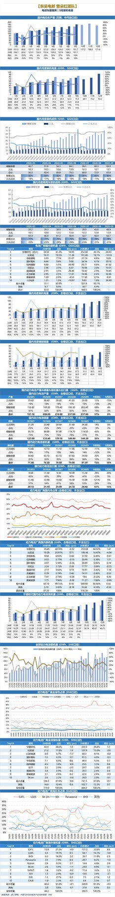
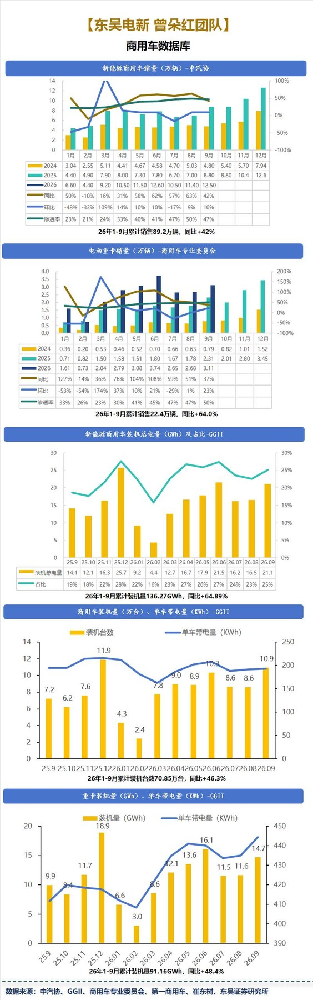
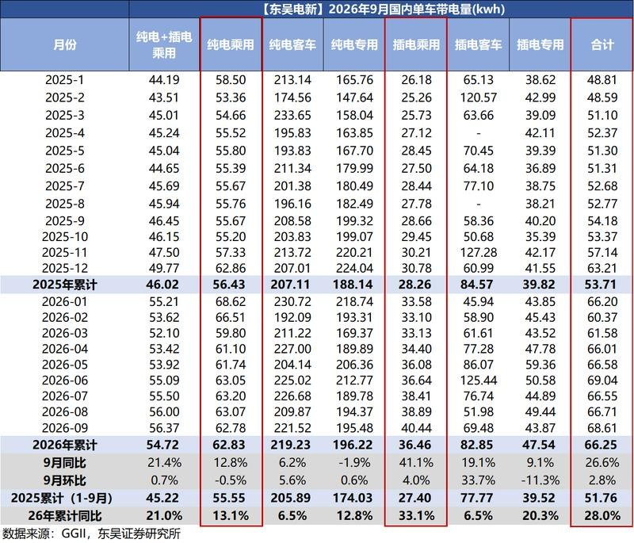
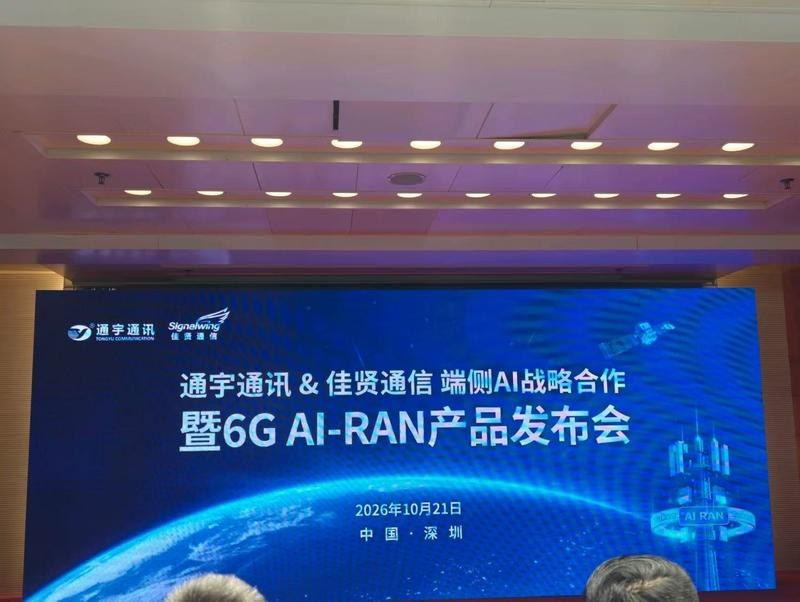
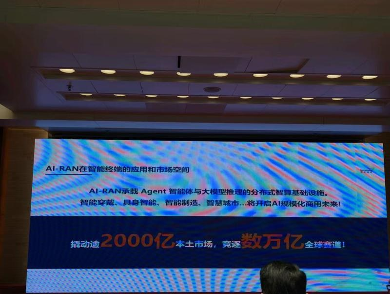
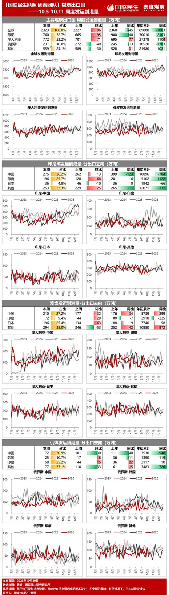
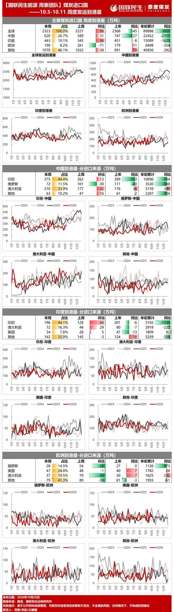

调研纪要 · 2026-10-21 新闻日报
星球 ID: 28855458518111 | 共 302 条帖子 | 精华 62 条
| 查看研究积累
书签
🔥🔥【液冷行业点评：黄仁勋柏林GTC重磅发声，Vera Rubin全面量产，100%液冷开启产业新周期！】
🔥🔥【液冷行业点评：黄仁勋柏林GTC重磅发声，Vera Rubin全面量产，100%液冷开启产业新周期！】
事件： 10月21日，英伟达CEO黄仁勋在2026年柏林GTC主题演讲中再次确认，Vera Rubin已全面量产，并发布模块化AI工厂DSX POD，现场部署周期有望从6个月缩短至14天。
核心观点：这不是简单的散热升级，而是AI算力基础设施的一次重大变革！
此前黄仁勋展示Vera Rubin计算节点：#采用100%液冷、无传统线缆及风扇设计，相较Grace Blackwell约80%的液冷比例，新架构将节点组装时间从2小时缩短至约5分钟，制造效率、系统可靠性全面提升。
我们认为，Rubin全面量产叠加AI工厂模块化交付，有望推动液冷从技术渗透期迈向规模兑现期！
随着GPU功耗和机柜密度持续攀升，液冷正从可选配置走向高端AI服务器标准配置，冷板、快接头、Manifold、CDU及冷源系统迎来增量空间。
🧧重点覆盖三大核心标的：
① 英维克（002837）：全链条液冷龙头。 UQD、MQD进入英伟达MGX生态合作伙伴体系，覆盖冷板、快接头、CDU等核心环节。
② 高澜股份（300499）：高弹性液冷标的。 上半年高功率密度热管理业务收入2.10亿元，同比增长53.41%，关注AI算力订单释放。
③ 申菱环境（301018）：液冷订单兑现标的。 上半年液冷新增有效订单约18亿元，重点关注收入结转和海外业务拓展。
👉🏻投资判断：过去炒的是液冷渗透率，未来看的是订单、交付与利润！Rubin量产或成为液冷产业链业绩释放的重要催化剂。
☎️风险提示：竞争加剧、订单兑现不及预期。
【国务院|全面实施“人工智能+” 强化场景驱动创新】
【国务院|全面实施“人工智能+” 强化场景驱动创新】
事件：2026年10月21日，中共中央办公厅 国务院办公厅关于推动科技创新和产业创新深度融合的意见
1、意见指出，坚持准确把握科技革命和产业变革新趋势新特点，推动创新资源向企业集聚；强化场景驱动创新。实施新技术新产品新场景应用示范行动，加大场景培育和开放力度。以先进技术改造提升传统产业。典型应用场景、可行商业模式，加快推进前沿技术产业化商业化，培育形成未来产业。引导大企业向中小企业开放研发平台、应用场景和供应链，先试首用中小企业创新产品。全面实施“人工智能+”行动，推动人工智能全方位赋能千行百业。
2、我们在AI应用系列报告，7月推出《
AI应用走到哪里了？ ↗》，10月推出《AI浪潮看内容与聚合平台价值几何？》，报告中指出，AI时代看的是其智能复利，第一阶段，通用人工智能已成为社会基建（可规模化调用），第二阶段，AI从聊天助手进入智能体发展阶段，第三阶段，应用涌现，从聚合平台到垂类应用百花齐放。2034年全球AI媒体娱乐市场规模拟达209亿美元（CAGR23.7%）；AI内容从量走向质，AI内容行业竞争下一站看"质”，优质内容公司有望借助AI在第二波内容浪潮中获重估；三季报临近中后段，AI传媒应用布局窗口渐起。建议关注#风语筑、吉宏股份、儒意电影、博纳影业、奥飞娱乐、中信出版、华策影视、恺英网络、完美世界、顺网科技、姚记科技、芒果超媒、吉比特、青瓷、创梦、B站、美图、minimax等。
《深度|AI浪潮看内容与聚合平台价值几何？》
深度|AI浪潮看内容与聚合平台价值几何？ ↗
《中共中央办公厅 国务院办公厅关于推动科技创新和产业创新深度融合的意见》
中共中央办公厅 国务院办公厅关于推动科技创新和产业创新深度融合的意见__中国政府网 ↗
算租行业调研：
算租行业调研：
1.行业2026年Q3询价数量较Q2继续增加，但实际落地项目偏少，主因Q2 GPU价格快速上涨使部分客户预算不足、需重新评估或追加预算；中小客户观望情绪上升。Q2算力资源出租率一度达99.5%，Q3整体需求仍处高位但强劲程度有所减弱。
2.大模型企业仍是主要需求方，处于市场抢占阶段，业务高峰时卡资源紧张、闲时富余。近一季度增长最快的领域是具身智能（各类机器人、机器狗、机械臂项目），基本涵盖大部分机器人领域客户，生物医药领域也有一定增长，部分传统行业同样有增长。
3.H20Q2价格上涨约50%（从4万至5万元升至6万至7万元），近期已有回落；H20主要用于推理、训练能力较弱，需求量不及其他高端卡，总体市场体量不大。A100、A800等老型号Q3随短租项目结束、散单资源增加，价格回落至Q2前期水平；这些老型号主要用于分散的中小资产中心，推理和训练能力相对较弱。
4.自有GPU主要服务大模型企业，以长期协议为主、利润相对较薄；高校、科研院所等客户需求规模较小，但价格敏感度相对较低、项目利润较高。自有产权卡按三年资产回收期平摊计算纯利润；第三方转租主要赚取上下游资源差价，扣除人力成本后为毛利。
5.近期行业紧急算力订单不多（Q2较常见，当时客户不确定后续价格走势）。大模型企业通常自有算力和智算中心，峰值时卡不够用、低谷时闲置，资源配置存在矛盾；企业扩充算力主要是为抢占市场份额。面对涨价客户态度相对理性，高端卡溢价能力较弱、报价和成交价差距不大。
【华西电子*中小盘团队联合】国家数据集团成立，国内数据行业有望加速起航
【华西电子*中小盘团队联合】国家数据集团成立，国内数据行业有望加速起航
20日，根据央广网，国家数据集团有限公司在河北雄安新区成立。国家数据集团将在有关部门指导下，加强央地联动，深化产业协同，推动能力共用、经验共享、业务共拓，#共同做大数据价值、做强数据产业、做优数据生态。
🚀顶层设计加速推进。
➠根据财联社，8月30日，国家数据局将在32个城市布局新一批数据标注先行先试，深入工业制造、医疗健康、交通运输等领域，破解数据标注产业发展瓶颈。
➠根据国家信息中心，7月19日，2026年世界人工智能大会上，国家信息中心联合GOMAX LAB启动《面向人工智能的数据语料构建生态路线图》研究工作。
🌟专家标注有望成为重要方向。
根据创业邦，#训练数据可能已经成为继AI算力和大模型之后，AI产业第三大的细分赛道，且仍在高速增长。
根据界面新闻、第一财经及投资界
➠Scale AI在25年交易估值超290亿美元
➠Surge在25年获约240亿美元媒体估值。
➠Mercor在26年8月洽谈约200亿美元估值融资。
#三家公司估值均在千亿元人民币量级。我们认为海外模型相对领先，对专家标注的需求早已体现，国内将进一步跟上。
📋受益标的：
GOMAX（根据Wind企业库，友邦吊顶 100%持股）
景联文（一级）、觅蜂科技（一级）等；
风险提示：行业发展不及预期、技术发展存在不确定性等。
具体信息欢迎联系华西电子团队卜灿华(SAC：S1120524120006)/华西中小盘团队刘文正（SAC：S1120524120007）
电动车数据库
电动车数据库



3 图
【招商机械 · 杰瑞股份26Q3业绩超预期增长】
【招商机械 · 杰瑞股份26Q3业绩超预期增长】
[红包]杰瑞股份发布26Q3业绩，利润增长超预期：
1）2026年1-9月实现营收119.7亿元，同比+14.9%；归母净利润18.9亿元，同比+4.4%。
2）2026Q3单季度，营收43.3亿元，同比+23%；归母净利润6.9亿元，同比+21.9%。
[烟花]燃机业务持续推进：
1）预付账款较年初增加297%，表明公司为推进重大项目，已经做了充分且积极的采购（如燃机机头、一体化设备）。
2）合同负债从年初的19.4亿元飙升至当期的70.5亿元，侧面反应签单量庞大，且预收款显著增长。
3）FTAI的机头测试进展良好，印证了航改燃机头的可靠性、稳定性。
[蛋糕]预计Q4业绩继续向上，27、28年将成为燃机确收大年：
1）7月因中东EPC发运的5亿元+的压缩机订单，将在Q4确收，天然气业务的确收逐步进入正轨；此外，Q3单季度汇兑损失1.09亿元，相比H1有所收窄。
2）Q3在建工程从8.4亿元上升到9.7亿元，公司同步在内地+美国实现产能扩张。目前27年燃机接单仍有一定冗余。我们预计27相比26年的燃机交付量将呈现5倍以上的增长。
☎详细信息，欢迎联系招商机械团队（郭倩倩/吴洋）
🌊杰瑞股份近况更新
🌊杰瑞股份近况更新
#汇兑损益： 前三季度汇兑损失3.73亿元，去年同期汇兑受益2500万元。Q3汇兑损失1.09亿，剔除汇兑后前三季度净利润增速较高，公司海外收入占比已超过50%，前三季度海外订单占比超过80%；
#中东天然气设备发运： 中东天然气业务确收受货物发运问题影响，涉及上亿元规模净利润；其中5-6亿元的天然气压缩设备于26年7月底发运，截至9月30日未完成最终清关及客户验收，10月14日到达客户现场，对应收入将计入四季度业绩。该批货物属于EPC板块，需到港并到达客户现场后确收。首批货物顺利到港后，公司积累了相关发运经验，后续中东货物发运将相对顺畅；
#现金流情况： 前三季度实现经营性现金流24.12亿元，同比增长32.82%。半年度经营性现金流为-7.94亿元，三季度公司现金流整体因订单预收款收入实现改善。经营活动现金流入增长主要受重大项目预付款带动；经营活动现金流出同比增长46.75%，主要系26年公司大量储备燃气轮机机头等核心部件，相关支出较高，也为公司后续获取更多的订单带来保障；
#订单情况： 公司统计原则是以收到客户预付款才计入订单。前三季度新增订单和存量订单均实现翻倍以上增长，公司持续稳健经营具有保障。截至三季度末合同负债累计超过70亿元，较年初增长263%；单Q3合同负债增加50亿元，主要对应美国客户燃气轮机及配套一体化设备的订单预收款；
#产能与排产： 现有自建产能包括国内205车间、美国杰瑞、加拿大工厂、迪拜工厂；国内新建3万平方米工厂，预计2027年上半年投产；美国在原有车间外扩建新车间，中美自建产能均在积极扩张。26年内将完成27年交付产品所需的全部产能建设，截至2027年底规划产能达到3GW以上，28年将持续增加产能建设；
#机头合作情况： Ftai机头已完成关键测试里程碑，公司、FTI及客户三方对测试结果均非常满意，测试结果达到预期目标，已获得的订单明年会按时保质保量完成交付；
详情欢迎联系~业务拆分欢迎交流！
【广发机械】杰瑞股份季报点评：Q3油气超预期，燃机预收款已提现在报表
【广发机械】杰瑞股份季报点评：Q3油气超预期，燃机预收款已提现在报表
1.#Q3业绩增长超预期。（1）2026Q3营收43亿元，同比+23%；归母净利润6.91亿元，同比+22%；剔除汇兑影响后Q3利润同比+29%；（2）26Q3毛利率为32.8%，同比+3pct，毛利率提升系燃机交付+天然气设备+油田开发的积极贡献。
2.#燃机预收款已体现至报表。（1）26年9月底相较于6月底，合同负债增加50亿元至71e，货币资金增加24亿元至94e，26Q3经营性现金流入32e，主要为X客户预收款；（2）预付账款增加17亿元至43e，主要系燃机机头采购。
3.#燃机产能+一体化业务稳步推进。（1）燃机产能：#预计27年底燃机产能提升至3GW，烟台25MW燃机产线、一体化产线已经搭建完成，FTAI测试结果符合预期，26Q4预计持续有订单落地。（2）一体化业务：26Q4完成零部件认证，27Q1前完成CUD等整机认证，中山2MW一体化示范基地已经落地。
投资思考。（1）#26Q3杰瑞燃机仅交付几十MW，因此表观业绩提速更多反映的是油气主业的高景气，Q4可能有天然气大单落地，#杰瑞主业估值被低估了；（2）美股的映射，昨晚spaceX业绩超预期，#下周GEV和FTAI将相继公布财报；（3）26Q4是一体化业务和燃机认证的核心加速时点。
目前杰瑞27年PE仅约13x，欢迎索取拆分、模型和纪要~
孙柏阳/汪家豪/张智林
【广发机械】松发股份股权激励方案点评：回购股票+考核27年业绩，彰显充足发展信心
【广发机械】松发股份股权激励方案点评：回购股票+考核27年业绩，彰显充足发展信心
#激励覆盖面广、股票来源拟通过二级市场回购。公司发布股权激励方案，拟筹集资金总额上限8.52亿（每份1元），初始持有人不超过5,370人，涵盖公司及子公司董事、高级管理人员及其他员工，总人数不超过5370人。资金来源为公司根据薪酬制度计提的业绩奖金（合法薪酬）及法律法规允许的其他方式。股票来源为通过二级市场集中竞价或大宗交易回购，按今日收盘价计算占总股本0.45%。计划实施后，全部员工持股计划累计持股不超过公司总股本10%，单个员工持股不超过1%，锁定期最晚至28年8月31日。
#从公司层面到个人层面全面考核、27年净利润目标150亿。该股权激励的业绩考核目标分为公司层面和个人层面考核，公司层面考核为当2027年净利润≥150亿时，董事、高管的股票份额按100%比例归属，更低利润对应更低的归属比例；个人层面考核根据公司内部绩效而定，当评级为A时股票份额可100%归属。
#该股权激励方案进一步彰显了公司对明年业绩的信心，同时进一步增强了对内部人员的激励，适应公司当前快速扩张阶段的节奏。我们认为150亿利润只是保底目标，实际业绩超预期空间极大。近期公司股价有所回调，主要受下游油运运价影响，我们继续坚定看好公司后续空间，珍惜回调后的布局机会。
孙柏阳/汪家豪/黄晓萍
[礼物]浙商大制造【松发股份】员工持股计划发布；全球民营造船龙头，量利齐升再创恒力新辉煌
[礼物]浙商大制造【松发股份】员工持股计划发布；全球民营造船龙头，量利齐升再创恒力新辉煌
📒事件：10月21日盘后，公司发布2026年员工持股计划（草案）。
1）计划拟筹集资金总额不超过8.52亿元，按10月21日收盘价187.98元/股测算，买入不超过453.34万股股票（约占总股本的0.45%）。
2）本计划股权来源为通过二级市场购买(包括但不限于集中竞价交易、大宗交易)等方式获取。
3）激励对象不超过5,370人，其中董事、高管8人合计仅占0.90%份额，其余99.10%份额分配给其他员工（不超过5,362人）
4）公司层面的业绩考核仅约束董事、高管，以2027年归母净利润（剔除激励相关费用）150亿元为100%归属目标，140/130/120/110亿元对应归属95%/90%/85%/80%；
5）个人层面考核按内部绩效评级A/B/C/D对应归属100%/80%/60%/0%。未达标份额由管理委员会无偿收回，出售所得归公司。
⭐️一句话推荐逻辑
全球船舶民企龙头，量利齐升再创恒力新辉煌。公司订单爆发式增长，船型结构改善、盈利提升，业绩有望超预期。
[太阳]核心投资逻辑
#1、造船高景气持续兑现，公司量价齐升带动利润大幅增长
2026年全球造船市场延续高景气周期，环保法规趋严、老龄船替换共同推动新船市场量价齐升。公司新签订单规模及船型多元化程度持续提升，高附加值油轮及集装箱船占比稳步提高，带动盈利能力显著上行。
#2、订单规模创行业纪录，多船型布局打开成长空间
2026H1恒力重工新承接船舶订单207艘，其中散货船49艘、集装箱船56艘、油轮94艘、VLAC液氨运输船8艘；累计接单超500艘，交船计划已排至2030年。集装箱船与油轮合计占比超七成，高附加值船型突破明显，VLAC订单落地也标志公司在气体运输船等新兴赛道竞争力提升。
#3、产能释放+一体化配套，规模效应持续凸显
公司上半年高质量交付船舶40艘，开工量与交付量双双提升。依托大规模船坞资源、区位优势、批量化节拍化生产模式，以及自配船用发动机带来的降本增效，公司产能释放与盈利弹性正在加速兑现。当前年钢材加工能力达300万吨、年产船用发动机300台，产业链一体化优势有望持续强化交付效率与成本竞争力。
❗风险提示：造船需求不及预期；排产及交付进度不及预期；原材料价格波动。
🗣最新增量信息欢迎交流！船舶数据库欢迎获取！
☎浙商大制造 邱世梁/王华君/张菁13802299976
伯特利、福赛科技、三联锻造交流要点 -20261021
伯特利、福赛科技、三联锻造交流要点 -20261021
#伯特利
EMB已经累计出货近2W套，累计定点10个项目左右，新签订单价格不错。one box预计全年出货增速30-40%，在主要客户份额仍有提升空间。豫北转向收购后，利润率持续稳定提升，未来将与万达整合。摩洛哥等海外基地稳步推进，客户订单充裕。悬架产品Q4开始出货，预计2027年出货达到10W套级别
#福赛科技
机器人主要做精密注塑功能件，有PEEK也有其他材料。目前公司有15个左右料号进入订单状态，更多的在对接，产销量在随客户顺利爬坡。主要难点：异形、超高尺寸精度、连接工艺。福赛的注塑工艺能力较强，客户认可度高。全球有多个工厂可以满足机器人零部件工艺要求
#三联锻造
探索锻造工艺的多种外延应用，逐步降低汽车业务占比。液冷：主要做分水器等零部件的锻造，月度营收已超1千万，预计27年3-4亿营收。燃气轮机：与大客户探索叶片锻造，设备主机到位中。机器人：谐波减速机零部件配套海外大型tier1，探索镁合金零部件应用
欢迎交流详情！
🌞PCB更新之【瑞丰高材】再度更新1021，觅拓市场首次交流
🌞PCB更新之【瑞丰高材】再度更新1021，觅拓市场首次交流
1️⃣#主要产品&创始人背景&收入： 树脂类材料、先进封装材料、半导体材料，#觅拓创始人曾在AGC、三井工作，具备日本电子化学品研发管理经验。觅拓2025年收入实现4000w，90%以上来自于环氧树脂，2026年收入预计高速增长，预计环氧占比50%，剩下均为碳氢树脂+PPO，#2027年底产能打满我们预估产值中性在15-20e。
2️⃣#高端树脂布局：
1）产能（年）：当前产能不到500t，2027一期至二季度计划扩至1500～2000t（#主要ppo+碳氢预计结构7:3），2027二期至年底计划扩至2500t，#2028年第二季度计划扩至5000t。
2）客户：主要突破客户包括TG、LM、NY、SX、SY等，除DS外基本全覆盖，SX认证花了2年时间；公司定位配合客户进行配方共同设计、联合研发。
3）产品：覆盖M4-10全产品，包括双马、PPO、碳氢、BCB等，后续主要聚焦M7-8+。
3️⃣#先进封装和半导体材料前沿布局： 除树脂外，重点发力三大类：1）低膨胀系数填料、特种填料，包括硅微粉、氧化铝、氮化硼、金刚石等；2）先进封装高端树脂；3）Krf、ArF光刻胶原材料—光敏剂。
[红包]浙商大制造 邱世梁 【罗博特科】
[红包]浙商大制造 邱世梁 【罗博特科】
——#英伟达合作伙伴SPIL扩产CPO
封测厂启动CPO扩产：看好公司Die级别测试设备有望受益
#事件： 2026年10月21日，英伟达官宣与其供应链合作伙伴扩大产能，其中：
SPIL（矽品）#计划到27年年中将CPO光引擎产能提高15倍、并计划到28年底再翻一番。
#解读：产业向前、保持信心
[太阳]1、Die级（Ins3）测试预计在封测厂进行，公司设备有望受益
据公司公告，在CPO测试环节，公司在Insertion 2和Insertion 3占据了特殊的市场地位。
#考虑27年中为SPIL首轮扩产节点、则期待26Q4起公司相关订单加速释放。
[太阳]2、调整创造机会
2026年10月16日，公司实控人戴军提议公司使用自有/自筹资金，通过集中竞价交易回购，并注销部分公司A股股票。
回购资金总额拟为5千万～1亿元。
❗️风险提示：硅光、CPO/OCS等渗透率不及预期等
[玫瑰]浙商大制造 邱世梁/陈红/陈俊韬
🎁【ZX电新】爱旭股份26Q3：单季归母净利润转正，BC盈利优势凸显
🎁【ZX电新】爱旭股份26Q3：单季归母净利润转正，BC盈利优势凸显
‼️#26Q3实现归母净利润4500万 公司2026年前三季度归母净利润-7.09亿元，26Q3单季度归母净利润为+0.45亿元，同环比均大幅实现扭亏为盈。26Q3公司毛利率 13.31%（+5.93ppts YoY，+5.5ppts QoQ）。前三季度经营现金流净额 19.47 亿（+10.45% YoY）。
#公司盈利主要来源于BC组件 我们测算公司26Q3 BC组件出货量约5GW以上，海外出货占比50%以上，公司经营性净利约2亿元以上，扣除汇兑损益及存货跌价损失后Q3实现微利。
🚀#公司计划改造天津6GW的ABC产能 公司公告计划将天津基地现有 PERC 电池产能升级改造为 6GW ABC 产能，总投资 11.50 亿元，2026Q4 启动，2027Q3 陆续投产，资金来源为公司自有资金（含票据）、金融机构融资、产业生态合作等多种方式筹措资金。
[太阳]爱旭股份26Q3更新-261021
[太阳]爱旭股份26Q3更新-261021
10月21日公司发布26年三季报，26Q1-Q3公司实现归母净利润-7.09亿元，其中Q3单季度实现归母净利润4456.66万元，Q3单季度业绩转正。
#Q3拆分
Q3 ABC组件满产满销，出货量5.4GW，环比小幅增长，海外占比预计50-60%，单瓦净利环比持续改善；非BC电池出货3GW，单瓦亏损收窄，测算主营业务整体经营性盈利2e+。
伴随外销业务规模提升，季度内汇兑影响7-8kw、资产减值损失1.65e，合计影响2.3-2.4e盈利。
#亮点及展望
Q3公司海外高价值订单占比提升，毛利率单季环比提升约5Pcts；BC需求持续向好，合同负债环增60%；前三季度经营性现金流净流入20e，库存周转加速。
展望后续，公司ABC新建+技改产能持续推进，叠加下游需求复苏，27年出货有望持续增长；当前行业反内卷持续推进，27年国标执行后BC高功率产品有望深度受益。
假设行业供需回归理性后，公司BC产品溢价能力保持，单瓦盈利7-8分，按30GW测算稳态利润20-25e，对应当前估值仅10X+，持续重点关注！
⭕【爱旭股份】业绩点评：ABC满产满销，单季扭亏，经营性拐点确立#中信建投电新
⭕【爱旭股份】业绩点评：ABC满产满销，单季扭亏，经营性拐点确立#中信建投电新
➡事件：公司26Q3实现营业收入52.89亿元，同比+68%；单Q3归母净利润4457万元，同比+115%、#环比扭亏（去年同期-2.95亿元、Q2为-3.14亿元）；
扣非净利润-2458万元，#环比收窄约93%。前三季度营收144.72亿元、同比+25%。
➡还原口径：考虑汇兑影响7-8千万、资产减值损失1.65亿元，合计2.3-2.4亿元；#还原后经营性盈利2亿元+，整体毛利率13.3%、#环比提升约5pct，组件毛利率约15%。
1️⃣#Q3业绩拆分：
①ABC满产满销：Q3出货5.4GW、#环比增长，#海外占比约55%，组件#单瓦净利6-7分，ABC贡献主营盈利3亿元以上。
②非BC收尾：非BC电池出货近3GW，#单瓦亏损3-4分，拖累约1亿元，随产能切换后续影响将逐步收窄。
2️⃣#现金流与订单：
公司前三季度#经营性现金流净流入约20亿元，库存周转速度加快；ABC组件满产满销，#合同负债环比增长60%，海外高占比+高溢价维持，需求景气度延续。
3️⃣#27年展望：反内卷+BC稀缺性、出货高增动能强劲
公司ABC新建+技改产能顺利推进，27年出货量高增带来强劲增长动能，单瓦盈利具备向上弹性。
随着行业#反内卷政策频出，供给侧格局优化，#BC高功率定位最为受益，稀缺产能溢价有望进一步拉大。
➡#估值锚：当前市值约250亿元，处盈利拐点初期，27年成长弹性显著。
——————
#中信建投电新团队 张芷菡/朱玥
🍁🍁🍁爱旭股份：26Q3扭亏为盈，体现强劲alpha！
🍁🍁🍁爱旭股份：26Q3扭亏为盈，体现强劲alpha！
🍁公司发布2026年三季报，26Q3公司实现归母净利润0.45亿元，同环比均实现扭亏为盈；实现扣非归母净利润-0.25亿元，同比减亏超过90%。公司能在光伏下行周期实现扭亏，是ABC技术溢价的充分体现。
🍁26Q3公司实现ABC组件出货5.4GW，出货规模环比继续增长，且组件单瓦盈利6-7分/W，盈利能力环比改善。核心原因在于26Q3组件销售毛利率达到约15%，整体毛利率环比改善约5pct，订单结构优化，推动组件销售价格提升，实现毛利率提升。
🍁公司常规电池出货约3GW，单位亏损约3-4分/W，且仍有汇兑损失0.7-0.8亿；资产减值损失1.65亿等影响，公司依然强势实现扭亏！
🍁26Q1-Q3公司累计经营性现金流净额近20亿，经营能力保持稳健。当前电池组件反内卷抓手为“高效高标准”，BC高功率组件核心受益。2027年公司BC组件出货有望超过30GW，具备充足利润弹性！
🍁保持推荐！
【安踏体育】：Q3承压但十一加速明显、Puma收购完成
【安踏体育】：Q3承压但十一加速明显、Puma收购完成
#安踏牌：Q3承压但十一加速
- Q3收入流水中单位数，Q1-Q3累计+小单，国庆+高单
- 分品类，Q3大货下滑高单，FILA下滑小单
- 分渠道，Q3线上基本持平
- 折扣：线下7.1折，同比持平，线上4.8折，同比加深2pct
- 库销比：5个月左右，同比持平
- 安踏牌全年低单位数流水增长目标不变，营业利润率保持20%左右目标
#FILA牌：线上继续领跑
- Q3流水下降小单位数，国庆全渠道+小双位数
- Q3线下：大货下降中单位数，儿童下降小单位数，潮牌增长中单位数（低基数+产品调整到位）
- Q3线上：小单位数正增长
- 折扣：线下7.2折，同比加深2pct，线上接近6折，同比持平
- 库销比：6个月以下，同比改善0.3个月
- FILA全年中单位数流水增长目标不变，营业利润率保持25%左右目标
#其他品牌：户外+女子运动保持高质量高增
- Q3+25%-30%，Q1-Q3+30%以上
- 迪桑特Q3+15-20%，Q1-Q3+约25%，全渠道保持9折，库销比6个月+，同比改善1个月
- 可隆Q3+约30%，Q1-Q3+约40%，会员规模突破200w，180天老客复购率达到30%；全渠道保持9折以上，库销比小于5个月，同比持平
- MaiaActiveQ3+30%以上，Q1-Q3+约30%，线下快于线上，品牌动能持续上升
- 其他品牌全年流水目标20%以上，目前看来大概率超额完成，营业利润率保持25%以上
#Puma：10月收购完成、已提名监事会成员
- 10/7完成对Puma29.06%股权收购，正式成为Puma最大股东，并提名2位代表进入监事会
- 对26年安踏报表影响估算：根据彭博一致预期Puma Q4预计亏损1.18亿欧元，考虑汇率和持股结构，我们估算对安踏报表直接影响大约2.5-3亿RMB
#全年流水和营业利润率指引维持
- 十一安踏+高单，FILA+低双，其他继续20%以上增长，开局良好，全年指引维持
- 考虑Puma亏损影响，剔除15.5亿亚玛芬配股一次收益影响，预计公司归母净利142/157/170亿元，同比+4.8%/+10.4%/+8.3%，对应PE12.8/11.6/10.7X
- 若考虑26年3月亚玛芬配股一次性收益15.5亿影响，安踏26表观利润预计为158亿元
- 考虑公司旗下户外矩阵成熟，狼爪27年预计中国区盈利，Puma收购后包括中国区在内改革大有可为，估值具备吸引力，当前继续推荐！
安踏体育26Q3交流更新【国金纺服】
安踏体育26Q3交流更新【国金纺服】
#安踏体育Q3流水中单下降
1️⃣安踏大货线下高单位数下降，安踏儿童线下低单位数下降，线上业务同比基本持平。表现主要受7月拖累，月度呈改善趋势，9月受中秋节连休拉动为三个月表现最好的月份；前三季度安踏品牌实现低单位数正增长。
2️⃣Q3末库销比维持在5个月左右的健康水平，同比持平。安踏大货线下折扣为7.1折，同比持平；线上折扣为4.8折，同比加深2个百分点。
3️⃣跑鞋推出C家族最新产品C202 8代、G9 3代。篮球品类推出欧文系列最新KAI 2，融合前三代经典元素。
#FILAQ3流水低单下降
1️⃣线下中单位数下降，FILA KIDS线下低单位数下降，潮牌中单位数增长；线上业务低单位数正增长。前三季度FILA中单正增长。
2️⃣Q3末库销比在6个月以上，同比改善0.3个月；9月底库存偏高主要为国庆、双十一备货。线下折扣7.2折，同比加深2个百分点；线上折扣接近6折，同比持平。
3️⃣9月新签代言人王安宇，官宣活动推广X PRO系列冲锋衣等新品。全国第二家TOPIA新一号店在沈阳中街开幕。
#其他品牌Q3同比增长25%-30%，前三季度维持30%以上增长。
1️⃣迪桑特：Q3同比增长15%-20%，前三季度增长接近25%。Q3末库销比维持在6个月以下，同比改善1个月；全渠道折扣维持在9折。
2️⃣可隆：Q3零售流水同比接近30%增长，同店增长15%。年活跃会员规模突破约200万，高卡会员人数增速接近51%，老客留存率稳定在20%以上，处于行业领先水平。年内新会员销售占比约50%，180天老客复购率约30%。
3️⃣MAIA：Q3同比增长30%以上，前三季度增长接近30%。Q3在东北沈阳、哈尔滨、长春开出三代零售店，三家新店月店效均超100万元，为品牌线下门店平均店效的一倍以上。
#维持全年营收指引 公司此前制定指引较为审慎，Q3流水走弱依旧有信心完成全年指引，且国庆期间流水改善：安踏品牌高单位数增长，FILA低双位数增长，其他品牌增长20%以上。此外27年春节时间同比提前预计有利于Q4销售。
完整纪要欢迎滴滴！水晶球🔮求支持国金纺服团队，感谢～
天辰生物：披露LP-005治疗PNH的Ⅱ期顶线数据，Q4W方案下溶血控制及贫血改善结果优异【招商医药】
天辰生物：披露LP-005治疗PNH的Ⅱ期顶线数据，Q4W方案下溶血控制及贫血改善结果优异【招商医药】
[庆祝]10月21日，公司披露LP-005治疗阵发性睡眠性血红蛋白尿症（PNH）的中国Ⅱ期临床顶线数据。该研究共入组30例患者，设置900 mg、1,200 mg及1,500 mg三个剂量组，采用每4周一次静脉给药方案。第12周，1,200 mg及1,500 mg组溶血控制率（LDH＜1.5倍正常值上限）均达到100%，三个剂量组输血避免率均为100%，未观察到突破性溶血。第24周，1,500 mg组85.7%（6/7）的患者在无需输血的情况下实现血红蛋白提高≥2 g/dL，71.4%（5/7）达到血红蛋白≥120 g/L，输血避免率为100%（7/7），未观察到突破性溶血，试验未报告治疗相关严重不良事件。
#双重干预近端与末端补体，贫血改善是核心看点。LP-005为靶向C5/C3b的双功能抗体融合蛋白，在抑制C5介导的血管内溶血基础上，有望进一步控制C3介导的血管外溶血，改善单靶点C5治疗下的残余贫血。此次高剂量组约七成患者血红蛋白达到120 g/L，为其双功能机制提供了积极的临床信号。作为参照，拉夫利珠单抗与依库珠单抗在301研究中的26周输血避免率分别为73.6%和66.1%；LP-005初步结果显示出较好的贫血改善及输血避免潜力。
#对标新一代补体疗法，LP-005已展极具竞争力的早期疗效。伊普可泮APPOINT-PNH研究24周持续血红蛋白提高≥2 g/dL及持续达到≥120 g/L的应答率分别为92.2%和62.8%；双功能补体药物KP104在18例患者中的24/25周对应比例分别为100%和55.6%，输血避免率为100%。LP-005此次血红蛋白达标比例表现积极，整体结果支持其参与新一代补体疗法竞争。考虑到患者基线、持续应答要求及分析样本量存在差异，后续更大规模研究将进一步明确其相对疗效水平。
#Q4W方案叠加双功能机制，构成LP-005后续开发的差异化优势。与每日2次口服的伊普可泮、上述研究中每2周皮下给药的KP104相比，LP-005提供了每4周静脉给药的治疗选择。此次Ⅱ期结果验证了该给药方案下积极的溶血控制与血红蛋白改善效果，进一步充实公司在补体领域的临床证据。后续重点关注完整48周随访、关键性临床推进，以及既往C5治疗后仍存在贫血患者中的疗效表现。
（梁广楷/许菲菲/焦玉鹏/侯彪）
【天风医药杨松团队】迈普医学2026 三季报点评：Q3 盈利质量改善，神经介入第二曲线落地
【天风医药杨松团队】迈普医学2026 三季报点评：Q3 盈利质量改善，神经介入第二曲线落地
[太阳]一、业绩：Q3 收入 +14.3%、扣非 +22.2%，利润快于收入
前三季度营收 2.94 亿元（+18.09%），归母净利 0.90 亿元（+19.18%），扣非 0.87 亿元（+19.09%），扣非与归母增速基本一致，非经常性影响很小。Q3 单季营收 1.05 亿元（+14.29%）、归母 0.34 亿元（+18.44%）、扣非 0.33 亿元（+22.22%）。
[太阳]二、盈利质量：Q3 毛利率 82.79%，费用率下降
前三季度毛利率 80.32%（-0.54pct），主要受产品结构与集采影响；但 Q3 单季毛利率 82.79%，同比 +1.45pct、环比 +3.69pct，结构改善明显。期间费用率 46.19%（-1.03pct），销售/管理/研发费用分别 +13.18%/+9.43%/+15.70%，研发仍保持投入。净利率 30.71%（+0.28pct）；经营现金流 0.89 亿元（+6.6%），与利润匹配。
[太阳]三、主业：集采进入放量兑现期
人工硬脑膜在京津冀“3+N”联盟中选，PEEK 修补系统河南续标、山东中标，止血纱覆盖多省市集采；上半年止血产品收入 3,362 万元（+44.77%），为核心增量。核心产品由“政策承压期”转入“放量兑现期”。
[太阳]四、第二曲线：易介医疗 10 月 14 日完成过户
以 3.35 亿元收购易介医疗 100% 股权，2026-10-14 完成工商变更，公司成为国内少数同时覆盖“神经外科植入＋神经介入耗材”的平台型企业。易介核心产品（远端通路导管、血栓抽吸导管、神经血管导丝）已进入 200+ 三甲；业绩承诺 2026-2029 年净利润 -317 万、1,487 万、3,336 万、5,201 万元，2027 年起贡献利润。中期看渠道与材料平台协同。
[太阳]五、风险提示
集采降价超预期；易介整合及业绩承诺不达预期；新品注册与放量不及预期；财务费用上升；行业竞争加剧。
[玫瑰]联系人：天风医药 杨松／周海涛
【国盛家电】视源股份26Q3业绩持续超预期❗
【国盛家电】视源股份26Q3业绩持续超预期❗
[红包]事件：公司发布2026年Q3季报。公司26Q3实现收入252.5亿元，同比+39.6%，归母净利润24.8亿元，同比+185.6%，单Q3收入108.6亿元，同比+44.4%，归母净利润9.6亿元，同比+103.6%。单Q3扣非归母净利润9.95亿元，同比+149%
#短期存储涨价催化、长期企业服务&控制器接棒成为主要驱动力&近期交流及拆分请私戳
[太阳]板卡前瞻性备货贡献强劲利润
[玫瑰]库存：目前70e+低价库存可覆盖全年需求、下半年不会大规模囤货、利好现金流
[玫瑰]价格传导：高峰时期每周谈价格、涨价传导顺畅，未来价格温和上涨下公司相对竞争优势将放大
#囤低价库存赚时间差是表象、反应的是公司对产业链趋势变化的敏锐度、上下游把控能力、规模经济
[太阳]控制器、汽车电子、企业服务强劲增长
[玫瑰]白电控制器：国内除格力美的均合作、海外今年新增日本大金，优势为与液晶板卡生产环节高度协同、客户也能复用#预计未来仍可30%+高增速、参考和而泰有翻倍空间
[玫瑰]汽车电子：今年长城明显起量，奇瑞、极氪等客户已在定点验证阶段，预计未来大几十增速
[玫瑰]企业服务：预计长期45%+增速，海外本地化营销团队部署+微软认证驱动、内销营销架构调整后放量#参考亿联25e收入45%净利率、海外有5倍以上空间10倍以上利润弹性
[太阳]教育复苏
[玫瑰]上半年增速6%、在行业偏冷情况下公司推教育电脑（全年预计14e）、课堂反馈系统、AI备课等积极探索场景#α强劲
[太阳]盈利能力大幅提升
[玫瑰]毛利率：单Q3毛利率+4.6pct至24.68%
[玫瑰]费率端：销售/管理/研发/财务费用率分别为2.9%/3.6%/4.8%/0.04%，同比-0.85/-0.35/-0.62/+0.19pct
[玫瑰]净利率：净利率10.06%，同比+2.94pct，扣非净利率9.16%，同比+3.85pct
国盛家电 徐程颖/陈思琪/盘姝玥
【国金商社】小商品城：Q3表观承压不代表真实经营状态，义支付加速验证盈利拐点，低预期+低估值，建议关注～
【国金商社】小商品城：Q3表观承压不代表真实经营状态，义支付加速验证盈利拐点，低预期+低估值，建议关注～
[庆祝]公司26Q3实现营收50.38亿元，同比-5.81%；归母净利14.81亿元，同比-16.14%；扣非净利16.05亿元，同比-6.87%。26Q1-Q3累计营收153.2亿（同比+17.3%），归母净利34.6亿，同期基本持平
🔥Q3表观下滑，#扰动项剔除后经营状态平稳
1）高基数：25Q3单季归母高达17.66亿（同比+100.5%），选位费集中确认造成异常高点；
2）公允价值转负：Q2公允价值正向1.3亿元，Q3转为-1.89亿。
剔除25Q3基数超额毛利约2.49 亿（25Q3毛利率45.4%对比26Q3的40.8%）、剔除26Q3投资收益和公允价值变动拖累约2.42亿，则还原后26Q3营业利润同比+4.3%。
🔥#YiwuPay加速验证公司向贸易服务转型的关键拐点。1-9月跨境支付交易额突破75.10亿美元，同比+98%；其中1-6月仅25亿（与去年持平），7-9月单季完成约50亿，渗透率曲线陡峭，全年100亿美元目标可期。
🔥#Chinagoods平台与AI生态持续扩张。1-9月新增注册采购商超58万、累计超608万；"世界义乌"大模型APP累计用户超7万；年内新增"数据洞察/电商通/AR空间"等AI应用16项、累计30项，服务用户超31.6万。
#估值与股息：预计26-28年利润 48 / 55 / 63 亿，当前对应26EPE约12x；25年分红比例65%、股息率3.13%，26全年预期股息率有望达5%以上，高股息带来安全垫，贸易服务转型驱动估值修复，Q4选位费结算与义支付放量为主要催化~
欢迎联系国金商社 于健 15821682853 / 谷亦清/代宇星
【东吴商社】小商品城2026Q3：高基数下扣非基本稳定，公允价值变动拖累归母
【东吴商社】小商品城2026Q3：高基数下扣非基本稳定，公允价值变动拖累归母
#Q3归母受公允价值变动影响 2026Q1-3营业收入153.19e/同比+17.3%，归母34.61e/同比+0.1%，扣非34.28e/同比+1.1%。2026Q3营业收入50.38e/同比-5.8%，归母14.81e/同比-16.1%，扣非16.05e/同比-6.9%，2025Q3高基数下扣非基本稳定，符合我们预期。
#所持股份股价回落影响公允价值变动收益 2026Q3非经常性损益-1.24e，2025Q3为+0.43e；公允价值变动收益-1.90e，我们测算其中所持沐曦股份-U影响约-1.90e。
#扣非环比提升主要来自存量商位盘活 2026Q3扣非16.05e，较2026Q2的8.78e环比增长82.8%。我们认为主要来自国际商贸城1-5区存量商位盘活的收入确认。公司下半年1-5区存量商位以公开招标方式盘活，招拍价格较高，使Q3扣非利润环比显著增长。
#义支付交易额同比+98% 2026年1-9月，义支付跨境支付业务交易额突破75.10亿美元，同比增长98%；2026H1该项交易额为超25.1亿美元。2026年1-9月CG平台新增注册采购商超58万人、累计超608万人，新增AI应用16项、累计30项。
#义乌外贸景气延续 根据义乌海关，2026年1-8月义乌市进出口总值6,364.0e/同比+14.8%，其中出口5,488.5e/同比+12.8%，进口875.5e/同比+29.4%，义乌市场景气度仍较好。
#估值处于低位建议关注 我们看好公司依托义乌市场的长期beta，以及义支付、CG等新业务带来的alpha。我们预计公司2026年归母净利润为48.0e，对应PE为12倍处于低位，建议关注。
东吴商社 吴劲草/杜玥莹/阳靖
本信息星级：
小商品城：Q3表观承压不代表真实经营状态，义支付加速验证盈利拐点，低预期+低估值，建议关注～
小商品城：Q3表观承压不代表真实经营状态，义支付加速验证盈利拐点，低预期+低估值，建议关注～
[庆祝]公司26Q3实现营收50.38亿元，同比-5.81%；归母净利14.81亿元，同比-16.14%；扣非净利16.05亿元，同比-6.87%。26Q1-Q3累计营收153.2亿（同比+17.3%），归母净利34.6亿，同期基本持平
🔥Q3表观下滑，#扰动项剔除后经营状态平稳
1）高基数：25Q3单季归母高达17.66亿（同比+100.5%），选位费集中确认造成异常高点；
2）公允价值转负：Q2公允价值正向1.3亿元，Q3转为-1.89亿。
剔除25Q3基数超额毛利约2.49 亿（25Q3毛利率45.4%对比26Q3的40.8%）、剔除26Q3投资收益和公允价值变动拖累约2.42亿，则还原后26Q3营业利润同比+4.3%。
🔥#YiwuPay加速验证公司向贸易服务转型的关键拐点。1-9月跨境支付交易额突破75.10亿美元，同比+98%；其中1-6月仅25亿（与去年持平），7-9月单季完成约50亿，渗透率曲线陡峭，全年100亿美元目标可期。
🔥#Chinagoods平台与AI生态持续扩张。1-9月新增注册采购商超58万、累计超608万；"世界义乌"大模型APP累计用户超7万；年内新增"数据洞察/电商通/AR空间"等AI应用16项、累计30项，服务用户超31.6万。
#估值与股息：预计26-28年利润 48 / 55 / 63 亿，当前对应26EPE约12x；25年分红比例65%、股息率3.13%，26全年预期股息率有望达5%以上，高股息带来安全垫，贸易服务转型驱动估值修复，Q4选位费结算与义支付放量为主要催化~
【广发机械】鹰普精密Q3速评：持续上修指引，发电&液冷进入兑现期，领跑板块
【广发机械】鹰普精密Q3速评：持续上修指引，发电&液冷进入兑现期，领跑板块
#上修全年收入指引到25-30%。前三季度收入实现26%同比增长，Q3收入同比+31%，单季达17.82亿港元。
#26Q3单季度收入：
1️⃣多元化工业：同比+49.8%至11.65亿港元，其中热管理、大马力发动机及工程机械细分市场增长表现突出。
2️⃣航空、能源及医疗：同比+20.2%至2.74亿港元，能源及航空相关业务增速尤为显著
3️⃣汽车：同比-3.4%至3.43亿港元，下降幅度正持续收窄。
#天然气发动机放量带动大马力板块快速增长。6月起3520系列气发产品快速爬坡，达到周产35台，气发价值量及利润率大幅高于柴发，拉动大马力板块快速增长。
#展望Q4及明年宜兴、墨西哥工厂扩产+爬坡，增长斜率继续向上。墨西哥工厂产能爬坡在Q4和明年，尤其是大马力发动机缸体产能。此外宜兴工厂扩产9月投产，#预计2-3个季度内产能接近翻倍。
#今年是公司业绩向上的拐点，#发电&液冷进入兑现期、增速领跑整个板块。公司连续3个季度上修收入指引，后续随着气发持续爬产+墨西哥产能释放，斜率会继续上升。当下市值对应明年9x估值，低估值、低位置、高增速。
下周二我们邀请公司来上海反路演，具体情况欢迎交流[抱拳]
孙柏阳/汪家豪/蒲明琪
🌊GHDX：三一重能交流更新（10.21）
🌊GHDX：三一重能交流更新（10.21）
#风机毛利率持续修复、单Q3超6%
前三季度风机出货超9GW，单Q3出货3-4GW。前三季度风机毛利率超5.5%，单Q3毛利率6%以上。
#海外在手订单超100亿元、单Q3海外营收11亿元
前三季度海外营收近20亿元，单Q3营收约11亿元。在手海外订单超100亿元（已签订合同口径，中标口径更多）。
#电站转让同比增加、毛利率维持平稳
前三季度电站转让容量、收入同比提升，毛利率和25年基本持平。Q4还会集中转让。
#26年国内风机需求约1.8万台
26年风机需求1.78-1.8万台（国内+出口），对应105-110GW。27年国内预计略降，出口预计大幅增长，总量持平略降。
#25年寿命新产品发布
风能展公司发布25年寿命风机，较20年风机发电量提升5%-8%，度电成本下降6%-7%，内部收益率+0.8pct，海陆一体化，6-11MW平台已获得25年形式认证。
（[玫瑰]欢迎联系索取详细纪要、公司模型）
-------------------
【GHDX】邱迪、王刚、谭甘露、吴亦辰
【中材国际】2026年前三季度实现营收319.41亿元，同比-3.20%；归母净利润12.88亿元，同比-37.91%；扣非归母净利润12.99亿元，同比-29...
【中材国际】2026年前三季度实现营收319.41亿元，同比-3.20%；归母净利润12.88亿元，同比-37.91%；扣非归母净利润12.99亿元，同比-29.82%；经营现金流净额2.26亿元，净流入同比+135.98%。
Q3单季实现营收106.79亿元，同比-5.68%；归母净利润3.54亿元，同比-45.75%；扣非归母净利润3.51亿元，同比-42.64%；经营现金流净额3.83亿元，净流入同比+1880.68%。
2026年前三季度毛利率同比-0.15pct至17.03%；期间费用率同比+1.25pct至10.19%，其中销售/管理/研发/财务费用率分别同比+0.01/+0.26/+0.34/+0.64pct至1.03%/5.00%/3.79%/0.38%。此外，公司资产+信用减值损失4.87亿元，损失同比+51.83%，占收入比重同比+0.55pct至1.52%；投资净收益0.32亿元，收益同比-75.77%，占收入比重同比-0.3pct至0.10%。综上，净利率同比-2.49pct至4.27%。
2026年前三季度公司经营现金流净额2.26亿元，净流入同比+135.98%，主要是收到项目预付款及进度款增加所致；其中收现比同比+11.72pct至96.12%，付现比同比+9.49pct至94.35%。
🌹【中泰商社】敷尔佳：26Q3收入提速，全年激励目标达成在望
🌹【中泰商社】敷尔佳：26Q3收入提速，全年激励目标达成在望
#1）26Q1-3 营收17.70亿/yoy+36.43%；归母净利润3.62亿/yoy+11.35%；扣非净利2.56亿yoy+0.95%，受非经常性损益1.06亿（政府补助0.68亿+理财收益0.72亿）影响。
#2）26Q3 营收6.14亿，yoy+41.37%提速；归母净利润1.06亿，yoy+11.08%；扣非净利润0.89亿/yoy+2.02%。
💰#盈利能力： 26Q1-3毛利率76.86%（yoy-4.25pct，产品结构变化所致）；销售费用率50.16%（yoy+2.28pct，宣传推广加码）；归母净利率20.45%（yoy-4.61pct）。26Q3单季毛利率/净利率约76.83%/17.27%。
🌟#股权激励目标锁定、中长期信心充裕。股权激励以2025营收为基数，2026-28年营收增速目标20%/35%/50%（触发值18%/31.5%/45%），测算26Q4收入5.02（目标）/4.64亿（触发）即可达成。作为功效护肤&医美敷料龙头，渠道转型成效持续验证，叠加股权激励绑定核心人才，看好妆械双轮、渠道多元化的成长逻辑持续兑现；关注费用投放效率持续改善、以及Ⅲ类产品上市进展及放量节奏。
风险提示：宏观经济，竞争变化，新品不及预期，数据统计口径差异
☎️中泰商社 郑澄怀 / 袁锐
✨敷尔佳：Q3收入增长提速，新品周期与医美布局打开成长空间
✨敷尔佳：Q3收入增长提速，新品周期与医美布局打开成长空间
📈#财务表现：
1）26年前三季度实现收入17.7e/+36.4%，归母净利润3.6e/+11.4%，扣非归母净利润2.6e/+1.0%。受产品结构变化影响，毛利率同降4.2pcts至76.9%，销售费率同增2.3pcts至50.2%，管理/研发费率分别同降1.5/0.7pcts至3.9%/2.1%，归母/扣非归母净利率分别同降4.6/5.1pcts至20.5%/14.5%。
2）26Q3实现收入6.1e/+41.4%，环比提速明显；归母净利润1.1e/+11.1%，扣非归母净利润0.9e/+2.0%，主要受政府补助及理财相关损益影响。单季度毛利率同降3.6pcts至76.8%，销售费率同增4.2pcts至50.5%，管理/研发费率分别同降1.4/1.1pcts至4.0%/1.9%。产品结构变化叠加宣传推广投入增加，归母/扣非归母净利率分别同降4.7/5.6pcts至17.3%/14.5%。
💄#修护抗老布局持续深化、研发成果加快落地。公司围绕修护与抗老需求，将成分及递送技术研究融入产品升级：9月迭代赋活油、流金油2.0，推出抗皱紧致养肤胶囊油及人参三因面霜等新品，持续拓展日常护理及抗老场景；10月发布PDRN科学护肤与透皮技术创新白皮书，相关成果已应用于水光面膜、水光弹次抛精华，进一步强化核心品类的修护功效。
💉#注射医美布局推进、产品梯队逐步完善。公司首款注射类Ⅲ类器械“花季动能素”预计于10-11月投入使用，有望联动既有医用敷料，将业务由术后修护向注射治疗及配套护理延伸。后续重组Ⅲ型人源化胶原蛋白冻干纤维已获注册受理，Ⅲ类胶原蛋白贴敷料及真皮层胶原蛋白填充剂等项目持续推进，逐步完善覆盖注射、填充及术后修护的产品梯队，为医美业务拓展提供支撑。
🌹#投资建议： 公司传统医用敷料基本盘稳固，线上渠道增长支撑收入提速，功效护肤新品持续拓宽消费场景，注射医美及胶原蛋白产品储备进一步打开成长边界。预计26年归母净利润约4.8e，对应PE约22x。
联系人：嵇文欣/张望/陈又铭
[礼物]敷尔佳2026Q3业绩概览【中信证券美妆&商业】
[礼物]敷尔佳2026Q3业绩概览【中信证券美妆&商业】
业绩概览
2026Q1-Q3，公司实现营业收入17.70亿元/+36.4%，毛利率76.9%/-4.2ppts，归母净利润3.62亿元/+11.3%，归母净利率20.5%/-4.6ppts，扣非净利润2.56亿元/+0.9%，扣非净利率14.5%/-5.1ppts。
2026Q3单季度，公司实现营业收入6.14亿元/+41.4%，毛利率76.8%/-3.6ppts，归母净利润1.06亿元/+11.1%，归母净利率17.3%/-4.7ppts，扣非净利润0.89亿元/+2.0%，扣非净利率14.5%/-5.6ppts。
经营更新：
1）线上GMV稳健增长：据久谦/蝉妈妈，2026Q3敷尔佳品牌天猫+抖音GMV合计同比+61%，其中天猫和抖音平台GMV均同比增长60%+。
2）首款III类医美产品花季动能素上市在即：据敷尔佳官方微信公众号，公司首款三类医疗器械<敷尔佳花季动能素>将于今年10月上市，其将营养组分直接输送至真皮层，针对成人肌肤干燥、肤色暗沉等问题，为求美者提供系统化肤质提升方案。
2026Q1-Q3，公司销售/管理/研发/财务费用率分别为50.2%/3.9%/2.1%/-0.4%，分别同比+2.3/-1.5/-0.7/+1.7ppts；2026Q3单季度，公司销售/管理/研发/财务费用率分别为50.5%/4.0%/1.9%/-0.1%，分别同比+4.2/-1.4/-1.1/+1.8ppts。
「图片」
「图片」


2 图
📑📝英伟达再次大量收购了 ABF 基板产能……！！
📑📝英伟达再次大量收购了 ABF 基板产能……！！
✨📌扩大基板产能以支撑业务规模增长
📌📌英伟达计划在未来三年内，将自身产品对应的基板产能提升至原来的2.5 倍，下面这些协议将助力本次产能扩张，还有更多相关协议正在推进当中。
📌📌根据 IBIDEN 在今年早些时候签署并对外公布的协议，英伟达将支付数十亿美元的产能预留预付款，用来支持 IBIDEN 位于日本的 Ono 工厂扩建。本次扩建目标是让这座工厂的产能达到现有水平的 3 倍，新增产能预计会在 2028 年第一季度开始逐步爬坡。
📌📌三星电机正式加入英伟达的基板供应链，可以依托其在韩国现有的产线立刻释放产能。本次合作同时会支持韩国世宗、釜山两地的产线升级以及新工厂建设。到 2028 年，分配给英伟达的产能预计将占到三星电机年度封装基板总产能里相当大的一部分。
📌📌英伟达通过产能预留协议，支持欣兴电子在中国台湾地区扩充 KF 基板产能。本次扩产预计从 2027 年第二季度开始释放新增产能，并且在 2028 年年中实现满产。
✨📌为下一代平台扩充先进封装产能
📌📌英伟达和安靠计划在韩国扩充先进封装产能，目标是到 2028 年底，中介层晶圆产能提升幅度超过300%。本次规划的产能扩张，叠加安靠在韩国新建制造设施的布局，能够支撑英伟达现有平台以及下一代平台实现更高的出货规模。
📑📈NVIDIA 与供应链合作伙伴扩大产能，加速 AI 基础设施建设
📑📈NVIDIA 与供应链合作伙伴扩大产能，加速 AI 基础设施建设
🌍📌柏林，2026 年 10 月 21 日（GLOBE NEWSWIRE）——GTC Berlin——NVIDIA 今日宣布，将与一批供应链合作伙伴携手扩大其全球制造产能，以满足市场对其加速计算和全栈式 AI 工厂平台日益增长的需求。
🤝📌NVIDIA 正与 Amkor Technology、IBIDEN、King Yuan Electronics（KYEC）、Samsung Electro-Mechanics、Siliconware Precision Industries（SPIL）和 Unimicron Technology Corporation 合作，助力新老供应商扩充基板、先进封装、测试和光引擎等关键制造能力，从而增强 NVIDIA 全球供应链的韧性和冗余能力。
🗣️📌NVIDIA 创始人兼首席执行官黄仁勋表示：我们正处于人类历史上规模最大的基础设施建设浪潮之中。需求空前旺盛，产能则成为瓶颈。我们的供应链合作伙伴是全球顶尖的制造商。我很感谢他们在全球各地扩大产能、提升产量，帮助我们交付 AI 超级计算系统，为这场新的工业革命提供动力。
扩大基板产能以支持业务量增长
🎯📌NVIDIA 计划在未来三年将其产品的基板产能提高至原来的2.5 倍。以下协议将助力扩大产能，更多协议也在推进当中。
📄📌根据 IBIDEN 于今年早些时候签署并宣布的协议，NVIDIA 将提供数十亿美元的产能预留预付款，以支持 IBIDEN 位于日本的 Ono 工厂扩建。扩建目标是将该厂产能提升至当前水平的 3 倍，新增产能预计将于 2028 年第一季度开始逐步爬坡。
📄📌三星电机将加入 NVIDIA 的基板供应链，利用其在韩国现有运营设施立即扩大产能。此次合作还将支持韩国世宗和釜山的设施升级以及新工厂建设。预计到 2028 年，分配给 NVIDIA 的产量将占三星电机年度封装基板总产能的相当大一部分。
📄📌NVIDIA 正通过产能预留协议，支持欣兴电子在中国台湾扩大 KF 基板产能。预计此次扩产将于 2027 年第二季度开始增加产能，并于 2028 年年中达到满产。
为下一代平台扩大先进封装产能
🎯📌NVIDIA 与 Amkor 计划扩大在韩国的先进封装产能，目标是在 2028 年底前将中介层晶圆产能提升逾300%。此次产能扩张，以及 Amkor 在韩国新建制造设施，将支持 NVIDIA 当前及下一代平台提高产量。
扩大半导体测试规模，强化美国制造能力
🎯📌NVIDIA 预计，在美国、中国台湾和新加坡的产能建设项目支持下，其半导体测试总产能将在 2026 年至 2027 年间翻一番。
💰📌NVIDIA 向 KYEC 提供的11 亿美元产能预留预付款，将用于支持其在美国建设新的测试设施并添置设备，目标是在 2027 年 4 月实现大规模量产。
📍📌在新加坡，扩大的测试业务预计将于 2027 年 2 月开始大规模量产。
打造共封装光学技术基础设施
🎯📌NVIDIA 和矽品精密计划扩大在中国台湾的产能，生产用于共封装光学技术的光引擎，以满足大型计算基础设施不断增长的互连需求。扩产目标是在 2027 年中将产能提升至当前的15 倍，并争取到 2028 年底再翻一番。
ℹ️📌关于 NVIDIA
📌📌NVIDIA（NASDAQ: NVDA）是全球 AI 和加速计算领域的领导者。
📑🚀Google Cloud 与 NVIDIA 宣布 NVIDIA Vera Rubin 基础设施正式全面可用
📑🚀Google Cloud 与 NVIDIA 宣布 NVIDIA Vera Rubin 基础设施正式全面可用
📄📌由 NVIDIA Vera Rubin NVL72 系统加速的 Google Cloud A5X 实例，为欧洲创新者提供下一代智能体与强化学习基础设施。
💡📌这些实例将于下个月正式全面可用，并计划将可用范围扩展至欧洲，为云客户带来一个集训练、推理和大规模强化学习于一体的集成平台。
⚙️📌A5X 实例将NVIDIA Vera Rubin NVL72、NVIDIA ConnectX-9 SuperNICs、Google Cloud Virgo 网络以及 Google Cloud 第四代先进液冷技术整合在一起，以大规模应对高要求的智能体推理和强化学习工作负载。Google Cloud 计划将其基于 Vera Rubin 的基础设施扩展至多个站点、最多960000 块 Rubin GPU。
👥📌Ineffable Intelligence 是一家总部位于伦敦的科技公司，由 AlphaGo 创造者 David Silver 创立，是首家使用 A5X 的客户。Ineffable 正利用该平台推进大规模强化学习，并打造能够从经验中持续学习的 “超级学习者” 系统。
🧠📌通过交互进行学习需要持续循环地生成经验、评估结果并更新模型，这要求基础设施能够大规模支撑整个流程。A5X 将 Vera Rubin 作为集成系统引入 Google Cloud 的 AI Hypercomputer，融合计算、网络和存储，以大规模支持经验驱动的学习。
🗣️📌Ineffable Intelligence 创始人兼首席执行官 David Silver 表示，我们正在构建能够通过自身经验不断改进的超级学习者，这既需要强大的算力，也需要在生成经验与基于经验进行训练之间建立紧密连接，从而使智能体的每一次改进都能迅速塑造其下一次经验。Vera Rubin 将计算性能与高带宽连接相结合，既包括 Vera CPU 与 Rubin GPU 之间，也包括机架内 Rubin GPU 之间，使我们能够进一步拓展强化学习研究的规模和雄心。
📢📌总部位于伦敦的营销与传播公司 WPP，也已在基于 NVIDIA Vera Rubin 的 A5X 实例上展示了其创意智能体参考架构，使用了 NVIDIA Nemotron 模型和 NVIDIA OpenShell，后者是 NVIDIA OpenShell 参考架构的一部分，用于构建安全的 AI 智能体。
🤖📌智能体将对话式请求转化为多步骤创意工作流，例如视频生成、画质提升和风格重塑，并在执行前获得人工审批。OpenShell 为智能体执行提供受管控的沙箱环境，帮助控制对敏感品牌资产和创意工具的访问。在 WPP 的初步测试中，通常需要多节点集群才能运行的工作负载，在单台 A5X 实例上即可完成。
🔒📌随着各组织部署智能体系统，他们需要保护驱动这些系统的专有模型和敏感数据，即使运行在并非自身拥有的基础设施上也是如此。
✅📌Google Cloud 将成为首批在裸金属实例上以机架规模提供 NVIDIA 机密计算的云服务提供商之一，例如由 NVIDIA GB300 NVL72 驱动的 A4X Max 实例。此外，Google Cloud 正在由 NVIDIA RTX PRO 6000 Blackwell 服务器版 GPU 驱动的 G4 虚拟机上全面提供机密计算，为机密推理和微调提供灵活的平台。包括 Vertebrae、Polaris Cloud 和 Confidential Core AI 在内的客户正在使用机密 G4 实现对话隐私、可验证的智能体执行以及受策略治理的公司智能。
⚡📌为支持大规模高能效部署，Google Cloud 与 NVIDIA 正在探索面向 Vera Rubin 基础设施的 NVIDIA DSX Max LPS 能力，以帮助优化每瓦性能，并在现有数据中心电力预算内扩展容量。
🔗📌可以深入了解 NVIDIA Vera Rubin 与 Google Cloud A5X 实例。
📑📰OpenAI 与 Google 达成协议，扩大云服务覆盖范围
📑📰OpenAI 与 Google 达成协议，扩大云服务覆盖范围
💡📌OpenAI 正在将其 AI 模型和 Codex 编程工具引入 Google Cloud，从而扩大其在美国三大主要云服务提供商客户中的覆盖面，其中包括一些与其竞争最为激烈的 AI 对手。
🔍📌为何重要：此举凸显出，业界日益认识到，赢得公司 AI 竞赛不仅取决于打造最强大的模型，还取决于能否让公司在运行软件和存储数据的现有平台上使用这些模型。
✨📌对 OpenAI 而言，这项协议提供了另一种触达公司客户的途径，无需客户与 ChatGPT 的开发商另行建立合作关系。
✨📌对 Google 而言，这意味着它将在销售自家 Gemini 产品的同时销售竞争对手的 AI 模型，从而有望争取到原本可能流向竞争云服务提供商的业务。
📢📌新闻速递：根据周三宣布的协议，Google Cloud 客户将能够通过 Google 的 Model Garden 和 Marketplace 购买 OpenAI 的前沿模型，也可使用现有的云服务支出承诺进行购买。
✨📌这项协议还将 OpenAI 模型引入 Google 的 Antigravity 开发环境和 Gemini Agent。
✨📌相关服务计划在未来几周内全面开放。
🌐📌大局观：今年早些时候，OpenAI 已将服务扩展至 Amazon Web Services，此次协议紧随其后，此前 OpenAI 与 Microsoft 合作关系的调整，为其通过更多云平台分发服务打开了大门。
✨📌AWS CEO Matt Garman 当时表示，客户一直希望能在现有应用和数据所在的平台上运行 OpenAI 模型。
✨📌此后，亚马逊扩大了通过其 Bedrock 平台提供的 OpenAI 模型和服务，但双方均未公开量化这一合作带来的新增业务。
🗣️📌他们怎么说：Moor Insights & Strategy 副总裁兼分析师 Mike Leone 表示，这笔交易对双方都意义重大，尤其是因为许多 Google Cloud 客户希望在不迁移数据的情况下使用 OpenAI 模型。
✨📌Leone 告诉 Axios：“在我看来，这笔交易体现了 Google 的信心，因为如今 Gemini 必须在 OpenAI 近在咫尺的情况下争取这些客户。”
✨📌不过，他认为 Google 未必会因此损害 Gemini 的发展，因为无论客户选择哪种 AI 模型，他们仍会为 Google 的云平台、数据服务和安全服务付费。
⚠️📌是的，但分发只是其中一环。OpenAI 仍需说服公司选择其模型，而非 Google、Anthropic 及其他竞争对手的模型，而许多模型都可通过同一批云平台使用。
✨📌这可能意味着，云服务提供商现有的公司客户关系和基础设施，与其提供的模型同样重要。
✨📌Leone 表示：“一旦每家云服务商都拥有顶尖模型，我认为竞争优势将归于最善于处理公司数据、治理和成本的一方。”
📑🚨摩根大通—SpaceX2026 年第三季度业绩信号印证 AI 基础设施建设景气，有望缓解行业对各类约束条件的担忧
📑🚨摩根大通—SpaceX2026 年第三季度业绩信号印证 AI 基础设施建设景气，有望缓解行业对各类约束条件的担忧
📰📌SpaceX 公布了 2026 年第三季度业绩，同时披露多项数据中心建设的最新进展。
📰📌💡这份报告为 2026 年三季报季带来先行参考信号，当下市场一直担忧 AI 基建建设规模与落地节奏，顾虑电力供给以及资金层面的约束。
📊📌SpaceX 更新 2026 年末名义算力指引，从此前 8 月给出的 2GW 以上上调至2.5‑3GW。
📊📌该公司 2026 年第三季度末已经达成 1.7GW 名义算力，预计到 10 月底算力将接近 2GW。
📊📌对于 2027 年，公司管理层此前给出的全年累计算力指引区间为 5‑10GW，偏向 10GW。
📊📌目前最新指引预计 2027 年至少新增 10GW 算力，对应累计总算力约 13GW；乐观情景之下，新增电力与冷却配套能力可达 20GW，这也意味着存在总算力突破 20GW 的较小可能性。
💰📌SpaceX 给出资本开支指引，第四季度资本开支将环比大幅抬升，规模达到 350‑400 亿美元。
💰📌对比来看，2026 年第三季度资本开支为 196 亿美元，去年同期为 69 亿美元。
✅📌管理层再次强调，按照当前定价水平，新增算力设施投资的回本周期不到一年。
✅📌当前单位算力投入成本略高于此前 30‑50 美元每瓦区间的上限。
✅📌管理层不排除明年投资回本周期缩短至 6 个月的可能性。
💡📌综合以上信息，我们认为 SpaceX 会是本轮财报季当中第一家缓解市场对于电力、资金约束担忧的公司。
💡📌该公司的经营数据印证 AI 基础设施建设的高景气度。
💡📌这对于硬件与网络研究覆盖范围内全部 AI 产业链相关标的构成利好。
💡📌同时也将利好直接受益于 SpaceX 基建建设的公司，包括戴尔、Credo 以及超微电脑。
🧩是什么驱动了市场行情？
🧩是什么驱动了市场行情？
🌏在美国科技龙头财报披露前夕，AI 板块估值回调、拥挤成长交易的调整持续主导区域市场走势，亚洲股市整体收跌。
🇰🇷韩国股市领跌，外资与内资机构普遍卖出；日本市场持续承压，AI 相关标的的下跌扩散至银行板块，不过成交量低迷，没有明显恐慌性割肉迹象，说明投资者整体偏谨慎，并未陷入恐慌。
📍中国台湾与香港市场同样走低，电池、材料、科技板块拖累大盘，防御板块与医疗板块大多相对抗跌。
🇨🇳A 股表现相对韧性更强，尾盘买盘入场，叠加市场重新关注机器人与物理 AI 方向，对冲了主要指数的跌幅。
🇦🇺澳洲股市跌幅更温和，材料板块、能源板块走弱拖累盘面。
🇮🇩印尼是区域内明显的逆势走强市场，在出台相关政策、缓解市场对明晟指数下调评级的担忧后，股指大幅反弹。
🇹🇭泰国股指小幅收低。
📌整个亚洲区域成交低迷，资金向防御板块轮动，显示在新一轮财报周期来临前，市场整体保持观望态度。
🌐区域收盘速览
🇦🇺澳洲：AS51 指数上涨 0.16%。澳洲股市小幅收涨，ASX200 指数从盘中回落走势修复，收盘上涨 14.4 点至 8313.3 点。
🏦金融板块领涨，跟随美股隔夜强势 AI 财报带动的上涨行情，联邦银行是主要银行里面贡献涨幅最大的标的。
💬澳洲联储副行长 Andrew Hauser 释放偏鹰派表态，提出墨尔本杯交易日存在加息可能性，该言论在午间短暂压制市场情绪，不过临近收盘市场情绪修复。
🖥数据中心相关标的走弱，NextDC 下调业绩指引，原因是其墨尔本 M3 项目延期，对科技和基建板块形成压力。
⛏黄金矿企板块表现占优，Northern Star 确认产量预期后股价上行；Woodside Energy 公布三季度收入提升，尽管产量有所下滑，持续受到市场关注。
📈Mesoblast 为本指数内涨幅最大个股，上涨 5.7%。
📍中国台湾：台股加权指数上涨 1.28%。中国台湾股市大幅反弹，录得 10 月 5 日以来最强单日涨幅，收复前一个交易日的跌幅。
🔬半导体板块领涨，28 个行业中有 19 个板块收涨，上涨标的数量显著多于下跌标的，市场赚钱效应较好。
📌台积电是推升指数最大贡献标的，纬颖国际集团大涨 10%，为涨幅居前的个股。
📊9 月出口订单数据超预期，成为额外宏观利好，订单同比增长 62.4%，高于市场一致预期；来自美国的需求同比提升 79.4%，强化了市场对中国台湾科技供应链的信心。
🇰🇷韩国：韩国综合指数上涨 3.76%。韩国股市在前一日大跌之后迎来强势反弹，收盘站稳 5700 点上方。
💸外资今日由净卖出转为净买入，资金集中布局科技板块，终结了对 SK 海力士长达 18 日的连续净卖出。
👥国内机构大多保持观望，国内散户与机构合计为净卖出方；其他法人主体持续提供资金流入支撑，当日买入 4.1 亿美元。
💻科技板块整体跑赢大盘，韩国电子指数 KOSPELEC 上涨 5.0%。
📈SEC 上涨 5.7%、SK 海力士上涨 5.8%，两只标的走出技术性反弹，同时 SMCI 的业绩预告带来额外利好催化。
⚠️LIG D&A 大跌 9.0%，原因是韩国国防采办局因贿赂案，对该公司实施为期两年的投标资格限制。
📉韩国综合指数成交额相比 20 日均值下降 11.8%。
💴韩元升值 10 个基点，汇率来到 1 美元兑 1324.7 韩元。
🇯🇵日本：日经 225 指数上涨 0.85%。日本股市从周二的下跌行情中反弹，美股隔夜强劲科技财报重新点燃 AI 交易热情，带动全亚洲芯片相关标的走强。
📈铠侠、东京电子、爱德万测试是其中涨幅突出的标的；银行板块与电子板块是东证指数涨幅最大的行业贡献方。
🏷BayCurrent、万代南梦宫、瑞可利控股在盘中创出历史新高。
💱日元依旧承压，美元兑日元维持在 158 上方；日本国债期货受益于隔夜美债上涨，获得小幅支撑。
🛫7 至 9 月外国游客在日本消费金额达到 2.2 万亿日元，对消费、酒店相关标的形成正面指引。
📌另外，贝莱德披露增持第一三共、三菱电机、铃木摩托；穆迪维持 SMBC 日兴证券评级，展望稳定。
🇨🇳中国：沪深 300 指数下跌 0.97%。A 股再度承压，宁德时代三季报带来负面情绪，电池产业链普遍走低。
🔻宁德时代以及相关电池标的遭到大量抛售，宁德时代 A 股名义成交额处于历史高位区间。
💡研究团队认为，单位盈利的博弈或将成为影响股价的核心驱动因素，并且认为高附加值系统集成业务的收入兑现周期更长，可以解释盈利承压的大部分原因。
🤖在特斯拉财报发布前，机器人板块延续强势，物理 AI 及相关应用板块继续走高，反映市场主线切换至这些方向。
🇭🇰香港：恒生指数下跌 0.90%。恒生指数收于 23651.87 点，创下 7 月 7 日以来最低收盘点位，和亚洲其他市场反弹走势分化，权重股宁德时代、腾讯拖累指数。
🔻宁德时代下跌 11.4%，三季报业绩不及市场预期；腾讯下跌 4.0%，市场担忧 AI 消费产品商业化变现进度，两只个股均触及 52 周低点。
📉一共有 7 只恒生指数成分股触及 52 周低点，泡泡玛特在其中；百济神州是唯一创出 52 周新高的恒生成分股。
💸南向资金连续第六个交易日净卖出，当日净流出 44.3 亿港元。
📊对冲下行风险的需求抬升，恒生指数、恒生科技指数三个月期权偏度来到 7 月以来高位，恒生指数波动率指数逼近 8 月以来高点。
📈国药控股逆势走强，放量上涨 3.6%。
🇮🇩东盟印尼：雅加达综合指数上涨 0.94%。印尼股市从盘中最深 1.8% 的跌幅大幅反弹，印尼央行将基准利率下调 75 个基点，同时配套一系列稳定市场的政策组合，安抚市场情绪，触发以银行为主线的修复行情。
⚠️不过市场整体依旧偏弱，雅加达综合指数年内至今仍然下跌接近 39%，此前明晟上周预警印尼有可能从新兴市场下调至独立分类市场。
🇹🇭泰国：泰国 SET 指数下跌 0.24%。泰国股市早盘一度上涨，随后回落走低，TTB 是主要拖累标的，在财报公布之后遭遇下调评级。
👀投资者持续关注银行板块财报，区域市场持续的外资流出压制整体风险偏好。
🇮🇳印度：Nifty 指数下跌 0.97%。Nifty 指数早盘一度走高，盘中逐步回落，最终下跌接近 1%。
✨早盘上涨依托隔夜全球科技财报亮眼，叠加印美贸易协议的正面消息。
📉但是油价走高带来压力，大盘整体走弱，中型股指数下跌 2%，小盘股指数下跌 2.6%，反映小盘板块的风险释放。
🏦银行板块是唯一上涨行业，利率敏感板块，比如汽车、地产板块承压。
💡银行板块内，私营银行受到信贷相关负面言论影响；国有银行相对抗跌，有消息称印度政府放宽该行业外资持股上限。
📄高盛中国收盘速评（GS CHINA WRAP）
📄高盛中国收盘速评（GS CHINA WRAP）
📊市场指数表现：SCHOMP 下跌 0.60%，STAR 50 上涨 0.06%；上证 50 下跌 0.68%，创业板指 下跌 1.62%；沪深 300 下跌 0.97%，中证 500 下跌 0.01%；A 股总成交额 1.44 万亿元人民币。
📉A 股今日再度承压，电池产业链普遍走弱，主要是宁德时代三季报出炉后市场情绪转差。
💡研究团队认为，单位盈利的博弈或将成为影响股价的核心驱动因素。
📌团队判断，高附加值系统集成业务的收入兑现周期更长，这可以解释盈利承压的大部分原因。
🤖机器人板块在特斯拉财报日前再度走强。
📈物理 AI 及相关应用板块延续上涨行情，反映市场主线切换。
🔻受这家电池巨头财报影响，宁德时代及电池产业链遭遇资金抛售。
🔥宁德时代 A 股的名义成交额创下历史高位区间。
💸资金流向：交易台资金偏向卖出。
✅资金买入方向：电子设备、工业板块。
❌资金卖出方向：覆铜板、材料板块。
⚖️CPO 板块多空分歧较大，交易方向分化。
📄高盛韩国收盘点评｜外资转为 SK 海力士净买入方
📄高盛韩国收盘点评｜外资转为 SK 海力士净买入方
📊指数表现：韩国综合指数 KOSPI 上涨3.29%，收盘点位 5735.7，成交额 130 亿美元；科斯达克 KOSDAQ 上涨1.38%，收盘点位 792.8，成交额 37 亿美元；外资在 KOSPI 净流入 4.98 亿美元，在 KOSDAQ 净流出 1.30 亿美元。
📈【市场复盘】
🌞KOSPI 在前一日大跌之后迎来强势反弹，收盘站稳 5700 点上方。
💸外资今日由净卖出转为净买入，资金集中布局科技板块，终结了对 SK 海力士长达 18 日的连续净卖出。
👥国内机构大多保持观望，国内散户与机构合计为净卖出方。
🏢其他法人主体持续提供资金流入支撑，当日买入 4.1 亿美元。
💻科技板块整体跑赢大盘，韩国电子指数 KOSPELEC 上涨5.0%。
📈SEC 上涨 5.7%、SK 海力士上涨 5.8%，两只标的走出技术性反弹，同时 SMCI 的业绩预告带来额外利好催化。
⚠️LIG D&A 大跌 9.0%，原因是韩国国防采办局因贿赂案，对该公司实施为期两年的投标资格限制。
📉KOSPI 成交额相比 20 日均值下降 11.8%。
💴韩元升值 10 个基点，汇率来到 1 美元兑 1324.7 韩元。
🔥【核心要点】
🔹半导体板块：SEC +5.7%、SK 海力士 +5.8%。
📌两只个股出现技术性反弹，RSI 指标跌破 30，显示短期超卖；SMCI 业绩预告同样提振市场风险偏好。
📈半导体设备、材料板块跟随 AI 产业链同步上涨，Terafab 相关消息传出，关键设备交付时间提前，市场对韩国供应链受益标的预期升温。
📊交易台整体仍偏向卖出，存储板块资金流向相对平淡。
💸资金层面，外资在 SK 海力士买入 1.51 亿美元，终结 18 日连续净卖出；外资对 SEC 的连续净买入周期拉长至 4 天，当日买入 3.56 亿美元。
📌国内机构和散户在 SK 海力士兑现收益，分别净卖出 0.14 亿美元、5.64 亿美元；在三星电子上，国内机构小幅净买入 0.54 亿美元，散户净卖出 4 亿美元。
✅补充信息：SK 海力士自 8 月 20 日启动的回购计划，截至今日已经完成98.4%。
🔹LIG D&A（079550）-9.0%
📜韩国国防采办局（DAPA）针对贿赂案件，对 LIG D&A 下达为期两年的投标禁令，这是现行法规下最高等级处罚。
🚫未来两年，LIG D&A 无法参与韩国国内公共机构发起的项目招标。
🔹SK INC（034730）+12.6%
📢一家激进投资基金披露，持有 SK INC 1.5% 股份（约 108 万股）。
💡该基金观点：受 SK 集团双层治理结构影响，SK INC 持有的价值 60 万亿韩元（约 450 亿美元）SK 海力士股权，没有在自身市值中得到合理体现。
🎯投资方呼吁 SK INC 推出价值提升方案，消除母公司当前的净资产折价。
🔹LS ELECTRIC（010120）+7.0%
⚡该股开盘便随 AI 板块走强，在披露三季报之后进一步冲高，跑赢其他电网标的，例如晓星重工上涨 3.0%。
📊公司三季报营业利润超出市场预期 17%，录得 2335 亿韩元，此前市场一致预期为 2001 亿韩元。
🔹宏观｜10 月上旬出口数据
📈韩国 10 月前 20 个工作日，工作日调整后的出口环比上涨 0.9%，延续上月 7.0% 的高增势头。
📉该 20 天区间的总出口环比回落 3.9%，扭转上月 16.5% 的大幅增长，主要是工作日天数变化带来的扰动。
📌半导体出口环比下滑 4.0%，一定程度回吐前两个月的涨幅，也是本次出口环比走弱最主要拖累项，贡献了接近四分之三的环比降幅。
🚀SPCX 算力扩张推演
🚀SPCX 算力扩张推演
🔎1）如果 SPCX 能在 2027 年作为英伟达的独家客户上线 10GW，那可能占到英伟达数据中心收入的约 40%。
🤔如果 Jensen 允许这种程度的单一客户集中度，那么计算市场在 2027 年很可能仍将极度紧张，因为增量计算 flops 的 20% 可能流向一个单一的超大规模客户，而这个客户也没有太多一等模型推理需求。
📈而且增量 TPU flops 的一半以上可能也流向单一客户。
💰如果是这样，2027 年可供租赁的计算资源也应该保持极度紧张，这意味着 SPCX 在短期租赁上获得的 400‑500 亿美元每 GW 稀缺定价可能持续比任何人预期的更久。
✨也许埃隆的 5000 亿美元年度经常性收入目标并不是不切实际的说法。
⚠️这将限制竞争前沿实验室的计算资源获取，Meta 除外。
⚙️同时为 XAI 提供多个 GW 的训练计算资源，这些资源可以用约 1 年的 GPU 租赁收入来支付，例如 4GW 和 6GW 租赁、训练拆分模式。
👍这也可能对规模较小的新型云服务商形成巨大利好。
📝如果主导大部分租赁计算市场的参与方以 400 至 500 亿美元每 GW 的价格出租，这应该有助于新型云服务商为他们的多年期合同锁定更高的定价，例如高于 250 亿美元每 GW，并且可能获得更好的预付款以及后备条款。
✅任何让英伟达旗下新型云服务商抗风险能力更强的事情，对于 Jensen 的账面收益来说都是加分项。
💭甚至 Zuck 也可能会加入租赁业务，这应该会缓解 Muse 落地和留存方面大概率会出现的不及预期问题，更不用说商业化落地这件事了。
⚡2）当然，一个单一的超大规模客户，哪怕在一年前还尚未成型，有信心在 2027 年落地 10GW 增量算力，并且瞄准 20GW 的扩张目标，会动用一切可以获取的电力资源，对于各类电力设备供应商而言，这会是极强的利好驱动。
今天宁德时代大跌12%，不到半年股价腰斩，市值从2.1万亿回到1万！就像那句话：没有宁德的时代，只有时代的宁德。
今天宁德时代大跌12%，不到半年股价腰斩，市值从2.1万亿回到1万！就像那句话：没有宁德的时代，只有时代的宁德。
前几天是一天杀一只白马股。今天宁德，福耀，移动，格力，汾酒，东鹏等集体跳水，开始一天杀几个白马的节奏！
这说明了什么？市场出现流动性问题了，机构面临巨大的赎回压力。只能砍流动性最好的大盘股来换取现金，不惜代价出逃。
碳酸锂刚消停没几天，今天又大幅下跌，远月直逼9万大关。今日仓单去化再度放量，但可以看到基差再次拉大，这一定程度刺激了仓单需求。
碳酸锂刚消停没几天，今天又大幅下跌，远月直逼9万大关。今日仓单去化再度放量，但可以看到基差再次拉大，这一定程度刺激了仓单需求。
前几日公布了相关宏观数据，固定资产投资累计同比跌幅与上月持平，未进一步下行；社会零售数据环比+0.35%，其中汽车消费8、9月连续两月环比提升，但同比跌幅未有效改善。这表明“金九”确实出现了，但是超季节性的变化也并不大。
今年的经济学诺贝尔奖研究解释了预期的重要性，从碳酸锂这个中观的产业来看，从8月底的乐观到当前的悲观，也就过去了2个月不到：昨晚公布了宁德三季度报告，这里不作评述，但是从资本市场的反应来看，意味很明显。各机构对于11月及以后的排产，也开始从调低预期转为下滑；从调研结果看，个别实体企业也开始略显悲观。
对于未来，逐渐进入成本区后，供应扰动将成为重要的一环，而未来宏观或者产业能否有提振预期的政策，也值得关注。
✈️珠海航展温馨提示【东方军工（我们将组织部分上市公司交流）】
✈️珠海航展温馨提示【东方军工（我们将组织部分上市公司交流）】
1️⃣2026年珠海航展，包括三处观展场地：航展中心主展区、莲洲无人装备展示区和中国航展高栏海上装备展示区。其中珠海国际航展中心分为专业日（8日-10日）和公众日（主展区是11~13日）。一般大家都申请专业日单日的门票，需要携带18岁以下儿童的购买公众日门票。
2️⃣专业日门票申请12月4日截止，专业日门票需要人工审核资质（之前是1天），所以须早于截止日期报名。证件邮寄时间为10/19-11/27，11/28-12/4只能前往珠海市香洲区人民西路1054号邮政大院领取证件。建议大家在11/27之前审核通过。
🔗如需报名链接请私戳
🎫门票价格：
1、 珠海国际航展中心：专业日开放日期为8~10号（单次出入1000元/人，只有9号和10号；多次出入2000元/人，有效期8~10号）；公众日，开放日期为11~13号，（包含展品静态展示和飞行表演，600元/人，60岁以上或18岁以下400元/人，婴幼儿童不免票，如需观赏地面装备动态演示，加400元买套票）。
2、 莲洲无人装备展示区：，开放日期为8~10号，100元/人
❗️专业日
1、 专业日门票属于定制化产品，专人专用，印有持证人照片，不能混用。一旦购买出票后，无法退换（即如果临时取消，这张票别人也用不了）另外，个人身份信息很重要，不能填错，往年也有填错了不能进去的现象存在。
2、 专业日需要提交以下信息：姓名 单位名称 职位 国籍 证件类型 证件号 手机号 制证用照片（要求：260×347近期三个月内正面彩色免冠头像照片，背景为普通证件照片背景，要求人像清晰） 证件寄送地址及邮编
3、专业观众证面向年满18周岁、航空航天及相关领域成年专业人士开放办理，18周岁以下人士禁止入场。
4、 专业观众入场时需携带个人有效身份证件，观展时请穿着商务正装或商务休闲装，衣着随意者将禁止入场。
❗️公众日
1、 本次通过大麦网售卖，从10月19日开始，有8个售票日。10月19日起每周一中午12点抢票，直到11月30日，12月3日还将集中销售此前退回的门票。
2、 从10/19结果看，公众日门票还是比较难抢的。
【国联民生计算机】‼️DeepSeek开源推理框架DeepInfer：模算协同再迎重要进展
【国联民生计算机】‼️DeepSeek开源推理框架DeepInfer：模算协同再迎重要进展
[太阳]10月20日，DeepSeek在知乎专栏发布《DeepSeek V4.1 Flash大规模推理部署实践》，正式开源大规模云服务推理框架DeepInfer。
[太阳]据报告，DeepInfer支持分布式推理、推测解码、结构化输出，可在英伟达与华为昇腾平台上运行，同日还开源了生产级Token编解码组件deepseek-recipe。
[太阳]报告将“兼容多种厂商的计算芯片、充分发挥各平台性能”列为三大设计目标之一
部署上用8卡机器做Prefill、64～128卡超节点做Decode：Prefill取尽可能小的EP/DP，为EP2～8；Decode取尽可能大的EP/DP，为EP64～128。
[太阳]对Token工厂等推理服务的意义：基于该框架，DeepSeek已实现V4.1 Flash高吞吐、低延迟推理服务，单一集群吞吐达155万亿Tokens/天，收入每卡每小时38美金，按谷价计。
[太阳]建议关注：1）国产AI芯片：寒武纪、海光信息、云天励飞等。2）超节点：浪潮信息、软通动力、紫光股份、中国长城、联想集团、神州数码、慧博云通、拓维信息等。3）算力租赁/Token工厂：宏景科技、集智股份（ARM Token工厂）、协创数据、利通电子、行云科技等。
风险提示：算力需求释放节奏具有不确定性；行业竞争加剧。
联系人：国联民生计算机吕伟/郭新宇
🎈【华创传媒互联网】办公Agent三季度数据跟踪：9月PC端月访问量合计较6月大增超400%、腾讯系保持显著优势
🎈【华创传媒互联网】办公Agent三季度数据跟踪：9月PC端月访问量合计较6月大增超400%、腾讯系保持显著优势
🔥#QuestMobile9月数据： 前10大办公 Agent 合计MAU 5783.5 万，多端合计使用 10.43 亿次
#腾讯系
MAU 3552.6 万，QoQ+460%，其中 WorkBuddy 3235.3 万，QoQ+647.1%、QClaw 317.3 万，QoQ+57.9%；
使用次数 8.68 亿次，其中 WorkBuddy 8.36亿次，QoQ+858.4%、QClaw 3176万次，QoQ+13.0%；
#字节系
MAU 409.1 万，其中豆包工作 204.9 万、TRAE Work 204.2 万，QoQ-2.6%；
使用次数 3968.3 万次，其中豆包工作 2053.7 万次、TRAE Work 1914.6 万次，QoQ+7.3%；
#阿里系
MAU 823.0 万，其中千问办公 790.5 万、Qoderwork 19.6 万，QoQ-14.0%、QwenPaw 12.9 万，QoQ-24.5%；
使用次数 4938.5 万次，其中千问办公 4714.6 万次、Qoderwork 137.1 万次，QoQ+5.2%、QwenPaw 86.8 万次，QoQ-13.7%；
#百度系
百度搭子MAU 977.0 万，QoQ+1567.5%，使用次数 8381.0 万次，QoQ+5810.0%；
▪️其他
智谱 AutoClaw：MAU 14.3 万，QoQ-8.8%；使用 145.7 万次，QoQ+40.0%；
网易 Lobster AI：MAU 7.5 万，QoQ+79.5%；使用 53.9 万次，QoQ+104.9%；
🌟#易观9月数据： 桌面端AI 原生办公智能体20款合计月访问量3.06亿次，QoQ+404% （6月为17款合计6062.3万次），TOP3（WorkBuddy、千问办公、豆包工作）合计2.51亿次、占比82.1%；
#腾讯系
访问量1.23亿次，QoQ+276%，其中WorkBuddy 8534万次，QoQ+307.0%、CodeBuddy2588万次，QoQ+294.5%、Marvis610万次，QoQ+293.5%、QClaw 545 万次，QoQ+54.0%；
#阿里系
访问量6581万次，其中千问办公4655万次、Qoder1370万次、MuleRun556万次；
#字节系
访问量6243万次，QoQ+333%，其中豆包工作 3039万次、TRAE2712万次，QoQ+112.0%、扣子492万次，QoQ+203.7%；
#百度系
访问量1762万次，其中百度搭子926万次，QoQ+1186.1%、库库AI 836 万次。
注：易观口径“访问量”指在统计周期内用户与PC端AI原生办公智能体平台的交互次数(用户主动对话/处理任务的行为，单日多次交互以1次统计）
💡相关标的：腾讯控股、阿里巴巴、百度等。
☎️交流：姚蕾/丁子然/杨孙权
出海系列-巴西水泥：巴西水泥需求有望受益于PAC计划重启，利润提升空间充足
出海系列-巴西水泥：巴西水泥需求有望受益于PAC计划重启，利润提升空间充足
[太阳]巴西水泥需求预计保持3-5%增长：2023年卢拉回归后，重启以MCMV为代表的PAC计划。其中MCMV计划为家庭收入符合要求且名下无房的城市或农村群体提供购房补贴和低于市场水平的房贷利率，2025年10月，该补贴适用人群方面进一步扩大，我们判断未来住房需求将继续保持增长。基建方面，随着2024年巴西国会通过新版PPP框架法案，资金来源进一步扩充，CEBRI测算未来巴西地区有望通过PPP模式投资的项目合计1402亿美元，基建投资占GDP比重也有望从目前的2.2%提升至4.3%，随着2026年12月当地铁路项目开始公开招标，基建建设强度也有望逐渐提升。我们预计未来3-5年巴西水泥需求CAGR有望达到3-5%增速（2025:6600-6700万吨），即每年200-300万吨增长。
[太阳]供给端增量有限，支撑价格上涨：巴西CR3达70%+，集中度高，我们预计龙二及龙三（InterCement和CSN）由于债务压力较难扩张，龙一沃特兰亭仅20�PEX用于扩张，测算巴西地区每年确定性较高的新增产能或为120-130万吨，低于需求增长，因此我们认为巴西地区水泥供需格局将改善，为价格上涨奠定良好基础，2026H1巴西水泥价格利润改善，已经初步体现上述趋势。
[太阳]骨料业务延伸空间大，利润率有望提升。2025年沃特兰亭水泥业务占总收入66%，混凝土+骨料合计22%（混凝土为主，骨料仅3%），其他建材占12%，对比成熟市场及公司，2023年Holcim在北美地区，水泥、骨料+混凝土及其余建材收入贡献相对平均，均为30%+，骨料业务延伸空间较大。而从我国头部企业海螺水泥运营数据来看，骨料业务毛利率通常优于水泥，因此我们认为如果当地企业未来延伸拓展骨料业务，则利润率有望提升。
[玫瑰]投资建议：推荐【华新建材】，重点关注H股修复机会，【海螺水泥】。【中国建材】、【西部水泥】产业受益。
【国盛电子】东山精密：平台型公司强者恒强，一栈式布局完善
【国盛电子】东山精密：平台型公司强者恒强，一栈式布局完善
【光芯片+光模块业务】行业整体处于紧缺状态，索尔思已打入m，n，o，a等多家北美一线龙头客户，x等新客户进展十分顺利，NPO/CPO也已经拿到北美客户订单，光芯片净利润率预期高达50%以上。光模块利润率30％以上，在手订单充沛，未来几年利润高速成长期！
2026-2027年行业主流产品为800G，1.6T的量将会逐步提升，2028-2029年绝大部分产品升级到1.6T，产品价值量将有较大提升；紧缺物料方面公司2027年全年的DSP订单已完成锁定，供应不会受到影响。
【AI PCB】主流CSP厂商均在对接公司，目前PCB行业扩厂周期长、上游材料紧缺，客户支持涨价，有望迎来业绩新增量。
[玫瑰]我们重申东山精密做为唯一一家光芯片+光模块的龙头公司，业务布局完善，目前对应2027年的PE仅为个位数，继续强call。
风险提示：下游需求不及预期
今日【巨星科技】股价波动，市场担心需求、汇率、关税，但核心经营仍稳健：
今日【巨星科技】股价波动，市场担心需求、汇率、关税，但核心经营仍稳健：
1）#收入拐点确立。Q3收入虽然高基数，但仍然保持加速增长，今年以来呈现逐季加速的趋势。
2）#经营利润稳健。Q3利润虽然受到中策、国自一次性收益影响有所承压，但经营性利润维持不错趋势。且公司目前正在与客户谈价，有望在Q4涨价落地，对冲一部分汇率担忧。
3）#数据中心是持续增量。需求端不仅有地产，还有数据中心。公司AI相关收入已占20%，增速持续高增，有望在收入和利润率上双向拉动公司经营。明年收入增长有望好于今年。
我们持续推荐【鸿路钢构】，#继续明确当前时点一定要重视，公司经营拐点明确，未来弹性显著，按明年15-20xPE，还有50%以上显著空间。
我们持续推荐【鸿路钢构】，#继续明确当前时点一定要重视，公司经营拐点明确，未来弹性显著，按明年15-20xPE，还有50%以上显著空间。
预计公司不会因为转债结束出现经营变脸的情况，当前订单非常饱和，广泛承接先进制造类订单，Q3创下了历史最高产量，预计吨盈利也能维持在高位，Q3业绩有望高增！#当前时点继续强call现价买入！（长江建筑）
紫金龙净2026Q3要点：汇兑损益和其他费用影响，矿卡超预期
紫金龙净2026Q3要点：汇兑损益和其他费用影响，矿卡超预期
#Q3业绩增长15%，加回汇兑损失与一次性费用增速约27%。26Q1-3公司实现营收86.89亿元（同比+10.6%），归母净利润9.43亿元（同比+20.8%），扣非归母净利润8.86亿元（同比+20.1%）。其中，Q3单季度实现营收33.05亿元（同比+4.1%、环比+9.8%），归母净利润3.86亿元（同比+15.3%、环比+23.5%），扣非归母净利润3.64亿元（同比+13.1%、环比+22.2%）。受美元汇率波动影响，前三季度汇兑损失约0.64亿元+一次性费用0.26亿，Q3单季度汇兑约0.14亿元，一次性费用约0.16亿元。按税前简化口径加回汇兑损与一次性费用，前三季度归母净利润约10.33亿元（同比+32.4%），Q3约4.16亿元（同比+24.2%）。
[太阳]#电动矿卡 26Q1-3合计交付40台。单季度交付25台。交付节奏加快，单台盈利超预期。
[太阳]#绿电 我们预计26Q1-3业绩3.1亿元（考虑汇兑约2.5亿元），单季度绿电1.4亿元。麻米错投产贡献单Q3业绩0.5亿元，巴彦淖尔Q1-3业绩0.41亿元（26H1业绩0.36亿超预期，q3风况有回落，全年维持业绩0.5亿元），拉果错26全年维持1亿元（25年业绩1.2亿元，26年检修多于25年），拉果错二期推进中，预计27H2投建。
[太阳]#储能 我们预计26Q1-3盈亏平衡，电芯子公司26Q1-3净利润0.8亿元，pack集成内部抵消，储能整体业绩贡献有限（26H1储能业绩0.19亿元）。26Q1-3电芯累计交付9GWh（25年同期5.9GWh，同比+53%），Q3单季约3.45GWh（H1为5.55GWh），订单储备充足。
[太阳]#环保 26Q1-3新签环保设备工程合同72.30亿元（25年同期76.26亿元，同比-5.2%）。电力、非电分别占58.15%、41.85%（25年同期61.51%、38.49%）：电力新签约42.04亿元（同比-10.4%），非电约30.26亿元（同比+3.1%）。Q3单季新签约21.03亿元（25Q3约22.56亿元，同比-6.8%），其中电力约9.57亿元（同比-30.7%），非电约11.46亿元（同比+31.1%），非电占比约54%（25Q3约39%）。期末在手199.28亿元（25年同期197.41亿元，同比+0.9%；较H1末-1.1%）。我们预计环保板块单季度业绩2.5亿元，同比持平，危废26Q1-3亏损0.33亿元（整体减亏），垃圾焚烧出售项目同比有所下降，大气装备稳健。
【#盈利预测投资建议 】矿山绿电加速贡献，电动矿卡打开第二成长，综合服务矿业绿色双碳转型。预计26-28年归母净利润14.1/17.5/20.2亿元，26-28年PE15.6/12.6/10.9倍（2026/10/20），我们预计25-28年业绩翻倍，重点推荐。
风险提示：项目建设不及预期、环保竞争加剧
敏芯股份：卡位核心物理AI感知层传感器
敏芯股份：卡位核心物理AI感知层传感器
物理AI的核心是让机器“看懂并操作”现实世界，操作能力依赖感知层的力觉与触觉：六维力传感器支撑精细操作与柔顺控制，触觉传感器提升抓取可靠性与人机交互安全。当前六维力传感器主流方案仍为应变式，MEMS方案在小型化、一致性和成本上具备潜在优势，有望适配灵巧手、指尖等轻量化部位，但整体仍处产业早期。敏芯股份在MEMS传感器芯片设计、晶圆制造、封装测试各环节均具备自主研发能力和核心技术，主营MEMS声学、压力和惯性传感器，具备向机器人力觉与触觉感知延伸的工艺基础。
压力传感器是公司对接物理AI的主线。据公司9月投资者关系活动记录，压力类产品收入已超过声学产品，成为第一大收入品类。依托消费电子与汽车领域的压力传感积累，公司已启动MEMS六维力/力矩传感器、人形机器人指尖三维力传感器的研发立项，并布局手套型柔性压力及温度传感器（触觉方向）与机器人用IMU。相关产品尚处研发阶段，若人形机器人量产节奏兑现，压力与力觉方向有望成为公司新的增长点。
公司同步推进向高附加值领域转型。控股子公司敏成芯布局MEMS探针，工艺与公司现有传感器制造体系同源。8月公司公告拟合计出资1.77亿元取得浦丹光电54%股权，后者聚焦光纤陀螺仪核心光电器件，应用于航空航天、智能装备、海洋探测等高可靠领域，交易对方承诺2026–2029年累计净利润不低于1亿元。我们认为，压力/力觉是公司的物理AI主线，IMU为姿态感知补充，探针与光纤陀螺器件则拓展半导体测试与高可靠市场、公司有望向物理AI感知层平台化转型布局。
风险提示：物理AI产业发展不及预期，公司相关业务发展不及预期。
联想投资者交流要点1021
联想投资者交流要点1021
#ISG
新云信用风险：Coreweave非公司客户，公司新云客户多为非上市公司，资金来自于股权融资，无刚性付息压力，现金流健康，且未来上市计划明确；对比友商，联想不提供客户融资服务，订单预付款要求严格，极端情况有回收实物资产协议兜底，坏账敞口可控。
企业AI和订单：因成本因素、数据安全采用本地AI部署+AI开源模式是确定长期趋势，未来该部分需求会超过CSP，Q3 AI服务器pipeline环比仍将大幅上升。
利润率：Q3利润率环比继续上行，长期目标仍对标头部友商（企业+新云客户占比提升+自有IP存储放量+超节点/液冷）
#IDG：Q3出货量吓唬去年因win10更新基数较高，游戏本因存储缺货出货量低于预期；且公司主动退出低端PC市场，推进产品高端化和向高毛利周边产品倾斜，优先保证ASP和利润率，维持良性库存水位，Q3会兑现此前双位数增速和利润率环比稳定预期；
#公司目前无新增融资需求和计划。
公司基本面强健，我们维持公司FY27-28年43、58亿以上利润预期，近期板块因外部事件情绪回调较深，当前估值具备较强吸引力！
🤖【国金具身】五洲新春跟踪：减速器再落一子，品类最全的物理ai硬件平台
🤖【国金具身】五洲新春跟踪：减速器再落一子，品类最全的物理ai硬件平台
#布局减速器打造品类最全的物理ai硬件平台。近日公司与重庆精钢传动成立合资公司，布局减速器赛道，补齐机器人零部件最后一块拼图。五洲产品矩阵包括：机器人及智驾丝杠、轴承、减速器，已经成为品类最丰富的物理ai硬件平台，机器人单机asp可展望到1w+。
#重庆精钢航天级减速器技术降维打击。重庆精钢主要客户为航天航空研究所、航天集团等科研院所及部分知名民营商业航天客户，25年营收1500万，净利率超20%。创始人李俊阳来自重庆大学机械传动国家重点实验室（国内传动领域唯一的国家级重点实验室），与银河航天合作开发的新型谐波减速器成本仅为传统航天减速器的一半左右，曾为国内多家减速器厂商提供技术支持。
#物理ai叙事下更要重视高精度硬件的必要性。当算力-数据-模型的飞轮开始运转，具身的瓶颈更多被认为是软件的问题。实际上能采集到什么数据，数据能保留什么信息，模型又能从数据策略中学到什么，依靠的是高精度、高可靠性的硬件，尤其是丝杠、减速器等传动部件。
[礼物]投资建议：
公司在大客户丝杠环节份额稳固，机器人轴承及减速器等产品实现扩张，asp提升逻辑有望持续演绎。持续推荐！
☎️联系人：陈传红/宋源峰
浙商机械 邱世梁|王华君【晶华新材】晶智感美国分公司成立、柔性电子专家加盟，机器人电子皮肤打开成长空间
浙商机械 邱世梁|王华君【晶华新材】晶智感美国分公司成立、柔性电子专家加盟，机器人电子皮肤打开成长空间
根据晶华新材子公司晶智感信息，美国分公司正式成立，硅谷研发实验室同步启用；美国柔性电子领域资深专家加盟！
#美国分公司正式成立且硅谷研发实验室同步启用。晶智感在美国硅谷设立分公司FiSensor Technology LLC.，硅谷研发中心同步启动运营，位于美国加利福尼亚州圣何塞市。公司与佛罗里达领先的柔性电子实验室达成协议，打通“学术研究 - 技术转化 - 产业应用”链路。实验室目前具备软硬件核心科研功能，具有软硬件设计、样品制备与测试、电子皮肤与机器人本体协同开发能力。
#晶智感迎美国柔性电子领域资深专家。柔性电子技术专家Terry博士正式加盟FiSensor，出任首席科学家。Terry博士兼具深厚学术背景与产业实践经验，其多项技术成果已获发明专利授权。
Terry博士成功解决了压阻式薄膜传感器在切向力识别方面的技术短板，并通过柔性基材与成膜工艺的创新，大幅提升了压阻传感器的柔性与拉伸回弹性，使传感器在复杂曲率表面和弹性拉伸状态下仍可实现高精度触觉感知。
[太阳]子公司晶智感于2025年6月成立，布局机器人、医疗康养、新能源汽车、消费电子等新场景，多模态柔性传感器开拓增长新极。
#机器人： 已成功开发灵巧手的柔性触觉传感器电子皮肤。目前正与灵心巧手和其他客户联合推进全掌式柔性触觉传感器电子皮肤开发，有望赋能机器人手部操作并逐步延伸至机器人其他身体部位。
#医疗健康： 与国内脑科学领域专家团队深度交流，重点研发针对脑卒中患者的监测康复外骨骼手套、步态检测鞋垫等产品。
#消费电子： 依托现有业务的渠道和终端客户资源，布局新能源电池安全检测、消费电子交互、汽车智能座舱等场景，以传感技术赋能终端产品突破。
风险提示：宏观经济周期波动；胶粘行业市场竞争加剧；电子皮肤传感器产业化不及预期
更多信息，欢迎交流！
浙商机械邱世梁/王华君/陈姝姝18810356992
极米科技：AURA 3众筹首日超1300万美金，海外延续高增1021
极米科技：AURA 3众筹首日超1300万美金，海外延续高增1021
┄┄┄┄┄┄┄┄┄┄┄┄
❗️核心结论：新品众筹再超预期，海外收入持续beat。
⭐众筹超预期：AURA 3系列超短焦激光电视北京时间昨晚11点上线Kickstarter，目标金额仅10万美金，首日众筹已超1300万美金（页面显示1358万美金、5200+人支持），# 创纪录时间破1000万美金：
1、对比此前Titan高端众筹全周期1900万美金，本轮一天即达七成量级，高端产品海外势能延续；
2、Titan众筹收入有一部分确认在三季度（半年报已提示），AURA 3本轮款项将逐季交付确认，海外收入增量持续释放。
⭐海外增速怎么看：Q2亚马逊渠道增速50%，线下渠道、独立站预计快于亚马逊，# 整体海外收入三季度大概率beat，不会差。
⭐估值怎么给：预计单三季度利润4000万元左右，全年维持2亿元以上利润，明年保守测算4亿元以上，三季报落地后估值切换至明年，往80亿市值方向看（20x*4e）。
# 投资建议： 众筹验证高端化与海外势能延续，海外收入beat+估值切换双催化，当前位置建议重点关注。
[红包]【直觉外科 ISRG.O】2026Q3业绩整理
[红包]【直觉外科 ISRG.O】2026Q3业绩整理
[玫瑰]业绩：26Q3营收 30.5 亿美元，同比增长 22%；GAAP净利润5.23亿美元，同比下降26%，主要系有一笔4.5 亿美元的反垄断集体诉讼支出；non-GAAP净利润10.5亿美元，同比增加21%。总体来看ISRG业绩表现依然强劲。
[玫瑰]拆分：26Q3设备系统收入7.7亿美元，同比增加30%；耗材收入18.0亿美元，同比增加18%；服务收入4.8 亿，同比增加22%。
[玫瑰]手术量： 26Q3全球手术量同比增加15%（其中达芬奇增加14%，Ion同比增加31%）。公司展望2026年全球达芬奇手术量同比增加 14%‑15%。
[玫瑰]装机量：26Q3新装机546台达芬奇，同比增加28%；其中达芬奇5装机315台，同比增加31%；目前全球达芬奇总装机数12094台，同比增加12%。
[玫瑰]点评：26Q3收入和non-GAAP EPS表现强劲，但拆分来看主要靠新装机收入拉动，手术量增速连续五个季度下滑，全年手术量指引依然处于降速趋势，部分压制公司长期估值。ISRG管理层认为EUP（长效耗材计划）2.0叠加中国的立项指南落地，将导致全球单台手术耗材收入出现 3%～5% 的降幅，此外中国竞品被管理层列为全球增长的下行风险变量。
[太阳]联系人：中信医药 陈竹/宋硕/曾令鹏/章树立
东方甄选跟踪：双11自营新品销量爆发，三维扩张逻辑持续兑现1021
东方甄选跟踪：双11自营新品销量爆发，三维扩张逻辑持续兑现1021
#双十一日均GMV延续爆发趋势： 10.13-10.18，公司抖音全账号矩阵GMV合计达到5.6亿元/日均GMV【9327万元】（25年10.10-11.11期间公司日均GMV为3516万元）
#近期公司多个自营品品持续放量+跨赛道大单品孵化逻辑得到验证
1）新品/新号首发火爆:
- 10.15自营家居家纺蚕丝被直播GMV突破800万元，【居家日用带货达人日榜TOP2（TOP1为东方甄选家居馆）】；
- 10.15母婴生活号首播，自营纸尿裤直播GMV近700万元，【母婴用品日榜TOP3】；
- 10.20美丽生活羽绒服直播GMV近1700万元，作为新跨界品类，羽绒服上线后累计销量近4000万，单品类榜冲至抖音双十一销量第六
2）明星单品持续热销：10.17东方甄选主账号胶原蛋白肽直播GMV突破1300万元，10.19印尼白虾GMV突破1500万元；
数据来源：高频数据均来源于第三方数据监测平台灰豚数据，平台或对历史数据回溯调整，非上市公司官方口径，仅供参考。
山西汾酒：
山西汾酒：
今天股价下跌超5%，＃基本面和三季度业绩预期未有变化，维持此前预期，26Q3收入和业绩同比下滑幅度基本与上半年相当，目前对应2026年估值14倍，股息率约5%，配置性价比凸显。
从市场跟踪情况来看，＃三季度实际动销好于报表，表观下滑主要系25Q3基数较高，26Q3同比24Q3显著优于行业，今年二季度以来公司以价盘为先，疏解渠道压力，＃预计年内库存回归合理，考虑到公司市占率提升、品牌势能向上趋势未变，＃明年稳定增长可期。
【国联民生电子】 科技反弹选什么？
【国联民生电子】 科技反弹选什么？
新叙事持续显现（RSI、企业级Agent、AI4S、AI2C等方向都是已经在加速落地的宏大叙事场景），#A股科技经历非理性调整后反而是布局良机！ 方向上看，我们依然坚定认为海外算力产业链（光、PCB、ODM 等）、国产AI 芯片/核心设备、后周期位置模拟等赛道会在下半年有明显超额！同时，#新技术作为结构性增量，对于 AI Capex 增速的敏感度不高，有望持续引领阶段性行情！另外，#端侧看新需求催化+存储拐点共振，高赔率已现！
1）PCB：看产能弹性和高端份额预期带来的业绩弹性 #胜宏科技/景旺电子/南亚新材；
2）光：看光模块->NPO->CPO持续通胀逻辑的细分环节 #富乐德/光智科技/联讯仪器；
3）半导体：看核心卡位和业绩持续高增标的 #寒武纪/中微公司/纳芯微；
4）端侧：聚焦物理AI赛道结构性增量#恒玄科技/瑞芯微/水晶光电。
恳请各位领导支持国联民生电子薛宏伟团队！
[红包]【开源机械】[太阳]持续推荐金刚石功能材料应用：散热片&PCD钻针量产在即#推荐关注进展领先的沃尔德10.21
[红包]【开源机械】[太阳]持续推荐金刚石功能材料应用：散热片&PCD钻针量产在即#推荐关注进展领先的沃尔德10.21
💎金刚石散热：
[太阳]产业进展、量产最快的是芯片内封装近结散热，最贴近热源，直击痛点。
[烟花]＃国产GPU节奏：#根据产业调研，金刚石散热首次大批量量产订单在即，后续合格供应商交付量预计逐月递增。
[爆竹]＃更多国内芯片厂和海外需求：目前与多家客户密切合作，预计更多客户从27年开始起量，2026年年尾是小批量量产起点，2027年是真正的量产元年。#除GPU外，CPU也有望下一代方案导入
[福]＃核心壁垒与优势：（1）目前设备已经可满足客户几十万片级别的需求，基于产业和领先的客户进展信心，27年预计新增MPCVD设备至2000台，为行业内最多；（2）更核心的优势在于精密加工、测试环节。后续键合环节需要原子级的抛光，半导体级别的精密加工能力尤为关键。#已采购、测试完毕相应精加工设备。（3）金刚石热沉片属于需要和芯片设计厂联合开发的定制化产品，要按图交付。如何和芯片厂沟通、理解需求，技术人员出身半导体行业尤为关键。
💎PCD钻针：
#近期多家头部PCB客户与主流PCD钻针厂商对接及其紧密，我们预计最近可能有重大变化。
[玫瑰]＃场景：除M8/M9材料外，新增针对高多层AI封装基板（含内置陶瓷板的新一代基板，定位高于M8/M9）加工，下游客户覆盖多家头部PCB厂，需求来自nv的供应链要求。
重点看好#沃尔德，散热&钻针进展均第一梯队，关注四方达（散热&钻针）、国机精工（散热）、杰普特（钻针）。
开源机械 佘炜超/孟欣
【广发机械】海外观察系列：从SpaceX超预期，再看发电和液冷
【广发机械】海外观察系列：从SpaceX超预期，再看发电和液冷
1. #资本开支大幅超预期。 2026Q3收入76亿美元，同比+830%、环比+195%；Q3公司资本开支196亿美元，其中SI业务164亿美元。Q4资本开支指引350—400亿美元，#较市场原预期190亿美元上调84%—111%。
2. #强化算力基础设施服务商定位。SI基础设施业务收入70亿美元，剔除并购后环比+192%，未来算力约50%对外出租，需求有望从大模型企业延伸至具身智能、人形机器人等领域。#意味着更大的液冷发电需求，#自制叶片加速推进。
3. #算力指引上修，当前算力1.7GW，2026年底算力预计达2.5—3GW，2027年底增加13GW（上修，Q2预期为增加10GW）；#2027年计划新增最高20GW供电及冷却能力。
目前发电液冷核心标的，27年PE已跌至15x左右。近期的催化（1）美股报表密集披露期；（2）Q3业绩市场预期很低，存在超预期可能。持续推荐#杰瑞股份、冰轮环境、银轮股份
欢迎收听今晚19点半杰瑞股份三季报业绩会。
欢迎交流～孙柏阳/汪家豪/蒲明琪/黄晓萍/张智林
🇨🇳【广发军工】GEA订单、交付与供应链效率共振｜持续推荐海外航发供应链
🇨🇳【广发军工】GEA订单、交付与供应链效率共振｜持续推荐海外航发供应链
🔥#订单与交付持续加速。GEA 26Q3总订单190亿美元，同比+49%，其中商用发动机与服务订单+58%；期末CES剩余履约义务1804亿美元，较25年末+10%。前三季度商发发动机交付1989台，同比+25%；#LEAP交付1565台，同比+26%，其中Q3交付535台、环比+5%，交付节奏继续提速。
🔥#上游供货加速转化为产出。Q3重点供应商物料投入同比双位数增长，连续第10个季度环增；按前三季度销售成本年化测算，存货周转率由约2.6次提升至2.8次，周转天数由约142天下降至131天，反映供应链效率与产出能力同步提升。#随着LEAP等发动机交付继续爬坡，主机厂补料需求有望进一步向上游传导，带动高温合金等材料供应链进入补库周期。
🔥#新机与维修需求共振。Q3备件收入增长20%以上、进厂维修收入增长12%，海外航发需求正由主机装配向材料、叶片、环锻件及热端铸件持续传导。
🚩国内海外航发供应链有望持续受益：推荐隆达股份、航亚科技、航宇科技、图南股份、航材股份、航发科技等
🇨🇳广发军工团队 孟祥杰/吴坤其/邱净博/邓娴仪
#观点更新 Oct
#观点更新 Oct
1）SpaceX说的算力中心一年回本跟我调研情况一致，如果加上产业内的一些软件项目，可以做到9个月回本。
2）我不认为算力中心建设的回报率是个问题，目前在上行期，各产业的渗透率还在早期，可以简单预见上行期会比较持续。一年回本的时候，在意债的利率更多是杞人忧天式担忧，难的并不是借钱，是能把钱花掉。
3）Anthropic的ARR意义已经大不如前，chatbot的接入点是APP，coding的接入点是API，这两个阶段产业价值入口都在大模型企业。Agent的切入点在业务全流程服务，接入点在服务平台，这阶段大模型的定价权在下降，且下降的比例不低，其他方面的价值在提升。Agent时代模型的AI Lab没有太多机会补齐既有ICT服务业务中的各板块能力与商务服务能力的短板，这部分能力都在CSP手中。
4）AI Lab目前阶段的商业化出路在整合CSP不触及的行业，比如AIDD、机器人、工业等，看是否能做非ICT行业的CSP，目前优势在模型能力与融资能力，目前头部AI Lab的融资能力仍然是最强的，一级市场的购买力凸显。AI Lab模型进展在加速，但对外释放主观会放缓，一方面是因为安全，另外一方面是在做整合与转型，CSP的模型短期会重返第一梯队。这方面属于市场流动性优势，国内AI Lab上港股一定程度缓解了短板。
5）Agent会带来软件行业话语权的变化，对客户的服务质量是软件产业的核心，但这个生态位目前基本由agent接替，agent打包服务时，基础软件与应用软件的话语权开始逐步由agent平台接手，平台的分配权更强。
#目前看硬件不仅是景气度上行阶段，还是加速上行，产业加班的时间更多了。
#当AI关联的业务范畴变大时，行业内产品服务订单的金额在大幅提升，因此AI对GDP促进开始从投资拉动，进入到产出拉动。
几句清晰的逻辑推荐期货板块，#继续首推南华
几句清晰的逻辑推荐期货板块，#继续首推南华
1、持续受益于中资企业全球大宗套保需求的增加，#公司构建的全球期货清算体系提供深厚护城河，长逻辑清晰。
2、一年下来，#在市场的大幅波动中持续证明自身的业绩稳健和强成长性。
3、海外业务贡献近90%利润，#赚美元的优质中国资产。
4、#特殊的治理结构和稳健专业的管理团队，稀缺性明显。
5、2027年10个亿利润，高成长下给予20倍pe，#目标市值200亿
6、算力期货等创新业务前瞻布局。
7、缩量背景下，非常舒服的中盘股选择！
华创非银 徐康
这个位置坚定看多半导体零部件，时间换空间-261021
这个位置坚定看多半导体零部件，时间换空间-261021
#1、核心龙头均进入合理估值区间，板块回调充分。正帆不到20X、富创、新莱27年对应不到30X、珂玛、恒运昌不到40X，作为本身斜率陡峭的资产已经具备性价比。
#2、9-10月订单继续加速，逻辑强化&支撑成长性（PE）。富创单月订单3倍以上增长，新莱9月单月环比再增长50%，正帆上修订单增速等，不仅绝对值增长，更重要的是仍在快速上行。
#3、根据多个龙头公司最新反馈，追涨杀跌资金快速出清，当前筹码较好。
投资建议：
①Q3报表拐点优先+进入兑现，重点推荐#新莱、恒运昌、富创；
②长逻辑出色+开始超跌，重点推荐#正帆、珂玛、臻宝。
华西机械 黄瑞连/徐一凯
最近机构内部流传一个段子：现在的行情，选股第一条纪律，是避开机构重仓的个股，听着有点冷，可这就是现实。最近大家的感受应该是这样：股票刚反弹一点，卖盘就来了，源源...
最近机构内部流传一个段子：现在的行情，选股第一条纪律，是避开机构重仓的个股，听着有点冷，可这就是现实。最近大家的感受应该是这样：股票刚反弹一点，卖盘就来了，源源不断；好不容易涨了两个点，原来持仓的机构已经开始琢磨怎么减仓了。
按二季报（最新完整口径，三季报全量还没披露完）统计，公募前十大重仓股依次是：中际旭创、新易盛、寒武纪、宁德时代、中微公司、北方华创、兆易创新、海光信息、东山精密、源杰科技。
今天宁德时代的大跌让我想了很多，投行把利润的压缩归因于为消费税开征、出口退税下调、产品结构转弱、碳酸锂跌价等等，这些都是原因，但都这不是根本原因。
今天宁德时代的大跌让我想了很多，投行把利润的压缩归因于为消费税开征、出口退税下调、产品结构转弱、碳酸锂跌价等等，这些都是原因，但都这不是根本原因。
因为宁德时代的下跌不是孤立事件，一起下跌的还有泡泡玛特、格力电器等，这些不同板块龙头的下跌，指向了一个共同方向，那就是正在收缩的消费链条。
（1）宁德时代看似身处硬核制造赛道，但它的终端需求锚定在居民的大宗可选支出上。
今年前五大电池厂商10月产量管道环比只上升1%，远低于市场预期的7%，在房地产深度调整侵蚀资产负债表、收入预期修复缓慢时，车市承压几乎是必然结果。
更深一层的是，消费下行不仅压低了量的增速，还改变了产业链的利润分配，当终端消费者收紧开支，压力会沿着“车—电池—锂”的链条向上游逐级放大，每一个环节都从“扩产抢份额”切换到“保利润、去库存”的防御姿态。
（2）泡泡玛特站在传导链的最前端，它售卖的本质是“情绪期权”。
从高盛渠道追踪数据看，泡泡玛特天猫和抖音合计销售额2026年9月同比下滑44%，直接拖累第三季度整体线上销售同比下滑30%。
潮玩售卖的本质是“此刻我愿意为一点小刺激付这笔钱”的松弛感，当收入预期走弱，消费者最先审查的恰恰是这类“可买可不买”的支出。
所以二手市场破发不是IP运营的失败，而是情绪溢价的支付意愿在系统性退潮。
（3）格力电器站在传导链的另一端，承受的是耐用品消费的延迟与降档。
机构预测格力2026年Q3营收同比下滑15%，归母净利润同比下滑15%，其实格力自己在业绩说明会上的表述比任何研报都直白，压力很大。
现在的情况是空调不是不买了，而是是能不换就不换，要换就换最便宜的，消费端的延迟和降档，对生产端来说就是收入和利润的同时收缩。
（4）把三家公司摆在一起，消费下行的传导序列就完整了。
泡泡玛特是情绪可选消费的率先收缩——溢价支付意愿最先消失；
格力电器是耐用品可选消费的延迟与降档——需求还在，但被推迟、被降级；
宁德时代夹在中间，代表的是大宗可选消费的量价双压。
消费下行从来不是均匀的普跌，它沿着“可选性”从高到低逐级穿透：先杀死为情绪支付的溢价，再让耐用品被推迟和降档，最后以量价双压的形式传导到大宗可选消费的核心部件环节。
而判断各个消费板块什么时候见底，不能只看其中任何一家的库存和排产——要看消费者什么时候重新把“非必要支出”放回“可以想一想”的清单里。
在那个信号出现之前，沿着这条链条的任何一环，都很难单独宣称自己已经跌到了底。
联想最新交流情况~1021
联想最新交流情况~1021
1、Neocloud客户没有Coreweave，不需要担心债务问题；
2、AI服务器在手订单环比大幅增长；
3、企业客户需求旺盛：云端api调用无法满足高增需求，转向本地算力部署；
4、没有再融资需求（包括配售、可转债等）；
5、PC：Q3出货量下降，存储等零部件成本上升，公司战略选择（保利润优先、产品结构升级），IDG收入双位数同比增速、利润率稳定。对后续利润率持续成长有信心（①产品高端化、②天禧等AI创造增量、③手机业务）
6、26Q2运营利润率9.1%，26Q3利润率环比上行，目标超越行业龙头（①管理/销售降本增效、严格管理；②加强企业客户拓展；③新云客户；④超节点/液冷）
✨【申万计算机】平淡行情下，关注短期业绩具备支撑的：中科曙光、联想集团
✨【申万计算机】平淡行情下，关注短期业绩具备支撑的：中科曙光、联想集团
联想最新交流情况欢迎私戳~
📈#中科曙光
26Q3业绩超预期，来自下游需求高景气度，供应链贡献利润有限；
AI服务器：1）基数不大；2）政府智算项目陆续起量，26-28年逐渐放量（5年百万卡以上规模）；3）X40下半年开始出货。
算力运营：政府智算项目运营带来高毛利、持续收益。
海光β：1）海光出货已加速，曙光业绩将跟进；2）28%股权贡献投资收益。
📈#联想集团
AI服务器：近几季度均有新进展+业绩超预期，近期VeraRubin NVL72开始交付继续催化，服务器全球第一梯队！
海外NeoCloud景气度带来高毛利订单，足够支撑未来2年预期收入，业绩持续性强。
PC：已通过涨价维持利润率，26Q2收入已逆势增长约30%；
AI服务器高增的背景下，市场不再对PC行业的边际波动定价（实际带来估值中枢的抬升）。
📥欢迎联系申万计算机王开元/黄忠煌等
#20261021再次重申万辰/鸣鸣底部的投资机会，当年PE10X，零售里面好的商业模式
#20261021再次重申万辰/鸣鸣底部的投资机会，当年PE10X，零售里面好的商业模式
据抖音数据，#万辰/鸣鸣26年以来至今新开门店超9000家，26年两家开店快，#市场担忧单店承压&开店天花板&短期26Q3业绩，导致近期股价波动大。
单店/同店：我们认为，快速开店是当下业务的最优策略，在Q3快速开店下，#我们预计两家Q3的同店同比表现仍平稳（单店表观表现预计弱于同店，因为新店单店水平平均低于老店），加盟门店利润率大多处于5-6%还不错的水平。
开店天花板：不建议直接套用品类连锁的研究框架如奶茶、卤味等，#品类连锁投资开店周期通常和品类周期高度共振，而零售业态弱品类周期性，本质投资的是供应链的“效率+选品”，对于零售公司而言，#快速开店周期中竞争优势是在不断强化的、这也意味着零售业态开店的长尾效应会更强。对比小超市、便利店等竞争业态，万辰/鸣鸣的竞争优势显著，仍处于渗透率不断提升的过程中，不论是长期的天花板还是27年的开店速度，我们认为空间仍大。
盈利能力：#零售业态最核心的价值创造路径是“周转”，不论是在产业链中不断强化的链主地主还是公司内部不断体现的规模效应，我们认为两家ROE将持续处于较好的水平，两家商业模式好，轻资产低投入、竞争优势不断强化、现金流好，有望快速累积现金。
当下万辰/鸣鸣均处于26年10XPE左右的水平，#好商业模式+好股价位置+不错的成长性，再次重申底部投资机会。
【HFDZ】果链 3D 打印设备进展更新&【铂力特】推荐
【HFDZ】果链 3D 打印设备进展更新&【铂力特】推荐
#底部寻找边际变化
产业调研更新：
1️⃣#下单节奏清晰了，11 月份开始到明年 4月开始连续下订单，各家单月超百台以上。
2️⃣#3D打印激光设备卖方市场，明七八月前交货，当前产能缺口明确，目前针对果链 2027年 20 周年的pro、promax、折叠屏等总体需求约 3600-3700 台，目前铂力特、华曙、大族符合良率的可交付产能只上还存在 500 台左右缺口。
3️⃣#各家份额已基本明确。折合成六激光，截止到明年七八月交付，铂力特可供千台（部分用于自用，承担部分份额的果链代工，与 A 客户在谈加工协议），大族超千台、华曙可供 600 台+。
4️⃣价值量：单台手机中框 上 U+下 U 3D 打印价值量接近 20 美元，预计明年出货在7500万＋部，意味着无论设备采购或者代工空间都很充足，净利率可以落在 20%附近
☎️订单及进展细节欢迎详询
🌸继续强Call海天瑞声-1021
🌸继续强Call海天瑞声-1021
‼️为何我们认为海天是本轮数采的龙头之一？
一是，#数采产业最赚钱的链条是数据服务商。我们此前已提到，假设2030年产业需要100亿小时数据，整个资本开支有望高达1万亿，其中大部分来自数据服务这一环节（采集+处理+评测），#整个数采链路壁垒最高的亦来自其中的处理部分 （比如如何实现人类视角数据转换为机器人训练数据等）。而国内目前规模和进展较快的便是以海天为首的数据服务商。#因此公司是最有希望兑现宏大空间的龙头之一
二是，#本轮数采爆发的核心是OpenAi和字节两大AI大厂的入局。我们认为，随着Astra等大语言模型的入局，具身领域的数据绝大部分均会被这些AI大厂占据，因此数采受益链条亦大概率要跟踪这些大厂供应链。海天作为字节的核心数采供应商，过去半年已大批量交付具身数据，年内订单金额达上亿元。简而言之，#海天是字节链的核心标的
#继续强推、第一目标市值200亿
By Lsk
[太阳]长线成长核心推荐【国盛新材料】
[太阳]长线成长核心推荐【国盛新材料】
#莱特光电： OLED发光材料王者，重视Q布预期差
莱特是国内OLED终端材料龙头，其品类扩张能力、专利研发能力、稀缺唯一性久经考验，盈利成长能力持续兑现。10月16日收盘市值对应27PE仅25X，处于历史估值底部。伴随G8.6放量+Q布投产，成长逻辑进一步强化，当前市值显著低估。
▶︎OLED材料成长性被低估：
市场普遍对消费电子需求悲观，上游涨价对需求存在客观压制。然而OLED终端材料国产化率极低，预计25年全球市场规模达30亿美金。伴随G8.6产线陆续投产，尺寸面积提升+Tandem叠层有望拉动材料市场翻倍。莱特作为BOE核心供应商受益直接（Q2起持续体现），同时海外客户导入存在预期差。
▶︎Q布进展顺利：
公司是少有打通“砂-棒-丝-线-布”全产业链玩家，集团赋能产业链上游资源、下游客户方面具有得天独厚优势。Q3织布机已陆续到位，预计27Q2形成100万米/月产能，头部CCL同步验证中。
风险提示：下游需求不及预期，产品价格不及预期，国际政治风险
详细更新、深度汇报欢迎联系【国盛新材料】尹乐川/何亚轩
【HF大制造】嘉立创（3）：充分受益物理AI创新大周期
【HF大制造】嘉立创（3）：充分受益物理AI创新大周期
☀️核心观点：公司定位一站式硬件创新基础设施服务商，#AI-EDA产品发布在即、社会进入AI端侧大创新时代，公司充分受益打样需求爆发式增长。
📈物理AI：充分受益物理AI创新大周期，公司高度绑定硬件创新活跃度
目前物理 AI 处于“早期探索、百家齐放、大量原型验证阶段”：创业公司、实验室、各大模型公司疯狂做样机采集真实数据。这个阶段订单特征：SKU 爆炸、版本多、单版数量小、持续改版，完美匹配嘉立创模式。嘉立创依托一站式闭环服务，精准卡位端侧 AI 漫长的 0–1 验证周期，驱动工程师用户池扩张、单项目改版频次提升。
🏭物理 AI（人形机器人、机器狗、具身智能体、多传感器融合控制板）需要持续真机闭环采集物理数据、软硬件联合调参，天然是多版本、高频改版、样板 / 中小批量需求；嘉立创的 EDA 入口 + 拼板柔性制造 + PCBA+BOM + 结构件一站式，刚好匹配这个研发范式，从【用户数量、单项目改版频次、订单结构、交叉销售转化率】四个维度拉动需求， 绑定的是硬件创新活跃度，不是终端出货量。
🧧业绩与展望
公司前三季度归母净利润预告 16.79~20.52 亿元，去年同期 9.39 亿元，同比 + 78.76%~+118.48%，Q3 加速。我们预测 2026E-2028E 归母净利润 28/42/55 亿元；中短期目标市值 1500 亿，长期依托 AI 应用创新红利看 3000 亿。
【华泰医药代雯团队】金斯瑞：全球“基因至蛋白”佼佼者，乘AI4S东风
【华泰医药代雯团队】金斯瑞：全球“基因至蛋白”佼佼者，乘AI4S东风
在AI制药的发展中，我们看好生命科学上游企业受益于AI模型训练的湿实验外包需求，以及AI提效后临床前项目数量井喷。AI4S有望成为下一个coding级AI应用场景，近期积极行业催化频出，全球相关标的行情活跃，推荐关注行业佼佼者金斯瑞。
🔥AIDD带来可靠的临床前研究需求，速度是核心壁垒，金斯瑞能力高度契合
AIDD从两个方面增长对生命科学上游的需求：1）加速临床前研发，使得在研分子数量增长；2）AI模型训练的DBTL闭环提出湿实验验证需求。然而，AIDD发展的瓶颈之一为公开高质量数据不足。在模型迭代倒逼下，相较于传统制药，AI模型训练的需求对湿实验数据交付速度有极高要求，符合要求的生命科学上游厂商数量相对有限。金斯瑞仅需4个工作日即可完成从序列到AI模型可用数据的交付，很好地契合了AI模型训练的需求。今年H1，金斯瑞AIDD相关收入接近4000万美元，同比翻倍；公司预计AIDD相关收入将于H2再次翻倍。
🔥全球AIDD催化频出，行业车轮滚滚向前
在全球AI企业跨界制药的热潮下，我们预计技术进展、合作达成、资本运作等行业利好催化有望频发。近期各重点事件的启示包括：
1）AIDD训练闭环已深入至湿实验环节，一系列上游企业（金斯瑞、TWIST、Ginkgo Bioworks等）陆续官宣为Anthropic、礼来TuneLab平台的参与企业等提供湿实验服务。
2）一级市场对于AI制药叙事的极高认可度为模型训练提供资金来源保障，多家AIDD公司以高估值完成融资。
3）AI联手MNC的重磅合作频出，例如礼来 & 英伟达、诺和诺德 & Anthropic，需求方展现出认可度。
🔥金斯瑞：各业务有序发展，AIDD驱动增长指引积极
公司于半年报业绩会更新2026年指引：1）生命科学：全年收入增长25-30%（前值15-18%），经调整毛利率提升至55%+（前值约52%），经调整营业利润率提升至25%+（前值约19%）；AIDD相关订单收入未来有望保持翻倍增长趋势。2）CDMO：FFS收入（不含授权收益）增长25-30%（前值20-25%）；该业务分部有望于2027年实现EBITDA盈亏平衡。3）合成生物学：收入增长8-10%（前值10-15%），经调整毛利率提升至43%+。
☎ 代雯/袁中平/陈睿恬
🔥【望变电气】美国数据中心强制自发电，#变压器紧缺逻辑再强化
🔥【望变电气】美国数据中心强制自发电，#变压器紧缺逻辑再强化
事件背景：特朗普提出新建大型数据中心需自行发电，意味着美国AI算力扩张将进一步拉动发电、变电和配电设备需求，而变压器本身已经处于全球紧缺状态。
望变电气220kV及以下变压器订单饱和、在手订单储备约6个月，产品已拿到美国德州及海外数据中心项目订单。公司还具备“取向硅钢+变压器”一体化能力，上游原料自己掌握。
AI数据中心越缺电，变压器越成为硬瓶颈。#美国数据中心+出口订单+产能饱和，望变电气这条线值得重视。
博汇股份：主业突破贡献超强弹性，11月单月毛利1亿元
博汇股份：主业突破贡献超强弹性，11月单月毛利1亿元
公司原来主要做二类基础油加工，目前三类油供需失衡价格端涨价到2万多，公司9月升级完成开始出货，产能端15万吨左右/年，10月出货几千吨，11月1.3万吨，订单排到12月。目前价格一个月毛利一个多亿。
复盘正丹股份24年11.9亿利润给了十几x pe，博汇涨价周期+新产能释放给10x也能看到很大空间
物理AI持续发酵，建议关注上游核心“卖铲人”#洲明科技 ：自研垂类大模型落地端侧，AI一体机、AI全息陪伴舱、AI交互屏卡位物理AI交互入口，屏幕即智能体。公司...
物理AI持续发酵，建议关注上游核心“卖铲人”#洲明科技 ：自研垂类大模型落地端侧，AI一体机、AI全息陪伴舱、AI交互屏卡位物理AI交互入口，屏幕即智能体。公司具备动捕数据标注能力，空间渲染、相机追踪全部自研，光学动捕硬件由合资伙伴元客视界（凌云光旗下）提供。物理AI持续发酵，公司具备端侧AI及动捕数据标注能力，建议关注！
宁德时代、比亚迪最近的走势，或许30年前就已经有了答案。
宁德时代、比亚迪最近的走势，或许30年前就已经有了答案。
第一段：家电往事
九十年代中期，中国老百姓家里开始换电视、换冰箱。四川长虹的彩电卖疯了，股价也跟着疯，成了A股最靓的仔。那会儿重仓长虹的人，走路都带风。
后来呢？长虹见顶，股价一路阴跌，最大跌幅超过九成。但有意思的是，股价跌成狗，中国家电却在全世界杀疯了。松下、东芝、日立这些当年高高在上的日本品牌，被中国同行硬生生按在地上摩擦。
最魔幻的还在后头：企业越做越大，利润却没有同步增长，直到家电四大寡头格局成型——格力、美的、海信、海尔。当行业从群魔乱舞走向少数巨头鼎立，利润才在胜出者身上集中体现。剩者为王，这几家的股价从2006、2007年后才终于翻身。
第二段：光伏重演
时间快进到2019年，故事换了个主角，剧本却一模一样。
中国光伏企业开始称霸全球，股价也跟着一飞冲天。可2022年一过，股价掉头向下，最大跌幅奔着90%去了。营收照样涨，利润却越来越薄，行业卷成了麻花。
第三段：芯片接力
2019年起步的芯片半导体，股市的故事又在重演。
一个规律值得记住：当我们的芯片产业不再被美国人卡脖子的时候，往往就是这些行业股票阶段性高点出现的时候。国产替代的想象空间一旦兑现，股价也就提前透支完了。
新能源车板块也是这个道理。2020年中国新能源车起步，2021年攻城夺寨，2022年达到利润的顶峰。2023年开始卷死全世界，但是我们的股票开始一路下跌。
共同的道理：
行业登顶之时，往往就是资本退潮之日。中国制造最擅长的，就是把一个行业从暴利做成薄利，从蓝海卷成红海。企业赢了世界，股民却输掉了裤衩。
中国人讲十八年后又是一条好汉。当年的家电熬了十年，光伏估计也差不离。芯片半导体的调整或许不用那么久，但短期来看，剧烈震荡甚至较大幅度下跌，恐怕难以避免。
【ZX通信】持续强call无源弹性
【ZX通信】持续强call无源弹性
[烟花] FAU侧：为匹配NPO/CPO持续上量需求，康宁/Coherent等高芯数FAU订单指引正逐步落地，头部厂商已率先受益价值通胀红利。蘅东光、光库科技（加华微捷+安捷讯[已发布上会稿]）、仕佳光子、杰普特等具备高芯数FAU制备能力的厂商，在NPO/CPO配套FAU环节的卡位优势正逐步兑现为订单弹性。
[烟花] MPO侧：SpaceX FY26Q3业绩会，马斯克表示2027年底总算力目标13GW+（2027年新增约10GW）；北美数据中心的建设规模持续扩张，带动布线需求呈非线性增长，海外布线厂商MPO订单均大幅激增。国内厂商凭借规模化制造优势，将在本轮布线升级中承接海量订单，后续业绩兑现将进入集中释放阶段。
[太阳] 无源投资具备节奏差：无源仍处于“基数低、订单刚起量、价值量跃升”的叠加窗口，26Q3至27全年，订单充足、产能充沛的无源厂商，业绩有望逐季度飙升。 核心关注：#蘅东光（绑定AFL、Coherent）、天孚通信（英伟达等）、光库科技（Coherent+旭创）、仕佳光子（MPO多客户+康宁FAU）、致尚科技（SenkoMPC+Viaphoton订单）、杰普特（Viaphoton订单+Coherent合作）、太辰光（康宁、康普）、汇聚科技（谷歌MPO+shuffle进展）等
[猪头]母猪去化进入深水区，周期反转可期
[猪头]母猪去化进入深水区，周期反转可期
#26Q3母猪存栏加速下降、生猪存栏转降
26Q3能繁母猪存栏3602万头，环比-4.7%，降幅较26Q2（-3.2%）再度加剧、且高于第三方数据（涌益约2.2%，Mysteel约4.4%）；同时，三季度末生猪存栏同比下降2.6%，为2025年以来首度转负。
#母猪去化进入深水区、关注超淘力度
今年8月全国猪价最高仅反弹至11.2元/公斤，消费端拉动预期阶段性落空。而生猪出栏均重和冻肉库存仍处高位，且2025年11月至2026年3月能繁母猪存栏降幅偏小、或未能抵消母猪生产效率的提升，我们预计未来3-6个月生猪供应压力仍然偏高，猪价难现大涨。
考虑到目前外购仔猪育肥模式的积累亏损已超过上一波高景气期（2024年至2025年）的积累盈利、而自繁自养模式也已亏掉了前期积累盈利的约86%，我们预计持续亏损下行业现金流压力或带动母猪产能在未来2个季度继续显著去化，超淘力度或可观，有望加持明年猪周期反转弹性。
#猪周期反转或可期、建议积极关注养殖股
目前官方存栏数据已验证我们前期关于26Q3母猪进入超淘阶段的判断。继续看好2027年猪周期反转（盈利口径）。建议积极关注养殖股，建议关注温氏股份、牧原股份、新希望、圣农发展、海大集团等。
风险提示：农产品价格表现不及预期，重大疫病或自然灾害，企业经营数据不及预期。
从宁德到中国优质资产的定价：
从宁德到中国优质资产的定价：
1、宁德跟神华那个对比，想再多说下，本质不是对比增速，而是【资产的稳定性和持续创造现金流的能力】！
为什么跌这么多，是因为行业还没真的下行，单w盈利环比就掉这么多，这是大家最有争议的点。
但❗️有一点我们必须承认，这么大市值的公司在这样的环境里#当前大概率社会压力 大于 经济压力的（这点如何让大家相信呢，这时候横竖拼点信仰了）。
2、说这个还真不是为宁德讲话，是真的很困扰大票天天跌，导致中国优质资产定价越来越难，对其他标的估值铆完全没办法定价了。
【天风电新】奥比中光调研要点
【天风电新】奥比中光调研要点
———————————
🌼战略布局
公司以3D视觉感知技术为核心，产品线覆盖结构光、散斑、双目、iToF、dToF及激光雷达等，主要面向机器人、生物识别（刷脸支付）以及消费电子等场景，当前战略中心正从低毛利的生物识别业务转向高毛利的机器人业务。
🌼机器人&数采
上半年机器人境外收入增长翻倍，海外70%收入来自机器人。公司产品属于通用性3D视觉部件，适配人形机器人、商用服务、清扫机器人等。
公司推出EGO数采设备，基于RGB技术，实现带动作标定的三维数据采集。公司EGO价格在千元左右，低于市场同类产品，具备较强竞争力，定价会保持综合毛利50%策略。
目前数采设备已开始批量出货，与觅蜂合作也在接洽中。#预计26年数采收入约大几千万；27年实现数亿收入。
🌼3D扫描与打印
公司与创想三维推出多个版本3D扫描仪，平均售价5-6k元，Pika正式开售，前期以海外C端用户为主。
#公司计划推出3D打印整机产品，目前与品牌方洽谈中，预计年底产品发布，正式进入3D打印机市场。
🌼生物识别
与支付宝独家合作刷脸支付，国内已过大规模铺设期，业务占比将降低，未来以国内存量替换+海外增量为主。
🌼业绩拆分
26年预计收入为12-13e，其中机器人相关业务约5e（数采贡献大几千万），3D扫描+打印收入约4-5e，生物识别约2e，其他业务贡献千万收入。
❗️内部资料，请勿外传
———————————
欢迎交流：孙潇雅/张嘉豪
【广发食品】惠泉啤酒系列研究
【广发食品】惠泉啤酒系列研究
我们长期跟踪燕京啤酒改革，当前子公司惠泉啤酒改革中继，新管理层上任有望为改革提速，建议重点关注。
[啤酒]改革的确定性：新董事长林文是燕京常务副总、是燕京改革的核心管理层，惠泉当前大单品战略仍处初期、吨价仅2799元/千升，剔除理财收益经调归母净利率为7.6%、仍具空间。
[啤酒]增长的弹性：福建是啤酒销量量价高地市场，惠泉1983有望复刻燕京U8、贡献增量；同时以福建特色茶文化为基，惠泉力争成为茶啤领先品牌，借燕京全国销售渠道推广开来，把握风味精酿市场机遇。
[红包]当前股价对应PE为33/24/19倍，剔除现金后对应26/27年PE为20/14x，改革初期值得重视，复盘燕京过去5年改革可见业绩兑现高度和速度都远超资本市场预期，年内各项安排落实到位，明年有望加速增长。
[啤酒]欢迎交流&路演~ 符蓉/郝宇新
【惠泉啤酒】对标燕京，一场已经跑通的对照实验
【惠泉啤酒】对标燕京，一场已经跑通的对照实验
我们认为，本轮惠泉改革的置信度很高，首先，从管理层看，林文总和易文新总通过U8和漓泉1998验证的成功打法，具备自上而下改革的基础，有望复刻燕京的成功之路。
1）林文总，①曾历任燕京子公司董事长、销售公司总经理、燕京啤酒副总经理、常务副总经理兼供应链中心总经理等，在燕京曾参与过子公司经营、区域&总部销售操盘、供应链与卓越管理；②通过操盘将燕京U8从10万吨做到90万吨，在青啤/华润主攻10元价格带时，U8精准卡8元价格带，用小度、易饮降低尝试门槛，渠道方面先突破餐饮后突破流通。26年5月20日出任惠泉董事长后明确把战略重心从中档推向次高端、复制 U8 的核心打法。
2）易文新总，①曾历任桂林漓泉、党委委员、董事、常务副总经理兼漓泉销售公司常务副总经理，将漓泉1998打造成教科书级的区域大单品；②2017年上市当年销量5万吨，两年突破40万吨，当前已经超80万吨，把漓泉净利从3.3亿（净利率10.3%）带到8.35亿（净利率20%+），市占率重回 85%+。
3）新任管理层上任后，已对产品&渠道进行全面梳理，且报表端已初步兑现，Q3利润延续20%+增长。①全面梳理产品结构，聚焦大单品，当前主推1983，同样卡位8元价格带（福建主流价格带），经销商单箱利润约较老品翻倍，渠道利润＞百威、喜力10pcts，渠道推力足；②销售人员不到一年新增100+，同步解决薪酬激励不足问题，主推餐饮渠道，成立新渠道运营部门；2Q26公司收入/归母净利润+4.1%/+21.9%，2Q26吨酒+11.2%，带动公司毛利率同增8.2pct至45.3%，26Q3利润延续20%+。
公司当前仍处于改革初期，从新任管理层、当前经营策略自上而下看，本轮改革成功置信度较高也有财务线索可寻，并不是纯管理改善预期，而是在逐步兑现的路上。当前公司市值仅30亿左右，成长性高、弹性大，剔除净现金20x左右，中长期看，仍有翻倍空间，继续推荐！
🔥【XN智能制造团队】征和工业：链式灵巧手物理AI第二曲线，传统链条稳底盘+农机涂层刀具高弹性
🔥【XN智能制造团队】征和工业：链式灵巧手物理AI第二曲线，传统链条稳底盘+农机涂层刀具高弹性
🧧主要看点：
1、链式灵巧手：物理AI第二曲线，从送样迈向小批量交付
物理AI商业化按场景逐步推进，多重硬件持续跟进，灵巧手作为触觉+视觉核心环节。公司工博会期间，公司展出CHOHO系列灵巧手及机床看护、重载搬运工站，首次明确灵巧手作为“物理交互终端+视触觉数据采集器+工业场景落地载体”的定位，与清华日冕（物理世界模型）形成“大脑—手—车间”合作框架。近10个工业项目在推进，业务从送样迈向小批量交付。
2、全品类链条：稳健现金底盘+机车高增量
覆盖工业、农机、车辆全品类链条，农机链条国内十年市占第一，绑定全球五大农机龙头。上半年受汇兑扰动扣非+6%，剔除汇率影响扣非增30%+，下半年锁汇对冲汇率风险。独家配套张雪机车链条，26年主机销量有望10万台以上，高毛利贡献可观；远期50万台产能规划，工业链条国内保持20%+增长。
3、碳化钨涂层农机刀具：A股稀缺高弹性赛道
国内少数完成海外头部农机厂商全认证、可规模化量产，供货约翰迪尔、克拉斯等巨头，售价仅海外竞品1/2~1/3，毛利率50%-65%。26H1收入3000-4000万，同比增3-4倍；26年目标1.5亿，27年目标5亿+，Q4起产能逐步释放，国产替代空间广阔。
⚠️风险提示：刀具产能爬坡不及预期、海外客户拓展不及预期、机器人业务商业化落地存在不确定性。
iM Securities 指出：10 月时，所有制造商的 MLCC 交货周期再次延长。三星电子机械和 Yageo 的 MLCC 产品价格也出现了上涨。
iM Securities 指出：10 月时，所有制造商的 MLCC 交货周期再次延长。三星电子机械和 Yageo 的 MLCC 产品价格也出现了上涨。
⏰高盛香港午盘速评
⏰高盛香港午盘速评
📊恒生指数 -0.3%｜恒生中国企业指数 -0.5%｜恒生科技指数 -0.8%｜成交额 904 亿港币
📈领涨板块：半导体板块 +2.7%；保险板块 +0.6%；制药与生物科技板块 +0.5%
📉领跌板块：汽车及零部件板块 -2.1%；可选消费分销板块 -1.5%；必需消费分销板块 -1.3%
💹港股早盘高开后涨幅回吐，截至午盘，恒生指数报 23784.27 点，下跌 83 点（跌幅 0.35%），和开盘上涨 1.1% 的走势形成明显反转，南向资金净卖出 4000 万港币。
🌏早盘的上涨行情，源于隔夜美国科技公司财报超预期带来的外溢效应，SpaceX 和超微电脑的业绩均高于市场预期，带动全亚洲 AI 相关风险偏好抬升。
🇰🇷韩国综合指数大涨超 2.5%，中国台湾加权指数上涨 1.1%，表现显著强于港股。
🤔港股没能守住涨幅，反映本地市场情绪更为谨慎，市场持续广泛担忧 AI 交易行情的持续性。
📰行情异动个股：
📈澜起科技（6809.HK）+11%，公司第三季度初步业绩大幅超出市场一致预期，受益于 DDR5 出货量大幅增长，净利润与营收均高于市场预期，股价大幅上行。
📉福耀玻璃（3606.HK）-8.9%，公司第三季度净利润同比下滑约 10%，为三年来首次出现营业利润下滑，不及市场预期，股价大幅走低。
📉宁德时代（3750.HK）-10.2%，是今日盘中跌幅最大的大盘股，延续昨日跌势；公司第三季度净利润 212.5 亿元人民币，大幅低于市场 260 亿元人民币的一致预期。
📉泡泡玛特（9992.HK）-4.1%，尽管推出全新 THE MONSTERS 猫咪系列，Labubu 二手价格依旧偏弱；同时市场下调第三季度销售预期、业绩发布会存在不确定性、还存在境外信托税务相关潜在风险，多重因素给股价带来压力，该股年内跌幅已接近 30%。
💸资金流向：
📊亚太交易台整体成交量相比过去 20 日均值提升 25%。
💼全天资金流向整体持平，对冲基金（占总成交资金的 21%）买入意愿较强，为常规水平的 1.2 倍；长线资金（占总成交资金的 79%）交易态度持平。
🏭分板块来看，医疗保健板块资金净买入（买入意愿为常规水平 1.3 倍）、信息技术板块资金流向持平、材料板块资金净买入（买入意愿为常规水平 1.1 倍）；工业板块资金净卖出（卖出意愿为常规水平 1.1 倍）、可选消费板块资金净卖出（卖出意愿为常规水平 1.1 倍）。
🏦香港本地交易席位卖出意愿为常规水平的 3.5 倍，主要抛售金融、消费标的。
伯恩斯坦——宁德时代（300750.CH / 3750.HK）3Q26业绩：利润率是已经触底，抑或是进入新常态？
伯恩斯坦——宁德时代（300750.CH / 3750.HK）3Q26业绩：利润率是已经触底，抑或是进入新常态？
1. 核心结论：营收端强劲（1652亿元，同比+58.6%，环比+11.8%，超伯恩斯坦预期9%）但盈利端显著miss（归母净利212.5亿元，同比+14.5%，环比-5.8%，低于预期7%），单位净利同比暴跌27%至0.082元/Wh（11.5美元/kWh）。核心矛盾是营业成本同比暴增70%，远超收入增速，导致毛利率环比骤降240个基点至20.7%（2Q26为23.2%，1Q26为24.8%）。伯恩斯坦判断，3Q26大概率是毛利率的季度性底部，4Q26有望随产品组合优化、出口退税影响消化及碳酸锂价格平稳而环比修复，但能否重回15%以上的营业利润率仍需观察。当前A股股价对应13.0倍2026年预期市盈率及10.5倍2027年预期市盈率，估值已较充分反映悲观预期，维持“跑赢大市”及行业首选定位。
2. 收入与量价拆解：出货量260GWh同比增58%是唯一亮点，ASP环比仅微增1%至89.5美元/kWh，量增价平但成本失控
3Q26电池总出货量约260GWh（同比+58%，环比+11%），显著高于伯恩斯坦此前230GWh的预期，印证动力与储能需求韧性（管理层指引储能约占四分之一）。然而，在出货高增的同时，单瓦时收入并未提升（ASP同比+1%、环比+1%至89.5美元/kWh），而单位营业成本因碳酸锂以外的物料（如铜箔等）及新产能转固带来的折旧摊销上升而大幅攀升，最终导致单位毛利由2Q26的约22.9美元/kWh骤降至18.5美元/kWh，单位净利由13.5美元/kWh降至11.5美元/kWh。伯恩斯坦指出，这并非需求走弱，而是典型的“成本先行、价格滞后”的利润挤压，且公司电话会中明确提及产品组合向“相对简单、低附加值项目”倾斜，进一步拖累综合毛利。
3. 毛利率崩塌的三大归因：产品组合恶化、出口退税退坡与消费税新政、新产能转固带来的DD&A跳升
管理层在电话会上给出的解释可归纳为三点：第一，产品/项目组合变化——3Q26低毛利储能系统（尤其是AC侧项目）及简单动力电池占比提升，拉低整体均价与毛利，该因素属季节性波动；第二，税费冲击——出口退税率由9%降至6%（3Q26影响大于2Q26因船期与收入确认时差），且消费税自9月起征收约2%，若客户未能完全分担这部分成本，将直接侵蚀4Q26毛利率（3Q仅含9月单月影响，4Q将含整季）；第三，折旧与摊销（DD&A）上升——3Q26新增产能投产（包括匈牙利一期39GWh已投产）导致固定成本基数变大，在产能利用率尚未满产的情况下，单位折旧显著抬升。伯恩斯坦量化认为，若剔除税费与折旧扰动，核心制造毛利率的降幅可能小于表观数字，但短期难以量化分离。
4. 现金流与资产负债表：经营现金流骤降至14.1亿元（环比-94.7%），净现金由1803亿降至1435亿元，营运资金成为最大瑕疵
3Q26经营活动现金流净额仅14.1亿元，同比暴跌93.6%，仅覆盖当期归母净利的6.6%，主因新政策要求加速向供应商付款（账期缩短）以及库存与应收的双向占用。期末存货升至1448亿元（较2025年末+53.2%），应收票据及账款升至1129亿元（+47.8%），部分因AC侧储能项目验收周期拉长（海外项目确认收入常需6-12个月）。为应对现金流出，公司单季资本开支仍达171亿元，自由现金流为-157亿元，净现金头寸由年初的1803亿元降至1435亿元（若按更保守的“现金+等价物3334亿减去有息负债1899亿”口径，净现金约1435亿）。伯恩斯坦强调，这是现金流节奏问题而非偿付能力危机，但短期确实限制了股东回报空间（7月公布的20-40亿元回购截至9月底仅执行33亿元，进度偏慢）。
5. 需求与产能指引：2027年出货量增长20-30%是“合理而非激进”的假设，产能仍是硬约束而非需求
管理层在电话会上明确反驳了“2027年需求放缓”的市场担忧，指引2027年行业需求增长20-30%（与伯恩斯坦模型一致），动力端受益于单车带电量和商用车电动化，储能端海外需求强劲但国内节奏有不确定性。产能方面，3Q26新产能释放缓解了上半年极度的紧张（公司称“至今未能完全满足客户订单”），但在建工程仍达430亿元（较年末+44.7%），匈牙利一期已投产、西班牙基地（与Stellantis合资50GWh）预计2026年底投产。伯恩斯坦认为，“产能不足”而非“需求不足”仍是当前主要矛盾，这支撑了中期量增逻辑，但短期利润被新增折旧吞噬。
6. 技术护城河与长期估值：DCF（WACC 9.8%，永续增长3%）推导A股770元，看多至2050年现金流
伯恩斯坦重申宁德时代的长期竞争壁垒：第三代麒麟电池（280Wh/kg，10C充电）、凝聚态电池（350Wh/kg）、第三代神行超充LFP（10%-80%仅需3分44秒）、钠离子电池（Naxtra，年底量产）及硫化物全固态（2027年小批量）构成多化学体系矩阵。估值层面，该行采用延伸至2050年的DCF模型（A股WACC 9.8%，H股10.4%），推导A股目标价770元人民币（较现价259元隐含197%上行），H股740港元。核心假设是2026-2035年营收CAGR约16.4%，2036-2050年增速降至4.6%，永续增长3%。在10.5倍2027年预期市盈率的位置，伯恩斯坦认为市场已过度定价了“毛利率结构性下移”的担忧，而忽略了规模效应与技术溢价的中期回归。
7. 关键风险监测
下行风险： 第一，消费税与出口退税成本完全无法转嫁给客户，导致4Q26毛利率进一步下探至19%以下，并引发2027年盈利一致预期下修；第二，国内储能需求因电力市场化改革节奏而推迟，低毛利项目占比持续超预期，形成“增收不增利”的新常态；第三，匈牙利/西班牙工厂投产初期良率与成本失控，拖累海外毛利率显著低于国内；第四，存货与应收持续高企，迫使公司进行股权融资补充流动性，摊薄EPS。
上行风险： 第一，4Q26锂价回落叠加产品组合回摆至高毛利动力电池，毛利率环比修复至23%以上，验证“底部论”；第二，客户接受成本分担方案，消费税影响中性化；第三，数据中心（AIDC）备电需求超预期爆发，为公司带来高单价增量订单；第四，回购与员工持股计划加速执行，提供股价托底。
伯恩斯坦——澜起科技（6809.HK / 688008.CH）3Q26初步业绩：自上而下全面beat，净利率冲抵60%——近期错杀提供买点，维持跑赢大市
伯恩斯坦——澜起科技（6809.HK / 688008.CH）3Q26初步业绩：自上而下全面beat，净利率冲抵60%——近期错杀提供买点，维持跑赢大市
1. 核心结论：3Q26初步业绩自上而下全面超预期，营收同比加速至46%，毛利率环比走阔，归母净利率中点落至60.1%；近期抛压属情绪性误读，市场错误将其归入存储周期标的，实则公司为纯正服务器CPU代理与DDR5接口芯片标的，不受存储周期摆布。伯恩斯坦维持“跑赢大市”，H股目标价520港元、A股目标价400元人民币，现价对应2027年预期市盈率约30倍，视为本季度首选标的（top pick），回调即为布局窗口。
2. 营收端：同比加速释放，供给约束边际缓和得到交叉印证
3Q26实现营业收入20.79亿元人民币，同比增长46%、环比增长10.9%，高出伯恩斯坦自身预测9.9%、高出市场一致预期3.2%；同比增速较2Q26的33%显著抬升。驱动来自两层共振：其一，智能体（agentic）AI浪潮下服务器CPU相关需求强劲释放；其二，DDR5世代迭代推动接口芯片升级放量。出货量的抬升叠加新品占比上行共同贡献增量。伯恩斯坦特别指出，上半年一度压制营收斜率的供应链约束，已在三季度显现边际缓解迹象，这与营收环比加速的读数相互印证，排除了“缺料硬顶”的中期担忧。
3. 毛利率：产品组合优化完全吸收代工与封测成本上行，市场低估组合红利
互连类芯片毛利率落于68.0%–68.5%区间，环比走阔57至107个基点、同比走阔231至281个基点。市场此前担忧全年锁价合同下芯片均价难以上调，且晶圆代工与OSAT成本上行将侵蚀毛利，但本次实绩证明：第三代、第四代乃至第五代寄存时钟驱动器（RCD）出货占比提升所带动的混合均价（blended ASP）改善，足以轻易覆盖成本端压力，这一经营杠杆正是市场模型显著低估的部分。换言之，毛利率的环比扩张并非成本红利，而是产品结构升级的内生结果，具备一定的可延续性。
4. 盈利端与经营杠杆：净利增速远超营收，但超高净利率不可简单线性外推
初步归母净利润区间为12.0亿至13.0亿元，中点12.5亿元，同比大增164%，高出伯恩斯坦预测26.8%、高出一致预期34.1%；中点净利率达60.1%，同比跳升2690个基点。伯恩斯坦拆解得出，净利高增除收入端的经营杠杆释放外，还受到3Q25一次性股份支付费用（SBC）形成的高费用基数反向放大效应——该基数扭曲了表观杠杆，因此60%量级的净利率不具备稳态可持续性，但收入增长撬动固定费用摊薄的底层经营杠杆，确属市场尚未充分定价的另一重上行期权。若剔除一次性扰动，经常性归母净利中点约10.0亿元，对应经常性净利率约48.1%，这一常态口径更贴近中期真实盈利中枢。
5. 估值框架与目标价推导：A股47倍前瞻两年市盈率锚定400元，H股享地缘稀缺溢价
伯恩斯坦披露估值方法：A股目标价400元对应47倍前瞻两年（2BF）市盈率；H股520港元目标价隐含较A股目标价15%的溢价（按人民币兑港元1:1.13汇率折算）。该行明确，H股溢价的逻辑支点在于：相较多数受实体清单或出口管制掣肘的中国半导体同业，澜起是全球资金视角下少有的“高纯度中国AI敞口+无直接地缘压制”稀缺标的，因而享有跨市场估值溢价。现价层面，H股收盘203港元对应2027年预期市盈率30.4倍，A股169.27元对应29.8倍，距离目标价均有充足空间；对应2026/2027年预期EPS分别为3.44元、5.69元（2025年实际1.97元）。
6. 叙事纠偏与交易含义：错杀即是买点，本季度首选的逻辑闭环
伯恩斯坦在报告中做了一次明确的叙事纠偏：近期的回撤并非基本面走弱，而是交易层面的认知错位——部分资金将澜起与存储周期品种混同交易，但公司实质业务属性是服务器互连与接口芯片，并非存储颗粒或模组厂商，天然隔离DRAM价格周期的双向波动。在30倍2027年预期市盈率的定价下，该行判断风险回报比已显著转优。交易策略上，不建议等待右侧确认，而是在情绪错杀阶段逆向吸纳；催化剂将来自后续季度DDR5渗透率数据、新一代RCD放量节奏及海外云厂商AI服务器capex指引的上修。
7. 关键风险监测
下行风险： 第一，内存与AIDC服务器总需求若出现周期性放缓，将直接压制RCD与内存接口芯片的长期渗透斜率；第二，同业竞争加剧引发份额流失与价格竞争，侵蚀当前优异的产品组合红利；第三，面向AIDC网络市场的新一代产品迭代迟滞，错过AI服务器架构升级窗口。
上行风险： 第一，agentic AI服务器出货超预期，带动DDR5及以上世代接口芯片升级节奏前置；第二，供应链约束较预期更快出清，令营收同比加速在2027年延续；第三，H股流动性改善叠加南向及外资增配，使15%的跨市场溢价进一步走阔。
伯恩斯坦终局判断：基本面clean beat已被初步数据坐实，估值并未透支，情绪面误读创造的回调是高质量介入窗口，维持跑赢大市与本季度top pick定位。
XAI铜缆/电源线核心供应商，26Q3 AI业务拐点，继续推荐低位#瑞可达
XAI铜缆/电源线核心供应商，26Q3 AI业务拐点，继续推荐低位#瑞可达
#XAI为spaceX子公司，瑞可达为XAI提供AEC，预计26Q4出货10W根800G AEC！另外电源线也在同步送测，预计27年正式出货！
#公司董事长吴世均提议公司回购股份，资金总额0.5-1亿元，拟用于员工股权激励、员工持股计划或转换公司发行的可转换为股票的债券。
#预期26Q3公司AI业务迎来0-1拐点，26Q4迎来利润拐点:公司AEC、FAU在26Q3逐步起量，实现0-1突破，Q3体现收入拐点！同时预计26Q4 AEC出货环比26Q3 2倍增长; 26Q4 FAU收入环比26Q3十倍增长，26Q4公司实现利润拐点！当下位置对应27年仅10X，建议重视！
🌸 锦波生物跟踪点评
🌸 锦波生物跟踪点评
⭐ 近日锦波上涨，#主系养生堂战略投资增持催化：首笔1万股落地，6个月不低于1亿计划启动。
✔10月19日，养生堂通过集中竞价首次增持公司股份1万股，总金额137.8万，增持后持股占比0.01%，与一致行动人久视管理咨询合计持股5.01%。
✔ 养生堂拟 6个月内通过二级市场集中竞价累计增持不低于1亿元。
#上述1亿计划即9/28方案调整后养生堂二级增持承诺的第一步。
⭐9/28调整2025/6定增方案并同步新增二级增持，战略投入总盘子维持20亿不变
✔ 定增调整：募资总额由不超 #20亿元调减至不超10亿元； 发行数量由不超717.57万股降至不超360.72万股，发行价经两次权益分派调整后为277.22元/股。
✔ 同步#新增养生堂二级增持承诺：18个月内累计二级市场增持不低于10亿元；未满差额以现金捐赠公司。
✔ 组合效果：定增10亿+ 二级增持10亿，战略投入总盘子仍维持20亿，对现有股东的稀释更友好、同时强约束增持（含捐赠兜底）传递战略股东深度绑定的意愿。
⭐ 本次催化本质为9/28方案调整后的养生堂增持承诺第一步（定增募资由20亿调整为定增10亿+二级市场增持10亿），目前承诺正明确兑现中，因此对于市场情绪有所提振。
建议继续关注#【光智科技】20261021
建议继续关注#【光智科技】20261021
1️⃣锗——时代的选择
光纤、红外、太空光伏、先进制程，#下游均为新时代的馈赠，也是全球战略级金属，#国防价值带来绝对安全垫，新兴产业决定更大弹性，#3000万/吨只是起点，100吨产能→500亿市值安全垫❗️
2️⃣海外6寸/国内4寸，#量价齐升→陡峭的斜率，类比25年没人相信存储的赚钱效应，#InP也是如此→27年全球产业大爆发，海外6寸首单也是起点❗️
第一步目标：维持1000亿市值
【吉宏股份|建议积极关注】
【吉宏股份|建议积极关注】
事件：2026年10月，跨境电商公司吉宏股份与字节旗下飞书签约，携手开启AI数字化协作。
1、AI新品端，2026年9月推出AI基础设施平台 #TokGate.io，平台接入70个大模型，接入数量不会成为壁垒，核心是FDE工程交付机制，公司致力于将长期跨境经营积累的场景、数据与经验，转化为可对外输出的全球经营生产力；
2、外部扩大朋友圈，5月与字节的火山引擎正式达成深度合作，引入Seedance 2.0、Seedream 5.0 lite等系列模型的核心AI视频生成能力，与公司GiiVideo深度技术集成，共同构建面向跨境电商全场景AI视频素材生产调度体系。
3、吉宏股份与阿里云，围绕AI Agent底层基建搭建、跨境电商AI原生场景共创、Token出海分销授权合作。2026-2028公司归母净利润分别为3.47、4.34、5.43亿元，当前股价对应PE分别为24、19.6、15.65倍，建议积极关注
【奥士康】拟赴港上市有望加速海外业务拓展，看好业绩释放持续性！
【奥士康】拟赴港上市有望加速海外业务拓展，看好业绩释放持续性！
[礼物]事件：10.20日公司公告拟发行H股并于香港联交所主板上市，有望进一步推进全球化战略布局并加速海外业务拓展。
[太阳]涨价持续加速，Q3利润有望环比显著修复！
➠上半年业绩受上游成本提升、汇兑损失、股权激励费用及泰国亏损拖累，分季度看Q2公司单双面板/四层及以上板单价环比增长4.6%/12.9%；带动Q2营收/利润环增27.4%/273.7%。
➠截至2026.8.31，公司在手订单达28.8亿，其中单双面板/四层及以上板单价环比Q2增长57.3%/76.7%，涨价显著提速，后续订单交付有望带动Q3业绩大幅修复！
[玫瑰]持续拓展AI领域，后续增长动能强
➠公司近年来持续拓展高端AI领域，在服务器领域持续拓展客户，CPU领域积极拓展，推进海外头部ASIC客户验证；
➠公司为AIPC核心供应商，AIPC将采用HDI板，价值量预计提升2-3倍，公司与联想、惠普、华硕、微软等主流厂商均有深度合作；
➠公司与日系PCB龙头名幸电子共建泰国厂，名幸电子为日系PCB龙头厂商，主要客户含特斯拉等头部客户，有助于公司泰国厂更快的导入客户！
风险提示：行业竞争加剧，涨价不及预期等
尚太科技26Q3业绩点评，盈利已经走入上行通道
尚太科技26Q3业绩点评，盈利已经走入上行通道
#公司26Q3归母3.5e环比+60%、业绩毫无疑问是非常好的
2026Q3营收25.92亿元（同比+22.37%，环比+11.97%），归母净利润3.50亿元（同比+50.92%，环比+59.90%），扣非归母净利润3.15亿元（同比+31.82%，环比+40.60%）
#26Q3毛利率15.4%环降2个点、系客户提货节奏变化和石墨化外协涨价影响
1是9月中下旬客户提货节奏变化导致出货量微降，这部分盈利不错的货后面也会补回去，不是长期影响
2是三季度石墨化价格环比还是上涨的，影响500元左右的成本，而且石墨化外协占比Q3也进一步提升了
🔥吨净利是大家关注最多的，我们还原几个口径就能看到盈利还是在改善：
1是表观归母：归母3.5e，吨净利3.1k+（大幅增长）
2是还原坏账政策变更：实际影响6~7kw，剔除后吨净利2.6k（略高于此前预期）
3是还原坏账政策变更+剔除政府补助：在2的基础上剔除4kw政府补助后扣非吨净利2.2k+（环比仍增长）
整体来看，在诸多负面因素影响下，经营层面盈利水平还是明确改善，预计与情景3同口径的26Q4扣非吨净利2.6k，改善会很明显，值得期待！
#投资建议：
26年看11e业绩，27年看70万吨出货，3.5k吨净利，24e业绩，今年16倍，明年7倍，这位置基本也是整个产业链里最便宜的了，龙头明确明年需求20~30%的增速，公司未来看几个季度的业绩都会持续环比向上，上行通道已经站稳了，这个估值往下风险也不大，继续推荐！
【长江电新】尚太科技三季报分析：账期缩短优化盈利，中期内生改善趋势向好
【长江电新】尚太科技三季报分析：账期缩短优化盈利，中期内生改善趋势向好
事件：尚太科技发布2026年三季报，2026Q3实现收入25.92亿元，同比增长22.37%，归母净利润3.50亿元，同比增长50.92%，扣非净利润3.15亿元，同比增长31.82%。
1、拆分来看，2026Q3公司负极出货约10.92万吨，环比增长约6%，略受大客户库存策略影响，但整体开工率仍维持高位，全口径的吨毛利为0.37万元，环比略有下降；吨费用为0.12万元，环比略有提升；扣非吨净利为0.29万元，为近几个季度的新高水平，主要是信用减值为正的1.33亿元。信用减值改善得益于公司账期缩短，2026Q3末应收账款为27.96亿元，环比下降7.1亿元，从账龄法估计计提将有减少，考虑到账期缩短也是间接的价格改善，预计在2026Q4将有进一步体现；此外公司应收账款会计政策有调整，与前期口径相比也改善约0.7亿元。三季度其他的盈利影响因素包括；部分客户、产品的涨价落地有正面贡献，石墨化外协比例环比仍有提升、且石墨化外协价格略有上涨，对盈利有负面影响；储能占比提升和焦也略有影响。
2、其他财务数据方面，2026Q3公司研发费用0.70亿元，环比增加0.17亿元，资产减值损失-0.1亿元，其他收益0.45亿元，所得税费用为0.71亿元。存货为20.19亿元，环比略有下降，在建工程为8.91亿元，临近投产阶段。经营性现金流为7.54亿元，得益于应收账款及库存减少，有显著改善。
3、展望趋势来看，公司单位盈利有望积极改善，一是公司山西四期预计年内投产、山西五期27H1有望落地，外协比例有望显著降低，按外协成本高2-3k，外协比例降低20%计算，降本空间在400-600元。二是公司也在积极推进价格谈判和账期缩短，26Q3已有体现，26Q4有望进一步落地。三是马来西亚5万吨产能有望在26年底至27年初投产，海外超额盈利显著。四是6C快充产品有望落地，产品迭代周期也具备超额盈利。综合来看，仅考虑公司内生降本和结构改善的情况下，预计2027年归母净利润达到19亿元左右，PE仅9X，此外可关注供需趋紧下的价格弹性和海外、快充潜在超预期，继续推荐。
春风动力-汇率高压不改经营韧性，高端化战略持续推进！
春风动力-汇率高压不改经营韧性，高端化战略持续推进！
#关于业绩
Q2表观业绩9.56亿，考虑汇兑（约1亿）和退税（3.98亿），经营性业绩6.59亿，在人民币持续升值、芯片等材料成本提升的背景下这一业绩已十分亮眼！值得注意的是，公司经营费用环比Q3增加了0.7亿（Q3年款换代，惯例促销老款，因为今年利率高、销量达，销售费用增量明显），如果将此费用增加也剔除，则业绩超市场预期。
#关于毛利率
Q3毛利率33.5%，主要是税收返还冲减了营业成本，还原后实际毛利率约26%，同口径较Q2提升0.6个百分点。考虑人民币升值对毛利率影响的1个百分点，实际经营毛利率环比二季度提升1.6个百分点，实际盈利能力有明显提升，这主要得益于产品结构升级和海外工厂成本下降等。
#收入拆分
我们测算Q3四轮车收入41亿，销量7.15万（高端系列2.05万），ASP5.7万；燃油摩托车收入21亿，销量11.6万，ASP1.84万；机核收入7.7亿，销量22.3万台，ASP3376元。在年款换代的背景下，四轮车销量仅微降，终端需求十分乐观（这与我们国庆美国调研结论、公司指引都吻合），我们觉得这是Q3报表最亮眼的地方。
#各业务趋势怎么看？
全地形车：高端渗透继续超预期，预计高端系列全年销量7万台，明年冲刺10万台，支撑明年业绩高增速！
摩托车：正如Q1所说，张雪机车的影响显著减弱，国内外销量均显著提升。ASP有所下降，主要是新车发布带来的结构调整（海外增量主要是250cc，国内增量主要是150cc），而非恶心竞争，目前海外公升级摩托车已经有放量趋势，明年开始摩托车有希望复刻四轮车的高端化时刻。
极核：全年目标80万台，公司电自占比不足20%，近期3c证书问题对公司影响较小，继续看好明年利润转正。
#业绩怎么拍？
预计2026年净利润26亿（假设Q4汇兑损失0.5亿，从而全年汇兑损失合计4.1亿，税收返还4.4亿），预计2027年净利润31-32亿，保持推荐！
欢迎交流！
卫星化学三季报点评：2026年前三季度归母净利润同比大幅增长，高端聚烯烃项目打开长期成长天花板
卫星化学三季报点评：2026年前三季度归母净利润同比大幅增长，高端聚烯烃项目打开长期成长天花板
[烟花]2026年前三季度公司归母净利润同比增加
2026年前三季度，公司营收464.14亿元，同比+33.49%；归母净利润90.59亿元，同比+141.24%；毛利率27.99%，同比+7.28pct；净利率19.52%，同比+8.72pct。Q3单季营收157.00亿元，同比+38.81%，环比-12.95%；归母净利润28.32亿元，同比+180.03%，环比-31.09%。
Q3丙烷均价828美元/吨，同比+44.47%，环比-7.87%；乙烷均价179美元/吨，同比+4.89%，环比+13.64%。产品端：丙烯酸均价8075元/吨，同比+20.97%，环比-18.17%，价差3335元/吨，同比+4.61%，环比-28.56%；聚乙烯均价10091元/吨，同比+19.47%，环比-7.95%，价差7232元/吨，同比+31.68%，环比-12.65%。
[烟花]港口设施稀缺属性凸显,供应链壁垒铸就护城河
2023年美国乙烷出口占全球98.31%，美国港口出口能力约48万桶/天，卫星参股Orbit港口17.5万桶/天。美国新建码头成本高、周期5-6年，短期难形成有效运力，公司供应链壁垒稳固。
[烟花]α-烯烃综合利用项目进展顺利，支撑公司长期成长
α-烯烃综合利用项目总投资约266亿元，一阶段含2套10万吨/年LAO、90万吨/年聚乙烯（45×2）、45万吨/年聚乙烯等，2024年已全面开建；二阶段含3套10万吨/年LAO、3套20万吨/年POE、3万吨/年PAO、35万吨/年聚乙烯及配套装置，打开长期成长空间。
[玫瑰]盈利预测与估值：预计公司2026-2028年归母净利润分别为120.94、124.26、140.46亿元，对应PE分别7、7、6倍。看好公司长期成长，维持“买入”评级。
⚡风险提示：政策落地情况不及预期、新产能建设进度不达预期、新产能贡献业绩不达预期、原材料价格波动、环保政策变动、经济大幅下行、汇率波动风险、乙烷价格大幅震荡、海外贸易摩擦及关税变动风险、未来中美之间的竞争存在不确定性。
⚡详见报告链接：
Sina Visitor System ↗
🌟【SpaceX财报：算力需求强劲，扩产明显提速】
🌟【SpaceX财报：算力需求强劲，扩产明显提速】
🔥1、资本开支大幅加码。公司Q3资本开支196亿美元，Q4计划提升至350亿—400亿美元，环比接近翻倍；Q3约84%的资本开支投向SI业务。
🔥2、2027年建设目标积极。管理层预计年底算力容量达到2.5—3GW，2027年新增约10GW、年底达到约13GW，同时争取新增20GW供电与冷却配套设施，为持续扩容预留空间。
🔥3、回本周期短，扩产动力强。现货价格依旧在上涨，公司倾向于签短期订单。按当前价格，回本周期可能在6-12个月；算力定价已略高于此前30—50美元/瓦区间上限。
🔥4、客户需求仍然旺盛。管理层明确表示，仍有大量客户寻求算力，公司正加快建设以满足内部和外部需求，并预计继续引入新客户。
算力商业化正在推动更积极的资本投入，2027年扩容需求进一步清晰。近期市场的调整已反应各种悲观假设和预期，是时候乐观起来。[抱拳]
🌍AI收入首次超过Starlink，SPCX打开AI数据中心新格局❗️SpaceX 26Q3业绩速递【国联民生海外｜美股】
🌍AI收入首次超过Starlink，SPCX打开AI数据中心新格局❗️SpaceX 26Q3业绩速递【国联民生海外｜美股】
💡整体业绩：SpaceX Q3营收145.75亿美元，同比+161%；调整后EBITDA为88.09亿美元，同比+306%；净利润44亿美元，同比扭亏。收入与利润均明显超预期，核心来自SI算力收入集中兑现。
🌟业务亮点：
1）SI收入75.60亿美元，同比+830%，首次超过Starlink；调整后EBITDA达到49.53亿美元，云服务合同进入集中交付期；
2）Starlink收入52.48亿美元，同比+69%；经营利润23.67亿美元，同比+99%，用户达到1360万；
3）航天业务收入17.67亿美元，同比+6%。Starship Flight 14首次将26颗运营级V3卫星送入轨道，成为首个产生收入的Starship任务。
🚀#地面算力进入加速交付阶段。
1）算力规模：Q3末达到1.7GW，预计10月底接近2GW、2026年底达到2.5—3GW。管理层对2027年新增10GW具备较高信心，对应#2027年底总算力至少达到13GW。
2）交付效率：公司当前每月可上线约20万颗GB300，明年逐步转向Vera Rubin；计划2027Q2建成包含44万颗Vera Rubin的训练集群。新增算力定价已略高于此前30—50美元/W区间上限，投资回收期仍低于一年。
📡#Starlink继续承担利润底盘，Starship开始打开带宽上限。
1）传统连接：Q3用户净增160万，ARPU环比+5%至69美元；企业及政府收入同比+91%。Starlink已签约约1.2万架飞机，约占全球可服务机队的四分之一。
2）卫星升级：Flight 14一次部署的V3带宽相当于约10次Falcon 9发射。管理层预计2027年中部署数百颗V3后，用户端将开始明显感受到网速改善。
3）手机直连：Starlink Mobile月活用户达到2200万，环比+37%；公司新增收购800MHz低频段最多14MHz成对频谱。移动V2卫星计划2027年开始部署，整合频谱后的升级服务预计2028年初开通。
🔗#SpaceX与Tesla的协同开始进入资本层面讨论。潜在协同集中在SI软件、芯片设计、Terafab、机器人、Starmind及通信网络。Terafab目标2027年5—6月产出首颗测试芯片，2028Q3—Q4进入规模量产。
🏵️往后看，管理层预计2026年底实现1000亿美元ARR，2027Q1收入达到330—370亿美元；Q4毛利率将回到Q2附近。
风险提示：基于公开资料整理，可能存在信息滞后、不全面或翻译不准确的风险；任何情况下均不构成投资建议。
☎️欢迎联系国联民生海外孔蓉/樊程安吉/赵志远
读完SPCX纪要，增量非常大：
读完SPCX纪要，增量非常大：
1）首先最启发我的是通信需求，现在哪怕最乐观的，假设直连成功拿运营商市场去折，其实没有考虑过：#通信的本质是否会出现新的变化？我们现在的信息传输系统的基础，最早是把信息刻在石头上，然后写在书上，然后放在盒子里（压缩的趋势）—互联网时代的文本信息，后面升级为图片/视频信息。进人类文明的进步正在于信息的传递。
今年下半年以来AI的进展，以及后面对于物理AI的驱动，汽车联网/机器人联网，#理论上这个世界的一切物理感知和存在都可以被信息化（这才是真正的元宇宙），现在钥匙在SPCX这里。这个方向可能是大家之前考虑的比较少。
2）AI方面，可能对短期股价定价敏感性更大，这里最大的预期差在于SpaceX到底能不能把10GW建出来。在我覆盖的另一个方向（北美缺电），之前也论证过很多次数据中心建设和电力的瓶颈。#如果明年SPCX真的能如期履行那就是CSP新巨头，而且还有自己的模型。
3）彩蛋方面，来自晶圆、芯片、Terafab，明年的测试芯片，后年的量产，很激进但也很让人激动：Musk又在拯救世界？
以及最后，我们一直讲的一个故事，关于东印度公司的故事（参见我们之前的研报），#一个伟大的系统绝不只是个船厂，它应该拥有舰队/大炮/殖民军/委任状和地契/鸦片甚至是自己的货币。Ai时代下Musk多点布局的效果，27年可能才刚开始显现。
以上内容均有模型/纪要精髓截图/报告支撑，3月以来我们相关研报5+，点评不计其数，和外物均无关，我自己也想知道并见证，一个星辰大海的公司，#一个代表人类最伟大的精神—想象力的企业级案例，最终能走向何方。这可能也是研究SPCX最大的乐趣。
赵志远 敬上 2026.10.21
专家要点
专家要点
1. 开源模型正在缩小差距
在成本降低、性能提升的推动下，开源模型追赶前沿顶尖模型的速度超出预期。
从第二季度开始，客户逐渐以开源替代方案（例如 Qwen 系列模型，如 Composer 2.5）取代 Anthropic 和 OpenAI 的模型。
这一转变最初涉及工具调用和模型上下文协议（MCP）等基础任务，如今已扩展到低层级的智能体编排，例如并行代码搜索。
2. 算力容量与延迟瓶颈
GPU 容量限制了需求的满足，部分公司的流量增长了 5 倍。
美国的容量短缺尤为严重，由于严格的延迟要求，公司无法将工作负载转移到供应充足的海外地区，例如新加坡、马来西亚和澳大利亚。
3. 云服务提供商生态动态
AWS、GCP、Azure 和 Oracle 服务可靠，但价格昂贵，要求长期承诺，期限在 3 年以上，且无法立即提供最新一代硬件，例如 NVIDIA B300。
由于成本灵活，公司将 80%‑90% 的算力托管在新兴云服务商，如 CoreWeave、Lambda Labs、Nebius。然而，新兴云服务商存在可靠性问题，例如网络故障或者 Blackwell 过热造成 GPU 意外掉线，需要持续投入工程资源维护集群稳定性。
租赁 GPU 机柜的小型运营商，通常规模约 4000 块 GPU，试图在 1‑2 年内收回投资。但实际上，受限于云管理能力、基础设施维护水平以及运营专业能力不足，这些设备往往无法投入使用。
4. 供应动态与行业瓶颈
尽管 NVIDIA 持续扩大 GPU 产能，但美国真正的制约因素是电力供应与数据中心基础设施，并非 GPU 实物供给。
头部模型开发机构以及手握闲置产能的市场参与者，已经开始直接对外出租闲置的 GPU 集群。
5. 付款条款与财务结构
美国本土的新兴云服务商一般要求客户预付 20%‑30% 款项，剩余部分按月度或者季度结算；如果出现服务等级协议违约、流量中断，客户可以在合同到期后协商获取返利。
亚太地区服务商的合作条款相对宽松，不需要客户支付预付款。
9月户用逆变器需求提升，海外价格调涨
9月户用逆变器需求提升，海外价格调涨
----------------------------------
[庆祝]行业近况
海关总署10月20日公布逆变器9月出口数据：当月逆变器出口697万台，同比+104.21%，环比+41.2%，年内累计出口4113万台，同比+3.3%；出口金额11.8亿美元，同比+65.8%，环比+17.5%，累计出口金额88亿美元，同比+15.2%。
[玫瑰]评论
从出口省份看，江苏省出口金额同比+64.23%，环比+9.37%；广东同比+42.75%，环比-2.21%；浙江同比+123.6%，环比+39.14%。安徽省出口金额同比+104.96%，环比+29.47%。我们认为，出口数据同环比出现较大回升系冬季将至，欧洲区域能源供给压力持续增加，户用及工商业逆变器需求大幅提升所致。
从产品到达区域来看，中东区域出口金额方面，部分国家环比下滑。我们认为系中东部分区域运输存在问题，影响产品销售，但实际离网光储需求仍然旺盛。出口美国金额同比+46.4%，环比+14.68%，我们认为系石化能源价格高企，需要光伏发电弥补，地面电站装机需求提升所致。新兴区域，出口澳大利亚金额环比+34.5%，同比-30%。我们认为系去年基数较高。印度同比+176%，环比+24%，需求较好。欧洲方面，出口波兰金额同比+259%，环比+41.3%；英国同比+62%，环比+27.7%；德国同比+245.3%，环比+135%。我们认为该区域户用装机需求较强。
价格方面，逆变器单台出口价格较8月下降16.7%。我们认为，系产品结构向户用及小工商业产品倾斜较多所致。此外，根据sun.store数据，9月20KW以下一体机价格环比+5.9%，主要系近期欧洲能源供应不确定性持续增强，户用装机需要赶在圣诞假期前完成，整体户用光储需求强劲；20KW及以上并网逆变器价格环比-9%，主要系需求暂时放缓和产品结构变化所致，9月市场更倾向于价格更具竞争力的大型商用级型号。
[玫瑰]估值与建议
维持相关公司盈利预测、评级、目标价不变，建议关注欧洲及新兴市场工商业逆变器占比高的公司，推荐锦浪科技、正泰电源。
❗️风险
海外贸易政策波动，地缘政治风险，汇率波动风险，光储需求不及预期，竞争加剧风险。
摩根大通——中国电池行业：利润池再平衡——宁德时代或首当其冲，但终将最大获益；下调宁德时代-H、中创新航、亿纬锂能、先导智能-A/H及璞泰来评级
摩根大通——中国电池行业：利润池再平衡——宁德时代或首当其冲，但终将最大获益；下调宁德时代-H、中创新航、亿纬锂能、先导智能-A/H及璞泰来评级
摩根大通全面下调中国电池产业链盈利预测，并将覆盖的二线电池厂商、电池材料及设备公司评级悉数降至中性或低配；同时将宁德时代-H下调至中性，但维持宁德时代-A为电池板块内唯一“增持”评级。核心判断是：本轮调整的根本矛盾并非电池需求走弱，而是行业盈利能力的加速恶化与利润池的强制性再分配。尽管我们仍预测2027年全球电动车（EV）与储能（ESS）电池需求增长20-25%（高于市场共识），但车企盈利承压、新税政冲击及贸易壁垒正迫使价值链上的利润从供应商向整车厂及更广生态转移。宁德时代短期内可能承担更大比例的调整成本，但凭借显著的财务韧性、保守的会计政策及技术迭代能力，有望在行业出清后进一步扩大领先优势，实现“先受冲击、后获最大份额”的格局。
一、下调逻辑：需求无虞，盈利承压，政策成为关键变量
• 车企盈利恶化是传导起点：中国乘用车需求弱于预期，价格战愈演愈烈，主流车企1H26利润普遍下滑；欧洲车企亦因中国进口竞争而盈利走低。历史经验表明，当整车厂盈利受压时，成本压力必然向上游电池及材料供应商传导。
• 新税政叠加出口退税调整，形成百亿级增量负担：我们估算，2027年电池消费税（国内销售约2%）与出口退税取消/削减（2027年全额取消）合计对行业的影响可能超过100亿元人民币。在终端消费者价格敏感、车企不愿率先提价（囚徒困境）的背景下，这部分成本大概率由电池制造商吸收部分，再向上游材料与设备端挤压。
• 这不是传统价格战，而是利润池再平衡：过往产能过剩导致的降价是“主动牺牲毛利换份额”，本轮则是“被动承接政策与产业链压力”。需求端依然具备结构性增长（尤其是储能），但单位盈利的压缩是跨周期的，而非周期性波动。
二、盈利预测调整：二线厂商大幅下修，宁德时代相对韧性凸显
• 二线电池厂面临更大下行风险：我们将中创新航、亿纬锂能、国轩高科2027年盈利预测下调22%-53%，显著低于市场共识30%以上；部分二线企业2027年可能陷入利润负增长。原因在于其盈利能力本就微薄、现金流薄弱，难以吸收额外冲击。
• 宁德时代：即便全额承担税负，2027年单瓦特净利仍可达0.08元：在我们的极端压力假设下（宁德时代100%吸收新增税负，无任何转嫁），测算其2027年EV+ESS电池单瓦特净利润约为0.08元人民币，若按二线厂商的会计政策（较宽松的折旧与研发资本化）还原，其 underlying profitability 仍高于0.10元/Wh。我们2027年盈利预测较市场共识低约15%，但预计其EPS仍将实现约14%的同比增长，为主流电池企业中最高。
• 会计政策差异掩盖真实盈利能力：宁德时代采用行业最保守的会计原则（高质保金计提、短设备折旧、研发全额费用化），若按二线厂商口径调整，其报表利润可高出30%以上；反之，若二线厂采用宁德标准，多数将转为亏损。这进一步说明龙头的真实盈利护城河比账面数字更宽。
三、宁德时代的反制与突围：从“CTP时刻”到“金融韧性”
• 下一阶段的竞争不在价格，而在“客户总拥有成本（TCO）”：回顾2019-20年补贴退坡时，宁德时代通过CTP（无模组）技术降低系统成本，帮助车企在不牺牲性能的前提下对冲补贴下滑，从而份额跃升（2019年LFP市占率仅6%，2021年成龙头）。当前我们看好两个潜在“CTP时刻”：
1. 钠离子电池：率先在储能端商业化（循环寿命超1万次、-40℃性能优异），未来成本有望降至0.25-0.30元/Wh（低于当前LFP），打破“鸡生蛋蛋生鸡”的规模瓶颈，重塑低成本边界。
2. 电池换电（乘用车“巧克力”与重卡“骐骥”）：将电池资产从车价中分离，可降低购车成本约30%（10-20万元区间），并提升车电分离后的全生命周期价值；对商用车而言，换电直接提升利用率、降低资本开支，宁德时代通过掌控电池标准与生态，将竞争从“卖电池”升级为“运营能源服务”。
• 财务韧性成为新护城河：在“反内卷”政策要求缩短供应商账期的背景下，二线厂商营运资金流出加剧，自由现金流转负，现金储备仅能覆盖2-5个季度的资本开支；而宁德时代是全球唯一持续产生大幅正自由现金流且持有净现金的电池企业（1H26净现金超430亿元），有能力在行业低谷期逆势扩产、研发及支持客户，这种“以利润换份额、以现金流换时间”的策略将加速尾部出清。
四、估值与评级调整：为何只增持A股，下调H股？
• CATL-A（300750 CH）：维持增持，目标价340元（基于2027年预期EPS约12.1倍PE）。逻辑：A股流动性好，且国内机构更关注长期竞争格局与技术迭代，对短期利润波动容忍度较高；公司基本面依然是“中国制造”核心资产。
• CATL-H（3750 HK）：由增持下调至中性，目标价500港元（较当前440.8港元仍有空间，但上行受限）。原因：H股对海外宏观利率、AI交易拥挤及政策敏感度更高，且投资者正在通过1Q27业绩窗口重新定价，短期面临盈利下修与情绪双重压力，建议等待更清晰的政策影响量化与管理层2027指引后再增配。
• 二线标的全面降级：中创新航（中性，目标价17港元）、亿纬锂能（低配，目标价33元）、先导智能-A/H（中性，目标价28元/22港元）、璞泰来（中性，目标价20元）等，核心风险是盈利下修幅度超预期及融资环境收紧下的产能利用率不足。
五、情景推演与核心风险
• 基准情形（概率最高）：2027年电池需求增长20-25%，但行业均价因税负与竞争进一步承压；宁德时代承担约30-50%的额外成本，单瓦特净利回落至0.08-0.10元，但份额与现金流优势扩大，二线厂商分化加剧。
• 上行催化剂：储能需求超预期（全球增速超35-40%）缓解利用率压力；钠离子或换电模式快速放量，提供新估值锚点；政策端出台对电池企业“反内卷”的补偿机制（如税收返还）。
• 下行风险：欧洲对华关税超预期升级；碳酸锂价格反弹挤压材料端但无法传导至电池；二线厂商为生存发起更激进的价格战，拖累板块估值中枢下移至10倍PE以下。
结论
当前电池板块的调整本质是“盈利分配权的争夺”，而非“需求终局的担忧”。摩根大通建议投资者摒弃对“全面价格战”的线性外推，聚焦“谁有能力在利润池缩水时反而扩大相对优势”。宁德时代-A是唯一兼具“短期盈利韧性+中期技术期权（钠电/换电）+长期财务壁垒”的标的，短期股价受情绪与税政扰动提供逢低配置窗口；而二线电池及材料股在现金流拐点明朗前，宜保持谨慎。行业的下一轮超额收益，将来自对“利润再平衡”进程的精准定价，而非对装机量数字的简单外推。
伯恩斯坦——亚洲科技硬件：3Q26中国台湾AI供应链业绩前瞻
伯恩斯坦——亚洲科技硬件：3Q26中国台湾AI供应链业绩前瞻
1. 核心结论：AI供应链情绪因CoreWeave融资担忧、利率预期上行及中东地缘扰动而剧烈波动，但中国台湾AI供应链相对美股与日韩同业展现出显著韧性（过去一个月跌幅最小）。伯恩斯坦本次预览台达电（2308.TT）、致茂电子（2360.TT）、欣兴电子（3037.TT）与广达电脑（2382.TT）的三季度业绩，核心判断是： 市场已过度反应短期扰动，而忽略了2027年两大结构性驱动力——Nvidia Vera Rubin Ultra平台将推动±400V/800V电源机架从2027年约20%渗透率跃升至2028年底100%采用，以及ABF载板供需紧张持续至2028年以后带来的量价齐升。维持台达电、欣兴、致茂“跑赢大市”评级，仅将广达下调至“跑输大市”（目标价新台币290元），因ODM环节在AI服务器升级中捕获的增量价值有限且2027年后同比基数压力显现。整体而言，当前估值（台达电2027年26倍、2028年17倍预期市盈率，对应超50%的EPS复合增速）已反映悲观预期，风险回报比偏向于做多电源管理、先进测试与ABF载板三大细分龙头。
2. 台达电（2308.TT，跑赢大市，目标价新台币2,620元）——本报告行业首选（Top Pick）
3Q26营收低于市场共识约5%（符合月度销售趋势），但电源电子（Power Electronics）营收占比升至54%（上季52.6%，去年同期50.4%），结构性优化支撑毛利率。我们模型预测3Q毛利率环比微降至35%（买方预期33-34%），主因零部件成本通胀与新品过渡拖累，而非需求问题。 电话会核心跟踪三点：①2027年±400V与800V电源机架（Power Rack）爬坡节奏（我们预测Vera Rubin平台2027年采用率约20%，Rubin Ultra在2028年底达100%）；②美国337调查（针对VPD电源供应链）的潜在影响；③短期零部件短缺对盈利的挤压。 展望中期，我们预测台达电2026-28年营收与EPS复合增速分别达36%与51%，毛利率由1H26的36.3%升至2028年的37.1%，营业利润率因规模效应从1H26的17%升至2028年的23%，2028年EPS达新台币91元。 估值方法为2027-28年平均EPS新台币75元乘以35倍目标市盈率，目标价2,620元不变。尽管市场可能因3Q营收疲软与2027年电源机架爬坡渐进而下修共识预期，但我们认为该风险已基本计价，当前26倍2027年市盈率对于50%+的EPS增速而言极具吸引力。
3. 欣兴电子（3037.TT，跑赢大市，目标价上调至新台币1,270元）——ABF载板超级周期中最纯正标的，毛利率拐点确认
3Q26营收环比增长23%，超市场共识6%（与月度销售强劲吻合），主因产能扩张（2026年广丰一厂、2027年广丰二厂、2028年杨梅二厂）与持续涨价。我们将3Q毛利率预测上调至28.6%（环比提升3.8个百分点），反映更强定价能力。 在3Q ABF均价实现低双位数环比增长后，我们预计未来两个季度均价将继续环比攀升5-10%，驱动力为供给持续紧张与产品组合向高多层/FC-BGA迁移。 毛利率路径：从2Q26的25%升至4Q27的37%、4Q28的42%，2028年EPS达新台币58.2元（2026-28年EPS复合增速55%）。 尽管我们的2027/28年EPS仍低于市场共识4%/15%，但盈利修复的陡峭程度足以支撑短期交易机会。估值方法由原2027-28年平均EPS乘以27倍市盈率，改为2028年预期EPS新台币57.8元乘以22倍市盈率（目标市盈率下调但盈利预测大幅上修），目标价由990元上调至1,270元。关键跟踪指标：ABF价格趋势、产能爬坡进度（公司近期宣布新竹100亿新台币土地购置用于2029年AI载板扩建）以及EMIB-T技术进展。
4. 致茂电子（2360.TT，跑赢大市，目标价新台币2,750元）——AI测试仪器与电源测试双引擎，2027年CPO测试成新期权
3Q26营收异常强劲达170亿新台币（受储能系统ESS需求爆发及电源/半导体测试板块 momentum 推动），但我们预计4Q将季节性回落至约140亿新台币（与2Q持平）。 电话会焦点：①SLT（系统级测试）需求能见度（Google、AMD推理芯片及Nvidia Vera CPU将带动4Q26 SLT需求回升，Rubin Ultra GPU SLT预计2H27放量）；②电源测试仪（HVDC Sidecar相关）展望；③2027年CPO与光模块测试机遇（尤其在插入损耗测试点3和4）。 我们预测致茂2026-28年营收与EPS复合增速分别为27%与32%，EPS从2026年48.3元升至2028年84.2元，毛利率因ESS项目占比提升与短期成本通胀而小幅下修（2026年61.4%→2028年61.9%），但营业利润率仍将扩张至46.4%。 目标价维持2,750元，基于2027-28年平均EPS新台币77元给予36倍市盈率（原37倍）。我们的2026-27年EPS预测显著高于市场共识（分别高8%与5%），显示分析师对高毛利AI相关收入占比提升的信心未被充分定价。
5. 广达电脑（2382.TT，跑输大市，目标价新台币290元）——代工模式切换短期扰动营收，估值压缩至10倍市盈率
3Q26营收大致符合市场预期，但部分新项目自9月起转向寄售模式（Consignment），将压制表观营收增速，中长期利于毛利率与净利率修复。笔记本需求因前期拉货透支而走软，且Rubin机架爬坡可能在4Q26暂时拖累生产效率。 我们预测2026-28年营收与EPS复合增速仅11%与12%，AI服务器占服务器营收比重将升至约86%，但传统服务器稳健而零部件可用性仍是短期瓶颈。 毛利率预计从2026年4.8%微升至2028年5.1%，EPS从2026年24.5元升至2028年30.6元。 核心逻辑：相较于光通信、电源、散热等增量价值更高的环节，ODM代工在AI服务器架构升级中捕获的附加值有限，且2027年后同比基数效应将压制增长动能。因此我们将目标市盈率由11倍下调至10倍，基于2027-28年平均EPS新台币29元，得出目标价290元（较当前股价隐含约10%下行空间）。我们的2027/28年EPS预测比市场共识低17%/21%，且认为市场共识尚未充分下调。
6. 融资动态与股权稀释警示
报告提示，3Q26期间欣兴与广达分别发行海外存托凭证（GDS），募资14亿与22亿美元，稀释率分别为3%与6%；致茂宣布拟发行GDR（全球存托凭证），最多发行1,360万股新股，假设较现价5%折让，潜在募资规模约258亿新台币（稀释约3.2%）。 此类融资行为在AI硬件股近期回调背景下值得关注，短期可能压制股价弹性，但也为龙头公司产能扩张提供了弹药。
7. 投资含义与配置排序
伯恩斯坦在亚洲科技硬件领域的首选排序为：台达电 > 欣兴电子 > 致茂电子 > 广达电脑。
做多逻辑集中在“AI基础设施功耗提升与先进封装载板短缺”两大确定性主题：台达电是电源架构从48V向800V迁移的最大受益者，2028年AI相关收入占比有望达60%；欣兴电子是ABF载板周期反转与AI服务器PCB升级的最直接标的，客户预付款支撑产能扩张可见度；致茂电子则卡位AI芯片测试与电源测试两个高壁垒细分，CPO测试打开2027年新增长极。
做空/规避逻辑仅针对广达：代工模式利润薄、议价权弱，且在供应链瓶颈缓解过程中，市场可能持续下修其长期增长假设。
关键监测指标排序：①每月中国台湾电子公司月度营收趋势（尤其是台达电与欣兴）；②Nvidia Vera Rubin/Rubin Ultra机架规格与电源方案演进；③ABF载板现货价与合约价季度变动；④美国337调查与关税政策对台厂供应链布局的影响；⑤各家公司GDR/GDS发行后的资本结构变化。
8. 关键风险监测
下行风险：第一，超大规模云厂商（Hyperscaler）2027年AI资本开支指引不及预期，导致电源机架与ABF载板需求推迟；第二，美国对华/对东南亚关税升级或337调查扩大至更多中国台湾厂商，扰乱供应链；第三，ABF同业激进扩产导致2028年后供需重回过剩，压制欣兴毛利率修复斜率；第四，致茂在CPO测试领域的商业化进度慢于预期，估值溢价收缩；第五，广达寄售模式转型进度缓慢，毛利率改善不及模型预测。
上行风险：第一，Rubin Ultra电源机架采用率提前达100%，台达电2027年EPS共识预期被大幅上修；第二，ABF载板因Intel/AMD新一代封装技术（如EMIB-T）渗透而出现超预期涨价，欣兴2028年毛利率突破42%；第三，致茂获得Nvidia/Google下一代CPO测试设备独家订单，估值重估至40倍以上；第四，广达传统服务器需求因企业AI推理部署而超预期复苏，提供短期盈利缓冲。
结论：3Q26中国台湾AI硬件财报季将呈现“营收分化、毛利率短期承压但结构持续优化”的特征，市场情绪低点正是布局2027年结构性主线的窗口。在AI从“训练”向“推理+部署”演进的过程中，电源效率、测试覆盖度与先进封装材料是三个最确定的增量赛道，建议投资者在回调中加仓台达电与欣兴电子，规避估值仍处高位且盈利能见度较低的纯ODM标的。
[红包]#物理AI系列报告2：#数据缺口驱动资本倾斜，#资产显性化奠定长效壁垒
[红包]#物理AI系列报告2：#数据缺口驱动资本倾斜，#资产显性化奠定长效壁垒
[烟花]#10月20日，#国家数据集团正式成立，数据要素迈进全新阶段，#物理AI数据需求加速爆发！
[玫瑰]#物理世界数据价值高、缺口大，#资本倾斜态势加速。物理AI正成为下一阶段AI增长的核心新变量。物理数据作为贯穿感知与反馈、赋能智能中枢的关键引擎，受高门槛限制面临严重供给瓶颈。刚性供需矛盾推动数据资产价值重估，资本正加速涌入数据与评测基础设施l，催生出以光轮智能为代表的高估值数据独角兽。
[玫瑰]#数据采集技术路径尚未收敛，#“高质量+规模化”成为破题关键。物理AI数据体系面临保真、规模与成本的“不可能三角”，在采集、解译、流转及迭代环节存在技术与效率壁垒。为突破获取瓶颈，行业正从商业模式、技术范式及资产属性三维探索，加速构建数据供给与变现闭环。
#【1】趋势一：商业模式创新。通过社会化“众筹与众包”模式，激活“Ego+UMI+众包”的社会化采数网络，分布式地获取高频、长尾的现实世界行为数据，展现出巨大的规模扩张潜力。
#【2】趋势二：技术范式革新。基于“种子数据为基、世界模型扩容、持续学习闭环”战略，打造“虚拟扩容与持续闭环”的造数引擎，打破物理时空限制，将商业侧采集到的种子数据实现指数级放大。
#【3】趋势三：资产价值重塑。物理世界数据的资产属性正在经历根本性的价值重估，它正从流转的“中间加工要素”跃升为企业的核心壁垒与高溢价无形资产。
[玫瑰]#市场发展方兴未艾，#竞争格局尚未定局。物理AI正迎来爆发式增长，驱动物理数据与仿真市场步入广阔增量空间，沙利文预计2030年中国物理AI仿真及数据平台市场规模有望突破1800亿元。产业竞争加速向“物理数据驱动”范式转移，科技巨头、原生物理AI数据企业及传统数据标注厂商，正纷纷依托各自核心资产与技术优势，抢占物理数据时代的战略窗口。
[玫瑰]#相关标的：海天瑞声、索辰科技、能科科技、慧辰股份等
乙肝新药美国FDA批准上市，蓝晓科技小核酸领域重磅药物迎来商业化放量阶段
乙肝新药美国FDA批准上市，蓝晓科技小核酸领域重磅药物迎来商业化放量阶段
#10月20日、GSK反义寡核苷酸（ASO）药物Hibsago（bepirovirsen）获美国FDA批准上市。Hibsago是首款获得FDA批准用于治疗慢性乙型肝炎的反义寡核苷酸药物，今年8月，Hibsago在日本首次获批，成为日本首个获批用于实现慢性乙肝功能性治愈的治疗方案。
#蓝晓科技在小核酸固相合成载体和工业色谱领域均有长期布局、深耕多年、产品性能优异。未来随着英克司兰、Hibsago等药物的商业化，小核酸领域有望再现多肽类药物对蓝晓固相合成载体快速拉动的景象，成为下一个快速增长点，市占率也有望直接对标。另外，小核酸载体价值量占比也高于多肽类载体。
#重申蓝晓科技推荐逻辑。蓝晓科技作为分离吸附解决方案龙头，在AI半导体扩张周期中卡位超纯水树脂，多肽减肥药+小核酸载体龙头享受高增，西藏提锂运营项目完成转型，还有饮用水、层析树脂等领域市占率提升，钒、镍等领域具备长期成长前景，作为全球化材料平台公司，未来有望保持盈利30%+复合增速。
璞泰来调研更新1020
璞泰来调研更新1020
1、负极业务：Q4环比进一步提升，26 年出货有望25万吨+、四川二三期落地后，合计贡献30万吨+。考虑到产能释放摊薄一期成本，石墨化工艺优化等措施，降本趋势明确。价格端，Q2部分传导性涨价落地后，后续涨价节奏难判但持续推进。马来基地、硅碳&固态等稳步推进中。
2、基膜业务：老线提速后Q3出货7亿平，Q4有望环比进一步提升；预计26年25–30亿平、27年50亿平、28年~110亿平。公司自研设备领先，新线单亿平投资~7000万、单线突破4–5亿平。价格策略相对稳健，考虑降本优势和结构调整，单平盈利平稳。
3、涂覆业务：Q3环比微降系基数效应和交付节奏等；Q4环比有望提升，全年170亿可期；展望来看，27年+30%左右、28年300亿平；单平盈利整体平稳。
4、功能材料业务：前三季度4万+吨、全年预计5.5–6万吨；展望来看，27年7–8万、28年10万吨；预计未来到28年，PVDF/PAA/氧化铝等有望综合贡献利润增量。
5、设备业务：收入同比增长，Q4利润预计环比进一步向好，在手 80–90 亿（不含自产基膜设备）。
6、极片代工：25年8GWh、26年满产，拟再+8GWh→16GWh，按客户需求增加后续产能，致力于为客户提供综合解决方案。
#福耀玻璃26Q3业绩会要点
#福耀玻璃26Q3业绩会要点
收入（1‑9月）：营收341.23亿元(+2.46%)，汽车玻璃收入316.04亿元(+3.83%)；国内汽车玻璃+5.45%，海外+2.0%，还原美国退税后海外+3.65%。
Q3单季营收121.52亿元，同比+2.51%
量：1‑3Q国内整车产量‑4.5%，Q3产量同比+3.7%环比改善；全球产量约‑1%，公司跑赢行业。欧洲同行收缩，海外市占率有望加速提升；海外高附加值玻璃渗透较国内慢约5年
利润：26Q3归母净利润20.36亿元，同比‑9.87%。利润受两项一次性因素影响：客户质量赔付0.78亿、美国火灾营业外支出约1亿元，合计税前约1.78亿，后续保险理赔收回，属于时间错配
ASP：1‑9月高附加值产品占比59.95%(+7pct)，单价+6.39%；剔除关税、汇率扰动后ASP 8%+，驱动为调光、静音、HUD玻璃；26Q3汇率对ASP负向拖累2.5pct；长期ASP复合增速目标6‑7%
展望：明年国内整车小幅回升、海外基本平稳，全球持平略增；海外由次供向主供切换，明年增长可期。汇率中性管理，新增5亿美金套保额度，部分出口试点人民币结算。铝饰条国内微利、欧洲亏损；维持高分红，资本开支趋缓
毛利率：前三季度38.56%(+1.20pct)；Q3海运费上行拖累毛利率0.8pct，四季度海运费有望回落
美国工厂：10月底火灾修复完成进入调试，保险赔款四季度大部分收回；26年美国营业利润率优于25年，明年利润率预计每年改善约1pct
阅文集团（0772.HK）：IP运营业务高增，短剧及AI漫剧成核心增长引擎
阅文集团（0772.HK）：IP运营业务高增，短剧及AI漫剧成核心增长引擎
1、版权运营业务维持高增，短剧与AI漫剧成核心增长引擎。10月16日，公司以"阅上潮头"为主题举办2026阅文创作大会，紧扣"IP+AI+生态"主线，围绕AI精品视频矩阵、OPC一站式平台、IP全链路运营三大方向落地一系列新举措：①AI视频迈入精品时代。宣布打造覆盖漫剧、动画、"真人+AI"短剧、中长剧等全形态的AI精品视频矩阵，正式发布《
赛博英雄传 ↗》《
不科学御兽 ↗》《
裁决 ↗》《
镇妖博物馆 ↗》等首批AI精品动画项目，为行业首次以"网文IP+AI技术+动画专业力量"三方协同方式推进精品化视觉开发；②DramaBuddy漫剧助手升级为OPC一站式平台，提供开放IP、AI制作、全球发行、创作激励的完整链路，目前已签约5000多个个人及个人工作室；③推出"IP委员会"模式，以统一决策、统一风格、全链协同替代过去"一部一议"的授权方式，游戏端未来三年将上线20多款阅文IP改编游戏，与猫眼合作的互动影游《
神秘复苏 ↗》开发中。目前通过漫剧已有1500多位作家首次获得视觉改编收入，近半年短漫剧为起点平台带来超400万新用户。
2、影视排期修复带动增速回暖，在线业务保持稳健。上半年自制剧《
年少有为 ↗》《
除恶 ↗》《
爱情没有神话 ↗》在都市、犯罪题材赛道实现创新突破。云合数据显示，上半年全网播放霸屏榜前10的动画中有8部改编自阅文IP，长剧累计有效播放霸屏榜前10中有4部改编自阅文IP，在新兴赛道公司亦为多个平台短剧漫剧的最大版权方。新丽此前已完成商誉减值计提，后续将轻装上阵。
3、IP+AI双轮驱动战略稳步推进。上半年公司在AI领域的布局明显加速深化，推出文创垂直AI智能体Buddy系列，包括面向网文创作者的NovelBuddy、聚焦漫剧生产的DramaBuddy、内部版权评估工具IPBuddy等，截至6月末平台累计AI翻译作品数量超过30000部，贡献约40%的小语种收入，AI助力WebNovel小语种作品收入同比增长160%；AI漫剧方面，工业化能力持续验证，海内外分别推出起点剧场及ToonScroll，探索精品漫剧商业模式。管理层明确将"IP+AI"定位于未来十年核心战略方向，AI正从单点应用向创作、运营、变现、全球化全链路渗透。
风险提示：在线阅读用户增长不及预期、市场竞争加剧、剧集上线不及预期、AI商业化进度慢于预期、宏观经济波动影响广告及消费支出等。
【新雷能】All in AI-持续推荐！
【新雷能】All in AI-持续推荐！
-----------------------------
🎺截至上午10:30，公司股价上涨9%。10月金股，重点推荐！
[爆竹]公司在数据中心领域已形成覆盖一次（OCP 及CRPS电源）、二次及三次变换的全系列电源解决方案供给能力，品种稀缺。
[爆竹]PDB产品实现服务器机柜内800V（±400V）转50V的功能，5月测试结果非常好，处于领先位置。密切关注此产品进展。
[爆竹] 二次电源目前已经正式发布 1.6KW 及2KW 两款母线变换器，本年度还将发布比例变换器、2.5KW 母线变换器等多款产品。
[爆竹]三次电源领域，PowerBlock及VPD产品均已经与ADI开展合作，预计2027年开始批量。美国337调研企业名单中无ADI和新雷能，从侧面显示出公司的技术优势和前瞻判断。
-----------------------------
🔥持续推荐，欢迎交流
[红包]天奇股份——PB级工业具身多模态数据底座，纯正#物理AI核心稀缺标的
[红包]天奇股份——PB级工业具身多模态数据底座，纯正#物理AI核心稀缺标的
[玫瑰]深耕工业真机交互，卡位物理AI数据核心壁垒：
①PB级工业多模态数据集（核心增量）：采用「真机采集+UMI无本体仿真+EGO第一视角」采集体系，覆盖整车、动力电池、3C精密制造三大场景，沉淀力觉、点云、运动轨迹、碰撞、语义标注等物理交互数据，适配PINN、世界模型、具身大模型训练，落地物理AI数据闭环。
②工业具身智能落地基本盘：控股天奇银河机器人，筹建省级具身智能重点实验室，自研工业机器人，项目已落地长城汽车、丰田通商、东风猛士、富士康；区别纯软件仿真厂商，拥有真实产线与持续真机数据回流。
③Sim2Real虚实闭环（对标松应科技）：自研仿真平台，虚拟预训练+真机验证，反向迭代模型，补充合成物理数据，解决工业物理AI真实样本稀缺痛点。
🌈稀缺属性：A股少见软硬件一体、自带工业产线、真机采数+仿真训练的全栈物理AI标的，契合物理仿真、具身智能、世界模型数据主线，大量同类标的仅做数字孪生可视化，缺少真机闭环。
[礼物]主业托底，新业务逐步兑现
智能装备、锂电回收提供稳定现金流；物理AI实训、数据服务、垂类模型定制已经商业化回款，打开长期增量。
🚀估值尚未反映物理AI溢价，低位错杀标的
索辰、凡拓等同赛道标的估值已经充分溢价，天奇当前估值仍按传统制造定价，PB级物理数据资产价值未被计入，具备较强估值修复空间，建议重点重视。
【重要提示】以上信息为公开资料整理，市场有风险，投资需谨慎
【长江证券】2026Q3业绩前瞻3/3
【长江证券】2026Q3业绩前瞻3/3
【长江证券】2026Q3业绩前瞻2/3
【长江证券】2026Q3业绩前瞻2/3
【长江证券】2026Q3业绩前瞻1/3
【长江证券】2026Q3业绩前瞻1/3
【天风医药杨松团队】＃海外AI制药观察。OpenAI收购Orchestra Bio：加码AI制药布局，关注AI Agent驱动药物研发新机遇
【天风医药杨松团队】＃海外AI制药观察。OpenAI收购Orchestra Bio：加码AI制药布局，关注AI Agent驱动药物研发新机遇
☀️ 事件
OpenAI收购Orchestra Bio，进一步拓展AI制药布局。 10月20日，OpenAI宣布收购Orchestra Bio，计划将其团队与技术整合至生命科学AI平台Rosalind。此前OpenAI已推出生物化学推理模型GPT-Rosalind及数据分析、实验规划工具Rosalind Workbench，此次收购有望进一步完善“科学推理＋实验规划＋研发协同”能力，推动AI由科研辅助向药物研发全流程渗透。
☀️ 公司介绍
Orchestra Bio聚焦AI Agent驱动的药物研发协同，提升研发管理效率。 公司成立于2022年，致力于通过AI智能体与科研人员协同，优化药物发现、临床前研究及临床开发等环节的研发流程。其平台能够整合跨团队研发信息、跟踪项目进度、识别关键任务依赖及潜在风险，重点解决传统药物研发中流程复杂、数据分散及跨部门协同效率不足等问题。
☀️ 核心观点
收购反映AI制药由单点模型应用向全流程智能体协同升级，产业化空间有望进一步打开。 我们认为，OpenAI此次布局体现AI制药竞争重心正由靶点发现、分子设计等单点技术能力，向“基础模型＋垂直工具＋AI Agent”一体化平台延伸。药物研发具有周期长、环节多、协同复杂等特点，AI Agent有望提升研发决策与流程执行效率，推动AI从辅助科研工具向研发基础设施演进。随着大模型厂商加速布局生命科学领域，建议关注AI4S平台、药物研发智能体及AI赋能CRO等方向的产业化机遇。
☀️ 风险提示
AI技术实际应用效果不及预期；药企客户导入及商业化进展不及预期；研发数据安全与合规风险；行业竞争加剧。
🌹 联系人：天风医药 杨松／周海涛
❗️【天风电新&汽车】机器人这轮主线是什么？AI硬件又怎么看？
❗️【天风电新&汽车】机器人这轮主线是什么？AI硬件又怎么看？
————————————
1、机器人：这轮核心是O链数采，maybe能走出AIDD行情，且行且看
T链系死去的记忆又回来，但妨碍市场上仓位的系“零部件被打散&asp通缩太快”，不妨把眼光投放在OAI，这轮起源也是模型变化最大， Astra在开放性任务和泛用性上远优于VLA/WAM模型。
但国内谁能做这个事？大概率【Deepseek】，意思北美看O、国内看D。
那么跟当前投资相关的是数采，大语言模型的进化，本质上是“吃”数据的过程，数据的需求属性也从2维向3维演变。OAI现在每个月吃掉的ego数据系很多国内头部具身公司一年的采购量。
北美数据服务公司估值创新高。为OAI、A\等提供数据服务的Mercor，到26 年 6 月，年化营收超过20 亿美元（实际抽成约7亿美金），公司估值已达到 200 亿美元。
根据我们调研OAI正大规模采购ego数据，27年数据采购体量或在500w-1kw小时数。
1）数据资产成核心要素。国内【凡拓数创】与立讯精密深入合作，有收入系强现实品种。
2）数采设备“卖铲子”将率先受益。看好【福莱新材】【华依科技】【奥比中光】；
3）OAI链：下一阶段我们核心要找谁是【OAI数采】的核心供应商，看上去【禾赛（sharpa，谷歌链）、长盈精密（oai）】是，到底谁能类似金斯瑞（强现实+强预期的完美结合）跑出来，欢迎一起找。
当然O&D链机器人供应链都行，只是觉得❗️这轮锐度在数采。这两天机器人这么急涨或有回调，但回调后想清楚主线比较重要。
2、AI硬件：当然是到了最悲观时刻，但市场往往诞生在绝望时。
今早SPX业绩会
新增算力的量：到年底部署3GW、明年新增下限10GW，但到20GW也不是没可能。
明年将主要部署【Rubin】架构算力，Grok bot最终可能会消耗掉大部分。
算租价格：根据短期续约情况看，单w价格还在上涨，大云&新云都在不断寻求租用更多的算力。
方向上没变化：❗️这轮倾向于板子链，其中最看好载板，再SOFC、陶瓷基板等，主线寻找22年的逆变器。
————————————
欢迎交流：孙潇雅
【兴证电子】建议重视SoC底部反弹机会，AI端侧 SoC可能是未来几个月表现最好的板块！
【兴证电子】建议重视SoC底部反弹机会，AI端侧 SoC可能是未来几个月表现最好的板块！
📈昨日SoC板块整体表现良好，恒玄+20%、瑞芯微+10%领涨。主要原因：市场交易存储涨价二阶导边际见顶+物理AI+移远通信（端侧通信模型）三季度业绩超预期
[玫瑰]SoC板块自25Q3以来，多家公司估值端持续受到存储涨价压制。但26H1以来板块部分龙头公司业绩持续超预期，充分证明端侧AIoT需求韧性及公司经营韧性，伴随存储Q3合约价边际涨幅收窄、二阶导放缓，存储涨价节奏正逐步收敛，端侧AISoC等核心标的PE整体处于近五年30%分位左右，配置性价比凸显。
[玫瑰]同时，各家龙头公司进入新品释放周期，兼具成长属性。瑞芯微（第一代协处理器182X及下一代协处理器186X、下一代旗舰芯片3668&3688）、恒玄科技（6000系列）、晶晨（6nm A9芯片及Monitor显示芯片）的新一代旗舰产品落地节奏将决定相关厂商27-28年业绩走向，贡献EPS端弹性。
[玫瑰]此外，OpenAI预计于今年年底推出自己的端侧硬件产品，亦对板块产生正面催化作用。
[庆祝]SoC板块经过一年筹码调整后，估值低筹码好，兼具新品释放周期带动下的成长属性。建议后续关注：瑞芯微、恒玄科技、中科蓝讯，乐鑫科技、晶晨股份、炬芯科技、星宸科技、泰凌微，国科微。
【国联民生电子】端侧：模型催化+利空触底+筹码结构三重共振，持续看好AI2C
【国联民生电子】端侧：模型催化+利空触底+筹码结构三重共振，持续看好AI2C
1️⃣催化端，模型带动硬件：
📍OAI-dot和硬件的组合拳，dot智能硬件产品有望在q4拉货27q1发货
📍字节q4发布pico新vr和世界模型；
📍每年Q1 CES大会（27.1.6-9）往往会带动端侧关注度。
2️⃣成本端，存储逐渐松绑：TrendForce 预测，26Q4 dram合约价格将环比+10%-15%，预期涨幅小于Q3；nand价格环比上涨15-20%，且明年nand市场供应压力会缓解。
🤔市场对于Q3业绩的交易和对于端侧个股的悲观预期已经比较充分，且个股位置都在底部，此前我们也在muse等催化事件中提示过底部关注端侧的β行情，AI2C有望成为新的AI下游应用场景。
＃建议关注
①品牌与整机：传音控股、立讯精密、歌尔股份、蓝思科技、领益智造、华勤技术、龙旗科技
②芯片：艾为电子、瑞芯微、乐鑫科技、恒玄科技
③视觉感知：豪威集团、思特威、水晶光电、舜宇光学科技
④电池：豪鹏科技、珠海冠宇
风险提示：终端销量不及预期，原材料压力持续上行等
☎️薛宏伟/仇方君/蔡濠宇
🔥🔥🔥AIDC反弹哪些可以布局？
🔥🔥🔥AIDC反弹哪些可以布局？
在美国政策落地前建议暂时避开高压板块，避开可能被FCC限制的板块，聚焦未来半年订单、业绩强兑现，进展顺利的细分环节龙头，且机构筹码处于低位。
【良信股份】
AIDC低压电器+SSCB双龙头。低压电器出海顺利，V需求持续扩张，已完成11个型号UL认证，正在做21+型号认证，27年海外收入有望看5e，其中美国看3e，毛利率50%+。SSCB除此前的国内外头部客户外持续拓展，NV更新800V白皮书首提SSCB，美国需求节奏提速，公司卡位领先。26-28年业绩预计3/4.8/6.5e，当前对应PE分别为32/20/15x，当前股价已跌回25年4-5月水平，绝对底部。
【伊戈尔】
聚焦低压变压器出海，全年美国AIDC收入预计8e+，上半年1.5e，Q3-Q4快速放量，大客户27年需求展望乐观。美国直销新客户拓展顺利，预计近期开始下小单，27年放量。高端车载电感陆续导入福特、丰田，复用于高频隔离变压器，SST人才扩产持续提升综合实力。26-28年业绩预计2.8/5.0/7.5e，当前对应PE分别为30/17/11x，当前股价已跌回25年8月水平。
【爱科赛博】
AIDC测试电源龙头，前三季度接单1.5e，全年预计2e+，维谛、台达、麦米等大客户进展顺利，今年订单主要来自PSU产线，明年预计HVDC/SST占比快速提升，结构进一步优化。27年新增订单预计4e+，同比翻倍，毛利率60%+。Q3开始AIDC进入交付拐点，业绩拐点在即。半导体、核聚变产品布局领先，静待落地。26-28年业绩预计0.2/1.3/2.5e，当前对应PE分别为255/39/20x，当前股价已跌回7月底位置。
AIN 氮化铝陶瓷：需求向 GPU 散热拓展，供给受氧化钇约束，供需矛盾今明两年逐步显现
AIN 氮化铝陶瓷：需求向 GPU 散热拓展，供给受氧化钇约束，供需矛盾今明两年逐步显现
从需求端看，AIN 陶瓷相关制品应用领域从光模块向GPU 散热方向演进；从供给端看，受氧化钇原料限制，行业格局从日本主导转向国产替代，供需极度不平衡有望在今明两年逐渐体现，具体如下：
✨第一，GPU‑PCB 混压陶瓷基板有望在 NV Rubin 中放量，带来氮化铝制品新需求
陶瓷基板散热逻辑：随着 GPU 功率提升到 1000W 以上，需要增加向下散热途径，核心方案为在 OAM‑PCB 中内嵌 AIN 氮化铝。
⚠️技术难点：新一代 GPU 采用主芯粒 + 多颗 HBM 封装方式，芯片核心发热区域尺寸达到 80mm 以上，单块陶瓷基板有效使用面积需要突破 100mm。
测算假设：NV Rubin2027 年落地 10 万机柜，单颗 GPU 对应 1 片陶瓷基板，单片价值量 5000 元，对应市场空间 360 亿元；假设陶瓷基板尺寸为 148mm×210mm，厚度 0.6mm，则单片粉体需求量 195g。
对应测算结果：明年仅 Rubin 机型氮化铝粉体需求 1400 吨，陶瓷基板市场规模 360 亿元。
✨第二，光模块需求坚挺，打开氮化铝制品市场空间
光模块内部陶瓷制品包含热沉片、陶瓷基板与陶瓷管壳；其中热沉片、陶瓷基板承担散热作用，管壳主要实现封装功能。
结构逻辑：光芯片下方直接贴一层热沉片作为封装散热底座，封装底座下方配置 Micro‑TEC 制冷片，Micro‑TEC 制冷片由陶瓷基板和碲‑铋热电颗粒封装而成。
需求测算假设：2027 年 800G 光模块出货 13000 万只、1.6T 光模块出货 9000 万只；800G 产品 50% 使用氮化铝材料；单只 1.6T 产品陶瓷粉体需求量 20g（基板 15g + 管壳 5g），单只 800G 产品粉体需求 12g；单位价值量分别为 280 元、140 元。
对应测算结果：2027 年光模块领域氮化铝粉体需求 2580 吨，陶瓷制品市场规模 343 亿元。
✨第三，供给端：氧化钇形成硬性约束，行业格局切换国产替代
陶瓷基板生产需要添加中重稀土氧化钇作为烧结助剂，中国氧化钇产能占全球 90% 以上；对日出口管控落地之后，海外氧化钇价格暴涨十倍以上。
日本本土企业生产受到严重制约，以德山为例，现有库存仅可维持 2‑3 个月生产。
当前日本高端氮化铝粉体产能 1200 吨 / 年，扩产难度很大，甚至存在全线收缩的可能性，历史情况可以类比氧化锆赛道。
【财通大化工&ai材料】再CALL下确定性机会的BCB树脂，三大需求拉动：1.M9新版本 2.M8的改进；3.PTFE混压。覆铜板材料的任何进展都是对BCB树脂...
【财通大化工&ai材料】再CALL下确定性机会的BCB树脂，三大需求拉动：1.M9新版本 2.M8的改进；3.PTFE混压。覆铜板材料的任何进展都是对BCB树脂使用量提升的佐证
标的：呈和科技（有深度覆盖报告）
1、新M9方案现在确定BCB碳氢+二代布+4代铜，添加BCB碳氢树脂可以显著改性电性能，而玻纤布可以用二代布替代Q布，解决Q布短缺的问题，同时，最终的M9材料在改版后性能不变，总成本下降约20%（具体测算可以私信），新M9新方案将对BCB碳氢有显著拉动
2、新M8方面，当前也在测试使用BCB碳氢+1代布的方案进行M8方案的替换。
3、M10方面，目前NV主要在测试PTFE+BCB 碳氢混压方案，而非NV更多在测试纯碳氢BCB路径，这两者都将明确带动BCB碳氢的需求增长，
4、我们测算（具体私信），BCB碳氢树脂在2027-2029年需求量为1350吨，5400吨，9720吨，BCB单价300万/吨，2029年市场空间270亿左右。由于目前单体产出有限，在未来两年时间内会出现紧俏供给问题。
综上，我们认为市场对于BCB树脂的认知存在很大的预期差，是材料升级的必选项，投资的简单题。重点推荐呈和科技。
后续活动
10.20-10.21，上海松江，高频高速树脂论坛，我本人作为嘉宾也会去发言
10.28-10.29，深圳，M9覆铜板论坛
【中信纺服】持续推荐晶苑国际
【中信纺服】持续推荐晶苑国际
1️⃣#台股成衣代工板块 Q3 出货整体向好。8 月越南台风导致的短期订单拖延已在 9 月集中释放，行业景气度持续兑现。头部同行印证增长动能：儒鸿、聚阳 2026 年 9 月单月营收新台币口径同比分别 + 8.28%、+24.05%，美元口径约 + 4%、+19%，行业订单能见度普遍延伸至 2027 年一季度。
2️⃣#核心客户指引积极。迅销集团（优衣库）上周发布新一财年指引，全球收入目标增长 12%；分区域指引来看，迅销预期下一财年：日本、大中华区实现单位数增长，东南亚 & 韩国、欧洲、北美均为双位数增长，增长确定性强。优衣库作为晶苑国际头部核心大客户，其稳健扩张为公司订单端提供坚实支撑。
综合来看，晶苑国际三季度增长节奏明确，下半年随越南、孟加拉产能逐步释放，增速有望进一步提速，有望兑现下半年营收双位数增长的公司指引。我们预计全年营收增长中高单位数至 10%，净利润维持低双位数增长。当前对应2026年估值约10x+PE，目标 13~14x 对应 30%~40% 修复空间，叠加 5~6% 股息率，持续推荐。
【gd电子】重视：移远通信
【gd电子】重视：移远通信
业绩大爆发：公司近年关注度较低，q1利润1.4亿，q2已提升至4.6亿，q3提升至6亿+，年化将站上24亿，目前市值330亿，对应PE仅14倍，明年将继续大幅消化估值。物联网模组历史平均估值约40倍，具备330%估值回归空间！
业绩爆发原因：1.公司一改以往战略，过往是降价开拓市场，Q2开始涨价提利，客户接受顺价意向度较高，q2成功完成部分涨价，毛利率从17%提升至20%，预计q3涨价范围更大，业绩进一步大幅提升。2.公司产品结构性变化，智能模组毛利率比传统产品高7-10%，智能模组收入占比将会逐年提升。
未来增长动力：公司产品逐渐从4G、5G通信模组逐渐扩展至物理AI模组，帮助高通、英伟达、联发科、瑞芯微等企业拓展下游客户，今年将开始在AI端侧将出现较为亮眼的表现，上半年智能模组收入占比将近50%，今年可能是智能模组超越传统业务的第一年，未来公司将成为物理AI端侧应用场景的主力军。
金冠电气也是一路新高，看好，明年3-4亿利润，仅10倍pe
金冠电气也是一路新高，看好，明年3-4亿利润，仅10倍pe
🚀SpaceX beat，海外算力租赁维持高景气
🚀SpaceX beat，海外算力租赁维持高景气
⭐️1）#算力租赁驱动AI业务跃升第一大收入来源： SpaceX发布2026年三季报，实现收入145.75亿美元，同比增长161%；超级智能分部（SI，原AI分部）收入75.60亿美元，同比增长830%、环比增长195%，占总收入约52%，成为最大收入来源；分部经营利润由上季度亏损12.57亿美元转为盈利4.31亿美元。公司明确，新云服务协议落地是增长的重要驱动，算力对外变现已开始兑现经营杠杆。
⭐️2）#短约续租价格上涨强化单位经济性： CFO表示，当前算力变现价格已略高于上季度讨论的30—50美元/W区间上沿，按当前价格，新增算力部署的投资回收期不到一年。马斯克进一步表示，公司倾向采用接近现货价格的短期合同，目前短约续签的单位功率价格继续上升；算力分配大致以内部自用、对外出租各半为目标，并动态调整。2027年回本周期缩短至六个月并非没有可能。
⭐️3）#扩容提速推动机会向交付与运营环节延伸： 三季度末，公司名义算力容量达到1.7GW；当季SI资本开支164.44亿美元，占公司总资本开支约84%。管理层预计年底容量达到2.5—3GW，马斯克提出2027年新增约10GW算力的目标；CFO将四季度全公司资本开支预计区间提高至350—400亿美元。建议关注xAI产业链相关标的。
☎️华泰计算机 郭雅丽/范昳蕊/袁泽世/岳铂雄/王浩天（17860627839）/徐诚伟
【天风海外科技】这个位置我们不悲观
【天风海外科技】这个位置我们不悲观
历史上费半的中期回撤是 20% - 30%，大周期回撤 40%-60%，金融危机 60% 以上。在大幅回撤后，一定是隐含了多个下修预期，例如全市场盯着的 ARR 下修，CapEx 或许都预期 28 年不增长，电力问题导致 EPS 下修，Neocloud 暴雷，杰文斯悖论是否成立都开始有人怀疑。随着周边的悲观氛围越来越浓，我们模糊地认为所有关于预期的下修，大多 price in。
如果需要新低 / 筑底，我们认为几个合理的追踪指标：
第一，所有关于钱的事情不能暴雷。随着 CRWV 的 CDS 价格推高到 neocloud irr 的斩杀线，和 Anthropic 融资成本推高，大家越来越关注钱的风险。但现实情况或好于悲观预期，无担保债券收益率确实是 15%，但是 CRWV 往往是拿着 GPU 和客户合同作为抵押，这个融资利率是 10%，小于斩杀线，而且这是不考虑最近每 GW 算力涨价的。同时，SPACEX 今天的“13GW27 年上线+27 年投资回报期缩短 6 个月+5000 亿-1 万亿收入”指引不管信不信也会迎来至少一波空头回补
第二，所有关于算力租赁卡的价格都很坚挺，无论是 H100/H200/B200/B300
第三，CSP 的业绩预期好，AWS 最近的表述是“28 年算力卖完”；META 小扎和王在播客的论述释放加大投入的信号；GCP 或突破 100% 增速；在悲观的 capex 前提下或许可以超预期
第四，关于 ROI，假设到 26 年为止总共 3 万亿 CapEx，70% 是算力（2.1 万亿），30% 是土建电力（9000 亿），算力5 年折旧，1 年 4200 亿，土建 15 年折旧，1 年 600 亿，所以总共折旧 4800亿，到现在 26 年年末是 4100 亿左右的全部的 AI 收入 ARR，仍然处在正轨当中
第五，所有板块的标志性的公司没有一个 EPS 下修，我们不清楚 28 年会怎样，但是在可见的至少半年内，或许不会有这样的事情发生，那就是有个底；关于电力带来的 EPS 下修预期，TSM 给的指引是“派出自己的团队前往美国，实地核查数据中心建设进度和电力供应情况，目前反馈良好，各家云服务提供商（CSP）都准备得很充分”，我们目前觉得不用太过担心
第六，目前看杰文斯悖论仍然成立，这四个月左右，算力用量 4 倍，价格下降 2 倍，乘积仍然保持斜率
所以综上所述，我们觉得这个位置做多 AI 的胜率正在提升
天风海外科技
台光如何看 ptfe？/宏昌电子珠海 GBF 膜项目公告/巨石十五五规划提升 AI 含金量--AI 新材料更新 1021
台光如何看 ptfe？/宏昌电子珠海 GBF 膜项目公告/巨石十五五规划提升 AI 含金量--AI 新材料更新 1021
1， 台光公开表态 ptfe，值得关注，但是，唯独不提 NV 终端客户对新技术的态度
# 正常出牌、越轻言越重视【台下赶工追研发、台上强颜攻m10】
（1） 台光电董事长表示：高阶CCL缺口至少看到2030年，M10年底到明年初推。
（2） 台光电自己不做PTFE，而是跟合作伙伴搭配，但大家应该想想为什么30年来没人用PTFE、全世界只有一家公司在推；三年前大客户就来问过，如今台光电新一代M10都做完了，对手还没做出来。
（3） 产品节奏上，台光电在M8、M9两个世代都是第一家量产的厂商，M9量产之后如果市场反应顺利，明年会迎来爆发放量。
（4） 最新的M10预计今年底到明年初推出，他同样有信心拿到第一家量产。
【点评】在 ptfe 这件事上，nv 非常/高度重视。静待大陆 ccl 弯道超车的实力。一切还没有确定。纯 m9 何其艰难，纯 m10 也会，越往上技术攻关大。# 混压是较好的解题思路。
2，如何网传m10的配料表？
（1）M10碳氢与PTFE竞争，目前都没有到定论阶段，26Q4-27Q1技术路线会跑到更清晰的阶段。
（2）M10类似于PTFE，同样存在有布和无布两种路线，# 与PTFE方案工艺路线的差异可私信、有excel
①有布方案，core层为碳氢+二代Q布+HVLP5，PP层为碳氢+二代Q布（类似于PTFE混压）
②无布方案，core层为碳氢+HVLP5，PP层为碳氢+ABF膜（树脂膜，类RCC，类似于PTFE无布）
3，中国巨石“十五五”规划，电子布 AI 占比提升
（1）粗纱产能超450万吨，其中风电光伏纱、热塑增强纱各突破150万吨。
（2）电子布产能超20亿米，十五五内新建生产线2/3以上投向薄布、超薄布。# 十五五末整体高端产品占比突破35%、特种电子布全球市场份额突破15%。
4，宏昌电子公告珠海 GBF 膜项目公告。
（一马平川）
继续建议重视光模块、无源产品、磷化铟衬底环节以及新技术方向
继续建议重视光模块、无源产品、磷化铟衬底环节以及新技术方向
本轮光互联板块调整更多来自A股流动性、AI中期逻辑瑕疵等。光互联短期季度业绩将持续高增，27年业绩增长确定性较高、订单排到27年4季度，且27年估值低至个位数，长期scale up、scale in的光进铜退逻辑未变。本轮充分调整后建议关注方向：
1、光模块：旭创、新易盛、东山精密、剑桥科技、光迅科技、华工科技等。
2、无源及连接器环节：光库科技、天孚通信、长芯博创、太辰光、衡东光等。
3、磷化铟衬底：云南锗业、光智科技等。
4、薄膜铌酸锂：天通股份等。
5、保偏光纤：长盈通、烽火通信等。
另外光芯片、电芯片环节也可逢低关注。
【华源农业】9月宠物食品出口数据点评
【华源农业】9月宠物食品出口数据点评
[太阳]中国海关9月狗食或猫食饲料及罐头：出口有企稳迹象，出口额已连续4个月双位数增长，对美出口yoy+43.7%大幅跳升。量增价跌格局虽未改，但美元单价降幅持续收窄。
[玫瑰]①9月出口总计3.8万吨，yoy+26.0%，实现9.30亿元人民币/1.37亿美元，yoy+13.1%/+18.9%。②出口单价延续下跌趋势，单价2.42万元/吨、yoy-10.3%（3573美元/吨、-5.6%）。
[玫瑰]分地区看：①对美国出口额+43.7%，增速显著提升。②对日韩出口额-10.2%、-11.1%，主因高基数压制；对德国、英国出口额+2.7%、+8.5%，已连续4个月正增长。
[玫瑰]虽宠物食品未被列入中美对等降税名单，但在低基数的基础上，增速企稳回升。后续关注出口修复的持续性及关税政策变动。
🔥🔥【双大会共振！物理AI+自动驾驶迎来强催化】
🔥🔥【双大会共振！物理AI+自动驾驶迎来强催化】
🚀事件：#2026世界智能网联汽车大会10月21-23日在北京举办，工信部、交通部、北京市政府联合主办，主题直指稳步迈进自动驾驶新时代；同期英伟达GTC柏林大会正在进行，市场传闻德国将与英伟达达成合作，重点研发面向机器人、自动驾驶的#物理AI技术，智驾+物理AI主线迎来双重事件窗口！
❗️#兴民智通002355
控股九五智驾，深耕车联网域控硬件、高阶自动驾驶数据运营，搭建硬件+数据+模型的产业闭环，服务Momenta、萝卜快跑等头部客户，卡位自动驾驶物理AI赛道，充分受益本轮行业大会催化。
#物理ai不止是机器人还有自动驾驶，这两颗双子星#
🍁🍁🍁鸿富瀚持续重点推荐：公司按明年业绩预期已经跌破10倍pe，后续弹性十足
🍁🍁🍁鸿富瀚持续重点推荐：公司按明年业绩预期已经跌破10倍pe，后续弹性十足
🍁机器人板块：当下已经拿到海外大厂人形机器人大单数千万级别，年内交付，公司预期明年数十亿，后年或百亿。这一块利润明年或5亿，后年20多亿。
🍁液冷板块：公司已经开始在释放利润，故事阶段已经过去，现在是实际落地业绩阶段。公司为液冷行业最先大规模释放利润的公司之一，且国内海外均处于快速放量阶段，为当之无愧的柜内龙头。
🍁当下，我们看市场估值来看，有直接供应逻辑的，pe没有比鸿富瀚估值更低的了，持续重点推荐。我们看好公司后续有望成为与英维克、申菱比肩的公司。过去两年，公司液冷业务一步一台阶，逐步兑现，基本无miss。
🍁市场行情不好，将公司股价带下来，但是我们认为当下恰恰是一个比较好的时间点。公司明年后年业绩高速增长，当下处于切换明年估值阶段，行情向好，公司估值走20倍pe，明年市值可看接近千亿，持续重点推荐。
【天风海外】SPCX业绩快评——CSP业绩开启，硬件Capex最强催化？
【天风海外】SPCX业绩快评——CSP业绩开启，硬件Capex最强催化？
我们自9月以来，强调今年到明年需求5-10X的三个方向：SPCX数据中心 具身数采 AI4S。
SPCX这次财报为何收入，指引，数据中心建造远超市场一致预期？财务：AI 从亏损中心变成利润主引擎。 SI（原 AI 分部）收入 75.6 亿美元，Adjusted EBITDA 49.5 亿美元，已经超过 Starlink 所在的 Connectivity 分部。管理层给出 2027Q1 收入指引 330–370 亿美元，一致预期是 222 亿美元，中值高出 58%。Q4 CapEx 指引 350–400 亿美元，2026 年合计 830–880 亿美元。
马斯克再次大幅上调数据中心建造目标：公司认为自己是全球唯一一个与中国供应链媲美有能力大规模建造工业的公司，3GW未来几月就要上线，明年IT新增10GW，但目标是大胆计划【新增20GW电力】，自己铸造燃气轮机的叶片和导叶，用一切可用能源。马斯克认为如果公司能向目标一样算力一半以上由Grok Bot产生为收入，意味公司27年年化收入将超过【5000-1万亿美元】。
CFO认为目前回收期极佳：SPCX主动不签长约，现货计价，按当前定价，新部署的算力投资【回收期不到一年】，定价高于30-50美元/w上限，在手订单（backlog）达到 630 亿美元，此外，SPCX与TSLA探讨合并。
我们此前强调 ,看好SPCX数据中心需求5-10X，今日SMCI（SPCX服务器第一大供应商）财报后也+15%。从过去三年来看，CSP业绩期是科技反攻的开始，今日SPCX财报后+7%，算租算力板块整体+5%以上。
📩 相关欢迎联系天风海外 AI 李泽宇
[红包]【西部计算机】Scaling law带来具身泛化能力
[红包]【西部计算机】Scaling law带来具身泛化能力
[太阳] GPT-6 Astra具身能力跃升，证明通用模型的scaling law在机器人领域成立。 GPT-6 Astra无需机器人数据微调即可直接控制机械臂。根据RoboCurve实测，Astra控制双臂机械臂完成“积木入碗”粗抓放成功率95%，远超Claude Fable 5.1的40%。Astra具身能力提升的核心在于参数量大幅提升，带来开放理解与任务拆解能力的跃迁。
[太阳] 大模型有望带来具身任务的泛化与通用，“大模型—VLA—运控”分层渐成共识。在复杂任务中，“大模型+VLA”的混合控制策略效果更佳。未来架构有望分层：“大脑”通用大模型承担任务规划、语义理解等角色，VLA退居策略“小脑”、聚焦高频控制与接触协调，运动控制保持独立小模型、强调上下肢与全身协调，世界模型则转向预测动作施加后物体的具体变化与任务完成可能性。
[玫瑰] 标的：索辰科技、峰迢科技、上伟新材、奥比中光、嵘泰股份、东睦股份、宇树科技。
郑宏达 谢忱 李想 王朗
物理AI：不止于机器人，关注CSP世界模型
物理AI：不止于机器人，关注CSP世界模型
🌸预期差：市场关注在于机器人本体，但忽视了CSP大厂在世界模型上的capex开支和数据需求（26年数据缺口极高、27年capex数倍增长）
🌸行情持续性判断：字节的世界模型发布在即，其他国内外CSP模型发布亦有催化；同时期待政策支持；AI新需求，短期看游戏/驾驶、长期看具身场景落地
🌸#风语筑（稳健首推）：物理AI数据和仿真训练“卖水人”，主业为数字展示行业，Q3历史包袱出清，预计Q4环比改善；投资松应科技，并表合资公司风应科技（持股70%），基于20年做空间展示积累了海量存量空间数据和三维数字资产，为具身机械厂商提供仿真合成训练，26Q1搭建具身智能训练场地采集数据
🌸#凡拓数创（高弹性标的）： 25年物理AI营收1.7亿，负责数据清洗及数据标注环节，处理能力最终体现为成本优势，26年6月启动硬件部署、产能迅速爬坡
🌸#中坚科技（H生态标的）： 主业统园林机械业务已回归正常增速，27年交付量高增长；内部300人研发团队并进行股权绑定，采用全栈自研技术，机器狗深度独家绑定H，#预计年底前将推出一代产品，聚焦家庭/家用陪伴场景，未来将与H终端打通
物理AI ZJ交流再更新1020🌞：更大的世界，更真实的体验
物理AI ZJ交流再更新1020🌞：更大的世界，更真实的体验
1️⃣核心还是与现实世界之间的交互：1）@主流VLM（如DeepSeek、豆包、Claude等）以语言能力为核心，侧重语言理解、任务理解与规划，输入以观测文本为主；@世界模型建立在语言模型基础上，核心目标是预测未来物理世界状态、生成并理解世界，掌握物理规律，可增强人与机器/模型的交互能力。2）@语言模型主要依赖互联网公开数据，以一维文本的监督训练为主；@世界模型还需机器人动作数据、力觉、触觉等互联网无法获取的物理数据。需要更高维度的监督信息，覆盖一维动作、视频、3D甚至4D物理世界信息，对应的数据需求量、算力需求均显著高于语言模型。
2️⃣整体落地节奏（由近及远）&重要环节：内容生成→自动驾驶难例数据生成/仿真→工业制造→零售商场→家庭通用机器人。
#模型环节：
未来模型架构将向多模态输入、多模态输出演进：输入包含用户指令、当前观测、历史信息；输出以最具价值的动作为核心，同时叠加2D（图片、结构化信息）、3D、4D物理状态的辅助预测，通过高维状态的辅助监督实现动作预测的降维提升，特斯拉FSD已采用该类架构逻辑。
#数据环节：
核心是构建从数据采集、存储、处理、人工标注到打包供模型训练的全自动化流程，高质量数据是全场景（内容、自动驾驶、具身）的基础需求。#相关数采（奥比中光、海天瑞声、华依科技、当虹科技），#其他垂类场景相关标的参考我们此前观点更新。
#Infra环节：
训练侧：物理大模型参数量大，需解决千卡、万卡级大规模分布式训练问题，包括模型参数跨卡拆分、训练不稳定（任务中断、loss异常飞涨）、异常数据筛查等痛点。
部署侧：需解决内容生成等场景的大规模并发访问问题，同时通过模型量化等方式加速推理速度，端侧场景还需满足实时性、因果性要求。
❗重要【天风电新】机器人数采观点更新（2）：Maybe AIDD复刻？-1021
❗重要【天风电新】机器人数采观点更新（2）：Maybe AIDD复刻？-1021
———————————
✅大脑的变化？
大语言模型在具身的突破，或重塑机器人大脑的产业逻辑。GPT-6 Astra在Artificial Analysis上跑分69.4居首，其可直接输出机器人末端位姿，部分任务成功率优于具身模型，意味通用模型能够承担VLA和WAM等专用模型的具身任务。
✅为什么这一轮机器人最看好数采环节？
OAI下场布局机器人类似于Antropic下场布局AI制药，本质是模型向AI应用的探索，我们认为国内外模型大厂入局具身智能将成为趋势。
如果大模型是一条正确的路，那数采需求将迎来爆发式增长。大语言模型的进化，本质上是“吃”数据的过程，数据的需求属性也从2维向3维演变。LLM的能力上限取决于训练数据的质量、规模和多样性。
北美数据服务公司估值创新高。为OpenAI、Anthropic等头部AI大厂提供数据服务的Mercor，在市场上搜集各种领域的高质量专家数据，涵盖医疗、法律、金融，到 2026 年 6 月，其年化营收超过 20 亿美元（实际抽成约7亿美金），公司估值已达到 200 亿美元。
目前，OpenAI正在大规模采购egocentric数据，27年数据采购体量或在500w-1kw小时数，叠加Anthropic、Google DeepMind等需求，全球数采市场有望突破百亿美金。
✅哪些投资机会？
1）数据资产成为核心要素。国内【凡拓数创】布局AI 3D、数字孪生及具身智能仿真训练，探索工业场景商业化落地，与立讯精密深入合作；
2）数采设备“卖铲子”将率先受益。看好【福莱新材】【华依科技】【奥比中光】；
3）OAI链：下一阶段我们核心要找谁是【OAI数采】的核心供应商，目前看【禾赛】【长盈精密】是潜在标的。
其实【凡拓】是强现实，当下就有收入，强预期则是要找海外客户供应链，看上去【禾赛（sharpa，谷歌链）、长盈精密（oai）】是，到底谁能类似金斯瑞跑出来，欢迎一起找。
最后：这轮机器人主线非死去的记忆T链，而是❗️北美O链&国内D链，重点方向则是数采、再者他们的机器人供应链。
其他：模型开发自是利于本体 & T链也看好。
———————————
欢迎交流：孙潇雅/张嘉豪
📑 GS China Open 高盛中国市场开盘
📑 GS China Open 高盛中国市场开盘
📈 市场情绪
昨日 A 股市场震荡起伏，主要基准指数尾盘回升，最后一个交易小时 ETF 成交额显著放大。相反，银行、家电和汽车 OEM 等价值型板块在资金轮动至成长主题之际回调。隔夜，宁德时代业绩成为市场焦点，利润率不及预期，回购进度也慢于预期。其他方面，随着中国成立新的国有数据集团以强化数据基础设施，数据中心主题或将获得更多资金青睐。高盛《
2027 年中国地产展望 ↗》已发布，王毅认为，四个关键转折点将推动行业迈向 2035 年的新均衡。（更多详情见下文）
📰 新闻
🔹【宏观】
消费：中国最高经济规划机构承诺将进一步扩大内需。
人民银行前行长周小川警告称，人工智能投资普遍亏损可能引发金融动荡，政策制定者应提前建立应急政策工具。
🔹【TMT】
数据中心：中国成立国家数据集团，推动数据经济发展。该集团将成为由中央政府直接管理的新国有数据集团，以加强数据基础设施建设并促进技术发展。
智能制造：中国正在起草与下一代智能制造相关的政策措施，旨在加快人工智能与制造业的深度融合。
DeepSeek 推出开源工具，助力降低 AI 运营成本。
据路透社报道，中国企业订购价值 350 亿美元的英伟达芯片。腾讯控股有限公司、阿里巴巴集团控股有限公司和字节跳动有限公司已订购逾 300 万张英伟达新款显卡。
🔹【宁德时代 —— 业绩不及预期，回购进度慢于预期】
高盛研究观点：2026 年第三季度利润率不及预期，主要受暂时性的产品结构和税务不利因素影响。我们认为大部分利润率压力是暂时性的，随着收入确认，储能系统集成带来的收益将日益明朗；不过，税务成本转嫁进度放缓，促使我们将 2026 至 2028 年每股收益预测下调 4%-7%。管理层重申未来五年全球电池销量年复合增长率为 20%-30% 的展望，并强调海外储能系统和电动汽车领域的机遇，尽管短期内国内市场承压。
🔹【中国房地产：高盛研究部 2027 年展望 —— 迈向 2035 年新均衡的四个关键转折点】
四个转折点（三个在供给侧，一个在需求侧）：
预计 2028 年可售新房项目将大幅减少，且未来几年很可能持续显著下滑。
土地出让收入预计自 2031 年起加速下滑。
新开工面积和房地产开发投资预计于 2032 年回升。
结构性需求预计自 2030 年起加速下滑。
🔹【有色金属】
中国镍企计划讨论削减印尼产量。
📊 我们预测 SPCX 的 AI 算力规模在 2026 年末达到约 2.4GW，2027 年末达到约 7.0GW，2028 年末达到约 10.6GW
📊 我们预测 SPCX 的 AI 算力规模在 2026 年末达到约 2.4GW，2027 年末达到约 7.0GW，2028 年末达到约 10.6GW
SPCX - GSe AI 地面算力规模推演
❓ 轨道算力如何纳入我们的前瞻预测？
💡 我们持续预期，在预测周期内全部算力建设都为地面算力
📈 2Q26：算力规模 1.40GW，对应 Colossus I 配置：约 15 万张 H100、约 5 万张 H200、约 3 万张 GB200；Colossus II 配置：约 11 万张 GB200、约 44 万张 GB300
📈 3Q26E：算力规模 1.81GW，预计在 2026 年 9 月向 CII 集群新增约 22 万张 GB300，对应增量算力 0.41GW
📈 YE2026E：算力规模 2.44GW，预计在 2026 年 11 月向 CII 集群新增约 22 万张 GB300，对应增量算力 0.44GW；预计在 2026 年 12 月还可向 CII 集群追加算力，潜在可再新增约 22 万张 GB300，对应增量算力 0.19GW
📈 YE2027E：算力规模 6.96GW，增量算力 3.61GW
📈 YE2028E：算力规模 10.57GW，增量算力 4.53GW
🔥🔥🔥海外医药持续创新高，国内创新药被显著低估、2027年创新药大年！【创新药旗手】翰森ADC组合155亿美元授权罗氏、剂泰AI递送平台牵手礼来，平台型出海再获...
🔥🔥🔥海外医药持续创新高，国内创新药被显著低估、2027年创新药大年！【创新药旗手】翰森ADC组合155亿美元授权罗氏、剂泰AI递送平台牵手礼来，平台型出海再获验证。重点推荐翰森制药、科伦博泰、百利天恒、百济神州、信达生物、恒瑞医药等！【请支持东吴医药朱国广团队】
[礼物] 【事件】
🔵 10月19日翰森制药公告与罗氏就ADC项目组合达成战略合作，首付4亿美元、一周年付款1.1亿美元，里程碑超150亿美元，总包超155亿美元；同日剂泰科技宣布与礼来就AI驱动肝外LNP递送平台达成合作，首付逾千万美元、总额最高11亿美元。
🔵 10月16日商务部、科技部发布2026年第48号公告，就修订《
中国禁止出口限制出口技术目录 ↗》公开征求意见。对BD海外授权不受影响，更有文件背书。
🔥核心逻辑一览：
①平台型BD接连落地，创新药基本面进入兑现期；
②商务部新规明确对外授权许可不纳入管理范围，BD逻辑不受影响；
1️⃣ 平台型出海再获验证，基本面进入兑现期
🔵 翰森制药（H）：ADC项目组合授权罗氏，含2个临床前项目及多个罗氏提议靶点项目，翰森主导早期开发至全球Ia期，保留大中华区全部权益，并可指定最多2个项目参与海外开发、分享美国商业化收益；4亿美元首付已超公司此前三笔ADC授权首付之和（HS-20089 8500万美元、HS-20093 1.85亿美元、HS-20110 8000万美元）；
🔵 剂泰科技（H）：以AiLNP平台与礼来合作开发组织特异性LNP递送，首付逾千万美元，开发、监管及商业里程碑最高11亿美元，另有个位数分级销售提成，为国内首个以生成式AI平台为核心驱动的LNP递送战略合作；
🔵 两笔交易共同指向"卖平台而非卖分子"，MNC定价的是持续产出分子的能力；
🔵 行业口径：2026年前三季度创新药BD交易总额1279.8亿美元，已达2025年全年1356.55亿美元的94.3%；2026年上半年获批的38个1类创新药中11个为新靶点、新机制国产创新药。
🔥配置逻辑
🔵已盈利平台型
百济神州（A+H）：泽布替尼全球销售放量，索托克拉与BTK CDAC接力；
信达生物（H）：IBI363已开IO耐药NSCLC全球III期，7个月达成3项百亿美元级BD；
恒瑞医药（A+H）：自2023年以来与GSK、BMS、默沙东、诺和诺德、德国默克等达成十余笔海外BD交易，其中GSK与BMS两笔潜在总额合计约272亿美元。
🔵大额BD/平台授权型
科伦博泰（H）：sac-TMT由默沙东推进17项III期注册临床，科伦药业持有其股权；
百利天恒（A）：iza-bren双抗ADC，中美超45项临床；
风险提示：研发及商业化不及预期等；
联系人：朱国广/杨智灿
💎【春风动力】2026Q3业绩交流要点——开源家电吕明团队
💎【春风动力】2026Q3业绩交流要点——开源家电吕明团队
🔥#业绩拆分回顾：Q3全地形车延续高增长、油摩内销踏板占比持续提升&外销延续高增、极核电动阶段受行业影响但保持增长。Q3毛利率受汇率影响1pct
（1）#全地形车： Q1-Q3营收112亿元（+59%），量20.3万台（+35%）。#单Q3我们预计营收41亿元（+76%），量7.2万台（+47%），均价同比+20%（系美国市场占比提升）
（2）#油摩内销： Q1-Q3营收26.5亿元（+11%），量15.8万台。#单Q3我们预计营收10亿元（+41%），#预计玩乐车型量环比下降但踏板车量仍近3万台，踏板车占比提升下均价或延续Q2下降趋势。
（3）#油摩外销： Q1-Q3营收34.8亿元（+40%），量15.4万台。#单Q3我们预计营收12亿元（+40%），量延续Q2高增长趋势。
（4）#极核电动： Q1-Q3营收19.3亿元（+25%），量56.7万台（+28%）。#单Q3我们预计营收23亿元（+13%），量23万台（+18%），虽受行业监管以及需求等影响，但仍保持增长趋势。#结构中电自占比不到20%。
（5）#毛利率： 税前退税金额冲减营业成本（Q2计入5000多万，Q3为剩下部分），剔除退税影响Q3毛利率环比Q2小幅提升。但同比受到汇率影响，#预计汇率对毛利率负面影响1pct。#展望Q4，价格部分传导下游+墨西哥工厂对冲部分海运成本，若汇率不持续下行#预期毛利率环比维持平稳。
🔥#全地形车：Q3美国市场占比提升，盈利阶段受汇率影响，期待ATV新品及RUV等新车型投放
（1）#量拆分： Q3 U10 Pro预计1.7~1.8万台，Z10预计0.34~0.36万台。其中美国市场1.3万台+，非美7000台。
（2）#毛利率： 受汇率波动影响较大（主要是墨西哥和泰国工厂受影响），叠加原材料成本提升，#预计Q3毛利率环比下降1.7pct。27款车型8月开始批发，#调价效应预计会在Q4逐步体现。Q4海运成本有扰动，但#墨西哥工厂CKD模式可规避部分海运波动。
（3）#车型规划： Q3进行了年款产品切换，8-10月零售表现不错。ATV新一代车型已陆续向美国交付，RUV车型计划12月启动生产并在27年1月逐步交付。#预计RUV车型毛利率介于U10 Pro和Z10之间。
🔥#燃油摩托车：内销踏板车占比提升、外销关注27年落地东南亚市场
（1）#毛利率： 内销对冲部分汇率影响，预计Q3毛利率环比下降1.4pct。#踏板车目前以国内为主，毛利率水平相对较低。
（2）#产品规划： 在保证玩乐类车型优势基础上，资源更多放在出行类产品上并聚焦国内和发展中国家市场，踏板车更高排量产品面向海外。
（3）#东南亚市场： 针对当地销售产品正开展前期项目和资质确认，#争取2027年尽快落地东南亚市场（踏板车筛选适配的车型导入）。
（4）#墨西哥市场：表现好于预期，但仍存在问题和波动公司会尽快解决来进一步打开市场。
🔥#极核电动：受行业性监管影响全年指引80万台以内，Q3毛利率环比有所提升
（1）#全年出货量： 原指引100万台，目前考虑行业趋势#预计全年量80万台以内。
（2）#盈利表现：Q3毛利率环比有所提升。全年渠道扩张至3000多家，但销量未达预期因此预计仍亏损。极核仍作为公司战略业务，会持续投入资源补齐短板。
（3）#3C认证情况： 属行业性问题，#公司电自占比低+暂停数量行业最低因此风险可控。公司正积极申请恢复或重新认证。
【华创家电】春风动力：超预期，历史最好Q3
【华创家电】春风动力：超预期，历史最好Q3
我们认为春风26Q3整体业绩综合来看，报表体现出的景气度、尤其四轮车是超出市场预期的，整体收入端增速单Q3 50%、高于市场此前预期的40%，表观利润剔除退税后5.6亿、符合此前市场预期。#超预期的点主要在于、四轮在Q3新款切换、旧产品库存去化的背景下仍然做到76%的收入增速、也就是零售景气度的增速比出货还高，且Q3公司交流反馈零售景气度还在加速；大单品U10P Q3销量环比继续提升，完全没有市场此前担忧的突然降速问题。
具体模型数据拆分可以联系我们，我们集中回答一些市场对Q3业绩关注度比较高的问题：
#1）Q3毛利率没有充分体现美国关税成本下降的弹性：Q3环比Q2剔除退税影响后、四轮毛利率-1pct左右，Q3对美出货关税税率17.5%、比Q2下降5pct，考虑FOB折价后、这部分关税税率下降的贡献预计只有1pct+左右，Q3虽然新品提价、但只反应了一个月左右，这两部分的毛利率增量贡献、主要被原材料成本在Q3的上涨抵消影响掉了，且原材料成本的上涨影响是此前市场没有关注到的变化；以及Q3四轮的产品结构是没有Q2好的、非大单品的占比要更高些，所以导致了大家关心的毛利率环比变化。
#2）扣非净利率环比下降：一方面是上面提到的毛利率变化影响，另外由于Q3新旧产品切换、旧产品公司给了渠道贴息影响了销售费用率，所以环比下降也是很合理的变化。
#3）Z10在Q3的量环比Q2下降：主要原因是Z10 Q3新品迭代、新旧产品产能错配gap导致的影响，并不代表Z10终端零售景气度向下，我们预计Q4将更充分体现Z10提价后的利润弹性。
#4）退税的影响怎么算：公告累计退税收到税前6.3亿、其中0.6亿体现在Q2、5.7亿体现在Q3，考虑美国子公司30%所得税率后退税累计4.4亿、其中Q2体现0.4亿、Q3体现4亿，税前是直接冲减营业成本影响毛利率，退税计入非经常性损益。
综合来看，我们认为此份报表反应出公司经营景气度是非常好的，公司交流也指引Q3四轮景气度在加速，对于明年Z10和X10新品增量的贡献也更有支撑。盈利预测方面，我们预计26/27年归母净利润26.3/32e，对应当前估值16.1/13.2x，维持强推。
☎细节与观点、欢迎与我们交流，韩星雨18652689415/杨家琛18621058152
【优利德】期待矢量网络分析仪（VNA）、1.6T光模块采样示波器等新产品接力亮相！[福][福][福]
【优利德】期待矢量网络分析仪（VNA）、1.6T光模块采样示波器等新产品接力亮相！[福][福][福]
公司为有业绩的较低估值标的，不考虑新产品突破，明年PE在20倍左右，如果新产品突破，市值空间将大幅打开！
参考【联讯仪器】、【电科思仪】等友商，公司阿尔法强，未来弹性大！
【盘前1021】
【盘前1021】
1、美股昨天修复分化，随着盘中传来美伊谈判的进展，市场情绪提振，虽然随后又被辟谣，但是油价回落，市场对企业盈利也保持乐观，美股和美债都双双上涨。结构上，价值股领先，半导体也有所企稳，医药有行业催化，AI在研发方面的效果明显，道琼斯ETF 已经走出趋势。目前投资者对AI前景还有疑虑，都在等一系列科技公司的财报，再做判断，SpaceX盘后财报还不错，也上涨了，最近机器人和宇树的走强，也有这方面情绪的传递，今天盘后还有Meta的。另外，中期选举投票马上也要开始，市场可能也解读为风险出清的契机，选举前波动可能会放大，但选举后不确定性都会落地，也是全球风险偏好共振修复的机会，日韩开盘也修复了。
2、最近产业上面也还是有一些积极声音，对于新云的分歧比较大，但总算是止住了恐慌发酵，最近高频跟踪认为Anthropic的ARR又有加速的迹象，预期略有改善，此外关于海外电力电网的建设又开始发酵。总而言之，目前市场对AI投资的质疑还存在，短期很难反转，需要等待AI下游渗透空间进一步打开，只不过短期关注点从硬件转向应用，硬件会更专注于关注增长更快的细分，国产链和新技术。昨天A股还是比较有韧性，早盘因为韩国大跌还有一些增量政策预期落空的影响，低开后一直挣扎到午后回落，眼看着要破3700，大哥及时发力拉回，沪指这个位置明确出手，慢慢地会强化信心。
3、从资金面看融资盘退出和机构资金赎回都在明显减弱，如果这周后面几天持续验证的话，应该就明确出清了，2015年大幅回落一致熊市的时候，反而会迎来踏空的暴力反弹。目前市场选择方向，还得靠财报端AI收入的利好，或者没有利空也会迎来上面谈的共振。技术上，随着指数的盘整和修复，只要节奏控制好，这周应该会走出底部钝化的结构，对于技术上就应该出手了，只不过目前还没有主线共识，优先选择宽基，最容易的是上证指数增强ETF。
4、弹性宽基可以开始出手，科创50增强ETF，科创100ETF，科创综指ETF，还有创业板50ETF，昨天北证反弹也说明题材投机升温。物理AI和端侧领涨，集中在机器人ETF 和消费电子ETF的催化，算力还没有明显进攻性，但创业板算力ETF 交易活跃，科创半导体设备ETF没有连续负反馈，也是很好的企稳信号。
（仅供内部参考，不做投资建议，基金投资需谨慎）
【长江电新】9月电力设备出口全面提速，欧美共振放量——2026年9月电力设备出口数据详析
【长江电新】9月电力设备出口全面提速，欧美共振放量——2026年9月电力设备出口数据详析
1、液体变压器：9月出口53.66亿元，同比+8.15%、环比+27.39%，再创新高；1-9月386.60亿元，同比+22.41%。
北美接棒成核心增量，11.35亿元、同比+308.64%、环比+132.37%；欧洲同比+20.44%。亚洲仍居首（14.18亿元）但高基数下同比-41.25%，为主要拖累。
10-220MVA延续强势，23.84亿元、同比+30.53%；220-330MVA、400-500MVA分别+60.63%、+52.96%。
2、电表：9月出口9.96亿元，同比+37.38%、环比+0.58%；1-9月83.70亿元，同比+6.51%。
增速抬升。亚洲3.19亿元、同比+24.92%、环比+13.23%，由降转增；拉美+73.49%；单相表+41.09%。
3、高压柜：9月出口36.05亿元，同比+61.38%、环比+38.85%；1-9月234.51亿元，同比+28.95%。
欧洲6.63亿元、同比+209.96%，北美+1428.56%，双双爆发；亚洲20.47亿元、同比+45.34%。
4、电缆：9月出口33.99亿元，同比+83.50%、环比+41.39%，大幅创新高；1-9月221.26亿元，同比+33.15%。
亚洲15.03亿元、同比+69.09%、环比+69.45%，欧洲8.57亿元、同比+346.25%，为主要增量。
绕组线9月18.55亿元，同比+40.35%，1-9月同比+29.16%。
有接头线缆9月142.23亿元，同比+51.50%、环比+13.36%；1-9月1097.69亿元，同比+27.44%，创年内单月新高。
5、低压开关：9月出口136.99亿元，同比+42.50%、环比+8.06%，同创新高；1-9月1054.79亿元，同比+26.30%。
亚洲基本盘89.49亿元、同比+42.32%、环比+7.38%；北美16.84亿元、同比+62.60%，增速回升。
6、整体上，9月出口全面提速，液体变压器、电缆、有接头线缆、低压开关纷纷创历史新高，北美与欧洲是核心增量来源。产业链完整度高、难被替代，海外贸易政策或有放松空间，继续重点推荐电力设备出海趋势。
具体情况欢迎联系交流
新型烟草9月重点数据跟踪【国金轻工&新消费】
新型烟草9月重点数据跟踪【国金轻工&新消费】
点评：9月电子烟出口有所收缩，总出口同比-6.8%至8.19亿美元，增速较8月有所放缓，主要受美国、日本及波兰出口下降拖累。其中美国出口同比-37.8%，FDA与海关执法持续收紧，非法渠道通关受阻；日本出口同比-43.3%，系将于10月份上调税率，商家按新税率前瞻性调价，价格影响前置；波兰出口同比-50.5%，主要受高消费税与税票制度年内持续加码压制进口意愿，一次性产品对波出口空间被大幅压缩。英国同比+37.1%，系英国2026年10月1日电子烟税票制度生效前，进口商集中清关备货，且一次性禁令后需求向换弹式/开放式转换，中国供应链受益；韩国市场同样保持增长，部分对冲其他市场下滑。
雾化电子烟出口：9月出口美国同比-37.8%至2.39亿美元，日本同比-43.3%至0.16亿美元，波兰同比-50.54%至602.74万美元，英国同比+37.1%至1.23亿美元，韩国同比+15.2%至0.41亿美元。
数据库&板块交流，欢迎联系国金轻纺家电新消费赵中平19867713319/毕先磊/储天舒/谢俪丹15750768025/叶秋含/单欣桐
昨天国家数据集团挂牌，很多人问数据要素的投资机会。数据要素现在不再单独成军，它已经依附于AI产业，落到具体的数据集里——工业、医疗、金融数据集等等。所以两件事很...
昨天国家数据集团挂牌，很多人问数据要素的投资机会。数据要素现在不再单独成军，它已经依附于AI产业，落到具体的数据集里——工业、医疗、金融数据集等等。所以两件事很重要：谁手上有现成的数据，谁能够采集数据。
具体看这几个： 医疗数据国新健康、迪安诊断；打标海天瑞声；工业采集敏芯股份；工业数据集看中控技术、容知日新。
国家数据集团成立！重视数据国家队
国家数据集团成立！重视数据国家队
国家数据集团周二下午正式成立，标志AI数据走向新发展阶段。
今年AI大会，国家信息中心联合GOMAX LAB启动《面向人工智能的数据语料构建生态路线图》研究工作。
#友邦吊顶 100%控股GOMAX，数据国家队核心受益！
【数据要素】国家数据集团拟于近日成立，关注数据要素链
【数据要素】国家数据集团拟于近日成立，关注数据要素链
[太阳]【国家数据集团近日将挂牌成立】#据10月17日中国证券报报道，#国家数据集团或将于近日挂牌成立。截至2026年8月，全国国有数据集团已超120家，近30个省级行政区已基本实现省级数据运营主体全覆盖。国家数据集团的组建由国务院国资委直接管理，各地数据集团定位为省被数据要素资源整合平台，我们认为，#国家数据集团主要业务有望涵盖：
1）#协调省域数据资源，#完善全国数据资源整合与开发与运营市场化机制，打破在各个行业、政府机关之间的数据壁垒，加快数据要素的市场化流通；
2）#牵头国家级算力网络、可信数据空间、数据登记与流通平台的建设工作；
3）#牵头整合央企分散的海量行业数据，搭建央企数据流通基础设施，统一数据目录、确权标准与共享规则，在合规前提下推动央企数据的联合开发、有序流通与价值分成，盘活央企数据存量。
[庆祝]投资结论：建议关注：方向一，数据应用，主要包括国资背景且具备稀缺专业领域数据资源的相关标的，建议关注【国新健康】等。方向二，数据基础设施，主要包括既有业务涵盖可信数字空间、数据交易平台建设的相关公司，建议关注【星环科技】【海天瑞声】【太极股份】【深桑达】【云赛智联】等。
券商观点：当前券商板块胜率及赔率均高，关注券商板块的底部反弹机会。在资金逆周期布局提振市场风偏、券商注销式回购增厚股东回报、估值安全垫充足三重逻辑共振下，把握券...
券商观点：当前券商板块胜率及赔率均高，关注券商板块的底部反弹机会。在资金逆周期布局提振市场风偏、券商注销式回购增厚股东回报、估值安全垫充足三重逻辑共振下，把握券商板块高Beta属性。我们推荐盈利稳定较好且当前明显被低估的中信证券、广发证券、国泰海通、华泰证券、招商证券、中信建投
【DW电子】每日观点汇报
【DW电子】每日观点汇报
#观点：
[玫瑰]物理 AI 拓展端侧应用场景，端侧算力与模型升级又推动设备从识别环境向理解任务、自主执行发展。📍应用场景持续拓展，芯片厂商各有侧重。#瑞芯微： RK3588等SoC支持机器人视觉识别、路径规划及工业机器视觉，RK182X拓展多模态推理，主控+协处理器布局逐步完善。#星宸科技：视觉AI SoC用于智能摄像头、机器人视觉及边缘视频分析，Q3端边侧AI SoC量价齐升，新形态算力板卡快速放量。#乐鑫科技：ESP32系列用于AI玩具、智能音箱、桌面陪伴设备，支持无线连接、语音交互及轻量AI处理。#晶晨股份：高端TV SoC推动智能影音升级，端侧算力产品向AI NAS、边缘计算盒子及机器人等场景拓展。
[玫瑰]天岳先进；26Q3营收6.46亿元，同比+102.89%；归母净利润0.86亿元，同比扭亏；毛利率27.46%，收入创历史新高。业绩高增主要受益于8英寸碳化硅衬底产品放量（收入占比超50%），境内外需求同步增长，叠加技术迭代、良率提升及精细化管理推动成本下降、盈利能力持续改善；新能源汽车、数据中心及工业电源等下游需求持续拓展。
[玫瑰]芯联集成：26Q3营收31.96亿元，同比+65.87%；归母净利润4.12亿元，同比+240.66%；毛利率29.55%，同比+24.80pct。#营收基本符合此前预告、归母净利润略超预期。业绩高增主要受益于半导体技术迭代、AI等新兴需求拓展及国产替代加速，叠加产品结构优化、规模效应释放、成本管控及运营效率提升，技术授权业务亦形成积极贡献。
[玫瑰]兴森科技：mSAP/BT载板高景气贡献业绩增量，27年ABF大客户有望释放订单带来高利润弹性。内埋电容PCB(GPU客户计算板）作为新技术方向远期空间更大。建议重点关注兴森科技！
[玫瑰]江丰电子：1）靶材：景气度持续，全品类提价预期明确，Q4预计为主要提价时点，产能方面当前现有产能稼动率依旧拉满，黄湖基地新产能预计Q4-27Q1释放，2）零部件：非金属脆性材料零部件占比提升，首枚自研静电吸盘样品9.29下线打通自研全流程；3）Q3业绩预计环比Q2改善，建议重点关注。
[玫瑰]沪电股份：随着AI服务器、交换机对PCB层数与速率的要求持续提升，公司产品结构有望持续优化，高端产品占比提升将进一步带动利润率上行。叠加昆山、黄石、泰国、常州等多地新产能于明年陆续释放，业绩增长动能充足，我们认为 2027 年盈利预期仍有进一步上修空间。当前估值处于低位，重点推荐。
[玫瑰]先进封装：算力竞争重心由制程转向封装，台积电CoWoS产能持续紧缺，将CoW前道外包OSAT并加码设备采购；AI大芯片载板尺寸持续放大带动ABF材料紧缺。国内2.5D/3D封装密集扩产、报价上调，华为纵向3D折叠封装打开差异化增量。先进封装已经成为算力提升核心抓手，封测、配套设备与材料充分受益，建议关注 #芯碁微装、#新益昌、#甬矽电子、#汇成股份、#颀中科技
[玫瑰]芯碁微装：近期调整我们坚定持续看好，芯碁下半年无论是收入还是毛利率都会上大台阶！明年更是大爆发的一年！可以说芯碁一定是半导体设备公司里面往后看三年最具有弹性，最具有确定性的标的，加上公司超预期的突破，坚定看2000e市值！
[玫瑰]MLCC：村田停产部分消费级及车规料号，重心转向超高容及小尺寸高容，并评估3-5年扩产计划；三星上调2026Q4消费级X5R报价25%-30%，为高端产能腾挪空间。日韩龙头动作印证AI需求高景气，高端产能存在扩产刚性约束，AI订单有望向国产链外溢；产能挤占效应下涨价有望向全品类扩散，国内中高容原厂有望充分受益于国产替代与涨价双重红利。建议关注三环集团、风华高科等。
恳请支持东吴电子！
[玫瑰][玫瑰][玫瑰]行情走到现在，我们的几个判断：
[玫瑰][玫瑰][玫瑰]行情走到现在，我们的几个判断：
1、Q3业绩好坏基本已price in；
2、AI产业发展趋势仍然在线；
3、核心标的已具备明显投资价值；
🔥【国金宏观】怎么看美伊谈判近况-261021
🔥【国金宏观】怎么看美伊谈判近况-261021
1.近两天的外交十分活跃
一是俄罗斯外长访问德黑兰，目的应是尝试在核问题上提供解决方案。早先俄伊曾达成一致，由俄罗斯接收伊朗的浓缩铀库存，不过美方不同意。
二是巴基斯坦参谋长访问德黑兰，目的应是向伊朗递交美国的最新提案。此人是巴国实权者，亲自出面一般意味着该提案对伊朗具备一定吸引力。
三是内塔尼亚胡致电特朗普，目的应是就伊朗问题游说特朗普。一般来说，如果美伊谈判出现成效，或者特朗普立场向TACO摇摆，内塔会进行游说。
2.谈判堵点主要是核问题
9月中旬以来，美伊谈判重启，主要分歧在核问题。伊朗主张先不谈核问题，直接回归6月的谅解备忘录，主要聚焦互相解封、释放资金等。
特朗普主张要纳入核问题，因为自己在恢复海峡流量、打击伊朗经济等方面取得了战术性成果，更重要的是能给选民一个政治交代：此战因核而起。
3.今夜消息代表取得了小成果
综上就能理解今夜消息：巴国代表美国向伊朗递交了新提案，伊朗认为大方向上可以继续谈；伊朗在核问题做了小让步，允许原子能结构核查，自己获得资金。
这不代表美伊已经接近达成协议，不过也算是过去一个多月以来难得的好消息。
4.这次能达成协议吗
有机会在中选前夜达成协议，但经历了这么多次波折，不能确定。
可以确定的是：近日外交十分活跃，今夜取得了小成果，双方谈判还会继续。
联系人：宋雪涛/赵宏鹤
【国盛计算机臻选】性能+供给+生态多维共振，国产算力景气向上
【国盛计算机臻选】性能+供给+生态多维共振，国产算力景气向上
🌟#需求曲线斜率：模型迭代、场景扩容、价值定价
①模型密集发布，Agent渗透率提升有望带动算力消耗增长，场景扩容及应用商业化提振AI需求，拉动基础设施建设需求扩容。
②模型API调价提升算力经济效益，印证优质算力稀缺，模型及云厂回收能力增强正向带动GPU/CPU等基础设施投入。
🌟#算力投入决心：互联网及智算中心采购扩张
①互联网：算力投入态度明确，腾讯（26Q2）、阿里（FY27Q1）资本开支大幅增长（分别+176%、+75%），#智能体应用带动CPU算力需求上升。
②智算中心：政策加强“六张网”投资，上海市“十五五”规划明确扩容十万卡超级集群建设规模。
🌟#性能升级：迭代加速、代差缩近
国产芯片性能代差缩小，算力需求加速向本土厂商转移，多家芯片设计公司单卡芯片持续迭代，芯片演进路径清晰，应用场景扩容和经验积淀下研发正循环逐步形成。
🌟#业绩释放：头部厂商规模效应已显、盈利飞轮加速
国产芯份额提升趋势明确，新品回片及性能升级有望驱动新订单放量；头部设计公司盈利飞轮加速，率先迈入利润收获期。
🌟#供给改善：先进产能逐步扩充、量产导入有望加速
Fab厂工艺产能配套趋熟，有望缓解国产芯片缺口；韬定律下多款量产芯片通过验证，有望重塑设计范式实现突围。
🌟#生态适配：芯模共振、验证国产算力可行性
①芯模生态适配能力提升，基本实现Day0级适配。
②国产算力验证推进，Deepseek EP方案在英伟达与昇腾双平台验证，美团以五万张国产卡完成万亿参数模型全流程训练与推理。
⚡️建议关注：寒武纪、海光信息、天数智芯、壁仞科技、沐曦股份、摩尔线程等。
⚠风险提示：技术和产品迭代，政策进展不及预期，市场竞争加剧
☎详情欢迎联系：孙行臻/王心悦
昨晚美股多个医药相关板块出现大幅上涨，其核心驱动力是欧洲肿瘤内科学会（ESMO）大会上公布了多项重磅的临床研究数据。这并非由单一事件引发，而是行业趋势、具体事件...
昨晚美股多个医药相关板块出现大幅上涨，其核心驱动力是欧洲肿瘤内科学会（ESMO）大会上公布了多项重磅的临床研究数据。这并非由单一事件引发，而是行业趋势、具体事件和宏观环境的共振。具体来看，主要有以下几个原因：
📈 美股医药板块大涨的三大原因
ESMO大会引爆数据行情（直接导火索）
昨晚（北京时间10月20日晚）正值欧洲肿瘤内科学会（ESMO）大会期间。会上公布的一系列重磅抗癌药物（特别是ADC药物）的临床数据非常亮眼，直接刺激了全球相关生物科技公司股价的飙升。
例如，领涨股万基遗传（US37077），因为在大会上展示了其肿瘤伴随诊断、HRD检测等核心产品与这些新药研发、患者筛选的协同作用，市场看好其在肿瘤精准医疗中的关键价值，股价因此大涨超36%。
创新药研发与AI结合趋势强化（长期逻辑）
AI技术正深度融入新药研发，不仅能显著提高效率、降低成本，还能探索全新的药物靶点。这种“AI+医药”的模式让资本市场对创新药企的未来管线价值有了更乐观的预期，愿意给予更高的估值。
甲骨文与阿斯利康近期就宣布合作，探索利用AI和真实世界数据来加速临床试验和医学研究，进一步印证了这一趋势。
美联储降息预期升温（宏观利好）
市场对美联储即将降息的预期非常强烈。生物科技（Biotech）公司普遍处于高研发投入阶段，对利率变化极其敏感。降息意味着：
融资成本降低： 企业更容易获得低成本的资金来支持研发。
估值提升： 计算公司未来现金流时，较低的贴现利率会直接推高公司的当前估值。
核心观点：从需求端看，AIN陶瓷相关制品应用领域从光模块向GPU散热方向演进；从供给端看，氧化钇限制下，格局从日本主导转向国产替代，#供需极度不平衡有望在今明两...
核心观点：从需求端看，AIN陶瓷相关制品应用领域从光模块向GPU散热方向演进；从供给端看，氧化钇限制下，格局从日本主导转向国产替代，#供需极度不平衡有望在今明两年逐渐体现，具体如下：
第一，GPU-PCB混压陶瓷基板有望在NV Rubin中放量，带来氮化铝制品新需求。 陶瓷基板散热主要系随着GPU功率提升到1000w以上，增加向下散热途径，核心方案为在OAM-PCB中内嵌AIN氮化铝，难点在于新一代GPU为主芯粒+多颗HBM封装方式下，芯片核心发热区域尺寸在80mm+，单块陶瓷基板有效使用面积需要突破100mm。 假设NV Rubin27年出10w机柜，单 GPU对应1片陶瓷基板，单片价值量5k对应市场空间360e，假设陶瓷基板尺寸为148mm×210mm，厚度0.6mm，则单片粉体需求量195g，#明年仅Rubin氮化铝粉体需求1400t，陶瓷基板市场规模360e。
第二，光模块需求坚挺，打开氮化铝制品空间 光模块内陶瓷制品包括热沉片、陶瓷基板与陶瓷管壳，前两者为散热作用，管壳主要起封装作用。 从结构上看，光芯片下面直接贴一层热沉片作为封装散热底座，封装底座下方为Micro‑TEC 制冷片，Micro‑TEC 制冷片是由陶瓷基板是和碲‑铋热电颗粒封装形成的散热产品。 从需求上看，假设2027年800G出货13000万、1.6T出货9000万，800G 50%用氮化铝，单只1.6T陶瓷粉体需求量20g（基板15g+管壳5g），单只800g12g，单位价值量分别为280/140元对应#27年氮化铝粉体需求2580t，陶瓷制品市场规模343e。
第三，供给端，陶瓷基板需要添加中重稀土氧化钇作为烧结助剂，中国产能占全球90%+，对日出口管控下，海外价格暴涨十倍以上。日企生产严重受限，以德山为例，库存仅够2-3个月。当前日本高端产能1200t/年，扩产难度大，甚至有可能全线收缩，类比氧化锆。
马斯克称 SpaceX 与特斯拉已开始探讨合并事宜
马斯克称 SpaceX 与特斯拉已开始探讨合并事宜
马斯克称 ASML 和其他公司正在加快为 Terafab 提供芯片制造设备。
马斯克称 ASML 和其他公司正在加快为 Terafab 提供芯片制造设备。
SpaceX 利润超出预期，人工智能收入大幅增长
SpaceX 利润超出预期，人工智能收入大幅增长
【国泰海通海外科技】SpaceX（SPCX.O）业绩会更新：继续全面超预期，盈利能力改善、业务线进展清晰度提升
【国泰海通海外科技】SpaceX（SPCX.O）业绩会更新：继续全面超预期，盈利能力改善、业务线进展清晰度提升
#26Q3三大业务线继续全面超预期、盈利能力显著改善。
1）营收侧：26Q3公司营收145.8亿美元（yoy+161.4%，vs预期yoy+130.9%），Space/Connectivity/AI业务分别营收17.7/52.5/75.6亿美元（yoy+6.1%/69.5%/829.9%），三大业务线继续全面超预期。
2）盈利能力：26Q3毛利率62.4%（vs预期56.4%），#其中Connectivity业务本季度包含关税退税影响、预计26Q4毛利率与Q2更为一致。经调整EBITDA率/GAAP净利率分别为60.4%/30.2%（vs预期51.2%/30.2%）。
3）后续指引：预计26Q4 Capex区间为350-400亿美元区间，鉴于6个月内在手算力合同储备，#预计27Q1公司营收330-370亿美元区间（vs预期245亿美元、高值279亿美元）。
#Space业务：预计Starship在27H1达到每周一次发射频率、27H2每周两次（年底频率更高）。
1）新增项目储备：26Q3公司Space业务拓展客户发射项目储备（3项NASA空间站乘员任务、18项国家安全发射、3项Starfall、1项月球载荷任务）。
2）Starship回收进展：#公司力争26年实现Starship一、二级回收、27年二级重新利用。公司预计Starship将在27H1某一时点实现每周一飞、27H2每周两飞（年底前频率进一步提高）。
3）发射场：Starbase航天港首次发射目标定于29年。
#Connectivity业务：企业客户加速拓展、频谱收购加速推进Starlink-Mobile部署。
1）客户结构与ARPU：26Q3公司环比增加160万客户（其中包含数十万新增企业用户），#月均ARPU环比增长5%至69美元（vs预期65美元）。
2）Starlink Mobile：截至26Q3，Starlink Mobile月活跃用户突破2200万（环比增长37%），公司将在27年推动V2星座部署发射，并整合公司购买的800MHz频谱以便在28年初开通服务。
#AI业务：算力容量扩容、Grok产品组合逐步丰富。
1）在手算力：截至26Q3，公司在手算力规模1.7GW（26Q2 1.4GW），#目前定价略高于26Q2讨论的300-500亿美元/GW区间上限、新部署算力投资回报期不到1年、预计26Q4末在手算力规模2.5-3GW区间。
2）Grok模型与产品组合：公司26年8月发布Grok Bot，10月初周活跃用户达80万（单月翻倍），同时公司对于Cursor整合进展顺利，推动Grok产品组合进一步整合。
#Terafab预计27年5-6月拥有首款测试新品、28Q3-Q4实现量产。公司指引内部目标预计27年5-6月制造出首款可运行的测试新品（SRAM芯片或产线测试产品），公司愿景是在28Q3-Q4在Terafab主基地实现芯片量产。
#强垂直整合能力提高电力上线速度、公司对27年新增10GW电力具备信心。得益于公司火箭发动机铸件制造能力，公司涡轮机铸件制造速度快于竞对，#使得公司电力上线速度快于竞对12-18个月（难以复制）。公司对于27年新增10GW电力供应（即总共13GW）极具信心，新增20GW电力的概率也在提升。
#预计外售/内部算力5/5、6/4动态浮动、公司策略按照现货市场价格出租。公司目前外售/内部算力分配基本保持5/5或6/4开，公司策略按实际现货市场价格出租、而不是签署长期协议。#公司观察当前短期合同续约价格呈现上涨、CSP与数十家小规模客户正在向公司寻求租用算力。
#SpaceX与Tesla皆已成立特别委员会讨论合并、但最终是否能达成一致暂无保证。目前特别委员会由独立董事组成，两家公司合并需要得到股东支持（Tesla方面需要得到全体股东过半数赞成票），目前特别委员会尚未就任何交易条款达成一致。但两家公司具备诸多合作点（如AI智能软件、芯片设计、制造代工厂、机器人、StarMind星座入轨协同等）。
#公司资产负债表目前仍然稳健、资金筹措方面拥有投资级评级。一方面公司算力投资回收期较短，可在较短时间内自我造血，预计可持续至27H1。另一方面，凭借稳健的资产负债表与投资级评级，公司在债务市场拥有多个可调动资金池，且可与产业链上供应商与客户开展深度合作。
秦和平/朱彦霖
SpaceX三季度财报五大要点
SpaceX三季度财报五大要点
1、马斯克回应SpaceX与特斯拉持续发酵的合并传闻，称两家公司已设立特别委员会探讨合并方案。他表示合并并非确定事项，但认为这是个不错的选择。
2、在上季度预测SpaceX将于今年年底实现1000亿美元年度经常性收入后，管理层进一步上调预期，目前预计2027年底年度经常性收入可达5000亿至1万亿美元。
3、首席财务官Bret Johnsen预测，公司明年第一季度营收将落在330亿至370亿美元区间，显著高于分析师预期。
4、SpaceX三季度营收145.8亿美元，同比增长161%，分析师预期128亿美元，其中太空业务营收17.7亿美元，市场预期14.3亿美元，AI收入75.6亿美元，市场预估63亿美元。公司三季度净利润44亿美元，分析师预期18.8亿美元，这也是SpaceX首个盈利季度。SpaceX AI板块营收也首次超过星链连接业务，证明这项新业务盈利能力强劲、客户需求旺盛。人工智能相关投入是SpaceX资本开支的主要方向，不过本季度相关支出低于分析师此前预期。
5、星舰下一次发射意义重大，SpaceX计划在发射后实现箭体完整回收，这是团队尚未达成的目标。SpaceX总裁Gwynne Shotwell同时提到，团队计划在2027年初开展关键的星舰在轨加注验证试验。
SpaceX盘后大涨近7%，报157.817美元。
【广发通信】Space X季报超级智能SI业务超预期，美股+A股业绩期有望共振，拉动A股海外算力反弹
【广发通信】Space X季报超级智能SI业务超预期，美股+A股业绩期有望共振，拉动A股海外算力反弹
[太阳]核心观点：10月底+11月初美股业绩期叠加A股三季报，AI硬件业绩有望迎来共振，扭转近期长债收益率提升导致的投资者对于AI投资回报的担忧，我们认为A股光互连板块将迎来反弹
🪶Space X季报再次AI基础设施投资逻辑，打消投资者回报率担忧。根据SpaceX 2026年第三季度财报，公司超级智能（SI）业务当季收入为75.6亿美元，环比增长195%；该业务调整后EBITDA为49.53亿美元，据此计算的EBITDA率约为65.5%。截至三季度末，公司算力基础设施达到1.7GW，较二季度末的1.4GW增加0.3GW。公司预计2026年底算力将超过2GW。本季度资本支出为195.9亿美元，环比增长约6.7%
🪶本季美股AI硬件股业绩值得期待。今早SuperMicro业绩亦超预期，本周Meta季报关于AI投资回报、后续微软/谷歌/亚马逊关于云计算增长、lumentum/Coherent业绩均是投资者判断行业景气度关键抓手，根据近期海外调研及我们判断，以上基础超预期概率非常大
🪶A股光互连龙头下半年业绩继续释放，将验证景气度。根据近期调研，27年光互连需求没有变化，#我们对于27年行业需求/供给、主要上市公司盈利预测没有变化，与6月底时的预期基本一致。我们认为龙头公司未来几个季度业绩的持续兑现将打破投资者现有认知框架
[红包]投资建议：即使Fcc还没有落地，我们认为本轮中外业绩共振将推动A股光互连板块大幅反弹；一旦Fcc政策落地将带来巨大的右侧机会。我们维持四季度A股光互连板块乐观的走势判断，继续推荐光互连板块
风险提示：产业发展不及预期
[庆祝]Vicor Q3财报炸裂，#美股Vicor晚间爆涨，#盘后涨幅继续扩大，VPD垂直供电高景气持续兑现。美股Vicor发布2026Q3财报，营收利润大幅增...
[庆祝]Vicor Q3财报炸裂，#美股Vicor晚间爆涨，#盘后涨幅继续扩大，VPD垂直供电高景气持续兑现。美股Vicor发布2026Q3财报，营收利润大幅增长，毛利率从58%大幅抬升至68.3%，在手订单4.06亿美元，同比大增166%，同时启动购地扩产，规划新增近5倍产能，充分印证AI算力VPD垂直供电赛道需求持续爆发。
#Vicor是全球AI高密度电源模块龙头，VPD垂直供电是适配超高功耗GPU/ASIC的新一代核心供电方案，海外AI算力集群建设提速带动模块化电源、VPD、800V HVDC需求快速上行。
1、新一代AI芯片功耗持续走高，传统横向供电架构损耗大、散热难，已经难以匹配高算力芯片需求，VPD垂直供电、模块化电源、800V HVDC高压直流方案成为算力机房刚需；毛利率大幅上行、订单翻倍叠加大手笔扩产，代表行业高景气不是短期脉冲，是长周期产业趋势。
2、Vicor开启大规模扩产，供应链外采需求同步放大，国内具备电源模块、高端电源PCB、高压HVDC模块能力的企业迎来配套放量、国产替代机会。
3、VPD、高密度电源模块对PCB厚铜工艺、埋容埋阻、高压电源设计门槛高，具备工艺储备的国内厂商，有望跟随VPD产业扩容持续拿到配套订单。
#重点标的：
✅中富电路：进入Vicor、MPS等海外电源厂商供应链，主攻AI电源高端PCB，厚铜、内埋器件工艺，适配VPD、HVDC高密电源模块，受益电源模块价值量提升。
✅新雷能：国内少数布局VPD垂直供电、Power Block核心技术的厂商。
✅通合科技：HVDC高压电源模块，切入台达800V HVDC供应链；同时布局高密电源模块，受益AI高压直流电源扩容浪潮。
【铜牛信息 】算力租赁 + 数据要素双主线核心标的
【铜牛信息 】算力租赁 + 数据要素双主线核心标的
#算力租赁：受益 SpaceX 超级智能 SI 业绩大超预期，算力租赁商业模式得到海外强验证，自有高等级 IDC 机柜资源，可对外提供 GPU 算力租赁服务，深度卡位 AI 算力供给赛道。
#数据要素：恰逢国家数据集团重磅挂牌落地，顶层政策催化数据资产入表，公司具备国资背景，深耕政务数据服务，具备数据合规、数据运营相关能力。
#双逻辑共振：一边海外算力范式证真，一边国内数据要素政策加码，算力供给 + 数据资产双风口交汇，属于当前市场稀缺的双重利好叠加标的。
[太阳]【中金纺织服装珠宝】比音勒芬：业绩持续超预期，高质增长有望延续
[太阳]【中金纺织服装珠宝】比音勒芬：业绩持续超预期，高质增长有望延续
[玫瑰]3Q26业绩高于我们预期。公司公布1-3Q26业绩：收入同增27%至41亿元，归母净利润同增21%至7.5亿元，扣非归母净利润同增27%至7.3亿元；其中3Q26收入同增34%至15亿元，归母净利润同增25%至2.6亿元，扣非归母净利润同增40%至2.6亿元；3Q26业绩优于我们预期，主要由于收入增速优于预期且经营杠杆成效显现
⭐电商渠道或延续翻倍增长，驱动3Q26收入高增。公司3Q26收入同增34.4%，年内单季度收入同比增速持续提速（vs. 1Q26 18.4%、2Q26 32.0%），我们预计主因电商渠道延续上半年高增（1H26电商渠道同增102%）。线下渠道方面，我们预计直营和经销渠道收入均增长良好，全年拓店80-100家有望稳步达成。
⭐3Q26毛利率略有下滑，经营杠杆带动扣非净利润超预期增长。公司前三季度毛利率同比-0.6ppt至75.0%，其中3Q26毛利率同比-1.6ppt，略有下滑。费用端，3Q26销售/管理/研发/财务费用率同比分别-1.9/-0.2/持平/+0.1ppt，主因收入高增下的规模效应。此外，3Q26其他收益同比减少1,385万元，主要因产业扶持减少；营业外支出同比增加1,580万元，主要因捐赠支出增加。综上，集团3Q26扣非归母净利润同增40%至2.6亿元。
⭐多品牌第二增长曲线逐显。公司坚持多品牌、多风格发展，K&C当前开设近20家门店，我们预计销售较优；Snow Peak今明两年有望开设10家、15家以上门店；叠加CERRUTI 1881、威尼斯、OOFOS打造多品牌矩阵，第二增长曲线逐步清晰。
🌸公司对产品和渠道保持积极投入，同时多元营销拓客，我们认为产品价格带拓宽、品类拓展叠加经营提效，高质增长有望持续。
💎风险：消费需求波动，多品牌运营不及预期，渠道运营不及预期
☎欢迎联系中金纺服组
【中信建投化工杨晖团队】永和股份2026年三季报点评：Q3含氟高分子量价齐升，三代制冷剂配额政策不变价格有望长期上涨
【中信建投化工杨晖团队】永和股份2026年三季报点评：Q3含氟高分子量价齐升，三代制冷剂配额政策不变价格有望长期上涨
公司发布2026年三季报，前三季度实现营收48.61亿元，同比+28.4%，实现归母净利润8.15亿元，同比+73.76%。其中Q3实现营收17.26亿元，同比+28.83%/环比-4.63%，实现归母净利润3.02亿元，同比+52.86%/环比-9.06%。
[太阳]含氟高分子量价齐升，制冷剂销量同环比微跌
①制冷剂Q3价格受二代制冷剂跌价影响环比微跌，销量受出口下滑及淡旺季切换影响同环比下滑。从公司披露的经营业绩来看，氟碳化学品（二三代制冷剂）板块26Q3实现外销量1.87万吨，同比-24.44%/环比-18.72%；销售均价3.85万元/吨 ，同比+30.43%/环比-0.21%。结合行业数据来看，三代制冷剂价格继续上行，二代制冷剂下跌拖累制冷剂板块均价。根据百川盈孚，26Q3制冷剂R22/R32/R134a/R125均价（含税）分别为2.27/6.45/6.43/5.5万元/吨，同比-49.1%/+43.1%/+30.6%/+17.3%，环比-7.1%/+0.4%/+5.8%/+11.3%。销量方面，公司制冷剂销量与国内家用空调产量同环比下降趋势较为一致，主要与中东地区出口未能恢复及制冷剂淡旺季切换相关。根据产业在线数据，26Q3家用空调产量为3342万台，同比-15.5%/环比-41.96%。
②含氟高分子板块量价齐升，根据公司公告，含氟高分子板块26Q3实现外销量1.65万元/吨，同比+61.55%/环比+10.58%；销售均价4.81万元/吨，同比+12.77%/环比+2.18%。我们分析主要为PFA、PTFE等产品放量有关，邵武基地盈利持续向好。
[太阳]2027年制冷剂配额政策不变，三代制冷剂长期上涨趋势确定
生态环境部近日印发2027年消耗臭氧层物质、氢氟碳化物配额总量设定与分配方案，即2027年二代及三代制冷剂配额方案。方案显示，2027年二代制冷剂生产和内用生产配额与2026年一致：二代生产配额15.14万吨，同比不变，内用生产配额7.97万吨，同比不变。2027年三代制冷剂生产和内用生产配额与2026年一致，且品种间调整比例维持2026年的30%，唯一变化的是对半导体行业用HFC-236fa增发生生产配额150吨（且全部为内用生产配额）。从配额政策来看，2027年方案不变，表明制冷剂供给端无较大变化，三代制冷剂定价权仍被生产厂家牢牢把握。且三代制冷剂已经持续印证即使下游需求较弱仍保持继续上涨的逻辑，长期上涨趋势确定。公司作为制冷剂龙头，有望继续享受三代制冷剂带来的利润弹性。
☎欢迎交流：杨晖 13717871708/王鲜俐13023162796
⭕宁德时代业绩会要点#中信建投电新
⭕宁德时代业绩会要点#中信建投电新
#1、出货量： Q3确收超过260GWh，储能占比1/4，动力3/4，储能增幅快于动力，Q3国内储能上量也比较快。
#2、盈利能力下滑原因： ①产品结构变化是最大影响，低附加值产品Q3交付比较多，属于特殊情况；②消费税影响；③出口退税影响（结算造成Q2没有完全体现）。原材料涨价的影响不大，公司和大部分客户谈了金属联动。
#3、盈利展望：
中期维度，两个税的影响公司正在和客户积极协商共同分担（Q3影响1个月，Q4影响全季度）；明年需求依然很好，#盈利总额增长的趋势很确定。
长期维度，很多冲击是中短期的，长期看有信心通过很多方法让单位盈利保持稳定，持续通过产品创新、模式创新打造差异化优势。
#4、需求展望：预计明年全球增速20-30%，国内动力仍会受益于渗透率提升和带电量增长，海外欧洲及其他地区电车渗透率提升比较快；海外储能明年依旧很好。
#5、换电： 目前已建成2500座换电站，全年预计达到3000座，公司坚定相信换电会成为未来主要补能方式之一。
#6、海外工厂： 匈牙利一期39GWh已投产，西班牙50GWh也在稳步推进，面对IAA及其他潜在的地缘政治影响，公司海外布局是最有竞争优势的。
#7、扩产及排产： 合理的扩产会审批，排产、交付同环比都在提升，需求很好，市占率也有信心稳步推进。
#8、AI领域的布局： 比较难讲2030年的规模，有一定不确定性，但公司会积极探索和储备多元的方案。
#9、财务情况：
减值：主要是存货减值，但和客户有锁价，所以后续确认收入时能够冲回。
固定资产/在建工程：①Q3有较多产能投产，②有大量换电站投入使用形成转固。
存货：周转天数保持稳定，金额扩大是月均出货量上升带动的；结构上交流侧产品占比提升、海外储能确收周期更长，导致发出商品占比提升。
税金波动：①销售规模扩大带动；②大部分是消费税影响。
现金流：Q3积极响应联盟关于账期的倡议，给予供应商缩短账期、预付款、研发资金、扩产资金等支持。调整账期是短周期影响，#恢复稳态后正常会现金流也会好转。
宁德时代3Q26业绩点评：结构及负税增加造成季度盈利承压，业绩略低于预期，关注盈利回暖
宁德时代3Q26业绩点评：结构及负税增加造成季度盈利承压，业绩略低于预期，关注盈利回暖
事件：10月21日，公司发布2026年三季度报告，实现收入1652亿元，YoY/QoQ+59%/12%；归母212亿元，YoY/QoQ+15%/-6%；扣非189亿元，YoY/QoQ+15%/-10%。3q26毛利率21%，YoY/QoQ-5/-2pct；扣非净利率11%，YoY/QoQ-4/-3pct。盈利下滑业绩短期承压。
3q26负税增加、结构变化等单利下滑：
1）量：拆分公司q3出货260GWh，同/环比+58%/11%，国内储能比例提至25%（前期约10%），低附加值项目交付增加系单利下滑主要原因；公司指引27年不低于20%-30%增速，且30年仍保持增长，对应q3在建工程430亿元（较前期季度300-350亿元继续抬升），预备后续产能。
2）价&利：测算公司q3单价0.5-0.6元/Wh，环比小幅抬升。经营性净利0.06-0.07元/Wh、一体化归母口径净利0.08元/Wh，同环比均下滑近20%，除产品结构变化外，q3出口退税退坡覆盖范围扩大、新增消费税，及碳酸锂减值等对盈利造成冲击。公司短期业绩承压，关注负税传导及结构优化带来盈利企稳回暖。
投资建议：公司为全球锂电龙头，受益于全球电气化发展趋势及AI叙事下全球能源建设目标，短期业绩承压，中长期业绩增长可期。26/27/28年预计归母902/1062/1283亿元，对应PE13/11/9倍。保持推荐。
公司模型拆分及业绩会跟踪笔记欢迎联系
宁德时代2026三季度报业绩点评：需求端继续保持超高增长，消费税和出口退税影响单位盈利
宁德时代2026三季度报业绩点评：需求端继续保持超高增长，消费税和出口退税影响单位盈利
#业绩增长持续稳健
公司2026年前三季度实现营业收入4421.37亿元，同比增长56.19%；归母前三季度为645.30亿元，同比增长31.60%；
第三季度单季营收1,652.21亿元，同比增长58.58%，第三季度归母212.46亿元，同比增长14.54%。
其中Q3 资产减值损失为-17亿元，主因是碳酸锂波动带来；税金及附加22.1亿元，同比提升270%，主因是消费税传导未谈拢将会直接造成税金暂时明显增加。返利单季度计提7.1亿元、汇兑收益影响5.73亿。
#出货量同比维持高增，单位净利短期面临政策压力
预计26Q3营收确认在260GWh+，同比+58%，其中动力电池195GWh（同+48%），储能电池65GWh（同+97%）。电池环节单位毛利0.097元/wh，环-0.017元/wh，按一体化计算归母净利润为0.082元/Wh，环-0.014元/Wh，扣非归母净利润为0.073元/Wh，环-0.014元/wh。单wh毛利和净利下跌除了和消费税/出口税影响之外，和动力、储能各产品结构占比有关（储能交流侧占比提升等）。未来下游共担税费成本以及新技术产品落地、规模效应等因素均会带来单位盈利的修复。
#海外产能加速布局以应对贸易政策，反内卷有利于盈利稳定
去年开始公司持续扩产，Q3相比H1比较紧张的供给紧张状况有较好缓解；匈牙利已实现顺利投产，西班牙项目正在稳步推进，将更利于应对海外贸易政策波动带来的影响。国家也在积极推进电池领域反内卷，公司需求较好同时产能利用率较高更利于获得审批，因此未来仍将持续推进产能建设，如考虑税费影响我们分析电池产业不存在太大的价格战风险。
#新品及换电布局将构筑差异化竞争壁垒，AIDC布局值得期待
宁德坚持高质量发展路线，换电是差异化竞争策略，近日与华为引望、时代电服联合打造智能换电生态，同时举办天行Ⅱ重卡新品暨骐骥换电生态发布会，推出天行Ⅱ“电电增程”版。此外公司推出神行3、钠新电池、新一代麒麟电池等极具创新力和竞争力新品将极大提升客户增量价值，从而获得一定溢价。此外公司正通过收购中恒电气、世纪互联等公司加速布局AIDC。
#全年展望
预计26-27年销量分别为1000/1250GWh，归母净利润为891/1075亿元，当前市值对应PE为13/11X，底部区间，建议重点关注！
【GFDX】宁德时代：26Q3业绩承压，未来单位盈利关注产品结构和税收分摊20261020
【GFDX】宁德时代：26Q3业绩承压，未来单位盈利关注产品结构和税收分摊20261020
[發]#26Q3业绩略低于市场预期。公司26Q1-Q3实现收入4421.37亿元，同比+56.19%，归母净利润645.30亿元，同比+31.60%，扣非归母净利润578.76亿元，同比+32.68%，毛利率22.72%，净利率15.72%。分季度来看，26Q3实现收入1477.86亿元，同比+58.58%，环比+11.8%，归母净利润212.46亿元（市场预期220亿元），同比+14.54%，环比-5.77%。
[發]#26Q3业绩承压主因产品结构、税收政策、碳酸锂减值。1）产品结构：26Q3低附加值产品交付占比提升，属于单季度影响，随着海外占比提升/产品结构调整，单位盈利有望改善；2）税收政策：26Q3税金环比+15e，消费税从9月1日开始征收2%，影响1个月；出口退税税率4月1日从9%降到6%，由于出货与确收存在时间差，导致二季度影响尚未覆盖全季度，三季度覆盖全季度；后续将与客户协商税收分摊比例；3）碳酸锂减值：26Q3减值环比+12e，主因碳酸锂价格波动，由于已建立下游联动机制，后续有望转回。
[發]#后续税收分摊有望改善单位盈利。26Q3确收超过260GWh，出货量同环比增长，其中储能25%，动力75%，储能增速高于动力，国内储能增速较高，对应整体单位盈利0.0815元/Wh。考虑加回碳酸锂减值（0.0046元/Wh），对应单位盈利0.0861元/Wh，与26Q2的单位盈利（0.096元/Wh）相比有所下降。我们认为，26Q3税金及附加（0.0058元/Wh）对单位盈利影响较大，目前公司正在与客户协商共同承担，尚未完全传导，如果后续公司与客户共同承担税收影响，则公司单位盈利有望修复。
[發]#其他。1）需求：预计27年行业需求增长20-30%；2）存货：周转天数较为稳定，出货量增加导致存货增加；3）供应链管理：经营性现金流减少与调整供应商政策有关，通过包括缩短账期、提供预付款、支持研发等方式帮助上游扩产，未来2-3个季度将会持续实施。
[發]#投资建议。我们预计，公司26/27年归母净利润为900/1080亿元，同比+25%/20%，当前市值对应26/27年PE仅为14/11x，公司作为全球锂电龙头，我们维持坚定推荐！
【东吴电新】宁德时代26Q3：出货延续高增，税费与产品结构影响盈利
【东吴电新】宁德时代26Q3：出货延续高增，税费与产品结构影响盈利
#26Q3收入高增、税费及产品结构影响盈利。公司26Q1-3营收4421亿，同比+56%，归母净利645.3亿，同比+32%，扣非净利578.8亿，同比+33%，毛利率22.7%，同比-2.6pct，归母净利率14.6%，同比-2.7pct，扣非净利率13.1%，同比-2.3pct；其中26Q3营收1652亿，同环比+59%/+12%，归母净利212.5亿，同环比+15%/-6%，扣非净利188.6亿，同环比+15%/-10%，毛利率20.7%，同环比-5/-2pct，归母净利率12.9%。
#动储产销两旺、需求持续增长。26Q1-3公司电池产量约800GWh，同比+53%，销量约700GWh，同比+60%，其中Q3销量260GWh，同环比+57%/+13%。拆分来看，我们预计26Q1-3动力电池销量约520GWh，同比+51%，其中Q3销量195GWh，同环比+51%/+14%；26Q1-3储能电池销量约176GWh，同比+93%，其中Q3销量67GWh，同环比+81%/+13%。全年看，公司排产1100GWh，对应全年销量1000GWh，同比增长50%左右。展望27年，公司出货量有望同比增长20-30%，需求韧性强。
#价格环比稳定、税费及产品结构变化影响单位盈利、后续有望部分传导。我们预计26Q3动力电池收入1170亿，同比+54%，均价0.68元/Wh，环比基本持平，毛利率18%，同环比-5/-2pct，单Wh毛利0.11元，同环比-20%/-10%，单Wh利润0.057元，同环比-35%/-20%；储能26Q3收入324亿，同比+78%，均价0.55元/Wh，环比持平，毛利率20%，同环比-6/-3pct，单Wh毛利0.10元，同环比-25%/-10%，单Wh利润0.056元，同环比-38%/-18%。整体看，消费税及出口退税影响、国内储能占比提升等，电池口径单Wh利润0.057元，全公司口径单Wh利润0.081元。公司积极与下游客户顺价，预计后续盈利有望企稳。
#税金及减值损失增加、现金流阶段性减少。#26Q3营业税金及附加22.1亿，环比大幅增加15.3亿，主要系消费税影响10亿左右，资产减值损失17.1亿，环比增加11.9亿，二者合计明显影响Q3利润。26Q3期间费用率6.5%，同比-1pct，环比基本持平，其中研发费用率4.3%，环比+0.2pct，明显增加；Q3汇兑损失约6亿，环比收窄4亿。26Q3其他收益18亿，环比+38%，投资净收益29亿，环比-16%。26Q3末预计负债1041亿，环比增加55亿，大部分为质保金增加；合同负债407亿，环比增加42亿，订单充足；存货1448亿元，较年初增长53%，环比新增140亿，#对应新增近30GWh库存。#26Q3经营性净现金流14.1亿，同环比-94%/-95%，主要由于应付票据及账款减少221亿影响，已与供应商达成良好供货模式，后续将明显改善；Q3资本开支171亿，同环比+73%/+35%，扩产稳步推进。
#投资建议：预计26-28年归母净利润868/998/1195亿，同比+20%/+15%/+20%，对应PE为14/12/10x，给以27年18x，对应目标价388元，买入。
【长江电新】宁德时代2026年三季报分析：出货结构及税收退坡影响盈利，中期仍聚焦供给和To C战略
【长江电新】宁德时代2026年三季报分析：出货结构及税收退坡影响盈利，中期仍聚焦供给和To C战略
事件：宁德时代发布2026年三季报，2026Q3实现收入1,652.21亿元，同比增长58.58%，归母净利润212.46亿元，同比增长14.54%，扣非净利润188.62亿元，同比增长14.86%。
1、拆分来看，预计2026Q3公司出货260GWh左右，环比增长约13%，其中储能占比维持25%左右，由此计算公司全口径的Wh毛利为0.131元，环比下降0.018元，Wh扣非净利为0.072元，环比下降0.019元。结合公司沟通和报表分析可以解释的因素是：1）消费税自9月以来征收2%，间接出口也会先收再退，按1652亿收入×70%国内占比*2%*1/3，约为7-8亿，报表端2026Q3税金及附加为22.14亿元，环比提升15.3亿，预计还有随收入增长的税费和其他税费影响。2）出口退税从9%降至6%发生在4月，但考虑发货确收周期，对2026Q3影响较大，若暂时假设均未传导，按1652亿收入×30%海外占比*3%，影响约15亿元，但我们认为动力传导需要时间，储能或部分传导。3）折旧和费用影响，公司2026Q3末固定资产净值增加147亿，考虑公司单季度折旧约70-80亿，则固定资产原值增加预计220-230亿，也将带来8-10亿的折旧增加。4）收入结构变化，包括2026Q3可能因消费税抢装，低盈利的国内出货占比提升。由于锂、钴等金属价格下跌，材料及资源也有毛利减少，以及其他业务收入占比波动。5）此外，碳酸锂跌价过程若存货较多，也将影响毛利和存货跌价，2026Q3资产减值17.12亿元，环比增加11.9亿元。
2、展望来看，只考虑政策变化的情况下，消费税2026年9月退坡2%的压力在2026Q4环比加大，出口退税2027年1月退坡6%的压力在2027H1逐步体现。但改善的因素包括2026Q3部分国内储能未传导消费税的应该能顺价，动力预计也有部分客户顺价；2026年4月出口退税退坡的部分客户预计开始顺价；国内出货占比的最高点预计已过，未来几年海外增速将快于国内；碳酸锂跌价是否构成毛利端冲击需关注，可能2026Q3影响最大。综合来看，我们认为2027年公司全口径扣非Wh净利为0.075-0.08元，归母Wh净利为0.08-0.085元，2027年归母净利润预计1000亿元左右，对应PE为12X。
3、宁德时代包括锂电板块，市场对需求、盈利、格局的确都有分歧，但估值也足够便宜，反应预期是处于低位的，我们认为需求端面临的更多是国内大储周期性和库存去化周期的影响，但中期行业需求仍有望接近20%增速；盈利端宁德时代承担消费税和出口退税也是供需走弱、格局担忧下的体现，但政策端对电池扩产限制已有规定，2028-2029年行业产能利用率和盈利有望进入改善周期；而对竞争格局的担忧或是最难回答的问题，而本次引望与宁德时代的战略合作，无疑开启了新的叙事逻辑，宁德时代To C战略将是未来几年的重要变化，构建更深的护城河和更大的盈利空间，因此回调后还是建议关注中期的配置机会。
[红包][红包]【天风新材料 π点求支持】天岳先进三季报点评：重大经营拐点已现，再次强调SiC配置价值—20261021
[红包][红包]【天风新材料 π点求支持】天岳先进三季报点评：重大经营拐点已现，再次强调SiC配置价值—20261021
公司发布26年三季报，实现营收15.59亿元，同比+40.22%；归母净利润0.27亿元，同比+2330.24%；扣非净利润0.09亿元。第三季度，实现营收6.46亿元，同比+102.89%；归母净利润0.86亿元，同比+979.41%；扣非净利润0.96亿元，同比+612.53%。我们点评如下：
#单季营收创历史新高，毛利率修复至历史次高水平。受益于新能源汽车800V高压平台渗透率持续提升、AI服务器高压电源快速放量等，26Q3公司实现营收6.46亿元，收入规模刷新单季历史纪录。毛利率层面，受益于产品结构优化（8英寸产品收入占比已超50%），Q3单季毛利率27.46%，年初以来，为历史次高水平！
#经营的改善刚开始，未来几年都是利润表修复期。前期，我们多次强调，凭借技术迭代+效率提升+规模效应，仅仅只是维系在当前的价格水平下，龙头衬底厂商毛利率都会持续提升，终将回归到作为第三代半导体应有的水平：1）技术迭代：通过8英寸、12英寸产品升级，单片衬底可切割的芯片数量成倍增长，可从根本上降低单位芯片的衬底成本；2）效率提升：优化全流程工艺+规模化精益制造，达到降本目标。年内，在衬底价格趋稳背景下，毛利率已修复至历史次高水平，足以验证我们前期判断！是起点，并非终点，只要技术迭代+效率提升+规模效应三大核心因素不变，未来几年都是利润表修复期！
#需求的放量也刚刚开始，拥抱碳化硅大周期。前期，我们明确指出“碳化硅终端价格下降幅度大，支撑功率端渗透率提升，电压等级高、能耗敏感的应用领域替代速度超预期。”其实，不止传统车规级以及新兴应用领域（AI眼镜、先进封装等），在更加传统的白电领域以及意想不到的需求领域，碳化硅需求增长亦非常旺盛。根据市场机构判断，2030年，衬底市场规模或达到千亿，较25年增长接近10倍！
#落地投资，配什么？大周期已然反转，当前行业处于需求新起点，未来资本开支一定会来，SiC领域的最优配置一定是衬底龙头（天岳+晶盛）+设备龙头（晶升）。
[礼物]详情请联系，并肯请支持：鲍荣富/王丹13262556336/于那/周丹丹/上官京杰/林晓龙/曾子峻
[红包]【兴证通信】中国移动26Q3点评：业绩短期承压，持续看好红利属性
[红包]【兴证通信】中国移动26Q3点评：业绩短期承压，持续看好红利属性
[庆祝]事件：公司发布2026年三季报，前三季度实现营收7803亿元，同比-1.8%；主营业务收入6577亿元，同比-3.7%；归母净利润1062亿元，同比-7.9%；扣非归母净利润984亿元，同比-8.1%；#经营现金流净额1853亿元，#同比增长15.1%。
[太阳]点评：#业绩短期承压，#利润受到非经常性项目拖累。26Q3公司营收2423亿元，同比-3.4%；归母净利润273亿元，同比-12.2%，收入及盈利仍面临压力。非经短期影响业绩，Q3金融资产公允价值变动及处置损益为-31.10亿元，归母非经常性损益为-14.28亿元。Q3扣非归母净利润287亿元，同比仅下降0.2%，表现强于报表利润。
[玫瑰]#客户基础保持稳固，#移动与宽带规模继续增长。截至三季度末，移动客户数10.14亿户，年内净增889万户；5G网络客户数7.02亿户，较二季度末增加约1500万户，渗透率约69.2%；宽带联网客户数3.42亿户，年内净增1305万户，其中Q3净增535万户，用户规模继续扩张。
[玫瑰]#分红政策保持积极，#持续看好红利属性。公司2026年中期每股派息2.51元（含税），同比增长0.3%，并明确2026年派息率将稳中有升，体现盈利承压背景下对股东回报的重视。持续看好公司红利属性，后续关注全年盈利及每股分红兑现情况。
【国海通信】中国移动26Q3业绩点评
【国海通信】中国移动26Q3业绩点评
2026年前三季度，营收同比-1.8%，主营同比-3.7%；归母同比-7.9%，扣非同比-8.1%。前三季度EBITDA2475亿元，同比-6.7%，EBITDA率31.7%，同比-1.7pp；ROE7.5%，同比-0.8pp。
单Q3营收同比-3.4%，主营同比-5.1%；归母同比-12.2%，扣非同比-0.2%。#Q3扣非基本持平，#归母降幅大于扣非主要受单季非经常性损益拖累，单Q3非经常性损益为-14.28亿元，其中金融资产公允价值变动及处置损益-31.10亿元。
用户规模稳步推进。前三季移动客户10.14亿户、5G客户7.02亿户、宽带3.42亿户，移动/宽带分别净增889/1305万户。
现金流同比提升。前三季经营现金流净额1853亿元，同比+15.1%。
股息率具备性价比。依据最新收盘价，港股26年预期股息率6.5%、A股预期股息率4.4%。
资料来源：公司公告
【重要提示】以上信息为公开资料整理，不涉及投资建议及研究观点，仅供参考，本公司不保证其准确性、完整性与时效性；市场有风险，投资需谨慎！
【天风建筑建材&新材料】#圣晖集成三季报点评：海外项目驱动盈利跃升，单季利润翻倍式增长
【天风建筑建材&新材料】#圣晖集成三季报点评：海外项目驱动盈利跃升，单季利润翻倍式增长
#收入端阶段性承压，盈利端强势反转。前三季度公司实现营业收入18.40亿元，同比-13.05%；归母净利润1.52亿元，同比+58.61%，扣非归母净利润1.52亿元，同比+59.36%；经营活动现金流量净额1.56亿元，同比+29.49%；#单三季度看，营收7.52亿元，同比-8.4%，降幅较上半年明显收窄；归母净利润8150万元，同比大+145.62%，扣非净利润8137万元，同比+147.65%；#单季毛利率19.29%、净利率10.83%，分别较上年同期提升约10.7和6.8个百分点。
#利润弹性的两个来源。 其一，海外项目毛利率较高。公司自2007年起在越南、马来西亚、印尼、泰国等地设立子公司，东南亚本地化供应链与跨文化协同能力成熟，境外项目盈利能力显著优于境内。其二，本期转回的商业承兑汇票坏账准备金额较大，反映近年回款质量实质性改善。
#收入虽下滑，订单才是前瞻指标。 前三季度收入负增长，主因境外部分在建项目已进入竣工结算尾声、新承接项目尚处前期施工阶段，属收入确认节奏的时间差，而非需求走弱。订单角度，截至2026年9月30日，公司在手订单余额达38.22亿元（未含税），同比大增72.64%，已超过2025年全年29.89亿元的营收规模；其中境内23.72亿元、境外14.5亿元，境内订单较6月末的13.58亿元近乎翻倍。在AI算力驱动高阶PCB与半导体资本开支回暖的背景下（该类订单占比7成以上），充沛订单为后续收入端反转提供了较高确定性。
#盈利预测：我们预测公司26/27/28年归母净利分别为2.3亿、3.2亿，4.0亿。
☎️欢迎联系：鲍荣富/王丹/于那/周丹丹18117420701/上官京杰/林晓龙/曾子峻
福耀玻璃26Q3业绩简评-261020
福耀玻璃26Q3业绩简评-261020
——————————————
#整体结论：毛利率环比微降+人民币升值+销售费用率环比提升+所得税率波动，公司26Q3业绩稍低于预期。
#营收：公司26Q3实现营业收入121.52亿元，同比增长2.51%，环比增长5.14%。公司营收同比仅实现小幅增长，预计主要系下游汽车行业beta拖累+人民币升值导致海外汽玻asp同比下滑。
#26Q3下游情况：国内狭义乘用车批发销量716.71万辆，环比增长7.24%；北美汽车销量517.16万辆，环比小幅下降。
#毛利率：公司26Q3单季度毛利率38.04%，同比提升0.14个百分点，环比下降2.13个百分点。扣除26Q2退税影响的1.3个百分点，Q3毛利率环比降幅在0.8-0.9个百分点，主要系：福建天然气涨价影响约0.2个百分点，海运费影响0.4个百分点，Q3额外让利环比增加约0.2个百分点。
#asp增速：26Q3公司单季度asp表观增速为3.9%（其中有存在汇率影响2.5%）。今年海外asp增速为负，主要受退税+人民币升值的影响。
#期间费用率：26Q3公司期间费用率为16.82%，环比小幅提升0.05个百分点。其中，销售/管理/研发/财务费用率分别为3.34%/7.36%/4.87%/1.25%，环比分别+0.52/+0.07/+0.31/-0.85个百分点。公司26Q3销售费用率环比提升主要系存在客户服务费7800w（四季度通过保险会收回），26Q3单季度汇兑损失为2.6亿元。
#营业外收支：公司26Q3营业外收入0.85亿元，支出1.18亿元，分别主要系美国火灾保险赔偿和损失计提确认。
#归母净利润：公司26Q3实现归母净利润20.36亿元，同比下降9.87%，环比下降9.85%；对应归母净利率16.76%，同比下降2.30个百分点，环比下降2.78个百分点。
#分经营主体拆分：美国工厂26Q3营收20.21亿元，环比微降；营业利润约3.1亿元，对应营业利润率15.28%，同比提升约1.7个百分点。德国sam 26Q3营收约1.62亿元，环比同样微降，亏损约3千万，环比亏损扩大。国内饰条26Q3营收3.69亿元，环比增长15%，营业利润0.13亿元，对应营业利润率约3.5%，同环比均有下降。
#我们的观点：福耀是能够真正持续穿越行业周期的自主零部件龙头。短期的经营波动不影响长期趋势，全球汽玻份额持续提升+电动智能化推动ASP持续增长的逻辑仍然在，本轮资本开支做完且产能全部打满后公司净利润规模有望站上140e-150e，长期推荐！
——————————————
具体细节，欢迎交流~~~
【德马科技】国产物理AI核心标的，数采+大脑+场景集成商，看翻倍空间！
【德马科技】国产物理AI核心标的，数采+大脑+场景集成商，看翻倍空间！
#数据采集：与智元、优必选、星海图等头部厂商合作合作，已建成全球首个物流场景具身机器人训练与多模态数据采集中心，同时布局 OmniEgo 数采管线，沉淀物流场景 Ego 数据，赋能百万级具身智能落地。
#机器人大脑：近期公司与蚂蚁灵波达成战略合作，依托蚂蚁灵波具身智能基模，未来将推出面向物流场景的机器人大脑，实现从数据采集向模型应用及机器人自主决策的能力升级。
#商业场景：公司长期服务亚马逊等全球物流巨头，提供智能输送、分拣及系统解决方案。若规模化后单台具身机器人本体加配套方案定价控制在50万以内，#仅亚马逊单客户全球就有数百个仓库、对应数万个适配工位，#单客户对应市场规模可达数十亿甚至上百亿级别。
尚太科技 26Q3点评：业绩超预期，开启盈利修复
尚太科技 26Q3点评：业绩超预期，开启盈利修复
#业绩：
26Q3实现收入25.92亿，同+22%，环+12%；实现归母净利润3.50亿，同+51%，环+60%；扣非3.15亿，同+32%，环+41%。26Q3毛利率达15.4%，同-2.0，环-2.0pct；净利润率达13.5%，同+2.6pct，环+4.0pct。销售/管理/研发/财务费用率分别为0.0%/0.8%/2.7%/1.6%，同+0.0/-0.2/-0.3/+0.4pct，环-0.1/-0.1/+0.4/+0.2pct。
#拆分：
预计Q3出货量10.92万吨，单吨净利0.32万元，环+0.11万元。主要由于会计政策调整，信用减值损失项目有冲回（按老政策算影响大概0.7亿元），后续依然按新政策计算，盈利改善有持续性。外协依然是30%高比例，且主要是储能外协，预计27年自有产能投放后，外协比例能下降到20%，吨净利能进一步修复
#展望：
公司股权激励目标2027年营收与净利增长≥30%，2028年≥65%（以26年为基数，净利润剔除股份支付费用）。出货量上预计27年实现70万吨，保守按单吨净利3k计算，业绩21亿，对应PE 仅为 8.3X，公司是成本最低的动力快充龙头，当前位置明显被低估
【东吴电新】尚太科技26Q3点评：涨价落地，业绩拐点已现
【东吴电新】尚太科技26Q3点评：涨价落地，业绩拐点已现
#Q3业绩符合预期。公司26Q1-3营收71亿元，同29%，归母净利7.5亿元，同5%，扣非净利7.3亿元，同0%，毛利率17.2%，同-5pct；其中26Q3营收25.9亿元，同环比22％/12％，归母净利3.5亿元，同环比51%/60％，扣非净利3.2亿元，同环比32%/41％，毛利率15.4%，同环比-2/-2pct，业绩符合预期。
#公司负极满产满销、27年增长提速。我们预计公司26Q1-3负极出货近31万吨，同比+25%+，其中Q3出货10.92万吨，同环比+11%/+6%，当前公司满产满销，外协占比提升至30-40%，预计26年出货量43万吨左右，同增25%。同时，公司山西四期20万吨一体化产能预计年末落地，马来西亚5万吨27Q1落地，山西五期20万吨建设启动，预计27年可贡献一半以上，预计27年出货有望达70-75万吨，同增60%+，且石墨化自供比例大幅提升。
#Q3涨价落地、盈利持续修复。我们测算公司Q3单价2.7万元/吨（含税），环增0.1万+，涨价已逐步显现，毛利率15%，环-2pct，单吨毛利0.36万/吨，主要受外协比例提升影响，考虑Q3公司冲回减值损失，若扣除，我们测算公司26Q3单吨净利0.25万元/吨+，环比+20%，拐点已现，Q4单吨净利预计稳中有升。公司产品涨价已落地，同时考虑27年外协比例降低（外协成本高2-3k/吨），27年单吨净利有望提升至0.3万元/吨+。
#Q3现金流显著好转、资本开支环比提升。公司26Q1-3期间费用3亿元，同16%，费用率5%，同-1pct，其中Q3期间费用1亿元，同环比18%/21%，费用率5%，同环比0/0pct；26Q1-3经营性净现金流-9.7亿元，同104%，其中Q3经营性现金流7.5亿元，同环比-2157%/-368%；26Q1-3资本开支14.4亿元，同326.3%，其中Q3资本开支6.9亿元，同环比581%/52%；26Q3末存货20.2亿元，较年初14%。
盈利预测：预计26-28年归母净利润为11.3/23.1/28.9亿元，同比+20%/+104%/+25%，对应15/8/6倍PE，给与27年15x估值，对应目标价95.1元，维持"买入"评级。
风险提示：下游需求不及预期
中船特气业绩点评：六氟化钨带动业绩增长，持续拓展丰富业务类型
中船特气业绩点评：六氟化钨带动业绩增长，持续拓展丰富业务类型
#公司发布2026年三季报，26Q3实现营收12.19亿元（YoY+115%，QoQ+1%），归母净利润3.13亿元（YoY+363%，QoQ+27%），扣非归母净利润3.08亿元（YoY+408%，QoQ+31%）。26Q3公司销售毛利率38.18%，同比+10.20pct，环比+5.46pct，销售净利率25.68%，同比+13.75pct，环比+5.18pct。
#业务情况拆解：需求带动销量情况下、预计Q3六氟化钨国内/国外价格走势分化。根据海关数据，六氟化钨4-6月份价格103、145、159万元/吨，均价136万元/吨（出口量154吨）；7-9月份价格157、164、170万元/吨，均价164万元/吨（出口量225吨）。在需求拉动下假设公司均处于满产状态，Q3营收环比持平，这意味着国内市场销售价格出现下滑，主要原因我们认为在于国内钨粉价格的持续下滑（根据Wind数据，钨粉Q2均价165万元/吨，Q3均价97万元/吨，截至10/20价格71.5万元/吨）+叠加下游客户强势。同时也因为成本下行，营收环比持稳情况下，利润率环比仍有明显提升。展望后续，预计产品价格走势仍将维持Q3情况国内外分化走势。
#拓展高纯金属、前驱体、大宗气站等业务、加速推进重点项目建设。公司持续拓展高纯金属业务（包括6N及以上钨制品、5N及以上钼制品，高纯金属系列产品年产能约100吨）和大宗气站业务，持续推进前驱体产品的研发和产业化，丰富公司的业务类型。同时公司加快重点项目进度，肥乡分公司三氟甲磺酸及其衍生物系列产品改建项目、500吨硅烷项目、150吨液氦项目均取得试生产许可意见；年产3383吨高纯硫化氢等电子气体建设项目已完成初步设计评审。上海子公司年产600吨前驱体充装生产线基本建设完成。
🔥🔥🔥泽璟制药：艾伯维1000万美元里程碑付款到账，BD价值加速兑现，ZG006全球开发稳步推进，看好其成为小细胞肺癌基石疗法！
🔥🔥🔥泽璟制药：艾伯维1000万美元里程碑付款到账，BD价值加速兑现，ZG006全球开发稳步推进，看好其成为小细胞肺癌基石疗法！
[玫瑰]事件：2026年10月20日，公司公告近日收到艾伯维基于临床试验进展支付的1000万美元近期里程碑付款，叠加年初已按协议约定时间表到账的1亿美元首付款，累计回款1.1亿美元。
[玫瑰]我们认为：本次里程碑付款到账，验证了MNC对DLL3三抗平台价值的持续认可，同时ZG006海外临床开发正按计划推进（本次付款即基于临床试验进展触发），ZG006作为全球首个DLL3/DLL3/CD3三抗，其靶点逻辑被全面确证。现金层面，1.1亿美元里程碑+首付款到账显著增厚公司现金储备，为国内多管线三期临床的密集开展提供支撑，创新&商业化双轮驱动逻辑持续强化。
[玫瑰]回顾ZG006的差异化数据：在3L+患者中，ZG006确认ORR达53.3%-56.7%，mPFS 7.03个月（10mg组），15个月OS率61.2%——对比tarlatamab在2L DeLLphi-304中的ORR 35%、mPFS 4.2个月，ZG006在更后线、更难治的人群中跑出了更优数据。三抗双表位设计带来的亲和力优势和T细胞激活效率提升，在临床层面兑现为BIC潜力。安全性方面，10mg组零例≥3级CRS、零例ICANS，治疗窗口宽于tarlatamab，为联合用药场景提供临床支持。
[玫瑰]艾伯维方面，其拥有ABBV-706（SEZ6靶向ADC）——SEZ6在SCLC各亚型中表达更广（ASCL1+NeuroD1双覆盖，真实世界91%患者表达），与DLL3形成互补。"ZG006（DLL3 TCE）+ ABBV-706（SEZ6 ADC）"的异靶双机制联合，覆盖更广的肿瘤亚型群体，有望成为泽璟/艾伯维在DLL3赛道上独家的差异化突破口。
[玫瑰]后续催化剂：ZG006神经内分泌癌三期临床推进、海外一线SCLC布局落地；艾伯维行使许可选择权及后续临床/注册里程碑逐级兑现；ZG005肝癌、神经内分泌癌、宫颈癌三期临床开展及数据读出；商业化产品（多纳非尼、重组人凝血酶、吉卡昔替尼、rhTSH）持续放量。
[红包]估值：我们仍看好公司ZG006成为小细胞肺癌基石疗法，且ZG005国内一线肝癌/宫颈癌数据持续向好。ZG006国内+海外贡献市值250亿；ZG005国内贡献市值150亿；商业化产品贡献市值200亿，合计约600亿。
⚠风险提示：新药研发进展不及预期风险、药品销售不及预期风险、海外交易不及预期风险。
[Sun]圆通3Q26业绩简评：3Q26快递主业净利同增41%，关注竞争力提升的低估龙头
[Sun]圆通3Q26业绩简评：3Q26快递主业净利同增41%，关注竞争力提升的低估龙头
[Rose]1)利润端：3Q26快递主业净利同增41%，对应单票同比+4分
3Q26公司归母净利润同增39.1%至14.5亿，其中快递主业净利同增41%至15.5亿、对应单票净利0.168元，同/环比+4/-4分，受到地缘冲突及高油价影响，航空业务亏损预计接近1亿。收入/成本同比+6.7%/+4.3%推动毛利同比+5.2亿，叠加税费同比+1.6亿、投资收益/其他收益同比+0.59/0.25亿，最终净利润同比+4亿。
[Rose]2）件量&市占率：3Q26公司件量同比增长12.4%，市占率同比提升1.4pcts至17.1%
3Q26公司包裹量同增12.4%至86.8亿票(日均9538万票)，市占率17.1%、同增1.4ppts。公司持续强化时效管控、提升服务质量、优化客户体验，品牌竞争力明显提升。料散单及平台逆向退件合计占业务量约5%-6%，我们预计2026年公司件量增速或10%左右，或领先行业5~6pcts。
[Rose]3）ASP&成本：淡季价格竞争加剧或致ASP环降4.2分，单票核心成本环比持平
3Q26单票快递收入2.06元，ASP环比下降4.2分，料主要淡季价格竞争加剧所致。9月以来价格持续修复，在前期涨价基础上，近两周辽宁、江西、湖南等单票终端价格陆续增0.1~0.2元，同时多地从严治理跨区揽件、黄牛揽件等行为，“锁盘”动作从严执行，关注提价再扩容和双11进一步涨价，中期关注社保政策边际变化。
[抱拳]投资建议：我们预计2026年公司有望实现净利润64~65亿目前PE仅9X左右，估值极具吸引力。从2027年来看，假设反内卷政策端扔保持韧性，我们认为新的价格提升动力或为估值端进一步提升的关键，关注社保政策边际变化。
春风动力26Q3：业绩高增，四轮高端品放量
春风动力26Q3：业绩高增，四轮高端品放量
业绩表现：26Q3营收75.56亿元、同比+49.9%；归母净利润9.56亿元、同比+131.27%。利润受益关税退税落地，截至Q3累计退税4.37亿（税后），其中Q2退税3900万，Q3退税3.98亿。剔除退税影响后Q2利润6.03亿、同比+3%，Q3利润5.59亿、同比+35%。
收入拆分：
1）四轮：Q3收入40.82亿元、同比+51.72%；销量7.15万台、同比+33%。高端车型U10pro及Z10持续放量，U10pro销量1.7万台，Z10销量3400台+。产能持续爬坡，墨西哥月均产能突破4000台/月。
2）油摩：Q3收入21.36亿元、同比+40%，销量11.59万台。内销：收入9.68亿元，销量5.97万台。外销：收入11.68亿元，销量5.62万台。
3）极核：Q3收入7.72亿元，销量22.87万台。受3C证书暂停影响，全年销量预期80万辆。
盈利能力：Q3毛利率33.48%、同比+7.34pcts，主要受益退税及产品结构改善，抵消汇兑损失对整体毛利率1pcts影响。规模效应下，Q3销售、管理、研发、财务费用率分别5.56%、4%、6.05%、-0.04%，同比分别-0.62pcts、-0.12pcts、+0.09pcts、+1.13pcts。综合影响下，归母净利率12.66%、同比+4.46pcts。
我们预计26/27年归母净利润26/32亿，对应估值16/13x，给予27年20x估值，对应600e+目标市值。
➤春风动力Q3业绩：收入加速盈利稳健——华安大消费邓欣团队26.10
➤春风动力Q3业绩：收入加速盈利稳健——华安大消费邓欣团队26.10
【核心结论】Q3收入+50(较Q2+42加速)高于市场预期，归母大增；
#剔除退税后Q3【单季净利率7.4%】环比持平-0.1pct、毛利率环比微+0.6pct。
退税备注：
Q1-3合计退税增厚4.37e，其中Q2税后0.39e（剔除后Q2归母实际6.03e+3%），Q3税后3.98e（剔除后Q3归母实际5.59e+35%）。
——财报看点是❶高端继续放量拉动毛利提升 ❷同口径下净利率稳定，(环比-0.1pct)因有芯片+汇兑+运费三类宏观影响，加之公司Q3北美经销商会议+促销投入(针对26款提前清库/推进27年订货周期)主动投入。总体看，长逻辑不变下收入积进、实际盈利稳健。
分项趋势：
❶四轮#加速增长
前3季度收入112e+59（H1+51）；
销量20wt（Q1-3 5/8/7wt）；
Q3毛利率环比-1.7pct因有汇兑影响；
❷两轮#外销向好
前3季度收入61e+26（H1+35），
销量31wt（Q1-3 6.5/13/11wt），内销+11/外销+40；
Q3毛利率环比-1.4pct（因有外销汇兑+内销踏板车拉低毛利)；
❸极核#毛利改善、调整目标
前3季度收入19e+25（H1+33），
销量56wt（Q1-3 10/24/22wt）；
毛利率环比提升(规模效应)；最新调整全年目标至80wt，因行业合规落地影响电自3C认证，但公司影响比例好于行业；
#我们观点+未来展望：
因存大额退税，同口径下公司Q3收入加速、毛利微升，加之提前清库为27年提供余粮。
往后四轮U/Z销量4.8wt/1wt已大超全年目标、后续Q4存12月 Ruv/ATV接力及油摩外销高增驱动，扰动则来自外销汇损及内销电动车监管影响盈利(极核同比仍会减亏）。#我们上调26年收入278e+40%/维持归母26e+55%（当前【423e】维持向上空间【600e】），长期看四轮高端/油摩/电摩皆存新兴拓展、盈利释放潜力，今晚春风业绩汇报有详细记录~欢迎交流春风隆鑫九号涛涛最新观点[爱心][爱心][爱心]
【中泰电子】仁东控股（太初）[太阳]看点：
【中泰电子】仁东控股（太初）[太阳]看点：
1）公司与关联方星火聚信等共同设立产业基金专项投资太初，合计投资规模不超过15亿，公司拟出资不超过1亿；
2）太初由国家超算无锡中心（神威·太湖之光团队）孵化，HPC+AI芯片厂商，提供加速卡、服务器、超节点系统解决方案，服务算力中心及头部客户。
20261020复盘
20261020复盘
宏观：
1. 传卡塔尔和巴基斯坦提出了一项折中方案，并已获得美国和伊朗的初步批准。据报道，该计划包括国际原子能机构对伊朗核设施进行秘密检查，以及一项涉及冻结在卡塔尔的60亿美元伊朗资金的部分让步。
2. 第一条消息发出后，有知情人士又说，伊朗与美国的谈判仍在继续，有关双方即将达成协议的报道不属实。
3. 美国国防部长赫格塞思当天访问以色列，会晤了以总理内塔尼亚胡。美以还在磋商恢复对伊朗大规模军事行动的可能性。
4. 伊朗防长：准备迎接第四轮战争。
5.伊朗外长称通过斡旋方与美国的谈判仍在继续 拒绝透露美方附加条件。
6.美乌欧就下一步行动达初步共识 美特使将于21日与普京会面。
物理AI&机器人&端侧:
1. 物理AI于世界大模型&人形机器人&端侧应用场景放量🟰垂类agent于通用大模型放量；本质上是在通用基建基础上找寻垂类应用场景，在这个背景下，场景（垂类行业know-how）、数据显得格外重要。
2. 工信部:以人形机器人为小切口，带动具身智能大产业发展(提到26H1我国人形机器人产量4w+，全年突破10w)。
3. 《江苏省物理AI与世界模型高质量数据集建设行动计划（2026—2028年）》近日印发。
4. 三星加快追赶脚步，押注“24小时工作不停歇机器人”。
5. 字节q4发布pico新vr和世界模型。
6. OAI-dot和硬件的组合拳，dot智能硬件产品有望在q4拉货27q1发货。
7. O链进度：2026年：无原型产品，10-12月持续招聘27个机器人相关全职岗位。2027年第二季度：人形机器人原型。2028年第二至第三季度：推出人形机器人。
人工智能：
1. 周小川：对生产率提升来说，最主要是来自AI应用层。应当开展研究并做好预案，应对AI相关投资失败可能带来的金融风险。
2. 字节跳动、阿里巴巴和腾讯已向英伟达订购超过300万块RTX PRO 5500芯片，总金额超过350亿美元。
3. DeepSeek开源大规模推理框架DeepInfer及生产级Token编解码组件deepseek-recipe，分享V4.1 Flash的线上部署经验。
短剧：
国家广电总局：中国微短剧正成为继美国电影、日本动画、韩国电视剧之后的第四大全球性视听产品新业态。
无人驾驶：
2026世界智能网联汽车大会明天开幕。
医药：
1. 借助Anthropic的内部研究模型，Citrini团队设计了一批可能用于对抗蝎毒的蛋白质，并送往真实实验室验证。
2. 10月23日至27日 欧洲肿瘤内科学会(ESMO)年会 多家中国药企将参会并发布最新成果。
猪：
三季度末全国能繁母猪存栏降至3602万头，环比二季度末加速下滑4.7%。
宁德：
单Wh盈利波动主要系产品结构变化&出口退税&消费税影响。部分低附加值产品占比提升。
策略观察：
1. 今日成交14716亿，增量226亿。全天震荡，眼看着要破3700了，大哥发力拉回，创业板一度拉升，最后还收绿，盘中还有个宁德传业绩一般，拖累指数，盘后还验证了。整体上抛压已经小了，需要更多边际利空才能引发更多抛压，静待美股财报后的方向选择。今晚中东利好催化了美股油价黄金，算是短期缓和了一个点，但这一点又很容易打破（码完这一句，没多久就打破了），靠中东和平短期不容易，还得靠财报端AI收入的利好，或者没有利空也是一种利好。
2. 板块方面，计算机、机械设备和电子领涨，主要是物理ai（机器人）延续大涨，并传递到端侧芯片。AI整体发展向好不变，就算一些投资收不回，仍然不会改变大部分投资还是会在这个方向，只是我们的关注点可能短期从硬件转向应用，硬件也不是完全不关注，还是会关注增长更快的细分，国产链和新技术。
3. 题材方面，开盘还是pcb带队反弹，各种超跌科技也都小幅拉升，但最后走出延续性强度的是物理ai（外加机器人和端侧），短催化够多，远叙事性感，这里机游共振无疑了。国产gpu小票稍有回暖，就展现出了弹性。投机侧，围绕龙头九阳发散了羊字辈、大消费，他还有机器人概念，但也面临异动，不能连续涨停。物理ai连续大涨后，其他题材的分支龙也有些拉升，想等待轮动的意思，不过晚上美股如果反弹太好，可能先去反弹超跌了。
📰美股速评
📰美股速评
📌标普 500 上涨 28 个基点，收盘 7712 点，收盘市价单有 8 亿美元卖单；纳斯达克 100 下跌 13 个基点，收盘 29490 点；罗素 2000 上涨 165 个基点，收盘 2773 点；道琼斯指数上涨 102 个基点，收盘 52495 点。
📌全美股票交易所合计成交 158.28 亿股，年初至今日均成交 185.45 亿股。
📌VIX 波动率指数下跌 6.13 个基点，报 17.31；WTI 原油下跌 180 个基点，报 101.79 美元；美国 10 年期国债收益率下行 0.027 个基点，报 5.1126%；黄金下跌 41 个基点，报 4123；美元指数下跌 26 个基点，报 101.72；比特币上涨 73 个基点，报 82498 美元。
📌隔夜全球科技板块价格波动引发开盘震荡，韩国综合指数下跌 40%，一笔 1.5 亿美元的韩国云新股最终收跌 32%，在此背景下，美股午后逐步企稳，RTY 表现强于标普 500，标普 500 强于纳斯达克 100。
📌本轮上涨带有逼空特征，领涨板块高位存在空头回补。
📌市场整体广度尚可，大约 400 只标普成分股当日收涨。
📌从交易活跃度 1-10 分的维度来看，场内交易活跃度为 4 分，在名义成交清淡的环境下，买盘成交小幅改善 3%。
📌巴特利特观点：资金流的表现并不具备强说服力，信息技术板块成交量较 10 日均量下降 15%，整体交投平淡；在本轮反弹过程中，半导体与 AI 板块依旧是净卖出，只是卖出节奏相比上周有所放缓。
📌ETF 成交占比抬升至总成交的 32%。
🔔盘后行情：SPCX 上涨 1.5%
📌SPCX 营收、EBITDA 数据超市场一致预期，美东时间下午 4:30 召开电话会议，市场重点关注其关于 GW 算力部署、数据中心租赁的相关表述，同时留意星链直连移动业务相关进展。
📌市场大概率认为这份业绩相比一致预期是超预期，但低于乐观传闻预期。
📌奈飞下跌 5%，再度测试年内低点，业绩中其余财年经营指标喜忧参半，同时下调财年广告收入指引。
📌美联航下跌 1.7%，三季度每股收益 2.54 美元，预期 2.57 美元，营收 179 亿美元符合一致预期。
📌公司给出四季度指引显著低于预期区间 0.50-1.50 美元，市场一致预期为 1.88 美元，主要因为四季度航空煤油价格预计达到 4.80 美元。
📌COF 上涨 5%，业绩超预期。
📌ISRG 下跌 11%，手术量小幅超近期抬升后的市场预期，业绩落在收紧指引区间的中值。
📊衍生品市场
📌消息面驱动油价下跌、股市上行，又是波动较多的一个交易日。
📌利好消息出台后，标普现货与波动率同步冲高，但随着交易推进两者逐步回落，固定行权价波动率最终收跌。
📌上涨过程中波动率偏斜被大幅压缩，全天持续走平，收盘依然处于卖盘占优状态，是在上周五激进买盘之后回归常态。
📌纳斯达克 100 现货走弱，带动固定行权波动率与波动率偏斜获得买盘。
📌资金流方面，早盘出现大额标普期权成交，客户买入 1 万张 10 月 27 日到期、行权价 7800 的标普看涨期权，随后通过 1 转 2 移仓至 7850 行权价，午后资金流逐步衰减。
📌当日最核心主线是巴西大选，周日将进行第二轮投票。
📌EWZ 巴西 ETF 今日成交 125 万张看涨期权，1 日均值 73.5 万张、5 日均值 43 万张，场内资金显著偏向买入看涨。
📌后续重点关注 SPCX 今晚财报以及 META 明日财报，标普 500 本周剩余时间隐含波动幅度为 0.99%。
美国股指期货受 AI 财报提振走高：市场综述
美国股指期货受 AI 财报提振走高：市场综述
英伟达已为新云服务商押注逾1700亿美元
英伟达已为新云服务商押注逾1700亿美元
被英伟达实际收购的人工智能（AI）半导体企业格罗克（Groq）正在推进在下一代芯片中引入 DRAM 三维堆叠封装技术的方案。这被解读为试图摆脱速度快但容量小的....
被英伟达实际收购的人工智能（AI）半导体企业格罗克（Groq）正在推进在下一代芯片中引入 DRAM 三维堆叠封装技术的方案。这被解读为试图摆脱速度快但容量小的 SRAM 中心式既有设计，大幅提升芯片容量。
Anthropic S-1 文件显示火热增长、风险与巨额算力成本
Anthropic S-1 文件显示火热增长、风险与巨额算力成本
OpenAI 收购药物开发公司 Orchestra Bio
OpenAI 收购药物开发公司 Orchestra Bio
超微电脑初步业绩超预期，股价大涨
超微电脑初步业绩超预期，股价大涨
高階 CCL 產能將缺到 2029 年
高階 CCL 產能將缺到 2029 年
Core Weave的债务狂潮如何带来一个危险的清算时刻
Core Weave的债务狂潮如何带来一个危险的清算时刻
Muse from Meta 下载量
Muse from Meta 下载量
【财通策略徐近峰团队】科技交易热度跟踪
【财通策略徐近峰团队】科技交易热度跟踪
🔥【国联民生能源】全球煤炭发运到港量周环比上升，中国到港量周环比上升
🔥【国联民生能源】全球煤炭发运到港量周环比上升，中国到港量周环比上升
截至10月11日当周（前一周数据进行了追溯调整）：
🌟全球的周度煤炭发运到港量为2323万吨，周环比+96万吨。主要出口国中，印尼周度发运到港量周环比+95万吨，澳大利亚周环比+71万吨，俄罗斯周环比-40万吨。主要进口国中，中国周度到港量周环比+31万吨，印度周环比+98万吨，欧洲周环比-71万吨。
🌟中国的周度煤炭到港量为620万吨，周环比+31万吨。其中，印尼发运到港量周环比+13万吨，俄罗斯周环比-30万吨，澳大利亚周环比+32万吨。
⏰发布日期：2026年10月20日
⚠风险提示：基于公开资料信息整理，可能存在信息滞后或更新不及时、不全面的风险；任何情况下，不构成投资建议。
☎联系人：国联民生能源开采团队 周泰/李航/王姗姗


2 图
玻璃纤维更新 20261020
玻璃纤维更新 20261020
#中国巨石年会小范围交流
1）E 布： 11月预计保持1.5元的涨价幅度，12月策略上还是想缓涨，但不排除目前紧缺下价格压不住，缓涨策略背后本质是公司对明年继续涨有信心；中期下了织布机订单 6000 台。
2）特种布：边际信息是，一代布已经获得订单，26Q4-27Q1形成供货，T布验证推到客户的客户层面，Q布已经能自己制棒，二代布还在共同跑池窑和球窑，产能的指引不变，每种布15-30万米/月；
3）粗纱： Q3粗纱部分产品调了小几十的价格，然后夏季用电成本有提升，预计Q4盈利会有所回升，公司对明年粗纱整体稳健有信心。
#国际复材
二代布：坩埚考虑环能评指标主要扩产主力聚焦重庆厂区，还是在大几十万米的月出货；全年价格一直是小步慢涨，累计估 20%；订单还是明显超过产能。
一代布：两个池窑已点火后在调试，目前一代布中薄布价格和紧缺优势更明显。
CTE：验证已过很久，现在核心还在解决成本和量产的问题。
E 布：长寿 04 线和 07 线年底冷修后争取尽快复产，吨数不增加但是做薄布所以米数会显著增加，近几个月丰田织布机交货节奏如期。
今日交流联系人：巨石杨，国复花
【洁净室：板块内首份三季报出炉，圣晖集成Q3业绩同比增长146%，板块景气向上】
【洁净室：板块内首份三季报出炉，圣晖集成Q3业绩同比增长146%，板块景气向上】
[太阳]圣晖集成：接单高增长、海外毛利率恢复，推动Q3业绩高增146%
圣晖集成前三季收入同比下降13%，归母净利润同比增长59%到1.5亿元；其中Q3收入同比下降8%，归母净利润同比增长146%到8150万。
Q3接单高增，中标鹏鼎等大单，三季度末在手订单38亿，同比增长73%；半年度在手订单29亿，同比增长4%。
公司23~25年海外毛利率分别为20%、15%、11%，上半年海外毛利率恢复到16%。25年，泰国项目客户提出追加投资，但当年追加合同没有签订，相关业务按0毛利率结算，拖累当年毛利率。今年海外追加订单签订完成，毛利率恢复正常。
预计公司26~27年业绩分别达到2.4、3.3亿元，分别同比增长56%、39%，对应估值29、21倍。参考本轮半导体周期启动前，公司23、24年估值中枢25倍，明年估值有较大提升空间。
[太阳]台积电在美国启动第二园区计划，总投资金额估将超越亚利桑那州。布局美国市场的亚翔集成、圣晖集成有望受益
9月28日，经济日报援引半导体设备业界消息称，台积电拟扩大美国制造布局，继亚利桑那州之后启动美国第二园区建厂计划，再盖六座先进晶圆厂，落脚德州达拉斯的呼声较高。报道称，若启动第二园区，总投资金额估将超越亚利桑那州的 2650 亿美元，并串起亚利桑那晶圆制造与德州先进生态系。报道称，台积电加码海外布局的考量包括贴近客户、分散地缘政治风险，以及克服台湾土地与水电等资源限制。美国客户占台积电营收比重在 2026 年上半年约 75.64%。
[太阳]洁净室板块内首份三季报出炉，后续【亚翔集成】（下半年新加坡项目加速结算）、【柏诚股份】（半年度在手增长220%，下半年加速结算）、【华康洁净】（Q3环比拐点）等也值得期待
📈 模型成本持续下降，关注 #应用逻辑转向与数据爆发
📈 模型成本持续下降，关注 #应用逻辑转向与数据爆发
🌟 关注几条应用细分赛道
1）物理AI：索辰科技、五一视界、海天瑞声、能科科技、容知日新、凡拓数创、阿尔特、群核科技、会畅科技
2）B端企服：深信服、金蝶国际、海康威视、金山办公、绿盟科技
3）端侧AI：芯原股份、宇树科技、瑞芯微、乐鑫科技、恒玄科技
☎ hcjsj
【东吴计算机王紫敬】关键是AI赋能先进制造
【东吴计算机王紫敬】关键是AI赋能先进制造
💡事件：10月20日国新办发布会，工信部表示正在研究起草新一代智能制造有关政策措施，加快推动人工智能与制造业深度融合。
💡物理AI范畴很宽，但#本轮行情的本质是把AI和先进制造相结合。
💡相关标的：
📈中控技术：稀缺AI收入规模化放量标的。TPT时序大模型与UCS通用控制系统构成自主运行工厂双核；2026年一季度AI收入1.84亿元、环比增长92%。
📈敏芯股份：数据采集是物理AI放量的第一环，敏芯是国内上市公司中 MEMS 压力传感器体量最大者之一。
📈索辰科技：物理规律层，全物理场自研CAE仿真，为AI理解物理世界提供求解底座。
📈东土科技：底层控制，鸿道Intewell实时操作系统与AUTBUS工业总线，打通AI决策到实体执行。
📈奥比中光：3D视觉感知，机器人的视觉与空间数据入口。
📈能科科技：工业数字孪生，贯通仿真与产线执行。
📈海康威视：机器视觉中军，工业质检与感知数据的存量入口。
‼️风险提示：政策落地节奏不及预期；工业智能体商业化落地进度不及预期；技术路线迭代风险；制造业资本开支不及预期。
国家数据集团成立点评 20261020
国家数据集团成立点评 20261020
事件：
新华社消息，10月20日，国家数据集团有限公司在河北雄安新区成立，该集团是一家以数据资源开发利用为主责主业的中央企业，总部位于河北雄安新区。
整理：
#集团为国有全资公司。国家数据集团由国务院、河北雄安新区管理委员会、中国电信集团有限公司、中国联合网络通信集团有限公司、中国移动通信集团有限公司、国家电网有限公司、中国南方电网有限责任公司共同出资组建。
#主责主业为数据资源开发利用。集团旨在推进数据资源开发利用、释放数据要素价值、服务人工智能发展、繁荣数据产业生态。成立后，国家数据集团将在有关部门指导下，加强央地联动，深化产业协同，推动能力共用、经验共享、业务共拓，共同做大数据价值、做强数据产业、做优数据生态。
#集团将实现国家级数据资源集约化配置。集团成立后，有望降低跨主体协同成本，夯实数字中国底座，支撑国家治理、产业规划、应急调度等全局性决策，衔接“东数西算”与全国算力网络，最大化数据要素基础价值。同时，释放数据要素市场钱力，推动数据从资源向资产进行转化，赋能实体经济与AI产业，培育新质生产力，形成全国统一大市场重要支柱；以国家队身份筑牢数据安全屏障，平衡流通与安全；规范市场秩序，杜绝数据滥用与非法交易；维护国家数据主权，保障数字经济行稳致远。
资料来源：新华社、Wind
仅公开资料整理，不涉及研究观点和投资建
国家数据集团成立，重视数据资产价值！
国家数据集团成立，重视数据资产价值！
10月20日，国家数据集团于河北雄安揭牌成立，央地联动统筹产业数据资源，推动“模数共振”与数据价值做大做强。
此前海外巨头 Anthropic 亲自下场绑定 OpenEvidence 数据平台，如今国内国家队入场统筹数据资产，再次印证了AI时代数据资产的核心价值。
医疗数据核心标的：美年健康/嘉禾美康
🔥欧洲天然气价格推波助澜，9月欧洲热泵出口爆发261020
🔥欧洲天然气价格推波助澜，9月欧洲热泵出口爆发261020
#9月热泵出口数据再创新高，中国对欧洲# 21 国出口 10.28 亿元，同比+214.9%，增速较 8 月提升125.3个百分点；其中整机出口8.42 亿元，同比增长259.3%。前三季度对欧出口 72.32 亿元，同比增长69.5%。
#10月19日欧洲天然气基准价格的荷兰TFF天然气期货价格突破每兆瓦时89欧元，本月以来累计涨幅已超过11%，过去一年涨幅接近180%，升至2022年12月以来的最高水平。
🎁热泵弹性标的
零部件推荐：首推儒竞科技（热泵控制器等拉动为主），英华特（热泵收入占比30%），鑫磊股份（热泵整机占比30%）。
整机厂关注：日出东方（空气能热泵占比近30%）、万和电气、美的集团、海尔智家。
摩托车行业2026年1-9月销售数据更新【国海机械·张钰莹】
摩托车行业2026年1-9月销售数据更新【国海机械·张钰莹】
——————
1、燃油摩托车行业追踪：
🎯1-9月内外销：销量1444万辆，yoy+12.9%；150＜排量≤250cc销售188万辆，yoy+24.4%；排量＞250cc销售85万辆，yoy+11.5%。
🎯1-9月外销：销量1110万辆，yoy+17.9%；150＜排量≤250cc销售163万辆，yoy+29%；排量＞250cc销售53万辆，yoy+28.3%。
🎯1-9月内销：销量334万辆，yoy-0.9%；150＜排量≤250cc销售25.19万辆，yoy+1.3%；排量＞250cc销售32.13万辆，yoy-8.2%。
2、公司追踪：
【春风动力】
🎯1-9月燃油摩托车内外销：销售29.18万辆，yoy+47.9%；150＜排量≤250cc销售5.77万辆，yoy+91.8%；排量＞250cc销售16.82万辆，yoy+8.6%。电动摩托车销量47.06万台，yoy+108.9%。
🎯1-9月外销：销售14.46万辆，yoy+44.7%；150＜排量≤250cc销售5.15万辆，yoy+146.4%；排量＞250cc销售8.52万辆，yoy+16.5%。
🎯1-9月内销：销售14.73万辆，yoy+51%；150＜排量≤250cc销售0.62万辆，yoy-32.5%；排量＞250cc销售8.3万辆，yoy+1.6%。
🎯1-9月全地形车：销售20.55万辆，yoy+48.1%。
【隆鑫通用】
🎯1-9月燃油摩托车内外销：销售97万辆，yoy-7.3%；150＜排量≤250cc销售29.32万辆，yoy-5%；排量＞250cc销售13.57万辆，yoy+25.6%。
🎯1-9月外销：销售87.79万辆，yoy-9%；150＜排量≤250cc销售27.17万辆，yoy-4.3%；排量＞250cc销售7.85万辆，yoy+23.7%。
🎯1-9月内销：销售9.2万辆，yoy+12.9%；150＜排量≤250cc销售2.15万辆，yoy-13.3%；排量＞250cc销售5.72万辆，yoy+28.3%。
🎯1-9月全地形车：销售4.18万辆，yoy+69.5%。
【钱江摩托】
🎯1-9月燃油摩托车内外销：销售26.12万辆，yoy-14.2%；150＜排量≤250cc销售6.08万辆，yoy-2.5%；排量＞250cc销售8.28万辆，yoy-18.4%。
🎯1-9月外销：销售17.49万辆，yoy+12.5%；150＜排量≤250cc销售5.57万辆，yoy+25.6%；排量＞250cc销售5.09万辆，yoy+20.6%。
🎯1-9月内销：销售8.63万辆，yoy-42%；150＜排量≤250cc销售0.51万辆，yoy-71.5%；排量＞250cc销售3.2万辆，yoy-46.1%。
——————
如需月度数据库，欢迎联系：国海机械 张钰莹 19121096486/对口销售
[Firecracker]交运投资线索—1020
[Firecracker]交运投资线索—1020
1️⃣埋伏三季报：高增长&预期差&高股息。建议重点关注：中谷物流、中远海特、中远海控。#Q3业绩高增长、运价高景气
2️⃣配置防御：优质红利。建议重点关注：公铁港等相关标的。#创新高？贵吗？谁在买？#海外通胀、国内低利率
3️⃣低估值、等击球：快递。建议重点关注：中通快递、圆通速递、申通快递等。#Q3高增长、进入估值击球点（10X PE）
4️⃣周期成长：物流。建议重点关注：密尔克卫、嘉友国际。#基本面扎实、便宜是硬道理
#交运三季报前瞻欢迎探讨
🔥【国盛能源电力】10月20日＃算电协同
🔥【国盛能源电力】10月20日＃算电协同
--------------------------------
＃行业层面
1、10月20日，国家发展改革委召开新闻发布会，正式公布首批136个标志性重大应用场景清单。南方电网公司五项场景成功入选，入选数量位居央企前列。入选项目分别为能源强国背景下新型储能安全高效可靠应用场景、海南清洁能源岛新型电力系统建设场景、面向新型电力系统的开源物联操作系统应用场景、绿电直供与算力协同应用场景以及云南电动重卡规模化发展场景。覆盖源网荷储、交能融合、算电协同等“六张网”建设关键方向。
＃公司层面
🎁金房能源上涨4.16%，陕西能源上涨2.06%，华能水电上涨1.75%，国投电力上涨1.64%，杭州热电上涨1.56%。
染料跟踪：涨价潮仍持续
染料跟踪：涨价潮仍持续
📈#价格：据百川盈孚，截至10月19日，染料产业链价格重心再度强势上移，活性染料核心原料H酸市场均价较上一工作日上调1万元/吨至16.0万元/吨，日涨幅6.67%，年内涨幅达300%，大柴旦和信科技报价坚挺至25万元/吨；活性染料较前一工作日上涨3元/kg至55元/kg，日度涨幅5.77%，年内涨幅150.0%。分散染料33元/kg,年内涨幅106.25%，高位坚挺。
量贩零食：开店提速，同店担忧过度，重申推荐【东方食饮】
量贩零食：开店提速，同店担忧过度，重申推荐【东方食饮】
[礼物]开店继续提速：据抖音门店数据，截至10月8日，鸣鸣很忙、万辰的门店数分别达到30326家、26191家，较8月底分别净增2095家、1531家，环比增长7.4%、6.2%，两家合计56517家（跟踪数据和实际情况略有偏差，仅供参考）。加盟商开店意愿依然旺盛，新增门店继续向头部集中。
[礼物]加密影响可控：产业调研反馈，1）部分门店同店下滑主要来自品牌方主动加密，属于以单店销售换网点密度的战略选择，并非需求转弱：未被加密的门店暑期和国庆仍增长7-8%，湖南国庆样本门店增长约15%。2）单店盈利稳健，尽管部分同店略有下滑，但单店净利率仍能保持在5-6%，回本周期约2.5年，仍有意愿继续开店。3）夫妻店和小品牌加速出清，新区域首年回本周期在2年以内，成熟市场湖南仍存在加密空间。
[玫瑰]我们认为，市场对加密导致同店下滑的担忧过于悲观。量贩零食通过渠道扁平化、集中采购和高效仓配，以高质价比重塑大众食品渠道。门店加密后，采购议价、物流周转、会员数据和品牌心智有望形成正向循环；在单店盈利可接受的前提下，龙头以网点密度换取份额，规模效应将持续体现在报表端。预计26Q3业绩仍有望保持高增，当前26年PE仅11-13倍，股价回调正是布局良机，重申推荐鸣鸣很忙、万辰集团！
欢迎交流！李耀/张玲玉
MPO及光模块9月海关出口数据追踪：Q3环比普遍高增、坚定业绩信心
MPO及光模块9月海关出口数据追踪：Q3环比普遍高增、坚定业绩信心
🌟MPO前瞻：9月各地【由每根被覆光纤组成的光缆】向美国出口金额：
1⃣广东（太辰光、仕佳等）8.15亿元，yoy+303.6%，qoq-2.8%，26Q3环比+43.6%；
2⃣湖北（长芯盛等）6.51亿元，yoy+986.3%，qoq-8.7%，26Q3环比+147.1%；
3⃣上海（长芯盛等）2.79亿元，yoy+178.9%，qoq+6.9%，26Q3环比+32.1%；
4⃣河南（仕佳等）0.91亿元，yoy+100.4%，qoq-5.2%，26Q3环比+57.3%；
5⃣广西（蘅东光等）0.21亿元，yoy+192.4%，qoq+42.1%，26Q3环比+57.9%。
🌟光模块前瞻：重点地区9月出口光模块金额：
1⃣国内光模块总出口额：总规模67.8亿元（环比+16.1%，26Q3环比+29.9%）；
2⃣国内出口美国光模块：总规模4.9亿元（环比+6.8%，26Q3环比+42.2%）；
3⃣江苏出口马来西亚（Finisar等）：总规模21.4亿元（环比+15.0%，26Q3环比+10.8%）；
4⃣四川出口泰国（新易盛等）：总规模8.1亿元（环比+46.0%，26Q3环比+141.9%）；
5⃣四川出口中国台湾（索尔思等）：总规模8.1亿元（环比+10.8%，26Q3环比+60.6%）；
6⃣广东出口墨西哥（立讯等）：总规模3.2亿元（环比+0.7%，26Q3环比+26.1%）；
7⃣浙江出口中国台湾：总规模2.7亿元（环比+17.4%，26Q3环比+68.6%）；
8⃣江苏出口中国香港：总规模1.76亿元（环比+154.2%，26Q3环比+12.8%）；
9⃣广东出口马来西亚（Cloudlight等）：总规模1.27亿元（环比+159.3%，26Q3环比-12.0%）；
🔟湖北出口马来西亚（钧恒、联特等）：总规模0.85亿元（环比+29.5%，26Q3环比-31.2%）。
🔔提示：MPO及光模块厂商持续扩大海外产能，海关数据参考性逐步降低。但部分光模块厂商或采用中转出口，在海外基地产能紧张时，海关数据具有参考性。
🔥【招商电子】PCB/CCL板块观点更新-261020
🔥【招商电子】PCB/CCL板块观点更新-261020
📈近期PCB产业链Q3业绩的市场反馈十分正面！昨晚骏亚科技三季报公布，Q3 净利润获得显著的同环比增长，市场给予了积极回应！
#一线PCB/CCL厂商业绩定方向：生益科技、沪电股份等行业龙头厂商Q3业绩指引均大超市场预期，这足以显示PCB产业链的高景气度，且结合行业和公司的近况来看，一线公司在产品结构仍在持续升级优化、明后年亦有新增高端产能驱动新的成长逻辑，盈利水平仍保持在向上的通道，市场对于明年业绩预期均有不同程度的上修，一线公司对于明年业绩的PE估值已进入“击球点”，具备一定的安全垫。
#二三线PCB厂商业绩强兑现、有锐度：崇达技术、四会富仕等业绩均超市场预期，且净利率有非常超预期的提升，如四会富仕单季度净利率已提升至20%以上。尽管上周后半周有一定的回调（强势板块的良性补跌），但我们从行业的基本面出发，依然坚持认为#Q3仅是此轮PCB通胀开启后的第一个涨价出业绩的季度，目前的行业定价模式已经发生根本性变化，“保供”对下游客户是重中之重，结合当下和后续的产业逻辑和基本面情况，#可支持后续至少3-4个季度的利润率上行和业绩释放（同比增长逐季加速）！
两头受压的环节就像弹簧一样，一旦开了口子，会暴力释放积攒已久的能量[加油]我们还是坚定看好此轮PCB产业链业绩释放的确定性和持续性！
#待情绪面和流动性改善、该方向有望成为锐度反弹板块之一。
🆕产业链重要新闻：
1、松下机电子材料事业部，宣布2027年1月1日出货开始实施#涨价200%；对象工厂：郡山据点、广州工厂、苏州工厂、台湾工厂、大城府(Ayutthaya)工厂。
2、建滔积层板10🈷️涨价：由于薄布市场需求旺盛，上游玻璃布、玻璃纱供应紧张，且价格大幅上涨。因此，自即日接单起，我司将对使用2116(含)以下薄布为生产原材料的板料和PP之销售价格上调15%。
松下CCL 200%的涨幅大超市场的预期，建滔的月度涨价频率和幅度也有提升，CCL供应现按照配额制进行（这是历史没有的情形），紧缺状态和价格上行持续到明年6🈷️、或至年底。这对于CCL以及二三线PCB板块都是重要的利好信号！
3、美国OCP展会中，产业链展示出NV下一代算力终端Rubin Ultra NVLink PTFE板的样板--用于Switch Tray板，其中展示了核心的材料厂商有生益科技、台虹；核心的PCB厂商有景旺电子、深南电路、TTM、胜宏科技、台郡等。#显示PTFE多层板的交换板的设计方案在27年被采用的概率进一步抬升。
建议关注：
1、中小PCB厂商：#【奥士康、崇达技术、万源通、超声电子、满坤科技、澳弘电子、世运电路】、YD电子、中京电子、博敏电子、四会富仕、金禄电子、骏亚科技、天津普林等。
2、中大票看好#【景旺】【生益科技/电子】【沪电】【鹏鼎】等；
3、载板方向#【兴森】【深南】【生益科技】【华正】【崇达（普诺威电子47%股权）】【新恒汇（淄博新材10+%股权）】【宏和科技】【莲花控股（收购纽菲斯）】等。
欢迎交流[握手][拳头]继续强call！
#政策利率官宣“换锚”——金融街论坛点评
#政策利率官宣“换锚”——金融街论坛点评
10月19日下午，2026金融街论坛年会开幕，中国人民银行行长潘功胜发表讲话。市场对此关注较高，总结了货币政策的五大要点：
★要点一：政策利率换锚，隔夜取代7天
投资者对本次论坛“降准降息”的期待非常低，近期市场对总量宽松并不抱期待。而其他政策中，选择“结构性政策”的投资者最多，其次是“无明显增量信息”，最后是“政策利率换锚”，从这一角度看，本次论坛宣布“换锚”，略超出市场预期。
潘行长表示，"为了进一步提高利率调控的精准性，人民银行将研究择机把央行公开市场主要操作品种的期限切换为隔夜，公开市场隔夜回购利率将相应成为主要政策利率"。这是2024年6月陆家嘴论坛确立7天期逆回购利率的主要政策利率地位之后，政策利率框架的又一次换锚，意义重大。
为何选择此时换锚？
一是DR001本身已经成熟，潘行长表示DR001"作为货币市场交易活跃、最具基准性的利率，能够灵敏反映短期资金供求状况，近年来运行也更趋稳定"。实际中，隔夜成交占比常年在90%以上，本身就是市场最有代表性的资金利率。
二是工具与目标匹配的需要。"从现在的情况看，银行间隔夜回购利率实际上已成为央行货币政策调控的目标利率"，今年一季度货政报告已将沿用多年的表述改为"引导隔夜利率在政策利率水平附近运行"，调控实践早已围绕隔夜（DR001）展开。但当前公开市场操作主要品种和政策利率的期限仍是7天，"两者并不完全一致"，切换后能进一步提高利率调控的精准性。
三是，近日监管对机构拉久期有一定关注，管控长端的同时降低短端利率，也是保持“收益率曲线”斜向上的要求，二者并不矛盾。
对债市而言，我们此前提示，换锚的实际影响在于政策利率中枢实质性下移。当前隔夜逆回购操作利率为1.25%，较7天逆回购低15BP。三季度DR001基本围绕在1.4%附近运行，实际锚定7天逆回购，若后续转为锚定隔夜逆回购，相当于中枢降至1.25%。资金利率中枢的下移直接打开收益率曲线的空间。存款、存单等利率也将向政策锚靠拢，负债成本重定价会推动配置资金沿曲线向中长端传导，套息空间也随之提高。
不过也要看到，债市对此已做了部分定价。十一之后资金面明显转松，DR001已降至1.26%附近、创6月以来新低。超长债利差也出现压缩，债市对资金利率中枢下移的交易已经比较充分。本次讲话的表述是"研究择机"，时点并未明确。今日超长债利率先上后下，7-10年表现更强，市场定价较为“理性”。后续存单和超长债仍有结构性机会。时点上关注：①切换落地的具体时点，②央行何时官宣隔夜逆回购操作利率，③切换前后央行对DR001合意区间是否有进一步引导。
★要点二：贷款定价基准亦转向隔夜
潘行长表示，"未来随着多元化贷款定价基准不断完善，一些财务能力强的企业，可与金融机构协商后自主选择银行间隔夜回购利率或贷款市场报价利率作为浮动利率贷款定价基准，贷款市场报价利率作为小企业、个人贷款的定价基准可继续发挥作用。债券、金融衍生品的定价基准也可考虑将银行间隔夜回购利率作为一个选择"。
2024年7月，7天逆回购利率取代 MLF 成为主要政策利率，LPR 报价随之转向更多参考短期政策利率。去年以来部分地区已经试点贷款利率挂钩DR001，算是贷款定价的一次新探索。本次宣布属于政策利率换锚向资产端定价的延伸，走的仍是渐进路线。大企业可选、小微和个人仍锚锚定LPR 的分层设计，主要是避免对存量定价体系的一次性冲击。潘行长同时表示将择机发布政策指引、持续改革 LPR 报价机制，说明落地节奏同样留有余地，实际切换还要看后续指引。另一点启示在于，随着企业贷款越来越多挂钩DR001，DR001的波动区间将会更窄，资金面稳定性将增强。
★要点三：SLF 扩围至外资银行
潘功胜行长表示，“扩大常备借贷便利（SLF）的适用机构范围，进一步纳入境内外资法人银行。同时明确全国性银行适用同样的操作安排，实现对境内存款类金融机构的全覆盖。境内外资法人银行纳入后，也获得了央行流动性支持渠道，有助于更好展业"。SLF 于2013年初创设，最初面向政策性银行和全国性商业银行提供大额短期流动性支持，后续范围逐渐扩大。对外资行而言，获得央行流动性支持渠道意味着在华展业的流动性保障与中资机构拉平，有利于金融市场对外开放。对利率走廊而言，上限约束覆盖全部存款类机构，框架完整性进一步增强。
★要点四：设立非银机构大额赎回的流动性支持工具
去年金融街论坛已提出探索特定情景下向非银机构提供流动性的机制安排，今年6月陆家嘴论坛进一步提出“研究设立特定情景非银流动性支持宏观审慎工具”，当时的提法是“通过互换方式应对正常融资渠道受阻、非银机构面临群体性流动性危机的情形”，并已明确宏观审慎和高等级抵押品要求。此次增量主要在于，由“研究探索”进一步走向“设立”，明确三部门协同，将适用机构具体到理财子公司、公募基金管理人及对应母行、证券母公司等，更有针对性。
对债市而言，该工具的价值在于缓解非银资金分层问题，降低尾部风险，缓解极端情景下的“赎回-抛售”循环，对债市整体偏正面。对股市同样有间接支持，今年“固收+”基金和理财规模增长较快，股债同向性有所增强，尤其当下市场环境中，该工具有助于缓解“固收+”赎回风险。
★要点五：存贷款基准利率退出，存款利率进一步市场化
贷款端已有LPR等市场化定价基准，存款端也在2022年建立市场化调整机制，引导银行参考国债收益率、LPR等变化调整存款利率。但实际中存款基准利率仍对一些银行发挥自律性引导。今年一季度起，央行进一步公布各期限存款平均利率，为银行存款定价提供参考。此次提出退出存贷款基准利率，是进一步推动旧基准向市场化指标过渡，利率市场化再进一步。
【申万金属】重申：黄金或迎重要转机，关注黄金及黄金股
【申万金属】重申：黄金或迎重要转机，关注黄金及黄金股
过去几天超预期的美国CPI、PPI、零售等数据整体使美联储加息预期升温，市场对美联储将开启一轮加息周期的共识在增强，伴随利率走高，云厂商CoreWeave债券信用违约风险大幅上升，同时 Anthropic ARR 增速低于预期，在此影响下，远端美债利率走低、金价表现出明显的韧性。
需要关注的是，月底以色列大选（10.27）、下月初美国中期选举（11.03），基于目前支持率水平，选举后美以对外政策出现大幅调整的可能性不容忽视，如果选举后对中东政策倾向于缓和，油价可能会迎来重要转机，与此同时，如果民主党在国会掌控力变强，AI 或会成为攻击共和党的政治手段，有利于黄金的叙事。
三季度虽然黄金板块经历了安全检查导致的经营冲击，部分企业产量出现环比下滑，但整体仍然是阶段性的影响，当前板块整体估值处于历史偏低水平、且整体成长性在有色内部处于第一梯队，#避险属性回归及大选后美以政策的潜在调整可能会成为点燃金价和黄金股的新动力～
重点标的：山金国际、赤峰黄金、盛达资源、万国黄金集团、中金黄金、紫金黄金国际、山东黄金、灵宝黄金、招金矿业、中国黄金国际等
欢迎联系沟通重点标的基本面弹性测算及三季报前瞻情况[玫瑰]
2027年制冷剂配额政策速评：
2027年制冷剂配额政策速评：
[太阳]生态环境部近日印发2027年二代及三代制冷剂配额方案，和2026年保持一致。具体数据为：2027年二代生产配额15.14万吨，同比不变，内用生产配额7.97万吨，同比不变。2027年三代制冷剂生产和内用生产配额与2026年一致，且品种间调整比例维持2026年的30%，唯一变化的是对半导体行业用HFC-236fa增发生产配额150吨（且全部为内用生产配额）。
[太阳]从配额政策来看，2027年方案不变，表明制冷剂供给端无较大变化，三代制冷剂定价权仍被生产厂家牢牢把握。且三代制冷剂已经持续印证即使下游需求较弱仍保持继续上涨的逻辑，长期上涨趋势确定。
🔥重视！统计局三季度生猪产能数据超预期，猪价未来反转弹性增强！
🔥重视！统计局三季度生猪产能数据超预期，猪价未来反转弹性增强！
[玫瑰]据国家统计局，三季度末全国能繁母猪存栏3602万头，同比减少433万头，下降10.7%，降幅比二季度扩大4.2个百分点，为正常保有量3750万头的96.0%。同期生猪存栏42533万头，同比降2.6%；前三季度出栏53739万头，同比增1.4%，增速比上半年回落0.3个百分点。
[玫瑰]能繁母猪存栏是生猪供给的先行指标，按生物学周期约影响10个月后的出栏。当前呈现“出栏增速放缓、存栏下降、能繁加速调减”的组合：前期产能仍在释放，但基础产能已低于正常保有量且去化速度加快，意味着后续供给基础趋于收缩。
[玫瑰]能繁去化幅度超出正常保有量阈值，供给端收缩的确定性上升，未来猪价反转确定性强。按照以往周期规律，能繁母猪去化10%，对应未来上行周期猪价从底部上涨约80-100%，本轮能繁母猪数量的调减已超过10%，即使考虑生产效率的提升对冲，对未来猪周期的弹性也可以更乐观一些。
[红包]关注成本领先、现金流稳健的养殖企业，重点【牧原股份】【温氏股份】【德康农牧】等。
Q3能母数据超预期，继续推荐生猪板块
Q3能母数据超预期，继续推荐生猪板块
统计局公布26Q3能繁母猪数据，26Q3能繁母猪存栏3602万头，环比下降4.7%（Q2降幅3%），同比下降10.7%，数据超预期（之前预估9月底之前完成3750w目标），也再次验证了Q3去产能提速这一事实（目前所有三方数据Q3去化也都是提速的）。
猪价仍处深度亏现金阶段（昨日均价9.85元/公斤），并且短期仍偏弱运行，我们预计行业亏损仍要持续1-2个季度，资金压力加剧下，市场化去化不排除继续加速。
当前累积去化幅度尚可，市场化+政策去化齐发力，我们认为本轮周期景气或超预期。目前27年估值普遍在5-10X之间，当前位置继续重点推荐。重点牧原股份、温氏股份；弹性+低估值标的关注德康农牧、立华股份、天康生物、中粮家佳康等。
此外11月初武汉策略会邀请了较多农业公司，欢迎交流13651902490
【hcdx】物理AI：数据基建进入爆发窗口
【hcdx】物理AI：数据基建进入爆发窗口
🍁机器人瓶颈已从硬件本体收敛全面转向大脑训练，而数据是当前最硬的卡脖子环节。大语言模型拥有万亿级token训练，具身模型可用的真实交互数据不足其万分之一。截至2026年初，全球高质量真实物理交互数据总量仅约50万小时，而训练通用具身模型至少需要1000万小时的多模态数据，当前供给不足实际需求的5%。中国信通院进一步指出，具身基础模型要迎来ChatGPT时刻，数据缺口在3到5个数量级。倒逼特斯拉、Figure、小鹏等巨头将数采硬件投资占比提至研发初期的15%以上。随数据资产化落地，数采设备正迎来工业级标准化批量采购的放量奇点。
🍁需求端正在以非线性速度膨胀。数据目标量级从去年的万小时级，到今年千万小时需求已进入实际对接，觅蜂则将2030年目标直接拉到100亿小时。按100元/小时单价粗算，仅100亿小时对应的就是万亿级市场空间，而当前采集良率仅20%—40%，实际所需规模更大。#光轮今年订单翻了10倍，#行业在3-4倍左右的增速
🍁海外路径同步验证。Figure自建Index众包网络，上线4个月覆盖108个国家、累计上传1600万段视频，承诺未来12个月在数据和算力上投入超10亿美元，此前向外采购买数据的尝试因吞吐量、多样性、质量不达标而放弃。特斯拉则将2026年下线的Gen3 Optimus全部留在Optimus Academy，以真机遥操作在工厂场景反复采集。数据采集将会是本体厂商比拼Scaling Law的核心资产。
🍁建议关注：凡拓数创、阿尔特、华依科技、中国科传、索辰科技、尚品宅配
#索辰科技：物理AI已经实现几百万元收入。公司以自主可控的物理求解器为核心，推出“开物平台”对标英伟达Omniverse/Isaac Sim，切入具身智能仿真训练赛道。
#尚品宅配：软件起家，过去几十年有几千万套三维真实家庭空间数据；目前布局仿真数据；也与启元等本体合作，做二次开发和代理销售，已有百台以上突破。其他几个公司介绍见昨日段子。
🚩【长城邓宇亮】机器人王牌票池
🚩【长城邓宇亮】机器人王牌票池
#物理AI：奥普特，物理AI中军王牌，量最大。
#数采设备：龙旗科技，数采设备中军王牌，量最大。
#O链： 领益智造（本体研发）、科达利（减速器）
#T链： 丝杠：北特、恒立、荣泰；谐波：科达利、斯菱；轻量化：恒勃、福赛。
#国产本体： 七腾/胜通、智元、宇树、上纬、优必选。
【广发机械】再论机器人行情的持续性20261020
【广发机械】再论机器人行情的持续性20261020
#OpenAI带来的叙事变化。市场一直期待AI能有除coding外新的应用，因此前期医疗等场景有超额。物理AI一直是潜在方向，但是过去认为比较远期，但此次OpenAI入局的信息扩散和Astra在具身领域的应用算是给市场注入了强心针。
#起点位置足够低+催化很密集。过去吉林机器人行情比较短暂，因为起始市值位置在70多万台隐含销量预期，本轮大概在50多万台预期，具备足够上行空间。
催化梳理
1️⃣10.20-22 GTC大会—物理AI演讲
2️⃣10.22 特斯拉Q3业绩会
3️⃣10.22 世界物理AI暨宇树生态合作伙伴大会
4️⃣10.29 智元AI Day
5️⃣12.4 特斯拉股东大会
#交易节奏：优先OpenAI链与物理AI相关标的，后程转T链。
#openAI相关标的：兆威机电、长盈精密、绿的谐波等。
T链组合：丝杠#恒立液压、浙江荣泰、北特科技; 减速器及相关环节#科达利; 感知与控制#奥比中光、峰岹科技。
【广发机械】OpenAI下场机器人，本轮行情如何选股？
【广发机械】OpenAI下场机器人，本轮行情如何选股？
OpenAI首席执行官昨日接受采访，表示将自主布局人形机器人业务。
#机器人成交额再次触底、且出现较大幅度回调，给本轮留足上行空间。上周机器人板块成交额平均值230亿元，单周回调15%，已到冰点，触达红线，我们多次提示一旦触发有事件催化就会有大轮行情。
#OpenAI相关标的：兆威机电、长盈精密、绿的谐波等。
T链组合：丝杠#恒立液压、浙江荣泰、北特科技; 减速器及相关环节#科达利; 感知与控制#奥比中光、峰岹科技。
催化梳理
1️⃣10.20-22 GTC大会—物理AI演讲
2️⃣10.22 特斯拉Q3业绩会
3️⃣10.22 世界物理AI暨宇树生态合作伙伴大会
4️⃣10.29 智元AI Day
5️⃣12.4 特斯拉股东大会
【国金计算机&科技】#AI的下一站_物理AI
【国金计算机&科技】#AI的下一站_物理AI
【1】#Gpt-6 是机器人大脑史上里程碑
——以GPT-6 Astra、Gemini-4 Argon为代表的通用基座模型已逐渐成为新一代的具身S2，在不借助特殊具身模型的辅助下，能够直接生成机器人位置和姿态信息（且成功率较高），有望大幅提升具身大脑的能力下限。我们认为，伴随Oai、Anth、Google等头部Ai Lab投 注物理Ai，算力/数据/人才的聚集将加速推进物理Ai进入产业化阶段。
【2】#AMD拟收购WorldLabs_模型与计算平台加速协同
——9月28日，AMD宣布拟以约82亿美元全股票收购World Labs，预计2026年底前完成，后李飞飞拟出任AMD执行副总裁兼首席科学家。Atlas已支持文本、图像、视频及3D等多模态输入。#我们认为，模型与芯片团队结合，有望使物理AI需求更早传导至GPU、软件栈和系统设计，带动显存、带宽及低时延推理投入。
【3】#Optimus推进产线建设_制造与数据闭环逐步连接
——Tesla 26Q2披露，Fremont已停用Model S/X产线，正在安装第一代Optimus生产线，首批产品将用于Optimus Academy数据采集与功能开发。据The Information报道，产量由Q2每周数十台提升至8月每周数百台，目标于年底建成周产超1,000台的连续自动化产线，当前制造瓶颈主要集中在灵巧手和前臂。
——超过115MW的Cortex 2已投入运行。更多本体部署有望带来“数据采集—训练评测—可靠性提升—场景复制”的持续迭代，产业机会由核心零部件延伸至装配检测、数据治理、仿真训练及部署运维。
[太阳]建议关注：
1）本体：特斯拉、智元、上纬新材、宇树科技。
2）北美链：科森科技、世运电路、斯菱智驱、福赛科技、岱美股份、恒立液压、蓝思科技、北特科技、浙江荣泰、三花智控、拓普集团、科达利、万向钱潮。
3）机器人大脑相关：摩尔线程、索辰科技、仙工智能、宝通科技、五一视界、道通科技、协创数据、群核科技、智微智能等。
4）其他机器人链：领益智造、泛亚微透、奥比中光、绿的谐波，禾赛、速腾聚创、海康威视、大华股份、宇树科技、上纬新材等。
风险提示：量产爬坡与供应链扩产不及预期；灵巧手耐用性、AI泛化能力及降本进展不及预期；商业化落地不及预期。
联系人：郑元昊/孙恺祈/刘高畅
❗️❗️【华创机械】人形机器人：系列产业大会临近，把握板块投资机会
❗️❗️【华创机械】人形机器人：系列产业大会临近，把握板块投资机会
🤖️核心观点：
人形机器人板块前期回调充分，近期产业端催化持续落地，板块有望迎来修复行情，三季报业绩逐步消化，持续推荐，把握板块投资机会！
🤖️重点催化事件：
▫️10月20–22日：英伟达GTC2026大会
▫️10月22日：宇树科技2026世界物理AI大会、特斯拉Q3业绩发布会
▫️11月：2026小鹏科技日
🤖️投资主线：优先关注本体厂商，其次T链核心标的，同步关注国产供应链机会
☎️详细标的推荐及路演，欢迎联系华创机械 范益民/朱珠 或对口销售
🚀【中信传媒】物理AI与世界模型持续突破，重点看好AI互动内容发展机遇
🚀【中信传媒】物理AI与世界模型持续突破，重点看好AI互动内容发展机遇
近期物理AI及世界模型催化密集，模型空间理解、物理模拟及实时交互能力持续提升，重点看好#AI互动内容 成为AI应用下一阶段重要发展方向。
#1、世界模型能力突破，推动AI内容从生成向交互升级。字节跳动近期展示在研世界模型，支持三维场景生成、自由探索及实时交互。随着模型对物理规律及空间关系的理解能力提升，AI内容有望从线性视频向可探索、可交互的动态世界演进，打开互动影游、AI游戏及沉浸式娱乐等应用空间。
#2、大厂加速布局，AI互动内容产业化提速。字节跳动已上线抖音“互动空间广场”，支持用户体验及探索AI互动内容；剪映推出AI互动影游创作平台ICG Studio，探索AI驱动的互动剧情与内容制作；红果内测互动剧集续写，推动短剧从线性观看向用户参与剧情发展延伸。腾讯布局TDream、造化工坊等AI互动内容创作工具，探索三维场景生成及互动体验；火龙漫剧上线互动小游戏频道，拓展AI漫剧与游戏融合场景。互联网大厂从创作工具、内容供给到分发平台持续布局，有望推动AI互动内容规模化发展。
#3、交互能力提升有望打开内容商业化空间。AI互动内容融合影视叙事、游戏交互及AI陪伴，推动用户从被动观看转向主动参与，有望提升用户时长及付费意愿，并推动影视IP向互动影游、AI角色等多元形态延伸，打开IP持续变现空间。
📈建议重点关注具备AI互动内容及相关项目储备的公司，包括#上海电影、#芒果超媒、#华策影视、#中文在线，以及其他具备互动内容项目储备的相关公司。
🌹详询：中信传媒 叶敏婷/林圳杭/卞榛
Tesla将Optimus纳入非高管经营激励目标，关注机器人量产进展
Tesla将Optimus纳入非高管经营激励目标，关注机器人量产进展
Tesla 2026年股东大会材料显示，公司将非高管关键员工的经营激励与以下目标挂钩：
-FSD与Robotaxi： 推进FSD技术发展及Robotaxi服务拓展。
-Optimus： 推进机器人的生产与部署。
-电池： 推进电池工程技术发展与生产效率提升。
-能源： 推进充电与储能技术及相关生产。
-Semi： 推进电动卡车生产与车队服务。
此外，股东信还提到，#Tesla正在为OptimusV3大规模生产做准备，#并建设Optimus首批生产线，为后续量产和部署提供支持。
回顾历史，Tesla早在2014年就将Model X、Model 3的量产节点纳入非CEO员工绩效奖励。此后，Model X于2015年开始交付；Model 3于2017年开始交付，2018年全年交付约14.6万辆，2019年进一步提升至约30.1万辆，并于2019年实现上海工厂投产。
从历史经验看，产品进入员工经营激励目标后，#后续量产和交付进展值得持续跟踪。此次Optimus被纳入相关目标，同时推进V3量产准备和生产线建设，建议关注其后续产能爬坡、实际部署及应用场景拓展。不过，目前材料尚未披露这些业务对应的具体考核门槛、权重和兑现时间表。
风险提示：产业进展不及预期
物理AI（3）：OpenAI确认自研人形机器人，物理AI竞速聚焦“大脑与数据”【东北计算机】
物理AI（3）：OpenAI确认自研人形机器人，物理AI竞速聚焦“大脑与数据”【东北计算机】
🔥#OpenAI官宣自研人形机器人Optimus训练数据突破百万小时。10月18日，奥尔特曼表示OpenAI将自行研发人形机器人，选择人形的理由是“这个世界本身就是为人类设计的”，门、键盘、工具均按人体形态打造；他强调外观细节“远不如真正研发出驱动机器人运转的【大脑】重要”，预计2027年拿出亮眼的演示样机，但机器人走上街头还需再等几年。特斯拉Optimus的数据采集已从产线剥离为专职团队：采集员佩戴集成约5台摄像头的特制头盔、13-18公斤背包与触觉手套，在科罗拉多、亚利桑那、佛罗里达三州训练中心每班8小时重复操作，目标每班产出至少4小时可用素材，截至9月下旬训练数据已超50万小时，10月最新报道突破100万小时。
🔥#物理AI本质是软件侧的新一轮落地、数据能力与场景是核心变量。OpenAI的路径说明硬件本体（执行器、关节、供应链）虽重，但决定上限的是能在真实物理环境中理解、规划并自行修正的"大脑"，即世界模型与数据闭环能力——仿真里学会的预期动作，最终仍要服从现实物理规律。
°在国内，本轮物理AI的落地场景在工业、机器人、医药、端侧等场景；
°工业与医药凭借流程数据与Know-how沉淀，可以形成可验证的闭环生态，创造新质生产力；
°具身智能与端侧在交互场景与实时反馈中增强用户体验。
具备场景入口与数据生成能力的软件与系统侧公司，将率先受益于物理AI从演示走向部署，最终人机交互从执行命令到理解意图。
相关公司：（未覆盖不作为投资推荐）
大小脑：金马游乐（未覆盖）、能科科技（未覆盖）、奥比中光、中控技术（未覆盖）、宝通科技、博雷顿（未覆盖）、索辰科技（未覆盖）、江顺科技（未覆盖）；
端侧：宇树科技、瑞芯微、歌尔股份（未覆盖）、全志科技（未覆盖）、恒玄科技（未覆盖）、大普微、德明利（未覆盖）、佰维存储
风险提示：人形机器人量产与商业化进度不及预期；OpenAI机器人"大脑"研发及硬件供应链落地不及预期；国内具身智能场景与数据闭环建设不及预期。
☎️详情欢迎联系东北计算机团队
#物理AI&具身智能 产业变化跟踪
#物理AI&具身智能 产业变化跟踪
事件整理：
#国内：首届物理AI与世界模型大会举办在即。大会由江苏省数据集团、南京大数据集团、中国人工智能学会主办，将于10月19日至22日在南京国际博览中心举行，该会议是全国首个聚焦物理AI与世界模型领域的高规格大会。
#海外：英伟达GTC大会有望推动物理AI景气度上行。大会将于当地时间10月20日至22日在德国柏林举行，黄仁勋将发表主题演讲。大会设有100多场专题分享，覆盖完整人工智能技术栈，将聚焦加速计算、Agentic AI、物理AI、机器人、开源模型、AI基础设施等方向。
#政策：商务部等9部门发布《关于加快推进科技兴商的意见》。其中，明确提出“丰富智能手机、电脑、家居、穿戴设备、机器人等智能商品供给”、“培育健康规范的机器人、虚拟数字人陪伴等智能服务新业态”、“推动物流机器人应用技术、智能系统管理等相关新职业（工种）设置”等要求。
#产业：OpenAI正布局人形机器人研发赛道。Sam Altman对外披露机器人项目进展，项目将把机器人智能系统，即机器人大脑的研发作为核心攻关方向，目前已经启动相关人才招聘，岗位覆盖运动控制、状态估计、执行器控制、整机行为开发、实体AI训练机器学习基础设施等多个方向，并有望在2027年推出效果亮眼的演示样机。
资料来源：Wind
仅公开资料整理，不涉及研究观点和投资建议
【华泰电新】宁德时代26Q3业绩会要点-20261020
【华泰电新】宁德时代26Q3业绩会要点-20261020
➡Q3确收超260GWh，Q4排产同环比继续增长
◆Q3确收量超过260GWh，动力占约3/4、储能占约1/4；储能销售增长快于动力，国内储能放量较快
◆新产能释放缓解产能紧张，公司预计Q4排产同比、环比均增长
◆公司认为27年需求增长20%-30%仍是不难实现的目标
➡单Wh盈利波动主要系产品结构变化&出口退税&消费税影响
◆Q3单Wh盈利下降最大因素为产品结构及具体项目交付影响，部分低附加值产品占比提升；产品形态、区域及产品线均有影响
◆出口退税下调及消费税也带来盈利压力，公司正逐一与客户协商共担，尚未完全传导；多数金属原材料已有价格联动机制，后续高毛利新品落地有望贡献盈利
◆公司判断Q4相关压力与Q3相近，长期仍看税费共担及产品结构优化
◆存货减值主要与碳酸锂价格波动有关，由于价格已经锁定，后续随出货存在部分转回可能
➡欧洲产能逐步落地，现金流变化主要与供应商支持有关
◆德国14GWh、匈牙利一期39GWh工厂均已投产，西班牙50GWh工厂稳步推进；匈牙利二、三期视后续进度推进
◆Q3净现金流减少主要与主动调整供应商付款政策有关，通过缩短账期、预付款及研发支持等方式帮助上游扩产，预计未来2-3个季度持续实施更灵活的支持政策
➡换电网络持续铺开，AIDC持续探索
◆巧克力换电站累计建成2500座、覆盖车型超30款，并推出超换一体站；启源新动力拥有约1700座换电站
◆AIDC已与数据中心开发商、云服务厂商建立联系，由专门团队探索相关环节
详细纪要欢迎私信
❗【天风电新】宁德时代26Q3点评：消费税&出口退税影响，单位盈利承压1020
❗【天风电新】宁德时代26Q3点评：消费税&出口退税影响，单位盈利承压1020
———————————
🌼财务数据
26Q3收入1652亿，同比+59%，环比+12%；归母212亿，同比+15%，环比-6%，扣非189亿，同比+15%，环比-10%。
26Q1-3收入4421亿，同比+56%，归母645亿，同比+32%，扣非579亿，同比+33%。
🌼业绩分析
我们预计公司26Q3电池销量260G+，同比+60%，环比+12%，和收入趋势类似，由此可见均价同环比变化不大。
公司26Q3毛利率20.7%，同比-5.1pct，环比-2.5pct，从净利看，26Q3扣非/归母单GWh净利润0.72/0.81亿元（单w 7/8分钱），同比-28%/28%，环比-20%/16%。单位盈利同环比下降主要系出口退税（9%变为6%，Q3影响全季度，Q2没有影响整个季度）+消费税（影响9月）影响所致。
🌼重要科目
1、经营性现金流量净额：26Q3 14亿，同环比大幅下降（26Q2在265亿，25Q3在220亿）。下降主要系响应行业号召，给供应商降低了账期（单季度对现金流影响较大，后续会逐步正常）。对应26Q3应付账款&票据下降221亿，而此前都是跟随销量上升趋势，如26Q2增加550亿。
2、存货：26Q3 1448亿，环比+140亿，考虑到26Q3碳酸锂均价14W，环比-22%，故判断仍在加库中。
🌼投资建议
我们预计公司26/27年电池销量990/1200G，同比+50%/21%，单w归母9/8分，归母净利润880/980亿，同比+22%/11%，估值14/12X。公司近期因单位盈利下滑、业绩下修调整明显，目前估值水位较低，作为全球锂电池龙头，且有分红和回购，逐步进入价值配置区间，保持推荐。
———————————
欢迎交流：孙潇雅/张童童
🌈宁德时代26Q3：产品结构和税率影响短期盈利，中长期需求指引好于市场预期#申万电新
🌈宁德时代26Q3：产品结构和税率影响短期盈利，中长期需求指引好于市场预期#申万电新
#业绩：q3收入1652亿，同比+58.5%，归母212.5亿，同比+14.5%，环比-6%，扣非189亿，同比+15%，环比-9%，毛利率20.7%，同比-5pct，环比-2.5pct；
#产销：q3确收超过260g，其中储能占25%，储能增速快于动力，q3国内储能增速快；1-9月出货超690g；
#盈利能力：q3单wh净利8.1分，环比-1分，产品结构影响大于税率影响，税率影响正在与下游协商；
#存货：周转天数环比稳定，发出商品占比高于q2，跟产品结构有关，交流侧储能系统确收周期更长，海外交流侧确收周期0.5年到1年。
#需求：明年全球行业需求20-30%增速可达到，乘用车带电量提升+商用车电动化率提升，储能更看好海外需求。
#换电：乘用车巧克力换电建成2500座，换电车型30个，今年底超过3000个站，跟华为引望签署战略协议。商用车骐骥重卡加速落地，收购起源新动力，有1800个重卡换电站；
⚡️26-27年870、980亿，PE14、12倍
宁德时代26Q3业绩更新-20261020
宁德时代26Q3业绩更新-20261020
消费税、减值、出货结构影响Q3业绩，加回后业绩符合预期，后续单位利润将持续修复
#26Q3表观业绩略低于市场预期
2026Q3公司营收1652.21亿元（同比+58.58%，环比+11.80%），归母净利润212.46亿元（同比+14.54%，环比-5.77%），扣非归母净利润188.62亿元（同比+14.86%，环比-9.84%）；2026Q3公司毛利率为20.69%，同比-5.11pcts，环比-2.47pcts。公司业绩略低于市场预期（预期归母220e）
#税率调整、出货结构变化、减值等因素影响Q3业绩
26Q3预计电池确收量260GWh+，环比+10%，其中储能占比1/4；测算对应单Wh归母/扣非净利润约8分2/7分3，环比下滑1分5左右，主要系：1）出口退税、消费税影响，Q3税金环比增加15e，考虑正常收入增长带来税金增加外，我们预计政策调整带来约14e左右影响；2）Q3研发费用环比增加10.8e；3）碳酸锂跌价带来存货减值环比增加11.9e；4）国内储能占比提升，低毛利产品交付增加导致。考虑还原这些因素，实际归母接近250e，完全符合市场预期
#展望后续单位利润有望修复、中长期增长信心充足
Q3很多影响后续会弱化甚至消除：1）消费税的传导公司目前还在和下游客户积极谈判中，后续有望共同分摊；2）存货减值中很多是发出商品的减值，这部分产品已经和下游客户锁定了价格，后续减值可以冲回；3）出货结构对单位利润带来的波动，后续随着公司海外占比、储能系统出货占比等提升会进一步改善。公司展望明年增速20%-30%信心充足，单位利润也有望得到修复
今天确认，国家限制产能政策已经落地，所有开工率超80%企业按照国家指标来扩产，限制较多。目前从总额和比例看，宁德在手在建产能最大，将显著收益于行业后续限产政策。短期税、结构的影响，料将在1-2个季度内完全消除。
我们预计Q4盈利有希望看到改善，实现环比增长，全年看900e，明年看1100e，当下估值仅11x；前期利空消化完毕，公司已累计回购38e，后续有望进一步加大回购力度，继续维持推荐！
【宁德时代】产品结构/税费集中影响，配置价值凸显
【宁德时代】产品结构/税费集中影响，配置价值凸显
⭕信息
#速览：1）Q3营收1652亿，yoy+58.6%，归母净利212.5亿，yoy+14.5%，qoq-5.8%，扣非归母净利188.6亿，yoy+14.9%，qoq-9.8%。2）Q3出货260+GWh（储能25%），yoy+57%，环比+10%。单位归母净利0.082元/wh，环比-12.8%。
#Q3低盈利产品占比高，税费传导滞后。1）高价值量确收的产品比例降低，以及消费税和出口退税影响，Q3较Q2税金提高了15亿。2）碳酸锂减值，资产减值损失较二季度增加11.9亿。若加回两项影响，单wh归母净利约0.092元。
#需求信心仍在，公司27年预期20%-30%增长。除原有市场关心的需求外，长尾需求在增加。
⭕观点
#复盘周期，当下类似23年底。23年下半年宁德先后经历需求下修-盈利下修共振，在悲观假设24年350亿（对应450-500gwh单位盈利7-8分 20pe 7000e），一度跌至6600e，24Q1盈利下修被证伪涨至1万亿。
#还有多少盈利的雷？成本占比最大的锂价波动在Q3，出口退税/消费税经得起#弹性测试，参考上轮需求降速上游或成“血包”。
#担心完27年需求还可关注28-29年的持续性。2026年全球电动化24.1%仍低，27年增速确实放缓，电气化和可再生能源发展的韧性很强。
#有品牌溢价的制造业是稀缺的。假设以27年900-1000e的极端情况看宁德估值仅12.5-13.5pe。
☎相关资料可联系
【国信食饮】溜溜梅调研要点20261020
【国信食饮】溜溜梅调研要点20261020
[玫瑰]1、预期：26H2在较低基数之上预计有20%+增长。不含爱开食（新鲜零食板块），3年收入目标50亿元，增量主要靠新品。
[玫瑰]2、产品：1）梅干：从26H2恢复增长，全年预计持平；新品陈皮梅条持续爬坡，9月月销1800w、预计11月破2000w；后续通过新品创新的方式目标回到10亿+水平；2）西梅：西梅单品配料表干净，在山姆旺销，预计全年约4亿；3）果干：苹果干在山姆同样旺销，预计将是明年比较大的增量；4）梅冻：定位高端天然果冻，零防腐剂，产品有差异化；5）高蛋白布丁是由山姆从其消费者数据提出需求，预计明年2亿。
[玫瑰]3、渠道：理想的渠道结构是量贩零食店30%、会员商超及KA 30%、经销商30%、电商10%。线下渠道中，除了量贩零食以外，公司重视投入的是山姆等会员店；针对商超渠道，公司加大与他们的定制合作；接受传统渠道小幅下滑。26H1电商渠道增长40%+，与新品贡献、发力即时零售有关。
[玫瑰]4、盈利水平：26年社保夯实行动或有千万以上的影响。公司为细分品类全产业链型公司，长期盈利水平目标接近15%。
[玫瑰]5、新鲜零食：今年目标开3-5家跑模型，单店投入约两三百万元，冷链运输半径300公里内。如果模型跑通了，明年计划50家。远期希望自营店100家左右，以加盟店为主，总共做到1000家。计划以自有产能为主，其他补充：1）公司输出研发、委托供应商生产；2）供应商做半成品、公司的中央工厂二次加工；3）选择部分市面上标品。
[礼物]欢迎联系交流
[礼物]【中信电子】长鑫科技：北京厂持股比例提升至42.31%，建议密切关注！
[礼物]【中信电子】长鑫科技：北京厂持股比例提升至42.31%，建议密切关注！
[玫瑰]截至2026年中报，公司全资持有合肥一期，#对北京一期、合肥二期的穿透经济权益分别约31.72%、15.36%。
❗❗❗据企查查最新工商信息，2026年10月12日，长鑫科技对北京厂增加认缴出资93.34亿元，#持股比例由32%提升至42%，提高10.59个百分点，其他股东持股比例相应稀释。
[太阳]本次增持有望提升北京厂利润归母比例。#同等盈利水平下，北京厂对上市公司的归母利润贡献提升约33.4%；此前市场担忧公司少数股东损益比例上升问题，#我们认为北京厂增资有望成为公司回收/摊薄少数股权的重要起点，后续建议关注Q4起对报表的利润增厚、少数股东损益占比变动及后续增资回购动作。
[红包]【申万家电&轻工&汽车】春风动力三季报点评：业绩略超预期，退税增厚利润，全地形车延续高增
[红包]【申万家电&轻工&汽车】春风动力三季报点评：业绩略超预期，退税增厚利润，全地形车延续高增
[庆祝]Q3单季度收入75.56亿元，YoY+50%；归母净利润9.56亿元，YoY+131%；扣非归母5.09亿元，YoY+28%。#归母与扣非差异主要因Q3收到美国退税约5.7亿元。
[太阳]全地形车：Q1-3销量20.26万台，营收112.28亿元，#同比+59.19%。#核心高端产品u10pro、z10Q3销量分别为17000+、3400+台，产品结构持续提升，Q3贴息去库存短期影响毛利率，Q4 27款车型放量有望提升盈利水平。全新RUV车型有望27年1月开始交付。
[太阳]摩托车：Q1-3销量31.23万台，营收61.36亿元，#同比+26.01%，#其中外销15.42万台，营收34.83亿元，同比+40.13%。Q3国内玩乐类有所承压但龙头地位稳固，出行类市场完善品类布局提升市场份额。出口新兴市场出行类+欧美市场玩乐类两手抓，仍有较大增长空间。
[太阳]电动两轮车：Q1-3销量56.67万台，营收19.34亿元，#同比+24.62%，毛利率持续改善。#全年目标调整至80万台，9月末电自受3c认证暂停影响，公司后续积极调整恢复，公司电自占比低，影响可控。
☎欢迎联系【申万家电&轻工&汽车】刘正/屠亦婷/戴文杰/刘嘉玲/沈呈熹/程恺雯
【紫金龙净】前三季度归母净利9.43亿元，+21%，基本符合预期，尤其是考虑汇兑损失0.64亿元及社保影响。
【紫金龙净】前三季度归母净利9.43亿元，+21%，基本符合预期，尤其是考虑汇兑损失0.64亿元及社保影响。
期待矿卡Q4放量，维持全年14亿利润预测，26pe仅16x，27pe13x，继续推荐！
【兴证医药】泽璟制药获得艾伯维就ZG006的全球战略合作与许可选择权协议收到的1000万美金里程碑付款
【兴证医药】泽璟制药获得艾伯维就ZG006的全球战略合作与许可选择权协议收到的1000万美金里程碑付款
泽璟制药于2025年12月30日与艾伯维就ZG006的全球开发及商业化达成战略合作与许可选择权协议，艾伯维获得ZG006在大中华区以外地区的独家开发与商业化权利，公司将获得1亿美元的首付款，及基于临床试验进展的近期里程碑付款和与许可选择相关的付款最高6,000万美元；另外，公司还有资格获得最高达10.75亿美元的里程碑付款，并就包含ZG006的产品在大中华区以外的净销售额收取从高个位数到中双位数的阶梯式特许权使用费。
根据泽璟制药10月20日公告，公司已于年初按协议约定时间表收到艾伯维支付的1亿美元的首付款，并于近日收到艾伯维基于临床试验进展支付的1000万美元近期里程碑付款。
注：资料来源为公司公告，仅为公开资料整理，不构成投资建议
联系人：高尹伟业13761718734/杨希成/黄翰漾/孙媛媛
⭕三一重能2026三季报点评：Q3毛利率环比改善，其中部分来自国内风机业务毛利率改善，公司低价订单占比正逐步减少
⭕三一重能2026三季报点评：Q3毛利率环比改善，其中部分来自国内风机业务毛利率改善，公司低价订单占比正逐步减少
🌟事件
三一重能发布2026年三季报，2026Q1-Q3公司实现营业收入172.32亿元，同比增长19.24%；实现归母净利润3.71亿元，同比增长204.15%；实现扣非归母净利润1.86亿元，同比扭亏为盈。
2026Q3单季度公司实现营业收入65.72亿元，同比增长12.21%，环比下降1.54%；实现归母净利润1.37亿元，去年同期亏损0.88亿元，环比增长155.28%；实现扣非归母净利润0.87亿元，去年同期亏损1.12亿元，环比增长147.56%。
🌟点评
--------------
公司Q3综合毛利率环比提升4.08pct至10.86%，#我们认为改善情况符合此前预期，风机与风场转让业务共同贡献盈利修复；风机业务中，国内风机业务毛利率修复较海外更加明显，我们认为主要是随着低价订单逐步交付完毕，高盈利订单开始在业绩中兑现。
--------------
Q3综合毛利率10.86%，同比提升6.48pct，环比提升4.08pct；其中国内风机业务毛利率环比修复，风场业务毛利率也有改善，两者共同推动综合毛利率提升。
国内风机修复贡献更大，海外业务毛利率显著高于国内，但受汇率波动影响，Q3增量贡献小于国内。
Q3风场转让规模提升，前三季度公司风场转让体量高于去年同期（去年同期350MW），今年上半年转让180MW，公司上半年电站产品销售收入10.56亿元，毛利率33.61%。全年公司风场转让预期1GW，预期Q4转让体量相对较多。
Q3投资收益约0.61亿元，其中联营、合营企业投资收益约0.55亿元，预计主要来自参股德力佳的权益法收益；截至9月底，公司合同负债61.99亿元，环比增长约19%，预计新增订单表现较好。
预计公司26、27年PE分别为20、12X。
三一重能2026年三季报分析：风机毛利率持续修复，电站转让贡献利润弹性
三一重能2026年三季报分析：风机毛利率持续修复，电站转让贡献利润弹性
1、公司发布2026年三季报，2026Q1-Q3实现营业收入172.32亿元，同比+19.24%；归母净利润3.71亿元，同比+204.15%。单季度看，26Q3实现营业收入65.72亿元，同比+12.21%；归母净利润1.37亿元，同比扭亏。
2、风机业务，
1）出货方面，公司26Q1-Q3风机出货同比小幅增长，其中单Q3国内出货预计同比有所下降，出口延续高增，预计海外收入占比有望进一步提升。
2）盈利方面，随着25年及之后涨价订单交付起量，公司风机毛利率延续逐季修复态势，Q3国内风机毛利率预计5%-6%、较上半年提升约1pct；并且海外高盈利业务占比提升也助力公司风机毛利率提升。最终，公司26Q3毛利率10.9%，同比环比分别提升6.5、4.1pct。
3、电站业务，公司26Q3电站转让规模预计进一步增加，并且预计电站转让毛利率保持20-30%较高水平，形成可观的利润贡献。预计26年全年电站转让1GW，有望对Q4经营形成进一步支撑。
4、综上，公司风机毛利率提升逻辑持续体现（一方面受益涨价订单交付，另一方面受益海外占比提升），我们认为风机盈利修复趋势明确，明年风机有望扭亏为盈；叠加电站转让，明年利润具备弹性。我们预计2027年归属净利17亿元，对应PE约13X。继续重点推荐！
[玫瑰]具体情况欢迎联系交流
【西南电新】三一重能26三季报点评：盈利回暖趋势确立
【西南电新】三一重能26三季报点评：盈利回暖趋势确立
26Q3公司实现营收66亿元（环比-1.5%），归母净利润1.37亿元（#环比+155%），毛利率10.85%（#环比+4pct）；
26年前三季度实现营收172亿元（同比+19%），归母净利润3.71亿元（同比+204%），毛利率（同比+1.4pct）。
主机：
预计营收58亿元，毛利率6.4%（环比+1.2pct），净利率0.8%（扭亏），利润约0.45e。
其中海外营收约9.5亿元，毛利率10%；国内营收48亿元，毛利率5.7%。
风场转让及发电：预计营收5亿元，利润约0.8e。
风机盈利同环比均有所提升，回暖趋势确立，#上调26/27盈利预测为9/18亿元；27年对应PE为12X，推荐关注。
联系人：西南电新卢书剑18521410766
【国泰海通电子】龙旗科技：机器人Ego数采设备订单加速放量
【国泰海通电子】龙旗科技：机器人Ego数采设备订单加速放量
1、#机器人Ego数采设备有望由小规模研发采购转向批量部署
机器人发展瓶颈是真实世界视频数据匮乏，nv/openai等加速入场机器人，该赛道需求有望迎来爆发；#Ego数采设备推动具身智能数据采集从“机器人采”向“人采”转变，有望成为打破真实世界数据稀缺瓶颈的关键方案。
传统真机遥操作依赖高价机器人本体及专业人员操控，成本高昂、跨平台复用难度较大，采集效率较低。相比之下，Ego设备通过头戴摄像头、IMU及手部传感器，记录人类在真实生活、工作场景中的第一视角视频、空间位姿及动作信息，#优势：成本更低、采集效率更高、数据泛化能力更强，（如有复杂力控任务再叠加真机数据补充）。
2、#数据采集平台型龙头觅蜂科技产能目标积极。
其宣布截止8月底已实现第2万套设备下线，累计生产超100w小时数据；同时2026年实现千万小时级数据年产能，2027年进一步提升一个数量级（对应x亿级别），2030年冲击百亿小时级数据规模。
3、#龙旗科技紧密配套，有望受益于Ego数采设备需求爆发
公司核心配套觅蜂科技数采设备，目前出货产品为头戴5颗摄像头+IMU、手部手环，以第一人称视角采集三维视频+位置数据。
当前单月Ego数采设备订单量接近1万台，订单金额接近1亿元。其核心优势在于将成熟的消费电子ODM制造体系向机器人领域的快速迁移能力。考虑到客户产能目标积极，公司有望受益于需求爆发。
欢迎联系：罗通/文紫妍
✈️✈️✈️#抖音集团征集互动剧与互动影游，真人、AI均可参与，ai短剧的细分 #新名词 互动剧【欢瑞世纪】
✈️✈️✈️#抖音集团征集互动剧与互动影游，真人、AI均可参与，ai短剧的细分 #新名词 互动剧【欢瑞世纪】
🎁1.#抖音集团短剧版权中心发布《互动剧与互动影游合作意向征集》，横屏/竖屏、真人/AI、个人/工作室/公司机构均可参与。#互动剧以剧情自然发展为主，交互程度弱，玩法简洁，互动节奏偏疏，代表作如Netflix《
黑镜:潘达斯奈基 ↗》；互动影游的剧情发展以用户选择为主，交互程度强，玩法丰富，互动节奏较密，代表作有《
完蛋！我被美女包围了！ ↗》《
盛世天下 ↗》。
🎁2.#欢瑞世纪旗下互动影游作品《
江山北望 ↗》已登陆多家主流平台《
完蛋！我被美女包围了！ ↗》，持续探索影视内容、#短剧业务与互动影游业务的协同落地。
#澜起科技：Q3扣非同比+153%~179%，互连芯片收入环比+21%
#澜起科技：Q3扣非同比+153%~179%，互连芯片收入环比+21%
🔥Q3营收同比+46%，扣非同比+153%~179%
✔2026Q3公司预计实现营收20.79亿元，同比+46.0%，环比+10.9%；归母净利润12.00~13.00亿元，同比+153.6%~174.7%，环比+4.3%~13.0%；扣非净利润9.50~10.50亿元，同比+152.6%~179.2%，环比+32.2%~46.1%。扣非利润环比增速显著高于营收增速，主营业务盈利能力持续改善。
✔Q3互连类芯片产品线预计实现收入20.47亿元，同比+49.3%，环比+20.8%，占公司总营收约98.5%；互连类芯片毛利率预计达68.0%~68.5%，同比+2.31~2.81pct，环比+0.57~1.07pct。互连芯片业务增长明显提速，产品结构升级推动盈利能力持续提升。
🔥AI推理及Agent推动CPU与内存需求增长，DDR5高子代RCD加速放量
✔随着AI推理及Agent应用快速发展，服务器CPU需求持续增长，带动内存模组及内存互连芯片需求提升。2026Q3公司DDR5内存接口及模组配套芯片出货量大幅增加，其中第三、第四、第五子代RCD芯片出货占比进一步提升，推动收入与利润同比高增长，公司预计Q4互连类芯片需求将进一步提升。
✔研发方面，已完成PCIe 6.x/CXL 3.x Retimer及CXL 3.x MXC量产版本流片，其中PCIe 6.x/CXL 3.x Retimer于8月正式列入PCI-SIG供应商名录；DDR5第六子代RCD完成送样，DDR6预计单内存条使用RCD量将提升至2颗，第三子代MRCD/MDB完成工程样片流片。
🔥盈利预测：我们预计2026/2027营收分为76/127亿元，对应净利润45/62亿元，维持“买入”评级。
【中船特气26Q3业绩&领先股份26Q3预告点评】
【中船特气26Q3业绩&领先股份26Q3预告点评】
#中船特气 26Q3营收为31.2亿元，YoY+94.3%，QoQ+1.4%；毛利润QoQ+18.3%，毛利率季度环增5.5pct；扣非归母净利润为3.1亿元，YoY+408%，QoQ+30.7%，除了由于六氟化钨平均稼动率提升&涨价之外，销售费用/管理管理/信用减值损失均较上季度减少。明日公司预计有3.84亿股原始股解禁，占解禁后流通股的72.62%。
#领先股份 今日公告26Q3业绩，略超预期。单Q3归母净利润为1.6亿元，QoQ+20.6%；扣非后归母净利润为1.6亿元，QoQ+19.1%，同比均扭亏为盈，主要系公司2025年11月并购国内引线框架龙头AMMI，且受益于Q3功率引线框架高景气及铜价上涨。从领先股份的经营情况来看，预计同板块康强电子、新恒汇Q3均有较好的经营结果。
【国联民生 能源开采】兖矿能源：26Q3业绩环比+23.7%，同比+60%
【国联民生 能源开采】兖矿能源：26Q3业绩环比+23.7%，同比+60%
▍事件：2026年10月20日，兖矿能源发布2026年前三季度业绩预增公告。
【业绩情况】
▍26Q1~3公司实现归属于上市公司股东的净利润约111亿元，同比增加56%；预计2026年前三季度实现归属于上市公司股东的扣除非经常性损益的净利润约85亿元，同比增长约31%。
▍26Q3公司实现归属于上市公司股东的净利润约39.5亿元，同比增长60%，环比增长23.7%。实现属于上市公司股东的扣除非经常性损益的净利润约38.9亿元，同比增长86%，环比增长9.8%。
【煤炭产销】
▍26Q1-3公司自产煤产销同比下滑。2026年前三季度，公司实现商品煤产量13179万吨，同比下降3.02%，实现商品煤销量12741万吨，同比增长0.77%，其中自产煤销量12074万吨，同比下降1.32%。
▍26Q3公司煤炭产销同、环比下滑。26Q3公司实现商品煤产量4377万吨，同比下降4.9%，环比下降5.8%，实现商品煤销量4450万吨，同比下降3.5%，环比下降0.2%，其中自产煤销量4026万吨，同比下降9.6%，环比下降5.8%。
▍风险提示：基于公开资料信息整理，可能存在信息滞后或更新不及时、不全面的风险；任何情况下，不构成投资建议。
▍联系人：国联民生能源开采团队 周泰/李航/王姗姗
#强烈推荐 比音勒芬（A股，高端运动户外龙头）2026年三季报亮点提炼：强者恒强，超预期！——广发纺服感谢支持！
#强烈推荐 比音勒芬（A股，高端运动户外龙头）2026年三季报亮点提炼：强者恒强，超预期！——广发纺服感谢支持！
1）业绩提速增长，营收与利润动能持续增强：2026年前三季度，公司实现营业收入40.77亿元，同比增长27.36%，其中第三季度单季营收14.76亿元，同比大幅增长34.44%，增速较上半年进一步提速，凸显高端运动户外赛道景气度与战略落地成效。盈利端同步兑现，前三季度归母净利润7.47亿元，同比增长20.51%，扣非归母净利润7.35亿元，同比增长27.15%，其中三季度单季扣非归母净利润同比增长39.53%，快于同期营收增速，主业增长质量优异。
2）盈利质量保持领先，高端品牌壁垒稳固：前三季度公司综合毛利率维持75%的高位区间，在行业竞争加剧背景下持续领跑行业，充分彰显高端品牌定位与“T恤小专家”大单品策略下的强定价权。费用端规模效应逐步显现，销售费用率同比小幅下降，而研发投入同比增长约27%，持续夯实科技面料与产品创新壁垒，为长期高质量发展蓄力。
3）品类IP与品牌营销共振，品牌势能持续攀升：上半年公司成功打造首届“5·16 T恤节”，T恤、Polo品类单日销售额突破1亿元、销量超10万件，“T恤小专家”消费心智进一步强化。下半年紧接10·18品牌日，以“一路向前“为主题联动全国门店与奥莱渠道推出会员专属礼遇，叠加全球品牌代言人丁禹兮与李兰迪、代旭等品牌大使构成的年轻化代言矩阵，品牌声量与高端认知度持续提升。今年恰逢品牌创立23周年、携手中国国家高尔夫球队13周年，专业运动基因与年轻化转型形成共振，为旺季销售注入动能。
4）现金流表现亮眼，资金储备充裕：前三季度经营活动现金流量净额达9.16亿元，同比大幅增长90.29%，回款质量与营运资金管理能力显著增强。期末货币资金与交易性金融资产合计超21亿元，账面无短期借款与长期借款，资产负债结构健康、抗风险能力突出。充裕的资金储备为品牌升级、渠道扩张及多品牌矩阵建设提供坚实支撑，助力公司持续积蓄长期成长势能。
5）我们预计公司2026-2028年归母净利润分别为8.02亿元、10.06亿元、12.38亿元，同比增长45.7%、25.3%、23.1%，目前股价对应2027年市盈率仅15.5倍，给予公司2027年市盈率20倍，合理价值35.24元/股，“买入”评级。
比音勒芬（002832）三季报：26Q3单季营收大增34%、扣非归母净利润大增40%，环比提速，前三季累计经营现金流净额激增90%，大超预期！消费成长白马盈利上...
比音勒芬（002832）三季报：26Q3单季营收大增34%、扣非归母净利润大增40%，环比提速，前三季累计经营现金流净额激增90%，大超预期！消费成长白马盈利上修，戴维斯双击行情继续，空间巨大，强烈首推🔥🔥
🌟10/20晚间发布三季报，超预期！
①26Q1-3营收40.8亿元（+27%），归母净利润7.47亿元（+20.5%），扣非归母净利润7.35亿元（+27%），经营现金流净额9.2亿元(+90%)，期末可支配资金规模达28亿元，同时充分计提资产减值5091万元，夯实资产质量，盈利含金量高。
②26Q3单季营收14.8亿元（+34%），归母净利润2.56亿元（+25%），扣非归母净利润2.62亿元（+39.5%）。
[玫瑰]前三季，毛利率维持75%高位区间，显著优于行业水平，彰显突出的产品力与长期品牌溢价壁垒。营收快速增长，已开始有效改善管销费用率1.3pct，但投入绝对额仍保持相当力度，不断巩固核心竞争壁垒。
✔️9月主品牌赞助高尔夫国家队出征爱知·名古屋亚运会，男团、女团均首夺亚运金牌，助力创造历史。新品牌Snow Peak上海青浦奥莱、武汉万象城开店，国庆期间Venis四店齐开，培育下一个成长曲线。
🦢主品牌打造又一超级单品！上周日，比音勒芬「必赢之夜」10·18品牌日启幕，专场直播分享了赛里木湖鹅绒产业布局，仅微信视频号单平台观看就近23万人次。公司独家锁定新疆北纬45°黄金羽绒带，在伊犁州、博州建立专属养殖基地，依托当地极寒气候与原生态散养模式，打造高端鹅绒原料体系，化身高端鹅绒服产品。
⭕️我们年初底部提示、并于8月4日发布35页重磅深度《比音勒芬深度：主品牌高增长、多品牌打开空间，迎来戴维斯双击》，重申重大投资机会，是低估消费白马中非常稀缺的成长股！上调26-27年盈利预测至8.1/10.2亿元，对应PE为19/15倍，向上空间巨大，强烈首推！
[玫瑰]【大族数控】三季报披露，业绩表现符合预期
[玫瑰]【大族数控】三季报披露，业绩表现符合预期
1、AI算力板及光模块msap类载板需求拉动全线产品营收高增：2026Q1-3实现营业收入78.41亿元，同比增速为100.90%；其中，26Q3营业收入为28.56亿元，同比增速为87.77%
2、毛利率环比持续攀升、净利率维持高位：26Q3毛利率39.28%，Q1/2毛利率分别为33.12%、36.45%；26Q3净利率21.09%，Q1/2净利率分别为16.64%/21.23%
3、合同负债及存货高增：9/30合同负债4.98亿元，yoy1043.95%；存货28.44亿元，yoy79.65%
☎️【提示】明天10:00进门财经APP三季报业绩交流会，欢迎预约外呼
【芯联集成】26Q3业绩超预期，经营性毛利率有望持续向上
【芯联集成】26Q3业绩超预期，经营性毛利率有望持续向上
[礼物]事件：公司发布2026三季报，盈利拐点确立！
➠26Q1-3：营收77.58亿元，yoy+43.09%；毛利率19.65%，yoy+15.68pct；归母6.90亿元，扣非3.43亿元，同比均实现扭亏。
➠26Q3：营收31.96亿元，yoy+65.87%、qoq+22.92%；毛利率29.55%，yoy+24.80pct，qoq+11.53pct；归母4.12亿元，同比扭亏，qoq+12.28%；扣非4.08亿元，同比扭亏，qoq+372.44%。
➠前三季度毛利率提升中约7pct来自四期项目资产转让及技术授权，8pct来自经营性改善；我们测算，剔除授权等影响后，Q3经营性毛利率近20%、环比提升约10pct。
[庆祝]AI电源、光互联、端侧全面卡位，有望深度受益AI需求放量！
➠AI电源：公司可提供“功率器件+隔离驱动+MCU+磁器件”系统代工方案，覆盖服务器电源BOM成本的70%，27年有望迈入大量产时代。
➠AI光互联：公司产品涵盖光芯片、电芯片、异质集成及光交换四大模块，提供全链条光互联解决方案，卡位NPO、CPO下一代高速光互联赛道。
➠AI终端&具身智能：硅麦克风在国际TOP终端市占率超50%，惯性传感器规模量产；具身智能可覆盖人形机器人80%传感器价值量，已小批量供货。
[庆祝]行业景气度有望延续，盈利能力有望持续向上！
➠需求：公司四大赛道订单饱满、稼动率高位运行，规模效应持续释放；SiC在手订单超200亿元、全年收入有望达30亿元。
➠产能：27年扩产聚焦SiC、模拟、硅光，8寸SiC由7000片/月扩至1.5万片/月，12寸模拟IC由2万片扩至5-6万片/月；12寸硅光规划5万片/月，27年底投产。
➠毛利率：公司7月对功率、模拟IC全面提价，预计9月起反映在报表端，Q4将全面体现涨价效应；叠加产品结构优化、表内8寸线折旧陆续下降以及收入增长带来的规模效应，公司经营性毛利率有望进入上升通道。
风险提示：需求不及预期。
富临精工继续推荐-20261020
富临精工继续推荐-20261020
公司今晚公告，子公司班巧智能机器人与绵阳市涪城区人民政府签订投资协议，拟投资建设机器人智能电关节项目，计划总投资5亿元，分两期实施。一期投资2.5亿元，建设智能电关节及核心零部件产线，年产能预计200万套。
#预计上述机器人产品规划产能有望在27Q4达产。公司此前已布局机器人电关节产品，核心合作客户包括智元、宇树、兵装58所等，已拿到头部客户10万套关节模组订单，同时正在积极推进国内主机厂相关机器人产品定点。公司和宁德的31e定增项目中也包括机器人集成电关节项目
#主业Q3利润显著修复、铁锂单吨利润有望超市场预期。公司Q3铁锂单吨利润有望超市场预期，主要系：1）德阿AB区陆续投产，Q3出货量预计12万吨+，环比+20%；2）8月底成功涨价传导磷酸成本压力；3）草酸亚铁、磷酸二氢锂原材料降本效果初显。在碳酸锂跌价背景下，我们预估公司Q3铁锂单吨利润修复至2.5k+，显著超市场预期
#和宁德的定增11月有望落地、当前股价低于定增底价。宁德拟出资30.5亿元定增认购公司股份，交易完成后预计成为富临的二股东，目前定增进展顺利，有望在11月份落地，成为下一个催化。按照公告，本次发行股本总数不超过2.33亿股，按照总金额/股本上限测算下来发行底价对应13.1元/股，当前股价和宁德定增成本接近！
#盈利预测：2027年出货量目标保底120万吨，即使降本部分让利宁德，保底单吨利润3k+，考虑78%归母权益对应利润28e，叠加零部件业务3-4e，整体看31e+利润，对应估值不到7x！建议重点布局！
#兖矿能源 26Q3业绩预告
#兖矿能源 26Q3业绩预告
[太阳] 业绩
归母净利润：Q3 39.5亿元，同环比+74%/+24%；Q1-3 111亿元，同比+56%
扣非净利润：Q3 38.9亿元，同环比+89%/+10%；Q1-3 85亿元，同比+31%
[太阳] 兖矿能源-经营数据
商品煤产量：Q3 4377万吨，同环比-5%/-6%；Q1-3 1.32亿吨 同比-3%
自产煤销量：Q3 4026万吨，同环比-10%/-5%；Q1-3 1.21亿吨 同比-1%
[太阳] 兖煤澳洲-经营数据
商品煤产量（权益）：Q3 940万吨，同环比+2%/-13%；Q1-3 2920万吨，同比+4%
自产煤销量（权益）：Q3 900万吨，同环比-16%/-23%；Q1-3 2880万吨，同比+6%
#兖矿能源26Q3业绩预告点评：
#兖矿能源26Q3业绩预告点评：
[太阳]26Q3归母净利39.5亿元（同比+14.8亿元，环比+7.6亿元），扣非归母净利38.9亿元（同比+17.7亿元，环比+3.5亿元）。
[玫瑰]煤炭：主要净利润贡献
👉Q3煤炭板块实现盈利初步预计40亿元左右，澳大利亚基地Q3盈利预计5-6亿，#主要系成本扰动大，有两矿因油价扰动处于亏损，相关成本压力预计随着油价下降缓解，长期亏损矿井亦有计划剥离。
👉26Q3煤炭产量4377万吨（同比-5%，环比-6%），其中兖煤澳洲940万吨（同比+2%，环比-13%），自产煤销量4026万吨（同比-10%，环比-5%），其中兖煤澳洲900万吨（同比-16%，环比-23%）。
👉红隼煤矿Q4有望并表。
[玫瑰]化工：消费税计提约7e（#旧账已补足），#实际经营业绩8e左右
👉Q3化工实现经营盈利预计8亿元左右。
👉7月主动检修，持续20-30天，带动化工产品减量，其中甲醇（环比-13%）、醋酸（环比-26%）、乙二醇（环比-25%），总计预计环比-14%。
[玫瑰]电厂资产预计Q4落实并表，#助力公司Q4业绩望明显增长（预计贡献10-15亿利润）。
[發][發][發]性价比显现，加大重视（尤其H股）！！！
【广发机械】春风动力业绩点评：Q3业绩加速，持续关注欧美工业品
【广发机械】春风动力业绩点评：Q3业绩加速，持续关注欧美工业品
公司披露三季报，26Q3实现营业收入75.6e，同比+49.9%；实现净利润9.6e，同比+131%；扣非利润5e，同比+28%。
其中26Q3公司出口退税3.98e，剔除出口退税后单季度利润5.59e，#同比+35%。剔除出口退税后，公司的毛利率为26%，同比基本持平，#公司用产品结构的改善抵消了1pct的人民币升值带来的毛利率影响。
我们认为有以下启示：
（1）#关注出口退税对于美国出口公司Q3乃至之后表观利润的潜在增厚，包括浙江鼎力、巨星科技等。
（2）#汇兑风险会同步影响Q3企业的毛利率和财务费用，企业的对冲重心应该放在产品结构改善和涨价端。
（3）#关注机械欧美类资产的竞争力，美国市场的高景气+中资企业在美国品牌和渠道力的共振，#汇兑背景下收入是核心试金石。
❗️❗️10.21（明天）15点昂立教育调研 #26Q3财报信息梳理：盈利能力改善显著，业绩持续高增，费用率改善明显
❗️❗️10.21（明天）15点昂立教育调研 #26Q3财报信息梳理：盈利能力改善显著，业绩持续高增，费用率改善明显
公司26Q3营收5.06亿元/同比+12.74%，实现归母净利润6,865万元/同比+59.48%，扣非归母净利润6,675万元/同比+75.24%，经营活动净现金流-0.12亿元；26Q1-Q3营收/归母净利润/扣非归母净利润分别为11.92亿元/9,976万元/9,215万元，增速分别为10.2%/117.2%/149.9%，经营活动净现金流1.44亿元/同比+42.15%。
#业绩增长主要因公司在稳步扩大业务规模的同时，持续提升经营与管理效率，使得经营业绩实现显著改善。26Q3营收重回双位数增长，主要系K12培训需求旺盛及25Q3剥离海外学校业务基数影响减弱。
#毛利率同比转正，费用率改善明显。26Q1-Q3公司整体毛利率46.44%/同比+0.34pct，教育板块毛利率提升对冲新业务影响；#总费用率37.29%/同比-3.58pct，主因管理费用率下降明显（部分来自股权激励费用减少），销售/管理费用率分别同比下降0.28/2.81pct；#净利率8.68%/同比+4.1pct。
#收款维持较高增长。26Q1/Q2/Q3公司现金收款分别为2.53/5.74/3.47亿元，分别同比增长7.7%/11.6%/9.8%；合同负债余额达5.53亿元/同比-1.4%。
#公司积极布局银发经济领域，打造“昂阳OnYoung”品牌，拓展亲子研学与康养旅居业务，实现客户群体与服务场景双拓展，第二增长曲线初步成型。
欢迎联系：兴证商社团队
民丰特纸：26Q3业绩环比改善
民丰特纸：26Q3业绩环比改善
26Q3单季收入3.07亿元，同比增长6.75%，环比增长11.91%；归母净利润0.11亿元，同比增长209.76%，环比增长38.32%；扣非净利润0.09亿元，同比扭亏，环比增长51.40%
26Q1-Q3收入9.15亿元，同比增长2.94%，归母净利润0.18亿元，同比下滑4.42%，扣非净利润0.13亿元，同比增长71.43%
[烟花]#中控技术 高度重视"AI+制造"！"自上而下"战略的高度适配[拳头]持续底部重点推荐20261020
[烟花]#中控技术 高度重视"AI+制造"！"自上而下"战略的高度适配[拳头]持续底部重点推荐20261020
[玫瑰]事件：今天，国务院提及我国高度重视新一代智能制造发展。
[玫瑰]结论：我们此前反复提及，中控具有特点鲜明的"自上而下"战略，在AI+制造的产业中，稀缺性和卡位非常高，#央国企端的工业AI需求释放可期。
[烟花]中控×"AI+制造"政策的受益逻辑：
#政策目标：推动AI技术覆盖制造业全链条。实现装备与系统的自感知、自决策、自执行，可以参考TPT工业大模型在产线中发挥作用。
#AI底座：工业数据和工业模型
搭建高质量工业数据集，开发工业大模型以及工业智能体，培育成熟之后将加速市场推广。当前中控TPT工业大模型正处于市场推广期，央国企侧需求有望加速！
#智能工厂：数字化和智能化
1)基础级、先进级智能工厂：在研发设计、生产制造、运营管理、售后服务等环节深化AI应用。
2)卓越级、领航级智能工厂：探索新一代智能制造系统架构和未来制造模式，引领行业发展。
[拳头]持续底部重点推荐！
☎细节欢迎沟通！
🔥【中泰创新药】康诺亚盘中新高：重申一直以来长期推荐的五大逻辑
🔥【中泰创新药】康诺亚盘中新高：重申一直以来长期推荐的五大逻辑
📈相比于市场的观点，我们长期看好康诺亚的核心逻辑在于拥有穿越牛熊的潜力：加息有商业化和后 BD 逻辑，降息有潜在 BD 和早期管线。短期看业绩和数据读出，长期看公司治理和研发投入ROI。
👉【#1.商业化逻辑】公司10月16日公告，2026年前三季度康悦达实现收入约6.6亿元，上调公司全年销售指引，公司医保后的商业化进度刚起步三个季度，目前销售收入尚未反映基药目录的增量。
👉【#2.后BD逻辑】公司公告，CMG901 已递交BLA，我们认为是27年首批即将在美上市的中国创新药、「后 BD 时代」大逻辑最早受益标的之一， AZ 公开峰值指引 30-50 eUSD，回溯 AZ 过往给的指引都相对客观中性，公开资料显示度伐（指引 65e USD，实际 25 年 64.1e），osi（30e 指引，25 年 72.5e），奥拉帕利（20e，25 年 32.8e），Fasenra（20e ，25 年 19.8e），enhertu（BD 时媒体采访给 20 e 指引，24年正式给 50+e的指引，实际26H1有30e）都超额完成。
👉【#3.潜在BD逻辑】公开资料显示CM512 对标Apogee的APG777(IL-13)半衰期75天，CM512(IL-13 × TSLP)半衰期～70 天，处于同一量级，但 512 潜在的适应症更多（+TSLP 相关呼吸科），6 月 22 日ABBV 以109 亿美金总对价收购 Apogee。CM512 海外权益在belenos（康诺亚持股～30%），我们认为市场尚未反映该管线的估值。
👉【#4.PiP逻辑】3月CM336的newco被Gilead收购，由MNC 全面接管后续临床开发，海外合作方公开表述为「Pipeline in a Product」的大药，公司披露CM336 海外最高开发 20+自免适应症（首批 3 个适应症27 年开 pivotal、正在进行 1b 篮式试验的有 8 个适应症、已有 TCE/CART 疗效数据的有 14 个适应症）。关于 336 的详细分析，请参考我们外发的深度报告原文（市场对该管线分析较少）。
👉【#5.公司治理：研发ROI高】 7 年公司累计研发投入共计 31.13 亿元，同期仅已实际到账的 BD 回款（只计入真实入账项目）即达 32.47 亿元，已完全cover历史研发总投入（未计入康悦达商业放量、已有 BD 订单的后续里程碑与销售分成）。2025 年公司研发费用仅 7.24 亿人民币，支撑六大技术平台与 50+ 条在研管线。（详见外发报告）
☎️ 联系人：祝嘉琦/刘子豪（17607372930）
[礼物]详细参考我们外发的深度报告原文，报告、估值请联系中泰医药团队
风险提示：商业化不及预期，临床不及预期等
【hcdx】润建股份：Token出海的独家持牌合规通道，大单落地进入兑现期，稀缺且低估
【hcdx】润建股份：Token出海的独家持牌合规通道，大单落地进入兑现期，稀缺且低估
🍁#独家合规政策资质： 五象云谷（公司全资子公司）位于南宁，设有国际通信出入口局，15条跨境光缆直连东南亚，到新加坡时延不到20毫秒，#跨境推理对时延极度敏感，对比之下，经香港中转的时延超过100毫秒。更重要的是来数加工：数据要合法出入境，必须落在试点、拿到商用批复、在本地完成推理，五象云谷是全国范围内#独家获批 允许开展来数加工业务的企业。
🍁#用中国的推理成本，在海外按Token收费，放大价格剪刀差。中国模型的API定价平均只有海外对标的10%—20%（DeepSeek企业级输入价格最低0.15美元/百万Token，不到GPT-6.1的1/10、Claude Opus 5.5的1/25），同样的中国开源模型部署在海外，售价较国内还有约40%的溢价空间。润建当前2亿美元合同按国内Token价格销售，毛利率约40%-60%，净利率在30%左右。
🍁#2亿美元订单作为起点，seedance是下一个期权。最新落地合同设置年度最低采购额2亿美元（约13.38亿人民币），四季度即可确认相当体量的Token收入。公司正在洽谈Seedance 2.5的海外MaaS合作，作为全球顶尖的视频/短剧生成模型，海外Token属于硬通货。国内Token合作已经跑通，海外只差合规通道，落地是时间问题。一旦落地，润建单Token价值和客户粘性都会上一个台阶。
总体来看公司跟目前的裸算力、租赁公司有较大差异，主要给海外卖token是一个牌照业务，有物理限制，公司27年会建成10亿美金产能，利润可观。
【东吴电子陈海进】杰华特：董事长增持，业绩是支撑，产趋会看见！
【东吴电子陈海进】杰华特：董事长增持，业绩是支撑，产趋会看见！
[红包]事件：杰华特昨日公告，控股股东一致行动人杭州杰沃拟以集中竞价方式增持公司股份，金额不低于8000万元、不超过1.6亿元，且不设价格区间。
📮增持是态度，业绩是支撑，产趋会看见！
杭州杰沃为杰华特的员工持股平台。截至260630，其持股比例达6.19%，是公司第二大股东。杭州杰沃的普通合伙人由杰华特的实际控制人 ZHOU XUN WEI（周逊伟董事长）和黄必亮共同控制。董事长借助员工持股平台增持，彰显公司管理层对未来业务发展信心。
当前公司市值低位，后续营收有望持续高增、Drmos放量、模拟料号涨价多逻辑有望逐渐落地。在产能先发储备，产品性能领先两大前提下，公司国产Drmos地位坚实。
[拳头]近期调整主因市场资金面及宏观叙事扰动，公司基本面持续向好，产业逻辑相继落地，建议重视！
风险提示：行业竞争加剧、宏观经济波动导致需求不及预期
🎁东吴电子：陈海进/谢文嘉
#思源电气速评
#思源电气速评
1、公司基本面正常，订单和发货保持较快增长。
2、订单端，海外新签订单同比保持高速增长，其中北美订单有望加速。1-9月北美新签订单21亿左右，10月新签有望进一步放量，乐观可能签到10e，受益于下游需求和品类拓宽（除高压变和AIS外，中压变、电力柜、GIS等均已突破）。
2、发货端，Q3以来发货增长相比上半年进一步加快。
3、当前位置底部明确，即使不考虑北美业务，预计27年利润50亿，当前PE约18X。重视底部布局机会！
[玫瑰]具体情况欢迎交流
晶苑国际今日大涨：公司基本面一切向好，下半年订单展望乐观，27年需求仍旺盛，盈利能力有望持续提升，此外市场高股息风格持续，叠加公司员工持股计划回购预期，坚定看好...
晶苑国际今日大涨：公司基本面一切向好，下半年订单展望乐观，27年需求仍旺盛，盈利能力有望持续提升，此外市场高股息风格持续，叠加公司员工持股计划回购预期，坚定看好，欢迎交流或预约路演[玫瑰]
思看科技更新1020: 思看科技牵头和宇树科技共同推进的#人形机器人视觉项目进展顺利，如若落地后，能替代市面上的intel realsense视觉模组（包括宇树...
思看科技更新1020: 思看科技牵头和宇树科技共同推进的#人形机器人视觉项目进展顺利，如若落地后，能替代市面上的intel realsense视觉模组（包括宇树），价值量在5000-1w之间，x人型机器人的个数，增量空间巨大！
再提醒一个opa票#科达利，位置好+业绩好+有确定性
再提醒一个opa票#科达利，位置好+业绩好+有确定性
T链核心自然不必多说，谐波新王的地位不会动摇
同时，#科达利还是Openai的减速器供应商
兴业科技推荐——估值最低的磷化铟标的，月底新产能释放
兴业科技推荐——估值最低的磷化铟标的，月底新产能释放
#第二次跨界收购、切入磷化铟赛道
公司主业为鞋服、汽车皮革，账上现金充裕，7月底收购青岛立昂磷化铟资产及业务，跨界进入磷化铟行业，开拓新的增长极
#磷化铟团队具备工程化经验、兴业提供资金与信用背书
1、磷化铟团队核心人员具备通美（AXT）、云锗履历，有生产的工程化落地经验，2/3/4英寸产品均具备生产能力。
2、过去主要受制于产能和规模体量，兴业入主后提供信用背书及扩产资金支持，2028年底邳州规划产能10万片/年，晋江规划产能50万片/年
3、公司目前最大下游客户为外延厂全磊，产线具备认可资质，激光器厂商YJ对接中，新产能落地后开始供货
4、首批设备2026年10月到位，环评过批后设备陆续开始调试和出货，四季度开启放量！
#横向对比最低估的磷化铟标的
2028年底前形成600台长晶炉产能，规划产能60万片/年，100%控股权，当前市值仅65亿元。横向对比其他磷化铟企业，公司是最被低估的标的，看一倍以上空间
风语筑：物理AI打开成长空间，化债推进资产质量修复
风语筑：物理AI打开成长空间，化债推进资产质量修复
#多年空间资产沉淀+松应科技合作，风语筑布局物理AI双方向。
1）线下真实场景： 风语筑此前深度参与杭州国家人工智能应用中试基地（具身智能）训练场建设，覆盖居家养老、商业服务、工业制造等场景；6月，公司全资子公司浙江风语筑具身智能科技有限公司正式入驻基地，进一步完善真实场景、数据采集及机器人训练体系布局。
2）仿真训练底座： 7月，风语筑与松应科技合作设立的控股合资公司上海风应科技正式成立并入驻上海模速空间，围绕物理仿真引擎、Sim2Real仿真训练及空间合成数据等方向布局。松应科技自主研发ORCA OS物理AI操作系统，旨在打通场景构建、物理仿真、数据生成、算法训练、验证及部署等环节。8月，松应科技连续完成A轮、A1轮数亿元融资，风语筑参与跟投，产业合作进一步推进。
#化债持续推进，资产质量修复已有兑现。
截至25年末，公司应收账款及合同资产综合计提比例48%。26年公司继续推进历史应收债务重组，截至10月8日披露的两批方案，涉及债权原值合计约7481万元，预计回收约5819万元，已到账约4985万元，初步测算预计增加利润总额约3923万元。
天下霸唱IP互动影游开启试玩，华智数媒内容创新再落地【中泰传媒互联网】
天下霸唱IP互动影游开启试玩，华智数媒内容创新再落地【中泰传媒互联网】
📌华智数媒出品真人互动影游《
天坑追匪 ↗》已于Steam新品节开放免费Demo试玩。作品改编自天下霸唱同名原著，以1954年东北老爷岭科考队失踪事件为背景，玩家将扮演搜救队长深入天坑探秘。游戏采用全程真人实拍、全景声及多分支交互叙事，玩家的不同选择将改变人物命运与最终结局，目前已同步开启愿望单。
🌹《
天坑追匪 ↗》是华智数媒推动优质IP由传统视听内容向互动娱乐延伸的重要落地。真人互动影游能够复用影视公司的IP获取、内容制作及宣发能力，同时通过游戏化叙事提升用户参与度、内容复玩率和单一IP的商业价值。公司持续推进“文化IP+数字技术+互动内容”融合，内容创新及商业化空间值得关注。
🔥建议关注：华智数媒。
👉以及积极布局AI内容生态的芒果超媒、荣信文化、中文在线、华策影视、博纳影业、掌阅科技、昆仑万维、慈文传媒等。
⚡️风险提示：产品上线进度不及预期、市场表现不及预期、IP改编效果不及预期等风险。
☎️中泰传媒互联网康雅雯团队&欢迎交流
康雅雯18521305887
田明昊19521475131
北特科技：从交付领先到利润兑现——市场交易的是卡位，最终要兑现的是利润
北特科技：从交付领先到利润兑现——市场交易的是卡位，最终要兑现的是利润
我们认为北特值得重新审视的地方，不是份额是否领先，而是机器人业务的增量，可能正在从供应链交付数据走向上市公司的利润表。
一、从交付到利润表，北特走到哪一步了？
据产业链跟踪，北特身体丝杠交付持续增长，灵巧手丝杠也已开始放量。昆山基地承接主要量产任务，泰国基地则为后续海外交付提供增量空间。
订单证明进入供应链，连续交付证明量产能力，#利润表才证明商业价值。
丝杠的竞争，不只是能不能做出来，更是能否在精度、良率和生产节拍之间取得平衡，并持续批量交付。随着机器人量产逐步推进，北特的关注点也正在从供应链卡位，#转向交付规模扩大之后的利润兑现。
二、2027年，利润弹性有多大？
结合我们对产业链的持续跟踪，我们测算，2027年北特机器人丝杠业务净利润有望达到2.7亿—4.4亿元。 若叠加原有主业约1.4亿元净利润，公司全年净利润有望达到4.1亿—5.8亿元。
更值得关注的是利润释放的节奏。
利润贡献有望逐季提升，同比增速可能十分炸裂，呈现出断层式上升的特征。
这也是为什么，北特接下来的观察重点不应只停留在订单和供应链份额，而应进一步转向机器人业务的收入规模、盈利能力，以及新增利润在季度报表中的兑现速度。
三、接下来，看什么？
2026年，重点跟踪 Optimus 的量产爬坡、北特的连续交付能力及海外产线进展；
2027年，则要看机器人业务能否持续转化为上市公司的利润贡献。
2027年中报将是重要的验证节点，届时可以进一步观察机器人业务放量在收入、毛利率及利润端留下的痕迹。
北特的投资逻辑，是交付验证卡位，产能支撑放量，利润放大弹性。
具体测算欢迎可私信交流
【西南电子】视涯科技情况更新
【西南电子】视涯科技情况更新
[咖啡]作为国内硅基OLED显示龙头，上半年战略客户项目正式转入量产，硅基OLED出货量超越2025全年，营收高增、亏损持续收窄，12英寸产线量产能力已经验证，0.6英寸高亮度产品持续迭代，实现国产突破。
[咖啡]公司Q2收入环比大幅增长，单季归母亏损820万，扣非亏损846万，公司前期目标全年扭亏。
[咖啡]前期M大客户在Connect大会发布phoenix高端头显项目，按照零部件的出货节奏领先整机上市一年来算，目前正处于拉货爬坡期。未来其他消费电子重磅客户合作也有望导入，合理预计，未来公司相对消费电子行业将有超额增长，连续多个季度成长性值得期待。
风险提示:客户新品上市进度延期
西南电子团队 胡杨/吴梓阳
📈【东方材料】东方极梦X耳根
📈【东方材料】东方极梦X耳根
🌟与周日线上交流差异化内容：单集制作成本与收入拆解、即将上线超精品漫剧内容提前预览（制作成本1W/min，售价5W/min）
🌟未来核心关注IP资产❗️在AI长剧、电影、番剧、游戏的延伸。
【广发电子】继续推荐英集芯：独立的双重α成长逻辑
【广发电子】继续推荐英集芯：独立的双重α成长逻辑
———————————————
1，新国标移动电源产品升级，驱动主业高增长。
27年4月新国标实施，移动电源SOC芯片ASP翻倍，渗透率从26Q3逐渐加速，2027年增长确定性高弹性大。
2，新产品硅电容优势显著进展很快，打开成长空间。
———————————————
广发电子团队
【毛戈平】9月线上高增，品牌力带动双十一热销，估值低位、继续坚定推荐！【中信证券美妆】
【毛戈平】9月线上高增，品牌力带动双十一热销，估值低位、继续坚定推荐！【中信证券美妆】
[玫瑰]根据蝉妈妈及久谦数据，全网合计GMV（天猫+抖音）：2026年9月实现整体销额2.22亿元，同比大幅增长+37%。
[庆祝] 天猫美妆双十一预售首日10/15毛戈平位列第19名，较去年第20名小幅提升。
[爱心]双十一活动价格体系稳定，爆发力已现、品牌势能明显：李佳琦直播间双十一预售首日，整体价格稳健的前提下，毛戈平产品销量达19万件、同比增长14%，羽翼气垫预售9万件+、皮肤衣3万件+、小金扇粉饼3万件+，底妆大单品继续强势，鱼子酱面膜、芍药面膜（新品）等护肤SKU同步发力。
[玫瑰]公司具备高端、专业品牌资产；线下护城河深厚，且在高线城市、高端百货持续拓店、提店效；线上渠道以强品牌、强内容种草持续驱动高速增长；多款经典单品仍在高速增长，布局香水探索细分市场；我们继续看好公司在由国际品牌主导的高端美护市场持续提升市占率，重申重点推荐。
[太阳]维持26E/27E盈利预测：26E/27E归母净利润预测为14.6/17.6亿元，当前市值约197亿元人民币对应PE 13.5/11.2x。
#杜一帆/李宇挺，欢迎联系进一步沟通~
#东华测试
#东华测试
1️⃣由数采到物理ai
公司为老牌传感器头部企业，依托自身传感器、数采、力学仿真的能力，联合江苏省力学学会，增加模型与数据分析能力，向物理AI全栈智能体供应商转型。目前已经推出两款产品：1）面向特殊装备与机器人的力学物理ai；2）面向工业场景的PHM，对标容知日新。
2️⃣Q3业绩拐点
由于十五五规划下单节奏问题，上半年业绩下滑，Q3出现拐点同环比皆开始增长。
3️⃣及其底部位置
ytd-40%，筹码干净，反弹优选标的
【浙商医药】益诺思首次覆盖：进入订单爆发期的国资安评CRO龙头
【浙商医药】益诺思首次覆盖：进入订单爆发期的国资安评CRO龙头
📃报告链接
【浙商医药‖郭双喜】益诺思深度：进入订单爆发期的国资安评CRO龙头 ↗
💡核心观点：我们认为益诺思27年订单高增仍有望持续，业绩弹性大。
🐒展望2027年新签订单量增趋势明确，价格仍有上行空间
从量增看，2025年公司核心非临床IND+NDA项目数同比增长21%，而2026年上半年项目增速已经提至33%，考虑到2026年上半年国内IND数量同比增长近30%，我们认为2026年下半年以及2027-2028年公司新签项目数量仍有较大概率保持20%以上的增长。
从价格看，2025年下半年公司核心非临床IND+NDA项目合同单价同比增长已达到31%，2026上半年在实验猴价格走高下订单实现较大涨幅，考虑到实验猴供需缺口的持续影响以及非猴安评实验报价潜在恢复空间等，我们认为2027-2028年安评新签订单的价格端仍有一定上行空间。
🐒随着高价值项目执行，我们预计安评业务毛利率、净利率修复空间较大
成本端，随着2026年以来公司签单量大幅提升，实验室排单紧凑度提升，我们认为其带来的人员成本和动物房成本摊薄或非常显著。报价端，服务费率折扣或随行就市持续优化。2026年上半年公司非临床CRO业务的毛利率为31.3%，而参考2021-2023年猴价较高时期公司的非临床CRO业务毛利率在39%-45%，我们预计公司毛利率端及净利率端或有10pct以上较大弹性。
💰盈利预测
我们预计2026-2028年公司营业收入为11.67/17.38/23.38亿元，同比增长43.83%/48.92%/34.52%；归母净利润为1.04/2.37/4.40亿元，2027-2028年同比增长127.24%/86.01%；对应EPS为0.74/1.68/3.12元/股。2026年9月24日收盘对应2026-2028年PE为130/57/31倍，首次覆盖给予“买入”评级。
⚠️风险提示
创新技术投融资趋势变化不确定性风险；实验用猴资源紧缺风险；安全性评价技术替代风险；限售股解禁风险；募投项目进展不及预期
明微电子：财报季渐进 业绩弹性有望显现
明微电子：财报季渐进 业绩弹性有望显现
前期我们一直强调成熟【制程供需矛盾日渐积累】，昨晚银河微电业绩趋势印证了我们的判断
明微电子作为21年业绩弹性的核心标的 这一轮将会同样收益 等三季报出来 大概率会发现 可能今年只有十几倍PE 明年个位数PE
作为板块反弹窗口的选择之一 大概率会有相对不错的结果
【XB机械｜五洲新春最新跟踪】：从单品冠军到“机器人硬件平台”的全面进化
【XB机械｜五洲新春最新跟踪】：从单品冠军到“机器人硬件平台”的全面进化
一、核心观点
建议高度重视五洲新春在人形机器人领域的“平台型”布局。公司早已不只是单纯的丝杠供应商，＃而是全面切入“丝杠+减速器+轴承+结构件”的机器人核心硬件平台。当前产业端正迎来全面催化。
二、轴承进入爆产能阶段，交付能力断层领先
• 当前机器人轴承当月产能已达9万套
• 预计年底强势爬坡至30万套
• 产能快速爬坡意味着产品已度过验证期，正式进入真金白银的大规模量产放量阶段
三、平台化布局逻辑兑现，核心零部件全面开花
公司在丝杠、轴承、减速器零部件及结构件上的布局已结出硕果
• 目前SH、Lens、XJ、TP的丝杠、减速器零部件订单均已正式下发
• 标志着公司作为机器人核心Tier2/Tier1的平台型供应能力，已得到龙头客户彻底认可
四、深度绑定头部大厂，单机价值量ASP弹性极高
公司全面配套多家顶流科技/车企的机器人项目，单台价值量极具想象空间：
• T：ASP约1.5w元
• 小鹏：ASP约5k元
• 蚂蚁（ALi）：ASP约1.2w元
• 字节：ASP约1.5w元
[红包]结论：五洲新春正从单品冠军向“机器人硬件平台”全面进化，建议重点关注其平台化兑现与量产放量节奏。
海达尔海外客户审厂结束，目前10月业务繁忙度环比加速。
海达尔海外客户审厂结束，目前10月业务繁忙度环比加速。
龙磁科技再拿gg的TLVR DD，TLVR龙头冉冉升起！
龙磁科技再拿gg的TLVR DD，TLVR龙头冉冉升起！
迪安诊断2026年三季报亮点解读：
迪安诊断2026年三季报亮点解读：
[红包]基本面反转验证：收入转正、毛利提升、利润高增、现金流稳健
[烟花]营业收入74.09亿元，其中诊断服务同比转正，实现收入26.45亿元;
[烟花]毛利率持续提升：公司整体毛利率提升至30.42%（+1.35个百分点）；
[烟花]归母净利润4.82亿元（+4.25亿元），同比大增750%；
[烟花]经营性现金流8.24亿元，稳在历年高位；
[红包]院内模式发力+AI生态落地：
[玫瑰]精准中心累计120家（收入+45%），院内高价值业务升级成效凸显；
[玫瑰]与瑞金医院达成合作，联合研发全球领先的白血病智能体；
[玫瑰]与腾讯健康深化战略合作，面向医生推出“一站式AI for临床科研平台”；
[玫瑰]携手阿里云推出“AI病理一体机”
[玫瑰]与泰格医药在AI制药、临床试验及伴随诊断领域开展战略合作
[红包]数据资产化+创新产品获批：中长期增量催化
[庆祝]成为“杭州市公共数据整体授权运营首批合作伙伴”
[庆祝]与上海感免中心合作研发的结核检测试剂盒（兼容舌拭子无创采样）获批三类证
🎯金达威更新：#秘鲁官宣不开放B季鳀鱼捕捞，鱼油缺口放大
🎯金达威更新：#秘鲁官宣不开放B季鳀鱼捕捞，鱼油缺口放大
[礼物]鱼油：近日秘鲁生产部决定不开放中北部第二季鳀鱼捕捞，#将导致当前至27年上半年双A鱼油缺口扩大至10万吨以上。当前双 A 鱼油（DHA+EPA 高含量、可提纯做保健品和高端饲料）价格已上涨至1万美元以上，已高于藻油价格，短期内藻油替代鱼油具有较强支撑，27H1价格持续性较强。
[太阳]金达威：#年化万吨产能投产后订单供不应求，目前月产能900吨，27Q1-2落地年2.5万吨产能，预计全年累计实现3万吨藻油产量，对应收入约10亿+，当前毛利率30%+，#预估净利润2亿量级（26年公司归母净利润约4亿），弹性明显。
[红包]后续催化：厄尔尼诺效应放大、藻油Q1产能加速投产、27H1业绩弹性较大等
🎯西麦食品更新：保持产销两旺，#关注奶昔粉产品放量
[礼物]近况：中秋国庆动销良好，较上半年变化不大，Q3复合燕麦提速，未来增长可持续，公司不追求单季度过高收入，预计Q3收入20-25%；
[太阳]山姆：#9月新品麸皮四百多万，逐步爬坡；有机燕麦月销六百多万、冷泡燕麦月销200多万，后续仍有新品待进入；有机麸皮已为盒马代工同类产品，后续亦进去其他渠道；
[玫瑰]奶昔粉：8月起为盒马代工2款吸嘴袋蛋白奶昔，5.9元/袋、45g，可直接加牛奶或水，冷热双冲，#对标韩国爆款oliveyoung蛋白奶昔、便捷性好于普通食养粉、在部分盒马渠道热销断货。当前已扩充至5款SKU，可可蛋白奶昔为盒马代餐粉回购榜TOP1。#公司反馈月销200多万、后续进入电商推广，具备起量潜力。
＃赛意信息：算租订单继续“提价”、迎物理AI新机遇
＃赛意信息：算租订单继续“提价”、迎物理AI新机遇
🔥＃大客户订单提升至70亿元+
✔近日，赛意信息与W公司签订算力组网服务合同，金额为3.15亿元（含税），税率6%，服务期60个月，按月结算。该合同为此前67.2亿元算力服务合同的配套协议，合同总额由此提升至70.35亿元，有助于优化公司营收结构并增厚中长期利润。
✔＃供应链与资金准备充分。
公司已申请综合授信额度不超过200亿元，为开展算力租赁业务提供充足资金准备。＃2026年6月与七号智算技术签署战略投资协议，为公司采购提供保障。
🔥#主业增长态势佳、有望受益物理AI产业机遇
✔＃英伟达发布全开源Cosmos3物理AI模型。赛意信息发布谷神ECP AI原生技术平台，持续推动制造业数字化转型与工业AI应用落地，有望受益物理AI产业机遇。
✔2026H1，公司泛ERP业务实现营收5.87亿元，同比+11.29%；智能制造及工业互联网业务实现营收3.04亿元，同比+17.33%。智能制造业务毛利率达42.50%，同比提升0.64pct。
🔥＃我们预计公司2026/2027年净利润分别为2.3/7.5亿元、目前股价对应2027年PE 13倍。
必和必拓 (BHP-AU) 1QFY27运营数据速览：铜产量受品位下降及运营扰动影响略低于市场预期，FY27产量指引均维持不变
必和必拓 (BHP-AU) 1QFY27运营数据速览：铜产量受品位下降及运营扰动影响略低于市场预期，FY27产量指引均维持不变
📍铁矿：季度铁矿产量环比-2%至6,645万吨，主要由于黑德兰港4号翻车机改造及其他计划检修，符合市场预期。销售均价（离岸）环比-9%至76.27美元/湿吨。公司维持FY27产量指引2.60-2.72亿吨不变
📍铜：季度铜产量环比-19%至40.07万吨，主要由于Escondida选厂给矿品位下降、计划检修、极端天气及安全停工，略低于市场预期。销售均价环比+7%至7.01美元/磅。公司维持FY27铜产量指引165-180万吨不变
📍焦煤：季度焦煤产量环比-13%至491万吨，主要由于计划内剥采比上升、计划检修及Peak Downs安全事故后停工，符合市场预期。销售均价环比+4%至242.82美元/吨。公司维持FY27焦煤产量指引1,850-2,050万吨不变
📍动力煤：季度动力煤产量环比+6%至445万吨，主要由于年度选煤厂检修提前完成，好于市场预期。销售均价环比-1%至116.60美元/吨。公司维持FY27动力煤产量指引1,400-1,600万吨不变
📍智利Escondida铜矿（公司持股57.5%）：公司已与第二主管工会签署新集体劳动协议，自2026年10月14日起生效，为期36个月
📍智利Pampa Norte铜矿（公司持股100%）：公司与KGHM签署谅解备忘录，研究Spence与相邻Sierra Gorda在技术、勘探及后续项目开发方面的合作机会
📍南澳大利亚铜矿区（公司持股100%）：Olympic Dam首次披露地下块状崩落法矿产资源量107.3亿吨、铜品位0.59%，更新后地下矿产资源含铜量8,810万吨。公司维持南澳大利亚铜矿区整体产量于2035年增至50万吨、2040年增至65万吨的开发时间线，并计划于11月组织的线下调研期间提供详细规划
📍西澳铁矿基础设施：黑德兰港4号翻车机改造已完成40%，1QFY27影响产量140万吨（100%口径），公司计划于1HFY27完成改造
📍加拿大Jansen钾肥项目：一期和二期项目分别完成87%和18%，维持分别于2027年中及FY31后期投产的计划
各位领导，持续推荐#东田微！昨晚《 》独家报道东田微，从新闻访谈中得知目前东田微南昌、东莞、以及新基地无锡三地持续扩产光无源器件，目前隔离器、滤光片等产品供不应...
各位领导，持续推荐#东田微！昨晚《
经济半小时 ↗》独家报道东田微，从新闻访谈中得知目前东田微南昌、东莞、以及新基地无锡三地持续扩产光无源器件，目前隔离器、滤光片等产品供不应求！目前公司股价对应27年仅15X，同时考虑CPO/OCS/NPO新品持续放量，维持之前观点当下位置坚定推荐！
❗️推荐 MiniMax：M3.1 Flash，跻身 Agent 头部序列，+H3.1 世界模型，底部绝对价值显现
❗️推荐 MiniMax：M3.1 Flash，跻身 Agent 头部序列，+H3.1 世界模型，底部绝对价值显现
1️⃣ #Agent能力领先、Coding能力显著提升：AutomationBench（Agent能力）62.8，超过DeepSeek V4.1 Flash的60.5；DeepSWE（Coding能力）73.7，接近DeepSeek的77.0；金融Agent测试76.2，与Opus 5持平；OSWorld V2 (Computer Use) 61.7，位列国产模型第一; CyberGym (网络安全) 82.2，能力接近GPT-5.6 Sol
2️⃣ #使用成本降低70%、Cost per Task 跻身帕累托最前沿： 输入¥1/M、输出¥4/M tokens、缓存¥0.1/M tokens，较DeepSeek峰时便宜50%，与谷时持平；对比Haiku 5.5，100K上下文以内略贵，但超过100K后输入/输出便宜70%/76%，Haiku 5.5斩杀线不再是威胁；AutomationBench（Agent能力）最高62.8%，单任务成本仅0.045美元
3️⃣ #推理速度提升近3倍: 日常使用场景下输出速度可达200+ TPS，中位数 (P50) 稳定达到 170+ TPS，已上线 API / M Plan / MiniMax Code，权重稍后开放，M3 Pro版本稍后，此外，Minimax H3.1 多模态亦在路上。
当前，公司市值 < 600亿 RMB，ARR 26Q3 最新数据 8亿美金，年底预计突破 12亿美金，明年有望范在 35-50亿美金，P/ARR 已经大幅回落至今年 6-7x，明年 1.7-2.4x，显著低于全球一二级市场 Model 厂商。
☎ 建议重点关注！ hcjsj.
海康威视：收入和净利润均加速，场景数字化拓成长空间
海康威视：收入和净利润均加速，场景数字化拓成长空间
🔥#短期看控费与供应链保障支撑盈利。上游合作与物料储备保障交付，竞争格局优化，毛利率维持高位。公司力争未来几年费用增速持续低于利润增速，经营效率改善有望持续释放盈利。
🔥#中期看安防企稳与存量设备更新。2026H1国内主业收入同比增长4.98%，三大事业群收入增速同步转正。国内存量摄像头更新与智能化升级有望带动采购需求释放，支撑主业持续修复。
🔥#长期看AI拓展场景数字化。观澜大模型推动主业从安全监控延伸至质检、防错和设备管理等场景，提升产品价值；未来推理与算力成本下降，有望进一步降低部署门槛、扩大应用空间。
🔥#盈利预测与估值。预计2026—2028年收入为1015/1136/1282亿元，归母净利润为184/203/232亿元，给予2027年21倍PE，目标价46.52元，维持“买入”评级。
风险提示：国内需求恢复不及预期、海外政策及汇率波动、工业AI商业化不及预期。
华大九天：三问三答，从国产龙头到全球巨头！[拳头]【天风计算机 缪欣君团队】
华大九天：三问三答，从国产龙头到全球巨头！[拳头]【天风计算机 缪欣君团队】
自我们首倡AI EDA并重点提示华大九天后，市场关注度很高
针对市场最主要的三大疑问，我们集中解答，和领导汇报如下。
1、数字芯片产品线#已补齐90%，国产空间在50~100亿
EDA点工具约60款，公司通过自研和投资合作（包括近期投资芯行纪，布局重要的布局布线）已经补齐达50余款。根据产业调研，2026年前五大国产算力芯片公司已全部规模采购公司产品，多者达数千万。考虑产业情况和公司进度，我们预计2027年公司全产品线有望整合完成并全面推向市场，市场空间有望全面打开。
2、#依托韬和AI弯道超车，未来五年剑指全球巨头
公司海外客户收入2025年首次过亿，收入占比仅10%，2026年有望保持高速增长。根据产业调研，公司强产品力得到了全球最Top客户的认可。华为之外，不只是国产芯片客户关注韬，海外客户亦在密集调研。韬是引领全球，而AI我们和海外友商亦站在同一起跑线上（合作国产TOP大模型）。基于此，我们看好公司未来五年规模再上一个台阶，从国产龙头到全球巨头。
3、#公司估值如何看，先应理解公司的行业地位和商业模式
公司行业地位无需多言，一旦公司产品突破进入新客户，客户黏性极强，比如国产算力芯片的全国产化工艺需配套的EDA。EDA国产化率角度晶圆制造领域正快速快速，数字芯片领域已有启动迹象。公司毛利率达90%，一旦收入快速提升，利润弹性亦极大。国产化+韬+AI三重驱动看，公司当下长期估值并不贵（详细测算可私信）。
欢迎交流！
天风计算机 缪欣君/吴洋洋